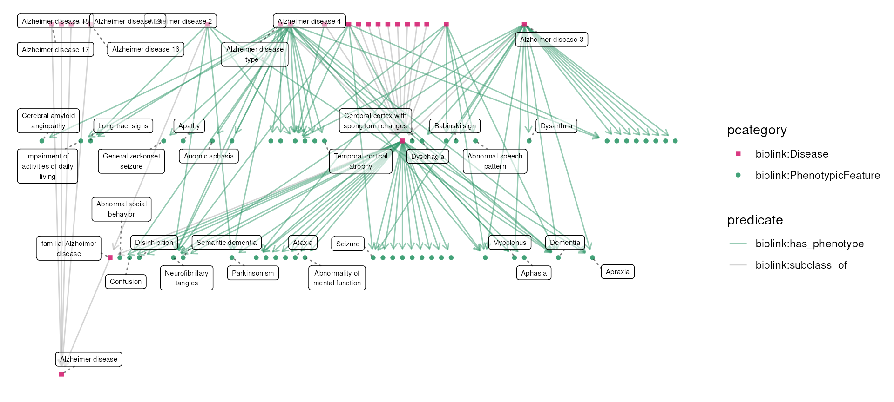

Categorizing Alzheimers Phenotypes
Shawn T O’Neil
Vignette updated: Oct-22-2024
Source:vignettes/examples/alzheimers_phenotypes.Rmd
alzheimers_phenotypes.RmdMotivation
This example explores the question: “what are the behavioral
phenotypes of Alzheimer’s disease”?1 As we’ll see, because Alzheimer’s is
associated with a variety of phenotypes of different kinds, we take an
exploratory approach that highlights the functionality provided by
monarchr and tidygraph.
Exploring Alzheimer’s
To start, we load monarchr, tidygraph, and
dplyr:
Let’s start by finding the disease node for Alzheimer’s itself with
monarch_search(), which uses the Monarch search API:
alz_search <- monarch_search("Alzheimer's", limit = 5)
alz_searchGraph with 5 nodes and 0 edges. Expand sections below for details.
Node Data
Showing 5 of 5 nodes:
| id | pcategory | name | description | synonym (list) | category (list) | iri | xref (list) | namespace | provided_by (list) |
|---|---|---|---|---|---|---|---|---|---|
| “MONDO:0012153” | “biolink:Disease” | “Alzheimer disease 9” | NA | c(“AD9”, “Alzheimer disease 9”, “Alzheimer disease 9, late-onset”, “Alzheimer disease 9, susceptibility to”) | c(“biolink:BiologicalEntity”, “biolink:Disease”, “biolink:DiseaseOrPhenotypicFeature”, “biolink:Entity”, “biolink:NamedThing”, “biolink:ThingWithTaxon”) | “http://purl.obolibrary.org/obo/MONDO_0012153” | c(“DOID:0111364”, “MEDGEN:924255”, “MESH:C563834”, “OMIM:608907”, “UMLS:C4282179”) | “MONDO” | “phenio_nodes” |
| “MONDO:0004975” | “biolink:Disease” | “Alzheimer disease” | “A progressive, neurodegenerative disease characterized by loss of function and death of nerve cells in several areas of the brain leading to loss of cognitive function such as memory and language.” | c(“AD”, “Alzheimer dementia”, “Alzheimer disease”, “Alzheimer disease, familial”, “Alzheimer’s dementia”, “Alzheimer’s disease”, “Alzheimers dementia”, “Alzheimers disease”, “presenile and senile dementia”) | c(“biolink:BiologicalEntity”, “biolink:Disease”, “biolink:DiseaseOrPhenotypicFeature”, “biolink:Entity”, “biolink:NamedThing”, “biolink:ThingWithTaxon”) | “http://purl.obolibrary.org/obo/MONDO_0004975” | c(“DOID:10652”, “HP:0002511”, “ICD10CM:G30”, “ICD9:290.1”, “ICD9:331.0”, “MEDGEN:1853”, “MESH:D000544”, “NCIT:C2866”, “NIFSTD:birnlex_2092”, “Orphanet:238616”, “SCTID:142811000119104”, “UMLS:C0002395”, “icd11.foundation:1611724421”) | “MONDO” | “phenio_nodes” |
| “MONDO:0010422” | “biolink:Disease” | “Alzheimer disease 16” | “An Alzheimer’s disease that is characterized by an associated with a risk allele in in the PCDH11X gene on chromosome Xq21.3.” | c(“AD16”, “Alzheimer disease 16”, “Alzheimer’s disease 16”, “Alzheimer’s disease type 16”) | c(“biolink:BiologicalEntity”, “biolink:Disease”, “biolink:DiseaseOrPhenotypicFeature”, “biolink:Entity”, “biolink:NamedThing”, “biolink:ThingWithTaxon”) | “http://purl.obolibrary.org/obo/MONDO_0010422” | c(“DOID:0110036”, “MEDGEN:394384”, “MESH:C567463”, “OMIM:300756”, “UMLS:C2677888”) | “MONDO” | “phenio_nodes” |
| “MONDO:0011194” | “biolink:Disease” | “Alzheimer disease 5” | NA | c(“AD5”, “Ad5”, “Alzheimer disease 5”, “Alzheimer disease type 5”, “Alzheimer disease, familial 5”, “Alzheimer disease, familial, 5”, “Alzheimer disease-5”, “Alzheimer’s disease 5”, “Alzheimer’s disease type 5”) | c(“biolink:BiologicalEntity”, “biolink:Disease”, “biolink:DiseaseOrPhenotypicFeature”, “biolink:Entity”, “biolink:NamedThing”, “biolink:ThingWithTaxon”) | “http://purl.obolibrary.org/obo/MONDO_0011194” | c(“DOID:0110037”, “GARD:16507”, “MEDGEN:356103”, “MESH:C566578”, “OMIM:602096”, “UMLS:C1865868”) | “MONDO” | “phenio_nodes” |
| “MONDO:0012609” | “biolink:Disease” | “Alzheimer disease 12” | “An Alzheimer’s disease that is characterized by an associated with variation in the region 8p12-q22.” | c(“AD12”, “Ad12”, “Alzheimer disease 12”, “Alzheimer disease familial 12”, “Alzheimer disease type 12”, “Alzheimer disease, familial, 12”, “Alzheimer’s disease 12”, “Alzheimer’s disease type 12”) | c(“biolink:BiologicalEntity”, “biolink:Disease”, “biolink:DiseaseOrPhenotypicFeature”, “biolink:Entity”, “biolink:NamedThing”, “biolink:ThingWithTaxon”) | “http://purl.obolibrary.org/obo/MONDO_0012609” | c(“DOID:0110045”, “GARD:16516”, “MEDGEN:410013”, “MESH:C567022”, “OMIM:611073”, “UMLS:C1970209”) | “MONDO” | “phenio_nodes” |
Edge Data
Showing 0 of 0 edges:
From these results we see that MONDO:0004975 is the ID
for the primary Alzheimer’s disease node (information also available on
the Monarch Initiative website).
We also see other types of Alzheimer’s, which appear to be distinct
subtypes.
Let’s fetch MONDO:0004975 and all of its transitive
subtypes. We’ll plot the result, specifying
layout = "sugiyama" (appropriate for directed acyclic
graphs such as this):
# get an engine to query the graph with
monarch <- monarch_engine()
alz_diseases <- monarch |>
fetch_nodes(query_ids = "MONDO:0004975") |>
expand(predicates = "biolink:subclass_of", direction = "in", transitive = TRUE)
plot(alz_diseases, layout = "sugiyama") Let’s also quickly fetch all of the phenotypes associated with any of
these; we’ll do so with
Let’s also quickly fetch all of the phenotypes associated with any of
these; we’ll do so with expand() specifying that we want
all connected biolink:PhenotypicFeature nodes.
alz_disease_phenos <- alz_diseases |>
expand(categories = "biolink:PhenotypicFeature")
plot(alz_disease_phenos, layout = "sugiyama")
There are quite a number of phenotypes associated with Alzheimer’s or
its subtypes. Most of these are associated via the
biolink:has_phenotype predicate, but there’s also a few
biolink:has_mode_of_inheritance connections. Let’s explore
those using tidygraph’s filtering features:
Graph with 76 nodes and 7 edges. Expand sections below for details.
Node Data
Showing 76 of 76 nodes:
| id | pcategory | name | description | synonym (list) | category (list) | iri | xref (list) | namespace | provided_by (list) |
|---|---|---|---|---|---|---|---|---|---|
| “MONDO:0004975” | “biolink:Disease” | “Alzheimer disease” | “A progressive, neurodegenerative disease characterized by loss of function and death of nerve cells in several areas of the brain leading to loss of cognitive function such as memory and language.” | c(“AD”, “Alzheimer dementia”, “Alzheimer disease”, “Alzheimer disease, familial”, “Alzheimer’s dementia”, “Alzheimer’s disease”, “Alzheimers dementia”, “Alzheimers disease”, “presenile and senile dementia”) | c(“biolink:BiologicalEntity”, “biolink:Disease”, “biolink:DiseaseOrPhenotypicFeature”, “biolink:Entity”, “biolink:NamedThing”, “biolink:ThingWithTaxon”) | “http://purl.obolibrary.org/obo/MONDO_0004975” | c(“DOID:10652”, “HP:0002511”, “ICD10CM:G30”, “ICD9:290.1”, “ICD9:331.0”, “MEDGEN:1853”, “MESH:D000544”, “NCIT:C2866”, “NIFSTD:birnlex_2092”, “Orphanet:238616”, “SCTID:142811000119104”, “UMLS:C0002395”, “icd11.foundation:1611724421”) | “MONDO” | “phenio_nodes” |
| “MONDO:0015140” | “biolink:Disease” | “early-onset autosomal dominant Alzheimer disease” | “A progressive dementia with reduction of cognitive functions. It presents the same phenotype as sporadic Alzheimer disease (AD) but has an early age of onset, usually before 60 years old.” | c(“EOFAD”, “early-onset familial autosomal dominant Alzheimer disease”, “early-onset, autosomal dominant Alzheimer disease”) | c(“biolink:BiologicalEntity”, “biolink:Disease”, “biolink:DiseaseOrPhenotypicFeature”, “biolink:Entity”, “biolink:NamedThing”, “biolink:ThingWithTaxon”) | “http://purl.obolibrary.org/obo/MONDO_0015140” | c(“GARD:12798”, “Orphanet:1020”) | “MONDO” | “phenio_nodes” |
| “MONDO:0007088” | “biolink:Disease” | “Alzheimer disease type 1” | NA | c(“AD”, “AD1”, “Alzheimer disease”, “Alzheimer disease 1”, “Alzheimer disease 1, familial”, “Alzheimer disease, early-onset, with cerebral amyloid angiopathy”, “Alzheimer disease, familial, 1”, “Alzheimer disease, late-onset, susceptibility to”, “Alzheimer disease, protection against”, “Alzheimer disease, susceptibility to”, “early-onset familial form of Alzheimer disease”, “presenile and senile dementia”) | c(“biolink:BiologicalEntity”, “biolink:Disease”, “biolink:DiseaseOrPhenotypicFeature”, “biolink:Entity”, “biolink:NamedThing”, “biolink:ThingWithTaxon”) | “http://purl.obolibrary.org/obo/MONDO_0007088” | c(“DECIPHER:48”, “DOID:0080348”, “GARD:9465”, “MEDGEN:354892”, “MESH:C536594”, “OMIM:104300”, “UMLS:C1863052”) | “MONDO” | “phenio_nodes” |
| “MONDO:0011743” | “biolink:Disease” | “Alzheimer disease 4” | “Alzheimer’s disease with an early onset (starts before the age of 65). It is caused by mutations in the PSEN2 gene.” | c(“AD4”, “Ad4”, “Alzheimer disease 4”, “Alzheimer disease familial type 4”, “Alzheimer disease type 4”, “Alzheimer disease, familial, 4”, “Alzheimer disease, familial4”, “Alzheimer disease-4”, “Alzheimer’s disease 4”, “Alzheimer’s disease type 4”, “familial Alzheimer disease, type 4”, “familial Alzheimer’s disease, type 4”) | c(“biolink:BiologicalEntity”, “biolink:Disease”, “biolink:DiseaseOrPhenotypicFeature”, “biolink:Entity”, “biolink:NamedThing”, “biolink:ThingWithTaxon”) | “http://purl.obolibrary.org/obo/MONDO_0011743” | c(“DOID:0110040”, “GARD:16511”, “MEDGEN:376072”, “MESH:C536596”, “NCIT:C123413”, “OMIM:606889”, “UMLS:C1847200”) | “MONDO” | “phenio_nodes” |
| “MONDO:0007089” | “biolink:Disease” | “Alzheimer disease 2” | “An Alzheimer’s disease that is characterized by an association of the apolipoprotein E E4 allele.” | c(“AD2”, “Alzheimer disease 2”, “Alzheimer disease 2, late onset”, “Alzheimer disease 2, late-onset”, “Alzheimer disease associated with APOE E4”, “Alzheimer disease associated with APOE4”, “Alzheimer disease type 2”, “Alzheimer disease-2”, “Alzheimer’s disease 2”, “Alzheimer’s disease type 2”, “LOFAD”, “late onset Alzheimer disease”, “late onset familial Alzheimer disease”, “late-onset familial alzheimer disease”) | c(“biolink:BiologicalEntity”, “biolink:Disease”, “biolink:DiseaseOrPhenotypicFeature”, “biolink:Entity”, “biolink:NamedThing”, “biolink:ThingWithTaxon”) | “http://purl.obolibrary.org/obo/MONDO_0007089” | c(“DOID:0110035”, “GARD:12799”, “MEDGEN:400197”, “MESH:C536595”, “OMIM:104310”, “UMLS:C1863051”) | “MONDO” | “phenio_nodes” |
| “MONDO:0100087” | “biolink:Disease” | “familial Alzheimer disease” | “A degenerative disease of the brain that causes gradual loss of memory, judgment, and the ability to function socially. About 25% of all Alzheimer disease is familial (more than 2 people in a family have AD). When Alzheimer disease begins before 60 or 65 years of age (early-onset AD) about 60% of the cases are familial (also known as Early-onset familial AD). These cases appear to be inherited in an autosomal dominant manner.” | c(“Alzheimer disease, familial”, “FAD”, “GARD:0000632”) | c(“biolink:BiologicalEntity”, “biolink:Disease”, “biolink:DiseaseOrPhenotypicFeature”, “biolink:Entity”, “biolink:NamedThing”, “biolink:ThingWithTaxon”) | “http://purl.obolibrary.org/obo/MONDO_0100087” | c(“MEDGEN:82914”, “UMLS:C0276496”) | “MONDO” | “phenio_nodes” |
| “MONDO:0014265” | “biolink:Disease” | “Alzheimer disease 18” | “Any Alzheimer disease in which the cause of the disease is a mutation in the ADAM10 gene.” | c(“AD18”, “ADAM10 Alzheimer disease”, “Alzheimer disease 18”, “Alzheimer disease 18, late-onset”, “Alzheimer disease 18, susceptibility to”, “Alzheimer disease caused by mutation in ADAM10”, “Alzheimer disease type 18”, “Alzheimer’s disease 18”, “Alzheimer’s disease type 18”) | c(“biolink:BiologicalEntity”, “biolink:Disease”, “biolink:DiseaseOrPhenotypicFeature”, “biolink:Entity”, “biolink:NamedThing”, “biolink:ThingWithTaxon”) | “http://purl.obolibrary.org/obo/MONDO_0014265” | c(“DOID:0110050”, “MEDGEN:816371”, “OMIM:615590”, “UMLS:C3810041”) | “MONDO” | “phenio_nodes” |
| “MONDO:0011913” | “biolink:Disease” | “Alzheimer disease 3” | “Alzheimer’s disease with an early onset (starts before the age of 65). It is caused by mutations in the PSEN1 gene.” | c(“AD”, “AD3”, “Alzheimer disease 3”, “Alzheimer disease 3, early onset”, “Alzheimer disease 3, early-onset”, “Alzheimer disease early onset type 3”, “Alzheimer disease familial 3”, “Alzheimer disease type 3”, “Alzheimer disease, familial, 3”, “Alzheimer disease, familial, 3, with spastic paraparesis and apraxia”, “Alzheimer disease, familial, 3, with spastic paraparesis and unusual plaques”, “Alzheimer disease, protection against, due to APOE3-Christchurch”, “Alzheimer disease, type 3”, “Alzheimer disease, type 3, with spastic paraparesis and apraxia”, “Alzheimer disease, type 3, with spastic paraparesis and unusual plaques”, “Alzheimer’s disease 3”, “Alzheimer’s disease type 3”, “PSEN1 early-onset autosomal dominant Alzheimer disease”, “early-onset autosomal dominant Alzheimer disease caused by mutation in PSEN1”, “familial Alzheimer disease, type 3”, “familial Alzheimer’s disease, type 3”) | c(“biolink:BiologicalEntity”, “biolink:Disease”, “biolink:DiseaseOrPhenotypicFeature”, “biolink:Entity”, “biolink:NamedThing”, “biolink:ThingWithTaxon”) | “http://purl.obolibrary.org/obo/MONDO_0011913” | c(“DOID:0110042”, “GARD:16513”, “MEDGEN:334304”, “MESH:C536598”, “NCIT:C123412”, “OMIM:607822”, “UMLS:C1843013”) | “MONDO” | “phenio_nodes” |
| “MONDO:0010422” | “biolink:Disease” | “Alzheimer disease 16” | “An Alzheimer’s disease that is characterized by an associated with a risk allele in in the PCDH11X gene on chromosome Xq21.3.” | c(“AD16”, “Alzheimer disease 16”, “Alzheimer’s disease 16”, “Alzheimer’s disease type 16”) | c(“biolink:BiologicalEntity”, “biolink:Disease”, “biolink:DiseaseOrPhenotypicFeature”, “biolink:Entity”, “biolink:NamedThing”, “biolink:ThingWithTaxon”) | “http://purl.obolibrary.org/obo/MONDO_0010422” | c(“DOID:0110036”, “MEDGEN:394384”, “MESH:C567463”, “OMIM:300756”, “UMLS:C2677888”) | “MONDO” | “phenio_nodes” |
| “MONDO:0011194” | “biolink:Disease” | “Alzheimer disease 5” | NA | c(“AD5”, “Ad5”, “Alzheimer disease 5”, “Alzheimer disease type 5”, “Alzheimer disease, familial 5”, “Alzheimer disease, familial, 5”, “Alzheimer disease-5”, “Alzheimer’s disease 5”, “Alzheimer’s disease type 5”) | c(“biolink:BiologicalEntity”, “biolink:Disease”, “biolink:DiseaseOrPhenotypicFeature”, “biolink:Entity”, “biolink:NamedThing”, “biolink:ThingWithTaxon”) | “http://purl.obolibrary.org/obo/MONDO_0011194” | c(“DOID:0110037”, “GARD:16507”, “MEDGEN:356103”, “MESH:C566578”, “OMIM:602096”, “UMLS:C1865868”) | “MONDO” | “phenio_nodes” |
| “MONDO:0011401” | “biolink:Disease” | “Alzheimer disease without neurofibrillary tangles” | NA | c(“AD15”, “Alzheimer disease 15”, “Alzheimer disease without neurofibrillary tangles”, “Alzheimer disease-15”, “Alzheimer’s disease 15”, “Alzheimer’s disease type 15”, “Alzheimer’s disease without neurofibrillary tangles”) | c(“biolink:BiologicalEntity”, “biolink:Disease”, “biolink:DiseaseOrPhenotypicFeature”, “biolink:Entity”, “biolink:NamedThing”, “biolink:ThingWithTaxon”) | “http://purl.obolibrary.org/obo/MONDO_0011401” | c(“DOID:0110048”, “GARD:7190”, “MEDGEN:346983”, “MESH:C536599”, “MESH:C566998”, “OMIM:604154”, “OMIM:611155”, “UMLS:C1858751”) | “MONDO” | “phenio_nodes” |
| “MONDO:0011513” | “biolink:Disease” | “Alzheimer disease, familial early-onset, with coexisting amyloid and prion pathology” | NA | “Alzheimer disease, familial early-onset, with coexisting amyloid and prion pathology” | c(“biolink:BiologicalEntity”, “biolink:Disease”, “biolink:DiseaseOrPhenotypicFeature”, “biolink:Entity”, “biolink:NamedThing”, “biolink:ThingWithTaxon”) | “http://purl.obolibrary.org/obo/MONDO_0011513” | c(“GARD:16508”, “MEDGEN:341884”, “MESH:C565728”, “OMIM:605055”, “UMLS:C1857933”) | “MONDO” | “phenio_nodes” |
| “MONDO:0011561” | “biolink:Disease” | “Alzheimer disease 6” | “An Alzheimer’s disease that is characterized by an associated with variation in the region 10q24.” | c(“AD6”, “Alzheimer disease 6”, “Alzheimer disease 6, late onset”, “Alzheimer disease 6, late-onset”, “Alzheimer disease type 6”, “Alzheimer’s disease 6”, “Alzheimer’s disease type 6”, “plasma Beta-amyloid-42 level quantitative trait locus”) | c(“biolink:BiologicalEntity”, “biolink:Disease”, “biolink:DiseaseOrPhenotypicFeature”, “biolink:Entity”, “biolink:NamedThing”, “biolink:ThingWithTaxon”) | “http://purl.obolibrary.org/obo/MONDO_0011561” | c(“DOID:0110038”, “GARD:16509”, “MEDGEN:381362”, “MESH:C565325”, “OMIM:605526”, “UMLS:C1854187”) | “MONDO” | “phenio_nodes” |
| “MONDO:0011647” | “biolink:Disease” | “Alzheimer disease 7” | “An Alzheimer’s disease that is characterized by an associated with variation in the region 10p13.” | c(“AD7”, “Ad7”, “Alzheimer disease 7”, “Alzheimer disease type 7”, “Alzheimer disease, familial 7”, “Alzheimer disease, familial, 7”, “Alzheimer disease-7”, “Alzheimer’s disease 7”, “Alzheimer’s disease type 7”) | c(“biolink:BiologicalEntity”, “biolink:Disease”, “biolink:DiseaseOrPhenotypicFeature”, “biolink:Entity”, “biolink:NamedThing”, “biolink:ThingWithTaxon”) | “http://purl.obolibrary.org/obo/MONDO_0011647” | c(“DOID:0110039”, “GARD:16510”, “MEDGEN:342907”, “MESH:C565251”, “OMIM:606187”, “UMLS:C1853555”) | “MONDO” | “phenio_nodes” |
| “MONDO:0011777” | “biolink:Disease” | “Alzheimer disease 8” | “An Alzheimer’s disease that is characterized by an associated with variation in the region 20p12.2-q11.21.” | c(“AD8”, “Ad8”, “Alzheimer disease 8”, “Alzheimer disease type 8”, “Alzheimer disease, familial 8”, “Alzheimer disease, familial, 8”, “Alzheimer’s disease 8”, “Alzheimer’s disease type 8”) | c(“biolink:BiologicalEntity”, “biolink:Disease”, “biolink:DiseaseOrPhenotypicFeature”, “biolink:Entity”, “biolink:NamedThing”, “biolink:ThingWithTaxon”) | “http://purl.obolibrary.org/obo/MONDO_0011777” | c(“DOID:0110041”, “GARD:16512”, “MEDGEN:375956”, “MESH:C564622”, “OMIM:607116”, “UMLS:C1846735”) | “MONDO” | “phenio_nodes” |
| “MONDO:0012321” | “biolink:Disease” | “Alzheimer disease 10” | “An Alzheimer’s disease that is characterized by an associated with variation in the region 7q36.” | c(“AD10”, “Ad10”, “Alzheimer disease 10”, “Alzheimer disease familial 10”, “Alzheimer disease type 10”, “Alzheimer disease, familial, 10”, “Alzheimer disease-10”, “Alzheimer’s disease 10”, “Alzheimer’s disease type 10”) | c(“biolink:BiologicalEntity”, “biolink:Disease”, “biolink:DiseaseOrPhenotypicFeature”, “biolink:Entity”, “biolink:NamedThing”, “biolink:ThingWithTaxon”) | “http://purl.obolibrary.org/obo/MONDO_0012321” | c(“DOID:0110043”, “GARD:16514”, “MEDGEN:351228”, “MESH:C566465”, “OMIM:609636”, “UMLS:C1864828”) | “MONDO” | “phenio_nodes” |
| “MONDO:0012344” | “biolink:Disease” | “Alzheimer disease 11” | “An Alzheimer’s disease that is characterized by an associated with variation in the region 9p22.1.” | c(“AD11”, “Ad11”, “Alzheimer disease 11”, “Alzheimer disease type 11”, “Alzheimer disease, familial, 11”, “Alzheimer disease-11”, “Alzheimer’s disease 11”, “Alzheimer’s disease type 11”) | c(“biolink:BiologicalEntity”, “biolink:Disease”, “biolink:DiseaseOrPhenotypicFeature”, “biolink:Entity”, “biolink:NamedThing”, “biolink:ThingWithTaxon”) | “http://purl.obolibrary.org/obo/MONDO_0012344” | c(“DOID:0110044”, “GARD:16515”, “MEDGEN:377886”, “MESH:C565228”, “OMIM:609790”, “UMLS:C1853360”) | “MONDO” | “phenio_nodes” |
| “MONDO:0012609” | “biolink:Disease” | “Alzheimer disease 12” | “An Alzheimer’s disease that is characterized by an associated with variation in the region 8p12-q22.” | c(“AD12”, “Ad12”, “Alzheimer disease 12”, “Alzheimer disease familial 12”, “Alzheimer disease type 12”, “Alzheimer disease, familial, 12”, “Alzheimer’s disease 12”, “Alzheimer’s disease type 12”) | c(“biolink:BiologicalEntity”, “biolink:Disease”, “biolink:DiseaseOrPhenotypicFeature”, “biolink:Entity”, “biolink:NamedThing”, “biolink:ThingWithTaxon”) | “http://purl.obolibrary.org/obo/MONDO_0012609” | c(“DOID:0110045”, “GARD:16516”, “MEDGEN:410013”, “MESH:C567022”, “OMIM:611073”, “UMLS:C1970209”) | “MONDO” | “phenio_nodes” |
| “MONDO:0012630” | “biolink:Disease” | “Alzheimer disease 13” | “An Alzheimer’s disease that is characterized by an associated with variation in the region 1q21.” | c(“AD13”, “Alzheimer disease 13”, “Alzheimer disease-13”, “Alzheimer’s disease 13”, “Alzheimer’s disease type 13”) | c(“biolink:BiologicalEntity”, “biolink:Disease”, “biolink:DiseaseOrPhenotypicFeature”, “biolink:Entity”, “biolink:NamedThing”, “biolink:ThingWithTaxon”) | “http://purl.obolibrary.org/obo/MONDO_0012630” | c(“DOID:0110046”, “GARD:16517”, “MEDGEN:370835”, “MESH:C567000”, “OMIM:611152”, “UMLS:C1970147”) | “MONDO” | “phenio_nodes” |
| “MONDO:0012631” | “biolink:Disease” | “Alzheimer disease 14” | “An Alzheimer’s disease that is characterized by an associated with variation in the region 1q25.” | c(“AD14”, “Alzheimer disease 14”, “Alzheimer disease-14”, “Alzheimer’s disease 14”, “Alzheimer’s disease type 14”) | c(“biolink:BiologicalEntity”, “biolink:Disease”, “biolink:DiseaseOrPhenotypicFeature”, “biolink:Entity”, “biolink:NamedThing”, “biolink:ThingWithTaxon”) | “http://purl.obolibrary.org/obo/MONDO_0012631” | c(“DOID:0110047”, “GARD:16518”, “MEDGEN:369666”, “MESH:C566999”, “OMIM:611154”, “UMLS:C1970144”) | “MONDO” | “phenio_nodes” |
| “MONDO:0014036” | “biolink:Disease” | “Alzheimer disease 17” | “An Alzheimer’s disease that is characterized by an associated with mutations in the gene TREM2.” | c(“AD17”, “Alzheimer disease 17”, “Alzheimer disease 17, late onset”, “Alzheimer disease 17, late-onset”, “Alzheimer’s disease 17”, “Alzheimer’s disease type 17”) | c(“biolink:BiologicalEntity”, “biolink:Disease”, “biolink:DiseaseOrPhenotypicFeature”, “biolink:Entity”, “biolink:NamedThing”, “biolink:ThingWithTaxon”) | “http://purl.obolibrary.org/obo/MONDO_0014036” | c(“DOID:0110049”, “MEDGEN:767366”, “OMIM:615080”, “UMLS:C3554452”) | “MONDO” | “phenio_nodes” |
| “MONDO:0014316” | “biolink:Disease” | “Alzheimer disease 19” | “Any Alzheimer disease in which the cause of the disease is a mutation in the PLD3 gene.” | c(“AD19”, “Alzheimer disease 19”, “Alzheimer disease 19 late onset”, “Alzheimer disease 19, late-onset”, “Alzheimer disease caused by mutation in PLD3”, “Alzheimer disease type 19”, “Alzheimer’s disease 19”, “Alzheimer’s disease type 19”, “PLD3 Alzheimer disease”) | c(“biolink:BiologicalEntity”, “biolink:Disease”, “biolink:DiseaseOrPhenotypicFeature”, “biolink:Entity”, “biolink:NamedThing”, “biolink:ThingWithTaxon”) | “http://purl.obolibrary.org/obo/MONDO_0014316” | c(“DOID:0110051”, “MEDGEN:816679”, “OMIM:615711”, “UMLS:C3810349”) | “MONDO” | “phenio_nodes” |
| “HP:0001300” | “biolink:PhenotypicFeature” | “Parkinsonism” | NA | “Parkinsonian disease” | c(“biolink:BiologicalEntity”, “biolink:DiseaseOrPhenotypicFeature”, “biolink:Entity”, “biolink:NamedThing”, “biolink:PhenotypicFeature”, “biolink:ThingWithTaxon”) | “http://purl.obolibrary.org/obo/HP_0001300” | NA | “HP” | “phenio_nodes” |
| “HP:0000726” | “biolink:PhenotypicFeature” | “Dementia” | NA | NA | c(“biolink:BiologicalEntity”, “biolink:DiseaseOrPhenotypicFeature”, “biolink:Entity”, “biolink:NamedThing”, “biolink:PhenotypicFeature”, “biolink:ThingWithTaxon”) | “http://purl.obolibrary.org/obo/HP_0000726” | NA | “HP” | “phenio_nodes” |
| “HP:0002185” | “biolink:PhenotypicFeature” | “Neurofibrillary tangles” | NA | c(“Neurofibrillary tangles composed of disordered microtubules in neurons”, “Paired helical filaments”) | c(“biolink:BiologicalEntity”, “biolink:DiseaseOrPhenotypicFeature”, “biolink:Entity”, “biolink:NamedThing”, “biolink:PhenotypicFeature”, “biolink:ThingWithTaxon”) | “http://purl.obolibrary.org/obo/HP_0002185” | NA | “HP” | “phenio_nodes” |
| “HP:0410054” | “biolink:PhenotypicFeature” | “Decreased circulating GABA concentration” | NA | c(“Decreased circulating gamma-aminobutyric acid concentration”, “Decreased level of gamma-aminobutyric acid in serum”) | c(“biolink:BiologicalEntity”, “biolink:DiseaseOrPhenotypicFeature”, “biolink:Entity”, “biolink:NamedThing”, “biolink:PhenotypicFeature”, “biolink:ThingWithTaxon”) | “http://purl.obolibrary.org/obo/HP_0410054” | NA | “HP” | “phenio_nodes” |
| “HP:0002423” | “biolink:PhenotypicFeature” | “Long-tract signs” | “Long-tract signs refer to symptoms that are attributable to the involvement of the long fiber tracts in the spinal cord, which connect the spinal cord to the brain and mediate spinal and motor functions.” | “Long tract signs” | c(“biolink:BiologicalEntity”, “biolink:DiseaseOrPhenotypicFeature”, “biolink:Entity”, “biolink:NamedThing”, “biolink:PhenotypicFeature”, “biolink:ThingWithTaxon”) | “http://purl.obolibrary.org/obo/HP_0002423” | NA | “HP” | “phenio_nodes” |
| “HP:0002511” | “biolink:PhenotypicFeature” | “Alzheimer disease” | NA | NA | c(“biolink:BiologicalEntity”, “biolink:DiseaseOrPhenotypicFeature”, “biolink:Entity”, “biolink:NamedThing”, “biolink:PhenotypicFeature”, “biolink:ThingWithTaxon”) | “http://purl.obolibrary.org/obo/HP_0002511” | NA | “HP” | “phenio_nodes” |
| “HP:0006979” | “biolink:PhenotypicFeature” | “Sleep-wake cycle disturbance” | NA | c(“Internal-clock disorders”, “Sleep phase disturbance”, “Sleep-wake cycle disorders”) | c(“biolink:BiologicalEntity”, “biolink:DiseaseOrPhenotypicFeature”, “biolink:Entity”, “biolink:NamedThing”, “biolink:PhenotypicFeature”, “biolink:ThingWithTaxon”) | “http://purl.obolibrary.org/obo/HP_0006979” | NA | “HP” | “phenio_nodes” |
| “HP:0001289” | “biolink:PhenotypicFeature” | “Confusion” | “Lack of clarity and coherence of thought, perception, understanding, or action.” | NA | c(“biolink:BiologicalEntity”, “biolink:DiseaseOrPhenotypicFeature”, “biolink:Entity”, “biolink:NamedThing”, “biolink:PhenotypicFeature”, “biolink:ThingWithTaxon”) | “http://purl.obolibrary.org/obo/HP_0001289” | NA | “HP” | “phenio_nodes” |
| “HP:0002354” | “biolink:PhenotypicFeature” | “Memory impairment” | NA | NA | c(“biolink:BiologicalEntity”, “biolink:DiseaseOrPhenotypicFeature”, “biolink:Entity”, “biolink:NamedThing”, “biolink:PhenotypicFeature”, “biolink:ThingWithTaxon”) | “http://purl.obolibrary.org/obo/HP_0002354” | NA | “HP” | “phenio_nodes” |
| “HP:0002197” | “biolink:PhenotypicFeature” | “Generalized-onset seizure” | NA | c(“Generalized onset seizure”, “Primary generalized seizure”) | c(“biolink:BiologicalEntity”, “biolink:DiseaseOrPhenotypicFeature”, “biolink:Entity”, “biolink:NamedThing”, “biolink:PhenotypicFeature”, “biolink:ThingWithTaxon”) | “http://purl.obolibrary.org/obo/HP_0002197” | NA | “HP” | “phenio_nodes” |
| “HP:0002186” | “biolink:PhenotypicFeature” | “Apraxia” | “A defect in the understanding of complex motor commands and in the execution of certain learned movements, i.e., deficits in the cognitive components of learned movements.” | “Apraxias” | c(“biolink:BiologicalEntity”, “biolink:DiseaseOrPhenotypicFeature”, “biolink:Entity”, “biolink:NamedThing”, “biolink:PhenotypicFeature”, “biolink:ThingWithTaxon”) | “http://purl.obolibrary.org/obo/HP_0002186” | NA | “HP” | “phenio_nodes” |
| “HP:0030784” | “biolink:PhenotypicFeature” | “Anomic aphasia” | NA | c(“Amnesic aphasia”, “Amnestic aphasia”, “Anomia”, “Nominal aphasia”) | c(“biolink:BiologicalEntity”, “biolink:DiseaseOrPhenotypicFeature”, “biolink:Entity”, “biolink:NamedThing”, “biolink:PhenotypicFeature”, “biolink:ThingWithTaxon”) | “http://purl.obolibrary.org/obo/HP_0030784” | NA | “HP” | “phenio_nodes” |
| “HP:0031058” | “biolink:PhenotypicFeature” | “Impairment of activities of daily living” | “Difficulty in performing one or more activities normally performed every day, such as eating, bathing, dressing, grooming, work, homemaking, and leisure.” | NA | c(“biolink:BiologicalEntity”, “biolink:DiseaseOrPhenotypicFeature”, “biolink:Entity”, “biolink:NamedThing”, “biolink:PhenotypicFeature”, “biolink:ThingWithTaxon”) | “http://purl.obolibrary.org/obo/HP_0031058” | NA | “HP” | “phenio_nodes” |
| “HP:0100256” | “biolink:PhenotypicFeature” | “Senile plaques” | NA | c(“Braindruse”, “Neuritic plaques”, “Senile druse”) | c(“biolink:BiologicalEntity”, “biolink:DiseaseOrPhenotypicFeature”, “biolink:Entity”, “biolink:NamedThing”, “biolink:PhenotypicFeature”, “biolink:ThingWithTaxon”) | “http://purl.obolibrary.org/obo/HP_0100256” | NA | “HP” | “phenio_nodes” |
| “HP:0012662” | “biolink:PhenotypicFeature” | “Parietal hypometabolism in FDG PET” | NA | NA | c(“biolink:BiologicalEntity”, “biolink:DiseaseOrPhenotypicFeature”, “biolink:Entity”, “biolink:NamedThing”, “biolink:PhenotypicFeature”, “biolink:ThingWithTaxon”) | “http://purl.obolibrary.org/obo/HP_0012662” | NA | “HP” | “phenio_nodes” |
| “HP:0100543” | “biolink:PhenotypicFeature” | “Cognitive impairment” | “Abnormal cognition is characterized by deficits in thinking, reasoning, or remembering.” | NA | c(“biolink:BiologicalEntity”, “biolink:DiseaseOrPhenotypicFeature”, “biolink:Entity”, “biolink:NamedThing”, “biolink:PhenotypicFeature”, “biolink:ThingWithTaxon”) | “http://purl.obolibrary.org/obo/HP_0100543” | NA | “HP” | “phenio_nodes” |
| “HP:0011970” | “biolink:PhenotypicFeature” | “Cerebral amyloid angiopathy” | NA | NA | c(“biolink:BiologicalEntity”, “biolink:DiseaseOrPhenotypicFeature”, “biolink:Entity”, “biolink:NamedThing”, “biolink:PhenotypicFeature”, “biolink:ThingWithTaxon”) | “http://purl.obolibrary.org/obo/HP_0011970” | NA | “HP” | “phenio_nodes” |
| “HP:0000718” | “biolink:PhenotypicFeature” | “Aggressive behavior” | “Behavior or an act aimed at harming a person, animal, or physical property (e.g., acts of physical violence; shouting, swearing, and using harsh language; slashing someone’s tires).” | NA | c(“biolink:BiologicalEntity”, “biolink:DiseaseOrPhenotypicFeature”, “biolink:Entity”, “biolink:NamedThing”, “biolink:PhenotypicFeature”, “biolink:ThingWithTaxon”) | “http://purl.obolibrary.org/obo/HP_0000718” | NA | “HP” | “phenio_nodes” |
| “HP:0007112” | “biolink:PhenotypicFeature” | “Temporal cortical atrophy” | NA | NA | c(“biolink:BiologicalEntity”, “biolink:DiseaseOrPhenotypicFeature”, “biolink:Entity”, “biolink:NamedThing”, “biolink:PhenotypicFeature”, “biolink:ThingWithTaxon”) | “http://purl.obolibrary.org/obo/HP_0007112” | NA | “HP” | “phenio_nodes” |
| “HP:0000741” | “biolink:PhenotypicFeature” | “Apathy” | “Apathy is a quantitative reduction of interest, motivation and the initiation and persistence of goal-directed behavior, where often the accompanying emotions, thoughts, and social interactions are also diminished. The individual is typically non-reactive to provocations, positive or negative, and appears to not care. Distinguished from lethargy which involves lack of physical or mental energy.” | c(“Lack of feeling, emotion, interest, motivation, initiation”, “State of indifference”) | c(“biolink:BiologicalEntity”, “biolink:DiseaseOrPhenotypicFeature”, “biolink:Entity”, “biolink:NamedThing”, “biolink:PhenotypicFeature”, “biolink:ThingWithTaxon”) | “http://purl.obolibrary.org/obo/HP_0000741” | NA | “HP” | “phenio_nodes” |
| “HP:0001336” | “biolink:PhenotypicFeature” | “Myoclonus” | NA | c(“Involuntary jerking movements”, “Myoclonic jerks”) | c(“biolink:BiologicalEntity”, “biolink:DiseaseOrPhenotypicFeature”, “biolink:Entity”, “biolink:NamedThing”, “biolink:PhenotypicFeature”, “biolink:ThingWithTaxon”) | “http://purl.obolibrary.org/obo/HP_0001336” | NA | “HP” | “phenio_nodes” |
| “HP:0000006” | “biolink:PhenotypicFeature” | “Autosomal dominant inheritance” | NA | NA | c(“biolink:BiologicalEntity”, “biolink:DiseaseOrPhenotypicFeature”, “biolink:Entity”, “biolink:NamedThing”, “biolink:PhenotypicFeature”, “biolink:ThingWithTaxon”) | “http://purl.obolibrary.org/obo/HP_0000006” | NA | “HP” | “phenio_nodes” |
| “HP:0002015” | “biolink:PhenotypicFeature” | “Dysphagia” | NA | c(“Deglutition disorder”, “Difficulty swallowing”) | c(“biolink:BiologicalEntity”, “biolink:DiseaseOrPhenotypicFeature”, “biolink:Entity”, “biolink:NamedThing”, “biolink:PhenotypicFeature”, “biolink:ThingWithTaxon”) | “http://purl.obolibrary.org/obo/HP_0002015” | NA | “HP” | “phenio_nodes” |
| “HP:0031868” | “biolink:PhenotypicFeature” | “Optic ataxia” | “Difficulty reaching visually guided goals in peripheral vision, with the deficit, leaves voluntary eye movements largely unaffected.” | NA | c(“biolink:BiologicalEntity”, “biolink:DiseaseOrPhenotypicFeature”, “biolink:Entity”, “biolink:NamedThing”, “biolink:PhenotypicFeature”, “biolink:ThingWithTaxon”) | “http://purl.obolibrary.org/obo/HP_0031868” | NA | “HP” | “phenio_nodes” |
| “HP:0001288” | “biolink:PhenotypicFeature” | “Gait disturbance” | NA | c(“Gait abnormalities”, “Gait difficulties”, “Gait disturbances”, “Walking disability”) | c(“biolink:BiologicalEntity”, “biolink:DiseaseOrPhenotypicFeature”, “biolink:Entity”, “biolink:NamedThing”, “biolink:PhenotypicFeature”, “biolink:ThingWithTaxon”) | “http://purl.obolibrary.org/obo/HP_0001288” | NA | “HP” | “phenio_nodes” |
| “HP:0001332” | “biolink:PhenotypicFeature” | “Dystonia” | NA | c(“Dystonic disease”, “Dystonic movements”) | c(“biolink:BiologicalEntity”, “biolink:DiseaseOrPhenotypicFeature”, “biolink:Entity”, “biolink:NamedThing”, “biolink:PhenotypicFeature”, “biolink:ThingWithTaxon”) | “http://purl.obolibrary.org/obo/HP_0001332” | NA | “HP” | “phenio_nodes” |
| “HP:0003487” | “biolink:PhenotypicFeature” | “Babinski sign” | NA | c(“Extensor plantar reflexes”, “Extensor plantar response”, “Extensor plantar responses”, “Positive Babinski sign”) | c(“biolink:BiologicalEntity”, “biolink:DiseaseOrPhenotypicFeature”, “biolink:Entity”, “biolink:NamedThing”, “biolink:PhenotypicFeature”, “biolink:ThingWithTaxon”) | “http://purl.obolibrary.org/obo/HP_0003487” | NA | “HP” | “phenio_nodes” |
| “HP:0001250” | “biolink:PhenotypicFeature” | “Seizure” | NA | “Epileptic seizure” | c(“biolink:BiologicalEntity”, “biolink:DiseaseOrPhenotypicFeature”, “biolink:Entity”, “biolink:NamedThing”, “biolink:PhenotypicFeature”, “biolink:ThingWithTaxon”) | “http://purl.obolibrary.org/obo/HP_0001250” | NA | “HP” | “phenio_nodes” |
| “HP:0002120” | “biolink:PhenotypicFeature” | “Cerebral cortical atrophy” | NA | c(“Cerebral cortex atrophy”, “Cortical atrophy”) | c(“biolink:BiologicalEntity”, “biolink:DiseaseOrPhenotypicFeature”, “biolink:Entity”, “biolink:NamedThing”, “biolink:PhenotypicFeature”, “biolink:ThingWithTaxon”) | “http://purl.obolibrary.org/obo/HP_0002120” | NA | “HP” | “phenio_nodes” |
| “HP:0002395” | “biolink:PhenotypicFeature” | “Lower limb hyperreflexia” | NA | c(“Brisk lower extremity reflexes”, “Hyperreflexia in lower limbs”, “Hyperreflexia in the lower limbs”, “Increased deep tendon reflexes in the lower limbs”, “Leg hyperreflexia”) | c(“biolink:BiologicalEntity”, “biolink:DiseaseOrPhenotypicFeature”, “biolink:Entity”, “biolink:NamedThing”, “biolink:PhenotypicFeature”, “biolink:ThingWithTaxon”) | “http://purl.obolibrary.org/obo/HP_0002395” | NA | “HP” | “phenio_nodes” |
| “HP:0001260” | “biolink:PhenotypicFeature” | “Dysarthria” | NA | “Dysarthric speech” | c(“biolink:BiologicalEntity”, “biolink:DiseaseOrPhenotypicFeature”, “biolink:Entity”, “biolink:NamedThing”, “biolink:PhenotypicFeature”, “biolink:ThingWithTaxon”) | “http://purl.obolibrary.org/obo/HP_0001260” | NA | “HP” | “phenio_nodes” |
| “HP:0001285” | “biolink:PhenotypicFeature” | “Spastic tetraparesis” | NA | “Spastic quadriparesis” | c(“biolink:BiologicalEntity”, “biolink:DiseaseOrPhenotypicFeature”, “biolink:Entity”, “biolink:NamedThing”, “biolink:PhenotypicFeature”, “biolink:ThingWithTaxon”) | “http://purl.obolibrary.org/obo/HP_0001285” | NA | “HP” | “phenio_nodes” |
| “HP:0002071” | “biolink:PhenotypicFeature” | “Abnormality of extrapyramidal motor function” | NA | c(“Extrapyramidal dysfunction”, “Extrapyramidal signs”, “Extrapyramidal symptoms”, “Extrapyramidal syndrome”, “Extrapyramidal tract signs”) | c(“biolink:BiologicalEntity”, “biolink:DiseaseOrPhenotypicFeature”, “biolink:Entity”, “biolink:NamedThing”, “biolink:PhenotypicFeature”, “biolink:ThingWithTaxon”) | “http://purl.obolibrary.org/obo/HP_0002071” | NA | “HP” | “phenio_nodes” |
| “HP:0010524” | “biolink:PhenotypicFeature” | “Disturbed sensory perception” | “Alteration or impairment in the processing or interpretation of sensory information can lead to abnormal perceptions or experiences.” | “Agnosia” | c(“biolink:BiologicalEntity”, “biolink:DiseaseOrPhenotypicFeature”, “biolink:Entity”, “biolink:NamedThing”, “biolink:PhenotypicFeature”, “biolink:ThingWithTaxon”) | “http://purl.obolibrary.org/obo/HP_0010524” | NA | “HP” | “phenio_nodes” |
| “HP:0000751” | “biolink:PhenotypicFeature” | “Personality changes” | “An abnormal shift in patterns of thinking, acting, or feeling.” | NA | c(“biolink:BiologicalEntity”, “biolink:DiseaseOrPhenotypicFeature”, “biolink:Entity”, “biolink:NamedThing”, “biolink:PhenotypicFeature”, “biolink:ThingWithTaxon”) | “http://purl.obolibrary.org/obo/HP_0000751” | NA | “HP” | “phenio_nodes” |
| “HP:0000713” | “biolink:PhenotypicFeature” | “Agitation” | “A state of extreme restlessness and excessive motor activity is associated with mental distress or a feeling of inner tension.” | “Psychomotor agitation” | c(“biolink:BiologicalEntity”, “biolink:DiseaseOrPhenotypicFeature”, “biolink:Entity”, “biolink:NamedThing”, “biolink:PhenotypicFeature”, “biolink:ThingWithTaxon”) | “http://purl.obolibrary.org/obo/HP_0000713” | NA | “HP” | “phenio_nodes” |
| “HP:0000738” | “biolink:PhenotypicFeature” | “Hallucinations” | “Perceptions in a conscious and awake state that, in the absence of external stimuli, have qualities of real perception. These perceptions are vivid, substantial, and located in external objective space.” | NA | c(“biolink:BiologicalEntity”, “biolink:DiseaseOrPhenotypicFeature”, “biolink:Entity”, “biolink:NamedThing”, “biolink:PhenotypicFeature”, “biolink:ThingWithTaxon”) | “http://purl.obolibrary.org/obo/HP_0000738” | NA | “HP” | “phenio_nodes” |
| “HP:0001276” | “biolink:PhenotypicFeature” | “Hypertonia” | NA | c(“Hypertonicity”, “Increased muscle tone”, “Muscle hypertonia”) | c(“biolink:BiologicalEntity”, “biolink:DiseaseOrPhenotypicFeature”, “biolink:Entity”, “biolink:NamedThing”, “biolink:PhenotypicFeature”, “biolink:ThingWithTaxon”) | “http://purl.obolibrary.org/obo/HP_0001276” | NA | “HP” | “phenio_nodes” |
| “HP:0002463” | “biolink:PhenotypicFeature” | “Language impairment” | “Language impairment is a deficit in comprehension or production of language that includes reduced vocabulary, limited sentence structure, or impairments in written or spoken communication. Language abilities are substantially and quantifiably below age expectations.” | NA | c(“biolink:BiologicalEntity”, “biolink:DiseaseOrPhenotypicFeature”, “biolink:Entity”, “biolink:NamedThing”, “biolink:PhenotypicFeature”, “biolink:ThingWithTaxon”) | “http://purl.obolibrary.org/obo/HP_0002463” | NA | “HP” | “phenio_nodes” |
| “HP:0003791” | “biolink:PhenotypicFeature” | “Deposits immunoreactive to beta-amyloid protein” | NA | NA | c(“biolink:BiologicalEntity”, “biolink:DiseaseOrPhenotypicFeature”, “biolink:Entity”, “biolink:NamedThing”, “biolink:PhenotypicFeature”, “biolink:ThingWithTaxon”) | “http://purl.obolibrary.org/obo/HP_0003791” | NA | “HP” | “phenio_nodes” |
| “HP:0012433” | “biolink:PhenotypicFeature” | “Abnormal social behavior” | “An abnormality of actions or reactions of a person taking place during interactions with others.” | NA | c(“biolink:BiologicalEntity”, “biolink:DiseaseOrPhenotypicFeature”, “biolink:Entity”, “biolink:NamedThing”, “biolink:PhenotypicFeature”, “biolink:ThingWithTaxon”) | “http://purl.obolibrary.org/obo/HP_0012433” | NA | “HP” | “phenio_nodes” |
| “HP:0012759” | “biolink:PhenotypicFeature” | “Neurodevelopmental abnormality” | NA | NA | c(“biolink:BiologicalEntity”, “biolink:DiseaseOrPhenotypicFeature”, “biolink:Entity”, “biolink:NamedThing”, “biolink:PhenotypicFeature”, “biolink:ThingWithTaxon”) | “http://purl.obolibrary.org/obo/HP_0012759” | NA | “HP” | “phenio_nodes” |
| “HP:0000734” | “biolink:PhenotypicFeature” | “Disinhibition” | “Reduced ability to control, or a failure to resist a temptation, urge, or impulse. Examples include disregard for social conventions, general impulsivity, and poor risk assessment.” | c(“Impulse control disorders”, “Self-control”) | c(“biolink:BiologicalEntity”, “biolink:DiseaseOrPhenotypicFeature”, “biolink:Entity”, “biolink:NamedThing”, “biolink:PhenotypicFeature”, “biolink:ThingWithTaxon”) | “http://purl.obolibrary.org/obo/HP_0000734” | NA | “HP” | “phenio_nodes” |
| “HP:0000504” | “biolink:PhenotypicFeature” | “Abnormality of vision” | NA | NA | c(“biolink:BiologicalEntity”, “biolink:DiseaseOrPhenotypicFeature”, “biolink:Entity”, “biolink:NamedThing”, “biolink:PhenotypicFeature”, “biolink:ThingWithTaxon”) | “http://purl.obolibrary.org/obo/HP_0000504” | NA | “HP” | “phenio_nodes” |
| “HP:0000657” | “biolink:PhenotypicFeature” | “Oculomotor apraxia” | NA | c(“Defective or absent horizontal voluntary eye movements”, “Ocular motor apraxia”) | c(“biolink:BiologicalEntity”, “biolink:DiseaseOrPhenotypicFeature”, “biolink:Entity”, “biolink:NamedThing”, “biolink:PhenotypicFeature”, “biolink:ThingWithTaxon”) | “http://purl.obolibrary.org/obo/HP_0000657” | NA | “HP” | “phenio_nodes” |
| “HP:0001249” | “biolink:PhenotypicFeature” | “Intellectual disability” | “Intellectual disability, previously referred to as mental retardation, is characterized by subnormal intellectual functioning that occurs during the developmental period. It is defined by an IQ score below 70.” | c(“Dull intelligence”, “Nonprogressive intellectual disability”, “Nonprogressive mental retardation”) | c(“biolink:BiologicalEntity”, “biolink:DiseaseOrPhenotypicFeature”, “biolink:Entity”, “biolink:NamedThing”, “biolink:PhenotypicFeature”, “biolink:ThingWithTaxon”) | “http://purl.obolibrary.org/obo/HP_0001249” | NA | “HP” | “phenio_nodes” |
| “HP:0001251” | “biolink:PhenotypicFeature” | “Ataxia” | NA | “Cerebellar ataxia” | c(“biolink:BiologicalEntity”, “biolink:DiseaseOrPhenotypicFeature”, “biolink:Entity”, “biolink:NamedThing”, “biolink:PhenotypicFeature”, “biolink:ThingWithTaxon”) | “http://purl.obolibrary.org/obo/HP_0001251” | NA | “HP” | “phenio_nodes” |
| “HP:0002381” | “biolink:PhenotypicFeature” | “Aphasia” | NA | NA | c(“biolink:BiologicalEntity”, “biolink:DiseaseOrPhenotypicFeature”, “biolink:Entity”, “biolink:NamedThing”, “biolink:PhenotypicFeature”, “biolink:ThingWithTaxon”) | “http://purl.obolibrary.org/obo/HP_0002381” | NA | “HP” | “phenio_nodes” |
| “HP:0010525” | “biolink:PhenotypicFeature” | “Finger agnosia” | “The examiner identified the inability to name, move, or touch specific fingers.” | NA | c(“biolink:BiologicalEntity”, “biolink:DiseaseOrPhenotypicFeature”, “biolink:Entity”, “biolink:NamedThing”, “biolink:PhenotypicFeature”, “biolink:ThingWithTaxon”) | “http://purl.obolibrary.org/obo/HP_0010525” | NA | “HP” | “phenio_nodes” |
| “HP:0010526” | “biolink:PhenotypicFeature” | “Dysgraphia” | NA | “Agraphia” | c(“biolink:BiologicalEntity”, “biolink:DiseaseOrPhenotypicFeature”, “biolink:Entity”, “biolink:NamedThing”, “biolink:PhenotypicFeature”, “biolink:ThingWithTaxon”) | “http://purl.obolibrary.org/obo/HP_0010526” | NA | “HP” | “phenio_nodes” |
| “HP:0011446” | “biolink:PhenotypicFeature” | “Abnormality of mental function” | “Cognitive, psychiatric, or memory anomaly.” | “Abnormality of higher mental function” | c(“biolink:BiologicalEntity”, “biolink:DiseaseOrPhenotypicFeature”, “biolink:Entity”, “biolink:NamedThing”, “biolink:PhenotypicFeature”, “biolink:ThingWithTaxon”) | “http://purl.obolibrary.org/obo/HP_0011446” | NA | “HP” | “phenio_nodes” |
| “HP:0030219” | “biolink:PhenotypicFeature” | “Semantic dementia” | NA | NA | c(“biolink:BiologicalEntity”, “biolink:DiseaseOrPhenotypicFeature”, “biolink:Entity”, “biolink:NamedThing”, “biolink:PhenotypicFeature”, “biolink:ThingWithTaxon”) | “http://purl.obolibrary.org/obo/HP_0030219” | NA | “HP” | “phenio_nodes” |
| “HP:0006790” | “biolink:PhenotypicFeature” | “Cerebral cortex with spongiform changes” | NA | NA | c(“biolink:BiologicalEntity”, “biolink:DiseaseOrPhenotypicFeature”, “biolink:Entity”, “biolink:NamedThing”, “biolink:PhenotypicFeature”, “biolink:ThingWithTaxon”) | “http://purl.obolibrary.org/obo/HP_0006790” | NA | “HP” | “phenio_nodes” |
| “HP:0002167” | “biolink:PhenotypicFeature” | “Abnormal speech pattern” | “An abnormality in the sound (volume) or cadence (rate) of speech.” | c(“Abnormal speech”, “Abnormal vocalization”, “Abnormality of speech or vocalization”) | c(“biolink:BiologicalEntity”, “biolink:DiseaseOrPhenotypicFeature”, “biolink:Entity”, “biolink:NamedThing”, “biolink:PhenotypicFeature”, “biolink:ThingWithTaxon”) | “http://purl.obolibrary.org/obo/HP_0002167” | NA | “HP” | “phenio_nodes” |
Edge Data
Showing 7 of 7 edges:
| from | to | subject | predicate | object | agent_type | knowledge_level | knowledge_source | primary_knowledge_source | aggregator_knowledge_source (list) | provided_by (list) | id | category (list) | negated | original_subject | has_evidence (list) | publications (list) | has_total | has_quotient | has_count | has_percentage | onset_qualifier | frequency_qualifier |
|---|---|---|---|---|---|---|---|---|---|---|---|---|---|---|---|---|---|---|---|---|---|---|
| 3 | 44 | “MONDO:0007088” | “biolink:has_mode_of_inheritance” | “HP:0000006” | “manual_agent” | “knowledge_assertion” | “monarch-kg_edges.jsonl” | “infores:hpo-annotations” | “infores:monarchinitiative” | “hpoa_disease_mode_of_inheritance_edges” | “uuid:826c5601-7093-11ef-8840-dd70b15ede18” | c(“biolink:Association”, “biolink:DiseaseOrPhenotypicFeatureToEntityAssociationMixin”, “biolink:DiseaseOrPhenotypicFeatureToGeneticInheritanceAssociation”, “biolink:Entity”) | NA | “OMIM:104300” | “ECO:0000304” | “OMIM:104300” | NA | NA | NA | NA | NA | NA |
| 4 | 44 | “MONDO:0011743” | “biolink:has_mode_of_inheritance” | “HP:0000006” | “manual_agent” | “knowledge_assertion” | “monarch-kg_edges.jsonl” | “infores:hpo-annotations” | “infores:monarchinitiative” | “hpoa_disease_mode_of_inheritance_edges” | “uuid:82d6fbcb-7093-11ef-8840-dd70b15ede18” | c(“biolink:Association”, “biolink:DiseaseOrPhenotypicFeatureToEntityAssociationMixin”, “biolink:DiseaseOrPhenotypicFeatureToGeneticInheritanceAssociation”, “biolink:Entity”) | NA | “OMIM:606889” | “ECO:0000269” | “PMID:9007102” | NA | NA | NA | NA | NA | NA |
| 5 | 44 | “MONDO:0007089” | “biolink:has_mode_of_inheritance” | “HP:0000006” | “manual_agent” | “knowledge_assertion” | “monarch-kg_edges.jsonl” | “infores:hpo-annotations” | “infores:monarchinitiative” | “hpoa_disease_mode_of_inheritance_edges” | “uuid:82867ba0-7093-11ef-8840-dd70b15ede18” | c(“biolink:Association”, “biolink:DiseaseOrPhenotypicFeatureToEntityAssociationMixin”, “biolink:DiseaseOrPhenotypicFeatureToGeneticInheritanceAssociation”, “biolink:Entity”) | NA | “OMIM:104310” | “ECO:0000304” | “OMIM:104310” | NA | NA | NA | NA | NA | NA |
| 8 | 44 | “MONDO:0011913” | “biolink:has_mode_of_inheritance” | “HP:0000006” | “manual_agent” | “knowledge_assertion” | “monarch-kg_edges.jsonl” | “infores:hpo-annotations” | “infores:monarchinitiative” | “hpoa_disease_mode_of_inheritance_edges” | “uuid:82d6fb71-7093-11ef-8840-dd70b15ede18” | c(“biolink:Association”, “biolink:DiseaseOrPhenotypicFeatureToEntityAssociationMixin”, “biolink:DiseaseOrPhenotypicFeatureToGeneticInheritanceAssociation”, “biolink:Entity”) | NA | “OMIM:607822” | “ECO:0000501” | “OMIM:607822” | NA | NA | NA | NA | NA | NA |
| 10 | 44 | “MONDO:0011194” | “biolink:has_mode_of_inheritance” | “HP:0000006” | “manual_agent” | “knowledge_assertion” | “monarch-kg_edges.jsonl” | “infores:hpo-annotations” | “infores:monarchinitiative” | “hpoa_disease_mode_of_inheritance_edges” | “uuid:82d6f958-7093-11ef-8840-dd70b15ede18” | c(“biolink:Association”, “biolink:DiseaseOrPhenotypicFeatureToEntityAssociationMixin”, “biolink:DiseaseOrPhenotypicFeatureToGeneticInheritanceAssociation”, “biolink:Entity”) | NA | “OMIM:602096” | “ECO:0000501” | “OMIM:602096” | NA | NA | NA | NA | NA | NA |
| 12 | 44 | “MONDO:0011513” | “biolink:has_mode_of_inheritance” | “HP:0000006” | “manual_agent” | “knowledge_assertion” | “monarch-kg_edges.jsonl” | “infores:hpo-annotations” | “infores:monarchinitiative” | “hpoa_disease_mode_of_inheritance_edges” | “uuid:82867bec-7093-11ef-8840-dd70b15ede18” | c(“biolink:Association”, “biolink:DiseaseOrPhenotypicFeatureToEntityAssociationMixin”, “biolink:DiseaseOrPhenotypicFeatureToGeneticInheritanceAssociation”, “biolink:Entity”) | NA | “OMIM:605055” | “ECO:0000501” | “OMIM:605055” | NA | NA | NA | NA | NA | NA |
| 16 | 44 | “MONDO:0012321” | “biolink:has_mode_of_inheritance” | “HP:0000006” | “manual_agent” | “knowledge_assertion” | “monarch-kg_edges.jsonl” | “infores:hpo-annotations” | “infores:monarchinitiative” | “hpoa_disease_mode_of_inheritance_edges” | “uuid:823855e6-7093-11ef-8840-dd70b15ede18” | c(“biolink:Association”, “biolink:DiseaseOrPhenotypicFeatureToEntityAssociationMixin”, “biolink:DiseaseOrPhenotypicFeatureToGeneticInheritanceAssociation”, “biolink:Entity”) | NA | “OMIM:609636” | “ECO:0000501” | “OMIM:609636” | NA | NA | NA | NA | NA | NA |
Reviewing the resulting edges, the connected phenotype is
HP:0000006, “Autosomal dominant inheritance”. Instead of
finding all connected phenotypes, we can redefine our query to fetch
nodes connected specifically by biolink:has_phenotype
edges.
alz_disease_phenos <- alz_diseases |>
expand(predicates = "biolink:has_phenotype")
plot(alz_disease_phenos, layout = "sugiyama")
Exploring Behavioral Phenotypes
Next, let’s look for behavior-related phenotypes.
behavior_search <- monarch_search("behavior", category = "biolink:PhenotypicFeature", limit = 5)
behavior_searchGraph with 5 nodes and 0 edges. Expand sections below for details.
Node Data
Showing 5 of 5 nodes:
| id | pcategory | name | description | synonym (list) | category (list) | iri | namespace | provided_by (list) |
|---|---|---|---|---|---|---|---|---|
| “HP:0000708” | “biolink:PhenotypicFeature” | “Atypical behavior” | “Atypical behavior is an abnormality in a person’s actions, which can be controlled or modulated by the will of the individual. While abnormal behaviors can be difficult to control, they are distinct from other abnormal actions that cannot be affected by the individual’s will.” | “Behavioural/psychiatric abnormality” | c(“biolink:BiologicalEntity”, “biolink:DiseaseOrPhenotypicFeature”, “biolink:Entity”, “biolink:NamedThing”, “biolink:PhenotypicFeature”, “biolink:ThingWithTaxon”) | “http://purl.obolibrary.org/obo/HP_0000708” | “HP” | “phenio_nodes” |
| “HP:5200330” | “biolink:PhenotypicFeature” | “Suicide behaviors” | NA | c(“Sucidality”, “Suicidal actions”) | c(“biolink:BiologicalEntity”, “biolink:DiseaseOrPhenotypicFeature”, “biolink:Entity”, “biolink:NamedThing”, “biolink:PhenotypicFeature”, “biolink:ThingWithTaxon”) | “http://purl.obolibrary.org/obo/HP_5200330” | “HP” | “phenio_nodes” |
| “HP:0000723” | “biolink:PhenotypicFeature” | “Restrictive behavior” | “Behavior characterized by an abnormal limitation to a few interests and activities.” | c(“Restricted behavior”, “Restrictive behavior”) | c(“biolink:BiologicalEntity”, “biolink:DiseaseOrPhenotypicFeature”, “biolink:Entity”, “biolink:NamedThing”, “biolink:PhenotypicFeature”, “biolink:ThingWithTaxon”) | “http://purl.obolibrary.org/obo/HP_0000723” | “HP” | “phenio_nodes” |
| “MP:0001408” | “biolink:PhenotypicFeature” | “stereotypic behavior” | NA | “stereotypic behaviour” | c(“biolink:BiologicalEntity”, “biolink:DiseaseOrPhenotypicFeature”, “biolink:Entity”, “biolink:NamedThing”, “biolink:PhenotypicFeature”, “biolink:ThingWithTaxon”) | “http://purl.obolibrary.org/obo/MP_0001408” | “MP” | “phenio_nodes” |
| “HP:0030858” | “biolink:PhenotypicFeature” | “Addictive behavior” | “When an activity, substance, object, or behavior becomes a major focus of a person’s life, excluding other activities, or has begun to harm the individual or others physically, mentally, or socially, it can be considered addictive behavior. A person can become addicted or compulsively engaged with anything.” | NA | c(“biolink:BiologicalEntity”, “biolink:DiseaseOrPhenotypicFeature”, “biolink:Entity”, “biolink:NamedThing”, “biolink:PhenotypicFeature”, “biolink:ThingWithTaxon”) | “http://purl.obolibrary.org/obo/HP_0030858” | “HP” | “phenio_nodes” |
Edge Data
Showing 0 of 0 edges:
Of these results, “Atypical behavior” is the most general, but there may be an even more general phenotype that we should use. Let’s get all of the ancestors of these nodes to see their super-types.
behavior_ancestors <- behavior_search |>
expand(predicate = "biolink:subclass_of", direction = "out", transitive = TRUE)
behavior_ancestorsGraph with 39 nodes and 46 edges. Expand sections below for details.
Node Data
Showing 39 of 39 nodes:
| id | pcategory | name | description | synonym (list) | category (list) | iri | namespace | provided_by (list) |
|---|---|---|---|---|---|---|---|---|
| “HP:0000708” | “biolink:PhenotypicFeature” | “Atypical behavior” | “Atypical behavior is an abnormality in a person’s actions, which can be controlled or modulated by the will of the individual. While abnormal behaviors can be difficult to control, they are distinct from other abnormal actions that cannot be affected by the individual’s will.” | “Behavioural/psychiatric abnormality” | c(“biolink:BiologicalEntity”, “biolink:DiseaseOrPhenotypicFeature”, “biolink:Entity”, “biolink:NamedThing”, “biolink:PhenotypicFeature”, “biolink:ThingWithTaxon”) | “http://purl.obolibrary.org/obo/HP_0000708” | “HP” | “phenio_nodes” |
| “HP:5200330” | “biolink:PhenotypicFeature” | “Suicide behaviors” | NA | c(“Sucidality”, “Suicidal actions”) | c(“biolink:BiologicalEntity”, “biolink:DiseaseOrPhenotypicFeature”, “biolink:Entity”, “biolink:NamedThing”, “biolink:PhenotypicFeature”, “biolink:ThingWithTaxon”) | “http://purl.obolibrary.org/obo/HP_5200330” | “HP” | “phenio_nodes” |
| “HP:0000723” | “biolink:PhenotypicFeature” | “Restrictive behavior” | “Behavior characterized by an abnormal limitation to a few interests and activities.” | c(“Restricted behavior”, “Restrictive behavior”) | c(“biolink:BiologicalEntity”, “biolink:DiseaseOrPhenotypicFeature”, “biolink:Entity”, “biolink:NamedThing”, “biolink:PhenotypicFeature”, “biolink:ThingWithTaxon”) | “http://purl.obolibrary.org/obo/HP_0000723” | “HP” | “phenio_nodes” |
| “MP:0001408” | “biolink:PhenotypicFeature” | “stereotypic behavior” | NA | “stereotypic behaviour” | c(“biolink:BiologicalEntity”, “biolink:DiseaseOrPhenotypicFeature”, “biolink:Entity”, “biolink:NamedThing”, “biolink:PhenotypicFeature”, “biolink:ThingWithTaxon”) | “http://purl.obolibrary.org/obo/MP_0001408” | “MP” | “phenio_nodes” |
| “HP:0030858” | “biolink:PhenotypicFeature” | “Addictive behavior” | “When an activity, substance, object, or behavior becomes a major focus of a person’s life, excluding other activities, or has begun to harm the individual or others physically, mentally, or socially, it can be considered addictive behavior. A person can become addicted or compulsively engaged with anything.” | NA | c(“biolink:BiologicalEntity”, “biolink:DiseaseOrPhenotypicFeature”, “biolink:Entity”, “biolink:NamedThing”, “biolink:PhenotypicFeature”, “biolink:ThingWithTaxon”) | “http://purl.obolibrary.org/obo/HP_0030858” | “HP” | “phenio_nodes” |
| “HP:0000118” | “biolink:PhenotypicFeature” | “Phenotypic abnormality” | NA | “Organ abnormality” | c(“biolink:BiologicalEntity”, “biolink:DiseaseOrPhenotypicFeature”, “biolink:Entity”, “biolink:NamedThing”, “biolink:PhenotypicFeature”, “biolink:ThingWithTaxon”) | “http://purl.obolibrary.org/obo/HP_0000118” | “HP” | “phenio_nodes” |
| “HP:0000707” | “biolink:PhenotypicFeature” | “Abnormality of the nervous system” | NA | NA | c(“biolink:BiologicalEntity”, “biolink:DiseaseOrPhenotypicFeature”, “biolink:Entity”, “biolink:NamedThing”, “biolink:PhenotypicFeature”, “biolink:ThingWithTaxon”) | “http://purl.obolibrary.org/obo/HP_0000707” | “HP” | “phenio_nodes” |
| “UPHENO:0004523” | “biolink:PhenotypicFeature” | “nervous system phenotype” | “Changed nervous system.” | “changed nervous system” | c(“biolink:BiologicalEntity”, “biolink:DiseaseOrPhenotypicFeature”, “biolink:Entity”, “biolink:NamedThing”, “biolink:PhenotypicFeature”, “biolink:ThingWithTaxon”) | “http://purl.obolibrary.org/obo/UPHENO_0004523” | “UPHENO” | “phenio_nodes” |
| “HP:0011446” | “biolink:PhenotypicFeature” | “Abnormality of mental function” | “Cognitive, psychiatric, or memory anomaly.” | “Abnormality of higher mental function” | c(“biolink:BiologicalEntity”, “biolink:DiseaseOrPhenotypicFeature”, “biolink:Entity”, “biolink:NamedThing”, “biolink:PhenotypicFeature”, “biolink:ThingWithTaxon”) | “http://purl.obolibrary.org/obo/HP_0011446” | “HP” | “phenio_nodes” |
| “UPHENO:0079826” | “biolink:PhenotypicFeature” | “behavior process phenotype” | “An anomaly in behavior process.” | NA | c(“biolink:BiologicalEntity”, “biolink:DiseaseOrPhenotypicFeature”, “biolink:Entity”, “biolink:NamedThing”, “biolink:PhenotypicFeature”, “biolink:ThingWithTaxon”) | “http://purl.obolibrary.org/obo/UPHENO_0079826” | “UPHENO” | “phenio_nodes” |
| “HP:0012638” | “biolink:PhenotypicFeature” | “Abnormal nervous system physiology” | NA | “Abnormality of nervous system physiology” | c(“biolink:BiologicalEntity”, “biolink:DiseaseOrPhenotypicFeature”, “biolink:Entity”, “biolink:NamedThing”, “biolink:PhenotypicFeature”, “biolink:ThingWithTaxon”) | “http://purl.obolibrary.org/obo/HP_0012638” | “HP” | “phenio_nodes” |
| “UPHENO:0002433” | “biolink:PhenotypicFeature” | “nervous system physiology phenotype” | “Any functional anomaly of the nervous system.” | NA | c(“biolink:BiologicalEntity”, “biolink:DiseaseOrPhenotypicFeature”, “biolink:Entity”, “biolink:NamedThing”, “biolink:PhenotypicFeature”, “biolink:ThingWithTaxon”) | “http://purl.obolibrary.org/obo/UPHENO_0002433” | “UPHENO” | “phenio_nodes” |
| “HP:0100716” | “biolink:PhenotypicFeature” | “Self-injurious behavior” | “Self-aggression.” | c(“Autoagression”, “Self injury”, “Self-harm”, “Self-injurious behaviors”) | c(“biolink:BiologicalEntity”, “biolink:DiseaseOrPhenotypicFeature”, “biolink:Entity”, “biolink:NamedThing”, “biolink:PhenotypicFeature”, “biolink:ThingWithTaxon”) | “http://purl.obolibrary.org/obo/HP_0100716” | “HP” | “phenio_nodes” |
| “HP:5200241” | “biolink:PhenotypicFeature” | “Recurrent maladaptive behavior” | “A repeating behavior that is either immediately unproductive or has negative long-term consequences. This includes harmful coping mechanisms such as addictive behavior and failure to control impulses and compulsions.” | NA | c(“biolink:BiologicalEntity”, “biolink:DiseaseOrPhenotypicFeature”, “biolink:Entity”, “biolink:NamedThing”, “biolink:PhenotypicFeature”, “biolink:ThingWithTaxon”) | “http://purl.obolibrary.org/obo/HP_5200241” | “HP” | “phenio_nodes” |
| “HP:0031432” | “biolink:PhenotypicFeature” | “Restricted or repetitive behaviors or interests” | “A broad range of compulsive behaviors are repeated, including simple motor stereotypies and tics, as well as more complex repetitive movements or compulsions.” | NA | c(“biolink:BiologicalEntity”, “biolink:DiseaseOrPhenotypicFeature”, “biolink:Entity”, “biolink:NamedThing”, “biolink:PhenotypicFeature”, “biolink:ThingWithTaxon”) | “http://purl.obolibrary.org/obo/HP_0031432” | “HP” | “phenio_nodes” |
| “HP:0000001” | “biolink:PhenotypicFeature” | “All” | NA | NA | c(“biolink:BiologicalEntity”, “biolink:DiseaseOrPhenotypicFeature”, “biolink:Entity”, “biolink:NamedThing”, “biolink:PhenotypicFeature”, “biolink:ThingWithTaxon”) | “http://purl.obolibrary.org/obo/HP_0000001” | “HP” | “phenio_nodes” |
| “UPHENO:0001003” | “biolink:PhenotypicFeature” | “taxon specific phenotype” | “"A grouping class to organise all taxon-specific phenotype terms under, such as ""Phenotypic Abnormality"" in HPO."” | NA | c(“biolink:BiologicalEntity”, “biolink:DiseaseOrPhenotypicFeature”, “biolink:Entity”, “biolink:NamedThing”, “biolink:PhenotypicFeature”, “biolink:ThingWithTaxon”) | “http://purl.obolibrary.org/obo/UPHENO_0001003” | “UPHENO” | “phenio_nodes” |
| “BFO:0000002” | “biolink:Entity” | “continuant” | “An entity that exists in full at any time in which it exists at all, persists through time while maintaining its identity and has no temporal parts.” | NA | c(“biolink:Entity”, “biolink:NamedThing”) | “http://purl.obolibrary.org/obo/BFO_0000002” | “BFO” | “phenio_nodes” |
| “BFO:0000001” | “biolink:Entity” | “entity” | NA | NA | c(“biolink:Entity”, “biolink:NamedThing”) | “http://purl.obolibrary.org/obo/BFO_0000001” | “BFO” | “phenio_nodes” |
| “owl:Thing” | “biolink:Entity” | NA | NA | NA | c(“biolink:Entity”, “biolink:NamedThing”) | NA | “owl” | “phenio_nodes” |
| “BFO:0000020” | “biolink:Entity” | “specifically dependent continuant” | “b is a specifically dependent continuant = Def. b is a continuant & there is some independent continuant c which is not a spatial region and which is such that b s-depends_on c at every time t during the course of b’s existence. (axiom label in BFO2 Reference: [050-003])” | NA | c(“biolink:Entity”, “biolink:NamedThing”) | “http://purl.obolibrary.org/obo/BFO_0000020” | “BFO” | “phenio_nodes” |
| “UPHENO:0002525” | “biolink:PhenotypicFeature” | “anatomical structure phenotype” | “Changed anatomical structure.” | “changed anatomical structure” | c(“biolink:BiologicalEntity”, “biolink:DiseaseOrPhenotypicFeature”, “biolink:Entity”, “biolink:NamedThing”, “biolink:PhenotypicFeature”, “biolink:ThingWithTaxon”) | “http://purl.obolibrary.org/obo/UPHENO_0002525” | “UPHENO” | “phenio_nodes” |
| “UPHENO:0002530” | “biolink:PhenotypicFeature” | “material anatomical entity phenotype” | “Changed material anatomical entity.” | “changed material anatomical entity” | c(“biolink:BiologicalEntity”, “biolink:DiseaseOrPhenotypicFeature”, “biolink:Entity”, “biolink:NamedThing”, “biolink:PhenotypicFeature”, “biolink:ThingWithTaxon”) | “http://purl.obolibrary.org/obo/UPHENO_0002530” | “UPHENO” | “phenio_nodes” |
| “UPHENO:0001001” | “biolink:PhenotypicFeature” | “phenotype” | “A phenotypic effect related to http://www.w3.org/2002/07/owl#Thing.” | NA | c(“biolink:BiologicalEntity”, “biolink:DiseaseOrPhenotypicFeature”, “biolink:Entity”, “biolink:NamedThing”, “biolink:PhenotypicFeature”, “biolink:ThingWithTaxon”) | “http://purl.obolibrary.org/obo/UPHENO_0001001” | “UPHENO” | “phenio_nodes” |
| “UPHENO:0002963” | “biolink:PhenotypicFeature” | “anatomical system phenotype” | “Changed anatomical system.” | “changed anatomical system” | c(“biolink:BiologicalEntity”, “biolink:DiseaseOrPhenotypicFeature”, “biolink:Entity”, “biolink:NamedThing”, “biolink:PhenotypicFeature”, “biolink:ThingWithTaxon”) | “http://purl.obolibrary.org/obo/UPHENO_0002963” | “UPHENO” | “phenio_nodes” |
| “UPHENO:0002536” | “biolink:PhenotypicFeature” | “anatomical entity phenotype” | “Changed anatomical entity.” | “changed anatomical entity” | c(“biolink:BiologicalEntity”, “biolink:DiseaseOrPhenotypicFeature”, “biolink:Entity”, “biolink:NamedThing”, “biolink:PhenotypicFeature”, “biolink:ThingWithTaxon”) | “http://purl.obolibrary.org/obo/UPHENO_0002536” | “UPHENO” | “phenio_nodes” |
| “PATO:0000001” | “biolink:Entity” | “quality” | “A dependent entity that inheres in a bearer by virtue of how the bearer is related to other entities” | NA | c(“biolink:Entity”, “biolink:NamedThing”) | “http://purl.obolibrary.org/obo/PATO_0000001” | “PATO” | “phenio_nodes” |
| “UPHENO:0001002” | “biolink:PhenotypicFeature” | “phenotypic effect” | “A phenotypic effect of http://www.w3.org/2002/07/owl#Thing in abnormal.” | NA | c(“biolink:BiologicalEntity”, “biolink:DiseaseOrPhenotypicFeature”, “biolink:Entity”, “biolink:NamedThing”, “biolink:PhenotypicFeature”, “biolink:ThingWithTaxon”) | “http://purl.obolibrary.org/obo/UPHENO_0001002” | “UPHENO” | “phenio_nodes” |
| “UPHENO:0049622” | “biolink:PhenotypicFeature” | “behavior phenotype” | “Changed behavior.” | NA | c(“biolink:BiologicalEntity”, “biolink:DiseaseOrPhenotypicFeature”, “biolink:Entity”, “biolink:NamedThing”, “biolink:PhenotypicFeature”, “biolink:ThingWithTaxon”) | “http://purl.obolibrary.org/obo/UPHENO_0049622” | “UPHENO” | “phenio_nodes” |
| “UPHENO:0049587” | “biolink:PhenotypicFeature” | “biological_process phenotype” | “Changed biological_process.” | NA | c(“biolink:BiologicalEntity”, “biolink:DiseaseOrPhenotypicFeature”, “biolink:Entity”, “biolink:NamedThing”, “biolink:PhenotypicFeature”, “biolink:ThingWithTaxon”) | “http://purl.obolibrary.org/obo/UPHENO_0049587” | “UPHENO” | “phenio_nodes” |
| “UPHENO:0050106” | “biolink:PhenotypicFeature” | “multicellular organismal process phenotype” | “Changed multicellular organismal process.” | NA | c(“biolink:BiologicalEntity”, “biolink:DiseaseOrPhenotypicFeature”, “biolink:Entity”, “biolink:NamedThing”, “biolink:PhenotypicFeature”, “biolink:ThingWithTaxon”) | “http://purl.obolibrary.org/obo/UPHENO_0050106” | “UPHENO” | “phenio_nodes” |
| “UPHENO:0002267” | “biolink:PhenotypicFeature” | “material anatomical entity physiology phenotype” | “Any functional anomaly of the material anatomical entity.” | NA | c(“biolink:BiologicalEntity”, “biolink:DiseaseOrPhenotypicFeature”, “biolink:Entity”, “biolink:NamedThing”, “biolink:PhenotypicFeature”, “biolink:ThingWithTaxon”) | “http://purl.obolibrary.org/obo/UPHENO_0002267” | “UPHENO” | “phenio_nodes” |
| “UPHENO:0082875” | “biolink:PhenotypicFeature” | “anatomical entity physiology phenotype” | “Any functional anomaly of the anatomical entity or one of its parts.” | NA | c(“biolink:BiologicalEntity”, “biolink:DiseaseOrPhenotypicFeature”, “biolink:Entity”, “biolink:NamedThing”, “biolink:PhenotypicFeature”, “biolink:ThingWithTaxon”) | “http://purl.obolibrary.org/obo/UPHENO_0082875” | “UPHENO” | “phenio_nodes” |
| “UPHENO:0002385” | “biolink:PhenotypicFeature” | “anatomical structure physiology phenotype” | “Any functional anomaly of the anatomical structure.” | NA | c(“biolink:BiologicalEntity”, “biolink:DiseaseOrPhenotypicFeature”, “biolink:Entity”, “biolink:NamedThing”, “biolink:PhenotypicFeature”, “biolink:ThingWithTaxon”) | “http://purl.obolibrary.org/obo/UPHENO_0002385” | “UPHENO” | “phenio_nodes” |
| “UPHENO:0002269” | “biolink:PhenotypicFeature” | “anatomical system physiology phenotype” | “Any functional anomaly of the anatomical system.” | NA | c(“biolink:BiologicalEntity”, “biolink:DiseaseOrPhenotypicFeature”, “biolink:Entity”, “biolink:NamedThing”, “biolink:PhenotypicFeature”, “biolink:ThingWithTaxon”) | “http://purl.obolibrary.org/obo/UPHENO_0002269” | “UPHENO” | “phenio_nodes” |
| “MP:0000001” | “biolink:PhenotypicFeature” | “mammalian phenotype” | NA | NA | c(“biolink:BiologicalEntity”, “biolink:DiseaseOrPhenotypicFeature”, “biolink:Entity”, “biolink:NamedThing”, “biolink:PhenotypicFeature”, “biolink:ThingWithTaxon”) | “http://purl.obolibrary.org/obo/MP_0000001” | “MP” | “phenio_nodes” |
| “MP:0002066” | “biolink:PhenotypicFeature” | “abnormal motor capabilities/coordination/movement” | NA | c(“neurological/behavioral: motor capabilities/coordination/movement anomalies”, “neurological/behavioural: motor capabilities/coordination/movement anomalies”) | c(“biolink:BiologicalEntity”, “biolink:DiseaseOrPhenotypicFeature”, “biolink:Entity”, “biolink:NamedThing”, “biolink:PhenotypicFeature”, “biolink:ThingWithTaxon”) | “http://purl.obolibrary.org/obo/MP_0002066” | “MP” | “phenio_nodes” |
| “MP:0004924” | “biolink:PhenotypicFeature” | “abnormal behavior” | NA | c(“abnormal behaviour”, “abnormal general behavior”, “abnormal general behaviour”) | c(“biolink:BiologicalEntity”, “biolink:DiseaseOrPhenotypicFeature”, “biolink:Entity”, “biolink:NamedThing”, “biolink:PhenotypicFeature”, “biolink:ThingWithTaxon”) | “http://purl.obolibrary.org/obo/MP_0004924” | “MP” | “phenio_nodes” |
| “MP:0005386” | “biolink:PhenotypicFeature” | “behavior/neurological phenotype” | NA | “behaviour/neurological phenotype” | c(“biolink:BiologicalEntity”, “biolink:DiseaseOrPhenotypicFeature”, “biolink:Entity”, “biolink:NamedThing”, “biolink:PhenotypicFeature”, “biolink:ThingWithTaxon”) | “http://purl.obolibrary.org/obo/MP_0005386” | “MP” | “phenio_nodes” |
Edge Data
Showing 46 of 46 edges:
| from | to | subject | predicate | object | agent_type | knowledge_level | knowledge_source | primary_knowledge_source | aggregator_knowledge_source (list) | provided_by (list) | id | category (list) |
|---|---|---|---|---|---|---|---|---|---|---|---|---|
| 7 | 6 | “HP:0000707” | “biolink:subclass_of” | “HP:0000118” | “not_provided” | “not_provided” | “monarch-kg_edges.jsonl” | “infores:hp” | c(“infores:monarchinitiative”, “infores:phenio”) | “phenio_edges” | “urn:uuid:2b5954c0-cc66-461e-8ada-693802841421” | c(“biolink:Association”, “biolink:Entity”) |
| 7 | 8 | “HP:0000707” | “biolink:subclass_of” | “UPHENO:0004523” | “not_provided” | “not_provided” | “monarch-kg_edges.jsonl” | “infores:upheno” | c(“infores:monarchinitiative”, “infores:phenio”) | “phenio_edges” | “urn:uuid:15573cd6-c1b4-4b2b-9fe5-1c11a95f75af” | c(“biolink:Association”, “biolink:Entity”) |
| 1 | 9 | “HP:0000708” | “biolink:subclass_of” | “HP:0011446” | “not_provided” | “not_provided” | “monarch-kg_edges.jsonl” | “infores:hp” | c(“infores:monarchinitiative”, “infores:phenio”) | “phenio_edges” | “urn:uuid:53d730c0-ee16-487d-a29a-112562d80f93” | c(“biolink:Association”, “biolink:Entity”) |
| 1 | 10 | “HP:0000708” | “biolink:subclass_of” | “UPHENO:0079826” | “not_provided” | “not_provided” | “monarch-kg_edges.jsonl” | “infores:upheno” | c(“infores:monarchinitiative”, “infores:phenio”) | “phenio_edges” | “urn:uuid:978fa619-22a8-45c9-aa0b-4e4e337b691b” | c(“biolink:Association”, “biolink:Entity”) |
| 11 | 7 | “HP:0012638” | “biolink:subclass_of” | “HP:0000707” | “not_provided” | “not_provided” | “monarch-kg_edges.jsonl” | “infores:hp” | c(“infores:monarchinitiative”, “infores:phenio”) | “phenio_edges” | “urn:uuid:31a4859b-0895-4c4f-a5e3-a4496e2446f4” | c(“biolink:Association”, “biolink:Entity”) |
| 11 | 12 | “HP:0012638” | “biolink:subclass_of” | “UPHENO:0002433” | “not_provided” | “not_provided” | “monarch-kg_edges.jsonl” | “infores:upheno” | c(“infores:monarchinitiative”, “infores:phenio”) | “phenio_edges” | “urn:uuid:c6102bdd-eb99-4823-8bcd-11b44279dc53” | c(“biolink:Association”, “biolink:Entity”) |
| 2 | 13 | “HP:5200330” | “biolink:subclass_of” | “HP:0100716” | “not_provided” | “not_provided” | “monarch-kg_edges.jsonl” | “infores:hp” | c(“infores:monarchinitiative”, “infores:phenio”) | “phenio_edges” | “urn:uuid:c501036b-bf9c-47bb-b06f-140d445991ab” | c(“biolink:Association”, “biolink:Entity”) |
| 13 | 14 | “HP:0100716” | “biolink:subclass_of” | “HP:5200241” | “not_provided” | “not_provided” | “monarch-kg_edges.jsonl” | “infores:hp” | c(“infores:monarchinitiative”, “infores:phenio”) | “phenio_edges” | “urn:uuid:7532b415-157d-4500-a249-cd7ef152cd11” | c(“biolink:Association”, “biolink:Entity”) |
| 3 | 15 | “HP:0000723” | “biolink:subclass_of” | “HP:0031432” | “not_provided” | “not_provided” | “monarch-kg_edges.jsonl” | “infores:hp” | c(“infores:monarchinitiative”, “infores:phenio”) | “phenio_edges” | “urn:uuid:5e8120ff-256d-429f-a467-a990615ca4a9” | c(“biolink:Association”, “biolink:Entity”) |
| 9 | 11 | “HP:0011446” | “biolink:subclass_of” | “HP:0012638” | “not_provided” | “not_provided” | “monarch-kg_edges.jsonl” | “infores:hp” | c(“infores:monarchinitiative”, “infores:phenio”) | “phenio_edges” | “urn:uuid:a526440d-bd1e-4e20-99ed-d9a55190a355” | c(“biolink:Association”, “biolink:Entity”) |
| 6 | 16 | “HP:0000118” | “biolink:subclass_of” | “HP:0000001” | “not_provided” | “not_provided” | “monarch-kg_edges.jsonl” | “infores:hp” | c(“infores:monarchinitiative”, “infores:phenio”) | “phenio_edges” | “urn:uuid:c06da595-e24b-4bfd-9983-30aaf0e78bc3” | c(“biolink:Association”, “biolink:Entity”) |
| 6 | 17 | “HP:0000118” | “biolink:subclass_of” | “UPHENO:0001003” | “not_provided” | “not_provided” | “monarch-kg_edges.jsonl” | “infores:upheno” | c(“infores:monarchinitiative”, “infores:phenio”) | “phenio_edges” | “urn:uuid:32756ff7-ab0d-44ee-b3b9-3b6701e0efe0” | c(“biolink:Association”, “biolink:Entity”) |
| 18 | 19 | “BFO:0000002” | “biolink:subclass_of” | “BFO:0000001” | “not_provided” | “not_provided” | “monarch-kg_edges.jsonl” | “infores:bfo” | c(“infores:monarchinitiative”, “infores:phenio”) | “phenio_edges” | “urn:uuid:1ac54315-9027-4bbb-8223-53fd4aa6780a” | c(“biolink:Association”, “biolink:Entity”) |
| 19 | 20 | “BFO:0000001” | “biolink:subclass_of” | “owl:Thing” | “not_provided” | “not_provided” | “monarch-kg_edges.jsonl” | “infores:bfo” | c(“infores:monarchinitiative”, “infores:phenio”) | “phenio_edges” | “urn:uuid:be7a2b26-9b86-4e40-8d8b-327357d5f825” | c(“biolink:Association”, “biolink:Entity”) |
| 21 | 18 | “BFO:0000020” | “biolink:subclass_of” | “BFO:0000002” | “not_provided” | “not_provided” | “monarch-kg_edges.jsonl” | “infores:bfo” | c(“infores:monarchinitiative”, “infores:phenio”) | “phenio_edges” | “urn:uuid:d4c64705-3462-493d-9f6e-a396641ba6a8” | c(“biolink:Association”, “biolink:Entity”) |
| 22 | 23 | “UPHENO:0002525” | “biolink:subclass_of” | “UPHENO:0002530” | “not_provided” | “not_provided” | “monarch-kg_edges.jsonl” | “infores:upheno” | c(“infores:monarchinitiative”, “infores:phenio”) | “phenio_edges” | “urn:uuid:046d0463-264b-4889-a16f-8692adfec695” | c(“biolink:Association”, “biolink:Entity”) |
| 17 | 24 | “UPHENO:0001003” | “biolink:subclass_of” | “UPHENO:0001001” | “not_provided” | “not_provided” | “monarch-kg_edges.jsonl” | “infores:upheno” | c(“infores:monarchinitiative”, “infores:phenio”) | “phenio_edges” | “urn:uuid:57bc74c3-8deb-4021-9d21-aa1243181b81” | c(“biolink:Association”, “biolink:Entity”) |
| 8 | 25 | “UPHENO:0004523” | “biolink:subclass_of” | “UPHENO:0002963” | “not_provided” | “not_provided” | “monarch-kg_edges.jsonl” | “infores:upheno” | c(“infores:monarchinitiative”, “infores:phenio”) | “phenio_edges” | “urn:uuid:c480f6a7-0aa7-49a1-b258-7956b9ada234” | c(“biolink:Association”, “biolink:Entity”) |
| 23 | 26 | “UPHENO:0002530” | “biolink:subclass_of” | “UPHENO:0002536” | “not_provided” | “not_provided” | “monarch-kg_edges.jsonl” | “infores:upheno” | c(“infores:monarchinitiative”, “infores:phenio”) | “phenio_edges” | “urn:uuid:9b8d3a96-700c-45dd-b801-3dbefa51f0a1” | c(“biolink:Association”, “biolink:Entity”) |
| 25 | 22 | “UPHENO:0002963” | “biolink:subclass_of” | “UPHENO:0002525” | “not_provided” | “not_provided” | “monarch-kg_edges.jsonl” | “infores:upheno” | c(“infores:monarchinitiative”, “infores:phenio”) | “phenio_edges” | “urn:uuid:9d86aef1-0ce5-4566-979b-0acc2c0b19bd” | c(“biolink:Association”, “biolink:Entity”) |
| 27 | 21 | “PATO:0000001” | “biolink:subclass_of” | “BFO:0000020” | “not_provided” | “not_provided” | “monarch-kg_edges.jsonl” | “infores:pato” | c(“infores:monarchinitiative”, “infores:phenio”) | “phenio_edges” | “urn:uuid:c2a0c9a0-6385-49ce-b33e-e8f8db00a12a” | c(“biolink:Association”, “biolink:Entity”) |
| 26 | 28 | “UPHENO:0002536” | “biolink:subclass_of” | “UPHENO:0001002” | “not_provided” | “not_provided” | “monarch-kg_edges.jsonl” | “infores:upheno” | c(“infores:monarchinitiative”, “infores:phenio”) | “phenio_edges” | “urn:uuid:b489f835-579e-4763-b176-421d285b6c0d” | c(“biolink:Association”, “biolink:Entity”) |
| 10 | 29 | “UPHENO:0079826” | “biolink:subclass_of” | “UPHENO:0049622” | “not_provided” | “not_provided” | “monarch-kg_edges.jsonl” | “infores:upheno” | c(“infores:monarchinitiative”, “infores:phenio”) | “phenio_edges” | “urn:uuid:debdd163-479a-4573-83bd-49c3fbd09a36” | c(“biolink:Association”, “biolink:Entity”) |
| 28 | 24 | “UPHENO:0001002” | “biolink:subclass_of” | “UPHENO:0001001” | “not_provided” | “not_provided” | “monarch-kg_edges.jsonl” | “infores:upheno” | c(“infores:monarchinitiative”, “infores:phenio”) | “phenio_edges” | “urn:uuid:71bbe8f4-327e-4e1e-9be1-15a1fbc99b3d” | c(“biolink:Association”, “biolink:Entity”) |
| 31 | 30 | “UPHENO:0050106” | “biolink:subclass_of” | “UPHENO:0049587” | “not_provided” | “not_provided” | “monarch-kg_edges.jsonl” | “infores:upheno” | c(“infores:monarchinitiative”, “infores:phenio”) | “phenio_edges” | “urn:uuid:b6bb1e6a-b528-490a-80a2-14aeb7fbe238” | c(“biolink:Association”, “biolink:Entity”) |
| 29 | 31 | “UPHENO:0049622” | “biolink:subclass_of” | “UPHENO:0050106” | “not_provided” | “not_provided” | “monarch-kg_edges.jsonl” | “infores:upheno” | c(“infores:monarchinitiative”, “infores:phenio”) | “phenio_edges” | “urn:uuid:40006f8e-cf82-4099-8a60-647637fd070c” | c(“biolink:Association”, “biolink:Entity”) |
| 32 | 23 | “UPHENO:0002267” | “biolink:subclass_of” | “UPHENO:0002530” | “not_provided” | “not_provided” | “monarch-kg_edges.jsonl” | “infores:upheno” | c(“infores:monarchinitiative”, “infores:phenio”) | “phenio_edges” | “urn:uuid:a531e4e9-1825-4c45-9ec2-7b76f0936055” | c(“biolink:Association”, “biolink:Entity”) |
| 32 | 33 | “UPHENO:0002267” | “biolink:subclass_of” | “UPHENO:0082875” | “not_provided” | “not_provided” | “monarch-kg_edges.jsonl” | “infores:upheno” | c(“infores:monarchinitiative”, “infores:phenio”) | “phenio_edges” | “urn:uuid:9f30ce4e-a188-42c3-bc4f-10685fe126ca” | c(“biolink:Association”, “biolink:Entity”) |
| 30 | 28 | “UPHENO:0049587” | “biolink:subclass_of” | “UPHENO:0001002” | “not_provided” | “not_provided” | “monarch-kg_edges.jsonl” | “infores:upheno” | c(“infores:monarchinitiative”, “infores:phenio”) | “phenio_edges” | “urn:uuid:c5705b93-93c1-42c0-b4c4-778ff9ea0e85” | c(“biolink:Association”, “biolink:Entity”) |
| 35 | 34 | “UPHENO:0002269” | “biolink:subclass_of” | “UPHENO:0002385” | “not_provided” | “not_provided” | “monarch-kg_edges.jsonl” | “infores:upheno” | c(“infores:monarchinitiative”, “infores:phenio”) | “phenio_edges” | “urn:uuid:cd674fcc-3467-4093-ba61-1b441e75cd43” | c(“biolink:Association”, “biolink:Entity”) |
| 35 | 25 | “UPHENO:0002269” | “biolink:subclass_of” | “UPHENO:0002963” | “not_provided” | “not_provided” | “monarch-kg_edges.jsonl” | “infores:upheno” | c(“infores:monarchinitiative”, “infores:phenio”) | “phenio_edges” | “urn:uuid:c0aaf8cf-4a06-46fa-95e1-25b083057d6b” | c(“biolink:Association”, “biolink:Entity”) |
| 33 | 28 | “UPHENO:0082875” | “biolink:subclass_of” | “UPHENO:0001002” | “not_provided” | “not_provided” | “monarch-kg_edges.jsonl” | “infores:upheno” | c(“infores:monarchinitiative”, “infores:phenio”) | “phenio_edges” | “urn:uuid:f8fe7d62-e9b0-4312-87b2-7f6d638e4fd6” | c(“biolink:Association”, “biolink:Entity”) |
| 34 | 32 | “UPHENO:0002385” | “biolink:subclass_of” | “UPHENO:0002267” | “not_provided” | “not_provided” | “monarch-kg_edges.jsonl” | “infores:upheno” | c(“infores:monarchinitiative”, “infores:phenio”) | “phenio_edges” | “urn:uuid:7576ac97-2c53-465f-9f9d-0d55c8d96a20” | c(“biolink:Association”, “biolink:Entity”) |
| 34 | 22 | “UPHENO:0002385” | “biolink:subclass_of” | “UPHENO:0002525” | “not_provided” | “not_provided” | “monarch-kg_edges.jsonl” | “infores:upheno” | c(“infores:monarchinitiative”, “infores:phenio”) | “phenio_edges” | “urn:uuid:e1a99ff4-2e3b-4ddf-93bb-db3115e2f453” | c(“biolink:Association”, “biolink:Entity”) |
| 24 | 27 | “UPHENO:0001001” | “biolink:subclass_of” | “PATO:0000001” | “not_provided” | “not_provided” | “monarch-kg_edges.jsonl” | “infores:upheno” | c(“infores:monarchinitiative”, “infores:phenio”) | “phenio_edges” | “urn:uuid:c9b7446d-3701-43b1-80cf-77b6038ecaa3” | c(“biolink:Association”, “biolink:Entity”) |
| 36 | 17 | “MP:0000001” | “biolink:subclass_of” | “UPHENO:0001003” | “not_provided” | “not_provided” | “monarch-kg_edges.jsonl” | “infores:upheno” | c(“infores:monarchinitiative”, “infores:phenio”) | “phenio_edges” | “urn:uuid:3ce3c44b-02d2-4ba7-b072-a7b5401c4672” | c(“biolink:Association”, “biolink:Entity”) |
| 37 | 38 | “MP:0002066” | “biolink:subclass_of” | “MP:0004924” | “not_provided” | “not_provided” | “monarch-kg_edges.jsonl” | “infores:mp” | c(“infores:monarchinitiative”, “infores:phenio”) | “phenio_edges” | “urn:uuid:0cdc180a-d9a8-415b-ae7e-e9ba957d5b5e” | c(“biolink:Association”, “biolink:Entity”) |
| 4 | 37 | “MP:0001408” | “biolink:subclass_of” | “MP:0002066” | “not_provided” | “not_provided” | “monarch-kg_edges.jsonl” | “infores:mp” | c(“infores:monarchinitiative”, “infores:phenio”) | “phenio_edges” | “urn:uuid:3ccd61ee-4efd-48e8-83b4-95e3f55e748a” | c(“biolink:Association”, “biolink:Entity”) |
| 38 | 39 | “MP:0004924” | “biolink:subclass_of” | “MP:0005386” | “not_provided” | “not_provided” | “monarch-kg_edges.jsonl” | “infores:mp” | c(“infores:monarchinitiative”, “infores:phenio”) | “phenio_edges” | “urn:uuid:ce3af11d-71b9-474a-85f6-04e611dbf11d” | c(“biolink:Association”, “biolink:Entity”) |
| 12 | 35 | “UPHENO:0002433” | “biolink:subclass_of” | “UPHENO:0002269” | “not_provided” | “not_provided” | “monarch-kg_edges.jsonl” | “infores:upheno” | c(“infores:monarchinitiative”, “infores:phenio”) | “phenio_edges” | “urn:uuid:bc87545e-3226-490b-b2b9-0c7b845ec79d” | c(“biolink:Association”, “biolink:Entity”) |
| 12 | 8 | “UPHENO:0002433” | “biolink:subclass_of” | “UPHENO:0004523” | “not_provided” | “not_provided” | “monarch-kg_edges.jsonl” | “infores:upheno” | c(“infores:monarchinitiative”, “infores:phenio”) | “phenio_edges” | “urn:uuid:7fa26775-ddb3-4604-ac5a-d79f96be1132” | c(“biolink:Association”, “biolink:Entity”) |
| 39 | 36 | “MP:0005386” | “biolink:subclass_of” | “MP:0000001” | “not_provided” | “not_provided” | “monarch-kg_edges.jsonl” | “infores:mp” | c(“infores:monarchinitiative”, “infores:phenio”) | “phenio_edges” | “urn:uuid:721ad1cf-52a4-4156-845e-b9409d6db74f” | c(“biolink:Association”, “biolink:Entity”) |
| 39 | 29 | “MP:0005386” | “biolink:subclass_of” | “UPHENO:0049622” | “not_provided” | “not_provided” | “monarch-kg_edges.jsonl” | “infores:upheno” | c(“infores:monarchinitiative”, “infores:phenio”) | “phenio_edges” | “urn:uuid:2f529e86-f3cb-4bdf-b216-6ab26f89a931” | c(“biolink:Association”, “biolink:Entity”) |
| 14 | 1 | “HP:5200241” | “biolink:subclass_of” | “HP:0000708” | “not_provided” | “not_provided” | “monarch-kg_edges.jsonl” | “infores:hp” | c(“infores:monarchinitiative”, “infores:phenio”) | “phenio_edges” | “urn:uuid:00ff8786-b35a-4d5e-9b3b-90e714406cba” | c(“biolink:Association”, “biolink:Entity”) |
| 15 | 14 | “HP:0031432” | “biolink:subclass_of” | “HP:5200241” | “not_provided” | “not_provided” | “monarch-kg_edges.jsonl” | “infores:hp” | c(“infores:monarchinitiative”, “infores:phenio”) | “phenio_edges” | “urn:uuid:7240363e-3385-4618-8b52-441ad2efd33d” | c(“biolink:Association”, “biolink:Entity”) |
| 5 | 14 | “HP:0030858” | “biolink:subclass_of” | “HP:5200241” | “not_provided” | “not_provided” | “monarch-kg_edges.jsonl” | “infores:hp” | c(“infores:monarchinitiative”, “infores:phenio”) | “phenio_edges” | “urn:uuid:746b43a2-4b76-45ab-89c9-398a08541c75” | c(“biolink:Association”, “biolink:Entity”) |
Some of these are not phenotypes, e.g. owl:Thing which
is a biolink:Entity. We’ll repeat this query limiting to
phenotypes and visualize the result. We’ll also use
tidygraph’s dynamic mutation features to add labels to our
original search nodes for easy identification in the plot.
behavior_ancestors <- behavior_search |>
activate(nodes) |>
mutate(search_result = TRUE) |>
expand(predicate = "biolink:subclass_of",
direction = "out",
transitive = TRUE,
categories = "biolink:PhenotypicFeature")
plot(behavior_ancestors, node_color = search_result) Reviewing this plot, we can see that “Atypical behavior” is a subtype of
three phenotypes: “Abnormality of mental function”, and two nodes with
name “abnormal behavior process”, both of which are subtypes of just
“abnormal behavior”.
Reviewing this plot, we can see that “Atypical behavior” is a subtype of
three phenotypes: “Abnormality of mental function”, and two nodes with
name “abnormal behavior process”, both of which are subtypes of just
“abnormal behavior”.
The distinction between abnormal mental function and abnormal behavior may be important in context of Alzheimer’s, so we’ll begin by finding all of the phenotypes that are subtypes of each of these independently. First, let’s get the IDs for these two nodes:
behavior_ancestors |>
activate(nodes) |>
filter(name == "Abnormality of mental function" | name == "abnormal behavior")Graph with 2 nodes and 0 edges. Expand sections below for details.
Node Data
Showing 2 of 2 nodes:
| id | pcategory | name | description | synonym (list) | category (list) | iri | namespace | provided_by (list) | search_result |
|---|---|---|---|---|---|---|---|---|---|
| “HP:0011446” | “biolink:PhenotypicFeature” | “Abnormality of mental function” | “Cognitive, psychiatric, or memory anomaly.” | “Abnormality of higher mental function” | c(“biolink:BiologicalEntity”, “biolink:DiseaseOrPhenotypicFeature”, “biolink:Entity”, “biolink:NamedThing”, “biolink:PhenotypicFeature”, “biolink:ThingWithTaxon”) | “http://purl.obolibrary.org/obo/HP_0011446” | “HP” | “phenio_nodes” | NA |
| “MP:0004924” | “biolink:PhenotypicFeature” | “abnormal behavior” | NA | c(“abnormal behaviour”, “abnormal general behavior”, “abnormal general behaviour”) | c(“biolink:BiologicalEntity”, “biolink:DiseaseOrPhenotypicFeature”, “biolink:Entity”, “biolink:NamedThing”, “biolink:PhenotypicFeature”, “biolink:ThingWithTaxon”) | “http://purl.obolibrary.org/obo/MP_0004924” | “MP” | “phenio_nodes” | NA |
Edge Data
Showing 0 of 0 edges:
Now we can fetch all of the subtypes for both of these. Note
that many phenotypes will be present in both results, and there will
likely be many phenotypes, so we’ll list them rather than plot them.
First, abnormalities of mental function:
mental_phenos <- monarch |>
fetch_nodes(query_ids = "HP:0011446") |>
expand(predicate = "biolink:subclass_of",
direction = "in",
transitive = TRUE)
mental_phenosGraph with 956 nodes and 1053 edges. Expand sections below for details.
Node Data
Showing 100 of 956 nodes:
| id | pcategory | name | description | synonym (list) | category (list) | iri | namespace | provided_by (list) |
|---|---|---|---|---|---|---|---|---|
| “HP:0011446” | “biolink:PhenotypicFeature” | “Abnormality of mental function” | “Cognitive, psychiatric, or memory anomaly.” | “Abnormality of higher mental function” | c(“biolink:BiologicalEntity”, “biolink:DiseaseOrPhenotypicFeature”, “biolink:Entity”, “biolink:NamedThing”, “biolink:PhenotypicFeature”, “biolink:ThingWithTaxon”) | “http://purl.obolibrary.org/obo/HP_0011446” | “HP” | “phenio_nodes” |
| “HP:0001268” | “biolink:PhenotypicFeature” | “Mental deterioration” | NA | NA | c(“biolink:BiologicalEntity”, “biolink:DiseaseOrPhenotypicFeature”, “biolink:Entity”, “biolink:NamedThing”, “biolink:PhenotypicFeature”, “biolink:ThingWithTaxon”) | “http://purl.obolibrary.org/obo/HP_0001268” | “HP” | “phenio_nodes” |
| “HP:0000726” | “biolink:PhenotypicFeature” | “Dementia” | NA | NA | c(“biolink:BiologicalEntity”, “biolink:DiseaseOrPhenotypicFeature”, “biolink:Entity”, “biolink:NamedThing”, “biolink:PhenotypicFeature”, “biolink:ThingWithTaxon”) | “http://purl.obolibrary.org/obo/HP_0000726” | “HP” | “phenio_nodes” |
| “HP:0002346” | “biolink:PhenotypicFeature” | “Head tremor” | NA | NA | c(“biolink:BiologicalEntity”, “biolink:DiseaseOrPhenotypicFeature”, “biolink:Entity”, “biolink:NamedThing”, “biolink:PhenotypicFeature”, “biolink:ThingWithTaxon”) | “http://purl.obolibrary.org/obo/HP_0002346” | “HP” | “phenio_nodes” |
| “HP:0002599” | “biolink:PhenotypicFeature” | “Head titubation” | NA | NA | c(“biolink:BiologicalEntity”, “biolink:DiseaseOrPhenotypicFeature”, “biolink:Entity”, “biolink:NamedThing”, “biolink:PhenotypicFeature”, “biolink:ThingWithTaxon”) | “http://purl.obolibrary.org/obo/HP_0002599” | “HP” | “phenio_nodes” |
| “HP:0002457” | “biolink:PhenotypicFeature” | “Abnormal head movements” | NA | NA | c(“biolink:BiologicalEntity”, “biolink:DiseaseOrPhenotypicFeature”, “biolink:Entity”, “biolink:NamedThing”, “biolink:PhenotypicFeature”, “biolink:ThingWithTaxon”) | “http://purl.obolibrary.org/obo/HP_0002457” | “HP” | “phenio_nodes” |
| “HP:0030187” | “biolink:PhenotypicFeature” | “Titubation” | NA | NA | c(“biolink:BiologicalEntity”, “biolink:DiseaseOrPhenotypicFeature”, “biolink:Entity”, “biolink:NamedThing”, “biolink:PhenotypicFeature”, “biolink:ThingWithTaxon”) | “http://purl.obolibrary.org/obo/HP_0030187” | “HP” | “phenio_nodes” |
| “HP:0000745” | “biolink:PhenotypicFeature” | “Diminished motivation” | “A reduction in willful and motivated goal-directed behavior that is considered the determinant of behavior and adaptation that allows individuals to get started, be energized to perform a sustained and directed action.” | c(“Diminished energy”, “Diminished volitional state”) | c(“biolink:BiologicalEntity”, “biolink:DiseaseOrPhenotypicFeature”, “biolink:Entity”, “biolink:NamedThing”, “biolink:PhenotypicFeature”, “biolink:ThingWithTaxon”) | “http://purl.obolibrary.org/obo/HP_0000745” | “HP” | “phenio_nodes” |
| “HP:0001254” | “biolink:PhenotypicFeature” | “Lethargy” | “A state of fatigue, either physical or mental slowness and sluggishness, with difficulties in initiating or performing simple tasks. Distinguished from apathy which implies indifference and a lack of desire or interest in the task. A person with lethargy may have the desire, but not the energy to engage in personal or socially relevant tasks.” | c(“Dullness”, “Inaction”, “Inactivity”, “Languor”, “Slowness”, “Torpor”) | c(“biolink:BiologicalEntity”, “biolink:DiseaseOrPhenotypicFeature”, “biolink:Entity”, “biolink:NamedThing”, “biolink:PhenotypicFeature”, “biolink:ThingWithTaxon”) | “http://purl.obolibrary.org/obo/HP_0001254” | “HP” | “phenio_nodes” |
| “HP:0001251” | “biolink:PhenotypicFeature” | “Ataxia” | NA | “Cerebellar ataxia” | c(“biolink:BiologicalEntity”, “biolink:DiseaseOrPhenotypicFeature”, “biolink:Entity”, “biolink:NamedThing”, “biolink:PhenotypicFeature”, “biolink:ThingWithTaxon”) | “http://purl.obolibrary.org/obo/HP_0001251” | “HP” | “phenio_nodes” |
| “HP:0000708” | “biolink:PhenotypicFeature” | “Atypical behavior” | “Atypical behavior is an abnormality in a person’s actions, which can be controlled or modulated by the will of the individual. While abnormal behaviors can be difficult to control, they are distinct from other abnormal actions that cannot be affected by the individual’s will.” | “Behavioural/psychiatric abnormality” | c(“biolink:BiologicalEntity”, “biolink:DiseaseOrPhenotypicFeature”, “biolink:Entity”, “biolink:NamedThing”, “biolink:PhenotypicFeature”, “biolink:ThingWithTaxon”) | “http://purl.obolibrary.org/obo/HP_0000708” | “HP” | “phenio_nodes” |
| “HP:0001288” | “biolink:PhenotypicFeature” | “Gait disturbance” | NA | c(“Gait abnormalities”, “Gait difficulties”, “Gait disturbances”, “Walking disability”) | c(“biolink:BiologicalEntity”, “biolink:DiseaseOrPhenotypicFeature”, “biolink:Entity”, “biolink:NamedThing”, “biolink:PhenotypicFeature”, “biolink:ThingWithTaxon”) | “http://purl.obolibrary.org/obo/HP_0001288” | “HP” | “phenio_nodes” |
| “HP:0002540” | “biolink:PhenotypicFeature” | “Inability to walk” | NA | “Non-ambulatory” | c(“biolink:BiologicalEntity”, “biolink:DiseaseOrPhenotypicFeature”, “biolink:Entity”, “biolink:NamedThing”, “biolink:PhenotypicFeature”, “biolink:ThingWithTaxon”) | “http://purl.obolibrary.org/obo/HP_0002540” | “HP” | “phenio_nodes” |
| “HP:0100021” | “biolink:PhenotypicFeature” | “Cerebral palsy” | NA | “Cerebral paralysis” | c(“biolink:BiologicalEntity”, “biolink:DiseaseOrPhenotypicFeature”, “biolink:Entity”, “biolink:NamedThing”, “biolink:PhenotypicFeature”, “biolink:ThingWithTaxon”) | “http://purl.obolibrary.org/obo/HP_0100021” | “HP” | “phenio_nodes” |
| “HP:0002510” | “biolink:PhenotypicFeature” | “Spastic tetraplegia” | NA | “Spastic quadriplegia” | c(“biolink:BiologicalEntity”, “biolink:DiseaseOrPhenotypicFeature”, “biolink:Entity”, “biolink:NamedThing”, “biolink:PhenotypicFeature”, “biolink:ThingWithTaxon”) | “http://purl.obolibrary.org/obo/HP_0002510” | “HP” | “phenio_nodes” |
| “HP:0001347” | “biolink:PhenotypicFeature” | “Hyperreflexia” | NA | “Increased deep tendon reflexes” | c(“biolink:BiologicalEntity”, “biolink:DiseaseOrPhenotypicFeature”, “biolink:Entity”, “biolink:NamedThing”, “biolink:PhenotypicFeature”, “biolink:ThingWithTaxon”) | “http://purl.obolibrary.org/obo/HP_0001347” | “HP” | “phenio_nodes” |
| “HP:0001348” | “biolink:PhenotypicFeature” | “Brisk reflexes” | “Tendon reflexes that are noticeably more active than usual (conventionally denoted 3+ on clinical examination). Brisk reflexes may or may not indicate a neurological lesion. They are distinguished from hyperreflexia by the fact that hyerreflexia is characterized by hyperactive repeating (clonic) reflexes, which are considered to be always abnormal.” | “Brisk deep tendon reflexes” | c(“biolink:BiologicalEntity”, “biolink:DiseaseOrPhenotypicFeature”, “biolink:Entity”, “biolink:NamedThing”, “biolink:PhenotypicFeature”, “biolink:ThingWithTaxon”) | “http://purl.obolibrary.org/obo/HP_0001348” | “HP” | “phenio_nodes” |
| “HP:0031826” | “biolink:PhenotypicFeature” | “Abnormal reflex” | “Any anomaly of a reflex, i.e., of an automatic response mediated by the nervous system (a reflex does not need the intervention of conscious thought to occur).” | NA | c(“biolink:BiologicalEntity”, “biolink:DiseaseOrPhenotypicFeature”, “biolink:Entity”, “biolink:NamedThing”, “biolink:PhenotypicFeature”, “biolink:ThingWithTaxon”) | “http://purl.obolibrary.org/obo/HP_0031826” | “HP” | “phenio_nodes” |
| “HP:0001332” | “biolink:PhenotypicFeature” | “Dystonia” | NA | c(“Dystonic disease”, “Dystonic movements”) | c(“biolink:BiologicalEntity”, “biolink:DiseaseOrPhenotypicFeature”, “biolink:Entity”, “biolink:NamedThing”, “biolink:PhenotypicFeature”, “biolink:ThingWithTaxon”) | “http://purl.obolibrary.org/obo/HP_0001332” | “HP” | “phenio_nodes” |
| “HP:0100022” | “biolink:PhenotypicFeature” | “Abnormality of movement” | NA | NA | c(“biolink:BiologicalEntity”, “biolink:DiseaseOrPhenotypicFeature”, “biolink:Entity”, “biolink:NamedThing”, “biolink:PhenotypicFeature”, “biolink:ThingWithTaxon”) | “http://purl.obolibrary.org/obo/HP_0100022” | “HP” | “phenio_nodes” |
| “HP:0001344” | “biolink:PhenotypicFeature” | “Absent speech” | NA | NA | c(“biolink:BiologicalEntity”, “biolink:DiseaseOrPhenotypicFeature”, “biolink:Entity”, “biolink:NamedThing”, “biolink:PhenotypicFeature”, “biolink:ThingWithTaxon”) | “http://purl.obolibrary.org/obo/HP_0001344” | “HP” | “phenio_nodes” |
| “HP:0000750” | “biolink:PhenotypicFeature” | “Delayed speech and language development” | NA | NA | c(“biolink:BiologicalEntity”, “biolink:DiseaseOrPhenotypicFeature”, “biolink:Entity”, “biolink:NamedThing”, “biolink:PhenotypicFeature”, “biolink:ThingWithTaxon”) | “http://purl.obolibrary.org/obo/HP_0000750” | “HP” | “phenio_nodes” |
| “HP:0001336” | “biolink:PhenotypicFeature” | “Myoclonus” | NA | c(“Involuntary jerking movements”, “Myoclonic jerks”) | c(“biolink:BiologicalEntity”, “biolink:DiseaseOrPhenotypicFeature”, “biolink:Entity”, “biolink:NamedThing”, “biolink:PhenotypicFeature”, “biolink:ThingWithTaxon”) | “http://purl.obolibrary.org/obo/HP_0001336” | “HP” | “phenio_nodes” |
| “HP:0004305” | “biolink:PhenotypicFeature” | “Involuntary movements” | NA | NA | c(“biolink:BiologicalEntity”, “biolink:DiseaseOrPhenotypicFeature”, “biolink:Entity”, “biolink:NamedThing”, “biolink:PhenotypicFeature”, “biolink:ThingWithTaxon”) | “http://purl.obolibrary.org/obo/HP_0004305” | “HP” | “phenio_nodes” |
| “HP:0025404” | “biolink:PhenotypicFeature” | “Abnormal visual fixation” | “Any anomaly in the process of ocular fixation, which is the maintaining of the visual gaze on a single location.” | NA | c(“biolink:BiologicalEntity”, “biolink:DiseaseOrPhenotypicFeature”, “biolink:Entity”, “biolink:NamedThing”, “biolink:PhenotypicFeature”, “biolink:ThingWithTaxon”) | “http://purl.obolibrary.org/obo/HP_0025404” | “HP” | “phenio_nodes” |
| “HP:0000496” | “biolink:PhenotypicFeature” | “Abnormality of eye movement” | NA | c(“Abnormal extraocular movement”, “Abnormal extraocular movements”, “Abnormal eye motility”, “Abnormal ocular movements”, “Ocular movement abnormalities”, “Oculomotor abnormalities”) | c(“biolink:BiologicalEntity”, “biolink:DiseaseOrPhenotypicFeature”, “biolink:Entity”, “biolink:NamedThing”, “biolink:PhenotypicFeature”, “biolink:ThingWithTaxon”) | “http://purl.obolibrary.org/obo/HP_0000496” | “HP” | “phenio_nodes” |
| “HP:0030903” | “biolink:PhenotypicFeature” | “Grasp reflex” | NA | “Palmar grasp reflex” | c(“biolink:BiologicalEntity”, “biolink:DiseaseOrPhenotypicFeature”, “biolink:Entity”, “biolink:NamedThing”, “biolink:PhenotypicFeature”, “biolink:ThingWithTaxon”) | “http://purl.obolibrary.org/obo/HP_0030903” | “HP” | “phenio_nodes” |
| “HP:0002476” | “biolink:PhenotypicFeature” | “Primitive reflex” | NA | c(“Archaic reflex”, “Primitive reflexes”) | c(“biolink:BiologicalEntity”, “biolink:DiseaseOrPhenotypicFeature”, “biolink:Entity”, “biolink:NamedThing”, “biolink:PhenotypicFeature”, “biolink:ThingWithTaxon”) | “http://purl.obolibrary.org/obo/HP_0002476” | “HP” | “phenio_nodes” |
| “HP:0100543” | “biolink:PhenotypicFeature” | “Cognitive impairment” | “Abnormal cognition is characterized by deficits in thinking, reasoning, or remembering.” | NA | c(“biolink:BiologicalEntity”, “biolink:DiseaseOrPhenotypicFeature”, “biolink:Entity”, “biolink:NamedThing”, “biolink:PhenotypicFeature”, “biolink:ThingWithTaxon”) | “http://purl.obolibrary.org/obo/HP_0100543” | “HP” | “phenio_nodes” |
| “HP:0002078” | “biolink:PhenotypicFeature” | “Truncal ataxia” | NA | “Trunk ataxia” | c(“biolink:BiologicalEntity”, “biolink:DiseaseOrPhenotypicFeature”, “biolink:Entity”, “biolink:NamedThing”, “biolink:PhenotypicFeature”, “biolink:ThingWithTaxon”) | “http://purl.obolibrary.org/obo/HP_0002078” | “HP” | “phenio_nodes” |
| “HP:0031828” | “biolink:PhenotypicFeature” | “Abnormal superficial reflex” | “An anomaly of a reflex that is elicited as a motor response to scraping of the skin. They are generally graded as present or absent. They differ from tendon reflexes in that the sensory signal must ascend the spinal cord to reach the brain and then descend the spinal cord to reach the motor neurons.” | NA | c(“biolink:BiologicalEntity”, “biolink:DiseaseOrPhenotypicFeature”, “biolink:Entity”, “biolink:NamedThing”, “biolink:PhenotypicFeature”, “biolink:ThingWithTaxon”) | “http://purl.obolibrary.org/obo/HP_0031828” | “HP” | “phenio_nodes” |
| “HP:0003487” | “biolink:PhenotypicFeature” | “Babinski sign” | NA | c(“Extensor plantar reflexes”, “Extensor plantar response”, “Extensor plantar responses”, “Positive Babinski sign”) | c(“biolink:BiologicalEntity”, “biolink:DiseaseOrPhenotypicFeature”, “biolink:Entity”, “biolink:NamedThing”, “biolink:PhenotypicFeature”, “biolink:ThingWithTaxon”) | “http://purl.obolibrary.org/obo/HP_0003487” | “HP” | “phenio_nodes” |
| “HP:0002187” | “biolink:PhenotypicFeature” | “Intellectual disability, profound” | NA | c(“Mental retardation, profound”, “Profound mental retardation”) | c(“biolink:BiologicalEntity”, “biolink:DiseaseOrPhenotypicFeature”, “biolink:Entity”, “biolink:NamedThing”, “biolink:PhenotypicFeature”, “biolink:ThingWithTaxon”) | “http://purl.obolibrary.org/obo/HP_0002187” | “HP” | “phenio_nodes” |
| “HP:0001249” | “biolink:PhenotypicFeature” | “Intellectual disability” | “Intellectual disability, previously referred to as mental retardation, is characterized by subnormal intellectual functioning that occurs during the developmental period. It is defined by an IQ score below 70.” | c(“Dull intelligence”, “Nonprogressive intellectual disability”, “Nonprogressive mental retardation”) | c(“biolink:BiologicalEntity”, “biolink:DiseaseOrPhenotypicFeature”, “biolink:Entity”, “biolink:NamedThing”, “biolink:PhenotypicFeature”, “biolink:ThingWithTaxon”) | “http://purl.obolibrary.org/obo/HP_0001249” | “HP” | “phenio_nodes” |
| “HP:0002174” | “biolink:PhenotypicFeature” | “Postural tremor” | NA | NA | c(“biolink:BiologicalEntity”, “biolink:DiseaseOrPhenotypicFeature”, “biolink:Entity”, “biolink:NamedThing”, “biolink:PhenotypicFeature”, “biolink:ThingWithTaxon”) | “http://purl.obolibrary.org/obo/HP_0002174” | “HP” | “phenio_nodes” |
| “HP:0002345” | “biolink:PhenotypicFeature” | “Action tremor” | NA | “Ataxic tremor” | c(“biolink:BiologicalEntity”, “biolink:DiseaseOrPhenotypicFeature”, “biolink:Entity”, “biolink:NamedThing”, “biolink:PhenotypicFeature”, “biolink:ThingWithTaxon”) | “http://purl.obolibrary.org/obo/HP_0002345” | “HP” | “phenio_nodes” |
| “HP:0002342” | “biolink:PhenotypicFeature” | “Intellectual disability, moderate” | NA | c(“Mental retardation, moderate”, “Moderate mental deficiency”, “Moderate mental retardation”) | c(“biolink:BiologicalEntity”, “biolink:DiseaseOrPhenotypicFeature”, “biolink:Entity”, “biolink:NamedThing”, “biolink:PhenotypicFeature”, “biolink:ThingWithTaxon”) | “http://purl.obolibrary.org/obo/HP_0002342” | “HP” | “phenio_nodes” |
| “HP:0000729” | “biolink:PhenotypicFeature” | “Autistic behavior” | NA | “Pervasive developmental disorder” | c(“biolink:BiologicalEntity”, “biolink:DiseaseOrPhenotypicFeature”, “biolink:Entity”, “biolink:NamedThing”, “biolink:PhenotypicFeature”, “biolink:ThingWithTaxon”) | “http://purl.obolibrary.org/obo/HP_0000729” | “HP” | “phenio_nodes” |
| “HP:0000717” | “biolink:PhenotypicFeature” | “Autism” | NA | NA | c(“biolink:BiologicalEntity”, “biolink:DiseaseOrPhenotypicFeature”, “biolink:Entity”, “biolink:NamedThing”, “biolink:PhenotypicFeature”, “biolink:ThingWithTaxon”) | “http://purl.obolibrary.org/obo/HP_0000717” | “HP” | “phenio_nodes” |
| “HP:0000817” | “biolink:PhenotypicFeature” | “Reduced eye contact” | “A reduced frequency or duration of eye contact.” | NA | c(“biolink:BiologicalEntity”, “biolink:DiseaseOrPhenotypicFeature”, “biolink:Entity”, “biolink:NamedThing”, “biolink:PhenotypicFeature”, “biolink:ThingWithTaxon”) | “http://purl.obolibrary.org/obo/HP_0000817” | “HP” | “phenio_nodes” |
| “HP:0034435” | “biolink:PhenotypicFeature” | “Abnormal eye contact” | “Any abnormality of eye contact behavior. We define eye contact as a form of nonverbal communication between two individuals who are facing each other in which an individual directs the eyes towards the eyes or face of the other individual. Eye contact occurs frequently and voluntarily during face-to-face verbal communication. The duration and frequency of eye contact that is interpreted to be appropriate may follow social and situational norms.” | NA | c(“biolink:BiologicalEntity”, “biolink:DiseaseOrPhenotypicFeature”, “biolink:Entity”, “biolink:NamedThing”, “biolink:PhenotypicFeature”, “biolink:ThingWithTaxon”) | “http://purl.obolibrary.org/obo/HP_0034435” | “HP” | “phenio_nodes” |
| “HP:0002465” | “biolink:PhenotypicFeature” | “Poor speech” | NA | NA | c(“biolink:BiologicalEntity”, “biolink:DiseaseOrPhenotypicFeature”, “biolink:Entity”, “biolink:NamedThing”, “biolink:PhenotypicFeature”, “biolink:ThingWithTaxon”) | “http://purl.obolibrary.org/obo/HP_0002465” | “HP” | “phenio_nodes” |
| “HP:0002167” | “biolink:PhenotypicFeature” | “Abnormal speech pattern” | “An abnormality in the sound (volume) or cadence (rate) of speech.” | c(“Abnormal speech”, “Abnormal vocalization”, “Abnormality of speech or vocalization”) | c(“biolink:BiologicalEntity”, “biolink:DiseaseOrPhenotypicFeature”, “biolink:Entity”, “biolink:NamedThing”, “biolink:PhenotypicFeature”, “biolink:ThingWithTaxon”) | “http://purl.obolibrary.org/obo/HP_0002167” | “HP” | “phenio_nodes” |
| “HP:0010864” | “biolink:PhenotypicFeature” | “Intellectual disability, severe” | NA | NA | c(“biolink:BiologicalEntity”, “biolink:DiseaseOrPhenotypicFeature”, “biolink:Entity”, “biolink:NamedThing”, “biolink:PhenotypicFeature”, “biolink:ThingWithTaxon”) | “http://purl.obolibrary.org/obo/HP_0010864” | “HP” | “phenio_nodes” |
| “HP:0012168” | “biolink:PhenotypicFeature” | “Head-banging” | “Habitual striking of one’s own head against a surface such as a mattress or wall of a crib.” | NA | c(“biolink:BiologicalEntity”, “biolink:DiseaseOrPhenotypicFeature”, “biolink:Entity”, “biolink:NamedThing”, “biolink:PhenotypicFeature”, “biolink:ThingWithTaxon”) | “http://purl.obolibrary.org/obo/HP_0012168” | “HP” | “phenio_nodes” |
| “HP:0100716” | “biolink:PhenotypicFeature” | “Self-injurious behavior” | “Self-aggression.” | c(“Autoagression”, “Self injury”, “Self-harm”, “Self-injurious behaviors”) | c(“biolink:BiologicalEntity”, “biolink:DiseaseOrPhenotypicFeature”, “biolink:Entity”, “biolink:NamedThing”, “biolink:PhenotypicFeature”, “biolink:ThingWithTaxon”) | “http://purl.obolibrary.org/obo/HP_0100716” | “HP” | “phenio_nodes” |
| “HP:5200017” | “biolink:PhenotypicFeature” | “Steroetypic movements of face and head” | “Abnormal movements of face and head.” | NA | c(“biolink:BiologicalEntity”, “biolink:DiseaseOrPhenotypicFeature”, “biolink:Entity”, “biolink:NamedThing”, “biolink:PhenotypicFeature”, “biolink:ThingWithTaxon”) | “http://purl.obolibrary.org/obo/HP_5200017” | “HP” | “phenio_nodes” |
| “HP:0100025” | “biolink:PhenotypicFeature” | “Overfriendliness” | NA | c(“Excessive eagerness to interact with others”, “Excessive friendliness”, “Excessive gregariousness”, “Hypersociability”) | c(“biolink:BiologicalEntity”, “biolink:DiseaseOrPhenotypicFeature”, “biolink:Entity”, “biolink:NamedThing”, “biolink:PhenotypicFeature”, “biolink:ThingWithTaxon”) | “http://purl.obolibrary.org/obo/HP_0100025” | “HP” | “phenio_nodes” |
| “HP:5200029” | “biolink:PhenotypicFeature” | “Social disinhibition” | NA | NA | c(“biolink:BiologicalEntity”, “biolink:DiseaseOrPhenotypicFeature”, “biolink:Entity”, “biolink:NamedThing”, “biolink:PhenotypicFeature”, “biolink:ThingWithTaxon”) | “http://purl.obolibrary.org/obo/HP_5200029” | “HP” | “phenio_nodes” |
| “HP:0000718” | “biolink:PhenotypicFeature” | “Aggressive behavior” | “Behavior or an act aimed at harming a person, animal, or physical property (e.g., acts of physical violence; shouting, swearing, and using harsh language; slashing someone’s tires).” | NA | c(“biolink:BiologicalEntity”, “biolink:DiseaseOrPhenotypicFeature”, “biolink:Entity”, “biolink:NamedThing”, “biolink:PhenotypicFeature”, “biolink:ThingWithTaxon”) | “http://purl.obolibrary.org/obo/HP_0000718” | “HP” | “phenio_nodes” |
| “HP:0000734” | “biolink:PhenotypicFeature” | “Disinhibition” | “Reduced ability to control, or a failure to resist a temptation, urge, or impulse. Examples include disregard for social conventions, general impulsivity, and poor risk assessment.” | c(“Impulse control disorders”, “Self-control”) | c(“biolink:BiologicalEntity”, “biolink:DiseaseOrPhenotypicFeature”, “biolink:Entity”, “biolink:NamedThing”, “biolink:PhenotypicFeature”, “biolink:ThingWithTaxon”) | “http://purl.obolibrary.org/obo/HP_0000734” | “HP” | “phenio_nodes” |
| “HP:0100851” | “biolink:PhenotypicFeature” | “Abnormal emotional state” | “Emotions are complex psychological states that involve three distinct components: a subjective experience, a physiological response, and a behavioral or expressive response. In an abnormal emotional state, an affected individual shows altered intensity, frequency, or duration of emotional experiences.” | c(“Abnormal emotion processing”, “Abnormal emotion/affect behavior”, “Abnormal mood/emotion/affect”, “Abnormal mood/emotion/affect/thought”, “Emotion dysregulation”) | c(“biolink:BiologicalEntity”, “biolink:DiseaseOrPhenotypicFeature”, “biolink:Entity”, “biolink:NamedThing”, “biolink:PhenotypicFeature”, “biolink:ThingWithTaxon”) | “http://purl.obolibrary.org/obo/HP_0100851” | “HP” | “phenio_nodes” |
| “HP:5200241” | “biolink:PhenotypicFeature” | “Recurrent maladaptive behavior” | “A repeating behavior that is either immediately unproductive or has negative long-term consequences. This includes harmful coping mechanisms such as addictive behavior and failure to control impulses and compulsions.” | NA | c(“biolink:BiologicalEntity”, “biolink:DiseaseOrPhenotypicFeature”, “biolink:Entity”, “biolink:NamedThing”, “biolink:PhenotypicFeature”, “biolink:ThingWithTaxon”) | “http://purl.obolibrary.org/obo/HP_5200241” | “HP” | “phenio_nodes” |
| “HP:0002300” | “biolink:PhenotypicFeature” | “Mutism” | NA | NA | c(“biolink:BiologicalEntity”, “biolink:DiseaseOrPhenotypicFeature”, “biolink:Entity”, “biolink:NamedThing”, “biolink:PhenotypicFeature”, “biolink:ThingWithTaxon”) | “http://purl.obolibrary.org/obo/HP_0002300” | “HP” | “phenio_nodes” |
| “HP:0001256” | “biolink:PhenotypicFeature” | “Intellectual disability, mild” | NA | NA | c(“biolink:BiologicalEntity”, “biolink:DiseaseOrPhenotypicFeature”, “biolink:Entity”, “biolink:NamedThing”, “biolink:PhenotypicFeature”, “biolink:ThingWithTaxon”) | “http://purl.obolibrary.org/obo/HP_0001256” | “HP” | “phenio_nodes” |
| “HP:0001260” | “biolink:PhenotypicFeature” | “Dysarthria” | NA | “Dysarthric speech” | c(“biolink:BiologicalEntity”, “biolink:DiseaseOrPhenotypicFeature”, “biolink:Entity”, “biolink:NamedThing”, “biolink:PhenotypicFeature”, “biolink:ThingWithTaxon”) | “http://purl.obolibrary.org/obo/HP_0001260” | “HP” | “phenio_nodes” |
| “HP:0001262” | “biolink:PhenotypicFeature” | “Excessive daytime somnolence” | “A state of abnormally strong desire for sleep during the daytime.” | NA | c(“biolink:BiologicalEntity”, “biolink:DiseaseOrPhenotypicFeature”, “biolink:Entity”, “biolink:NamedThing”, “biolink:PhenotypicFeature”, “biolink:ThingWithTaxon”) | “http://purl.obolibrary.org/obo/HP_0001262” | “HP” | “phenio_nodes” |
| “HP:0002360” | “biolink:PhenotypicFeature” | “Sleep abnormality” | NA | c(“Sleep disturbance”, “Sleep dysfunction”) | c(“biolink:BiologicalEntity”, “biolink:DiseaseOrPhenotypicFeature”, “biolink:Entity”, “biolink:NamedThing”, “biolink:PhenotypicFeature”, “biolink:ThingWithTaxon”) | “http://purl.obolibrary.org/obo/HP_0002360” | “HP” | “phenio_nodes” |
| “HP:0004372” | “biolink:PhenotypicFeature” | “Reduced consciousness” | “Abnormally diminished level of attention, responsiveness, or wakefulness.” | NA | c(“biolink:BiologicalEntity”, “biolink:DiseaseOrPhenotypicFeature”, “biolink:Entity”, “biolink:NamedThing”, “biolink:PhenotypicFeature”, “biolink:ThingWithTaxon”) | “http://purl.obolibrary.org/obo/HP_0004372” | “HP” | “phenio_nodes” |
| “HP:0030186” | “biolink:PhenotypicFeature” | “Kinetic tremor” | “Tremor that occurs during any voluntary movement. It may include visually or non-visually guided movements. Tremor during target directed movement is called intention tremor.” | NA | c(“biolink:BiologicalEntity”, “biolink:DiseaseOrPhenotypicFeature”, “biolink:Entity”, “biolink:NamedThing”, “biolink:PhenotypicFeature”, “biolink:ThingWithTaxon”) | “http://purl.obolibrary.org/obo/HP_0030186” | “HP” | “phenio_nodes” |
| “HP:0002080” | “biolink:PhenotypicFeature” | “Intention tremor” | NA | c(“Cerebellar tremor”, “Terminal tremor”) | c(“biolink:BiologicalEntity”, “biolink:DiseaseOrPhenotypicFeature”, “biolink:Entity”, “biolink:NamedThing”, “biolink:PhenotypicFeature”, “biolink:ThingWithTaxon”) | “http://purl.obolibrary.org/obo/HP_0002080” | “HP” | “phenio_nodes” |
| “HP:4000072” | “biolink:PhenotypicFeature” | “Abnormal language feature” | “The presence of any atypical form of expressive language.” | NA | c(“biolink:BiologicalEntity”, “biolink:DiseaseOrPhenotypicFeature”, “biolink:Entity”, “biolink:NamedThing”, “biolink:PhenotypicFeature”, “biolink:ThingWithTaxon”) | “http://purl.obolibrary.org/obo/HP_4000072” | “HP” | “phenio_nodes” |
| “HP:0010534” | “biolink:PhenotypicFeature” | “Transient global amnesia” | NA | NA | c(“biolink:BiologicalEntity”, “biolink:DiseaseOrPhenotypicFeature”, “biolink:Entity”, “biolink:NamedThing”, “biolink:PhenotypicFeature”, “biolink:ThingWithTaxon”) | “http://purl.obolibrary.org/obo/HP_0010534” | “HP” | “phenio_nodes” |
| “HP:0002354” | “biolink:PhenotypicFeature” | “Memory impairment” | NA | NA | c(“biolink:BiologicalEntity”, “biolink:DiseaseOrPhenotypicFeature”, “biolink:Entity”, “biolink:NamedThing”, “biolink:PhenotypicFeature”, “biolink:ThingWithTaxon”) | “http://purl.obolibrary.org/obo/HP_0002354” | “HP” | “phenio_nodes” |
| “HP:0010526” | “biolink:PhenotypicFeature” | “Dysgraphia” | NA | “Agraphia” | c(“biolink:BiologicalEntity”, “biolink:DiseaseOrPhenotypicFeature”, “biolink:Entity”, “biolink:NamedThing”, “biolink:PhenotypicFeature”, “biolink:ThingWithTaxon”) | “http://purl.obolibrary.org/obo/HP_0010526” | “HP” | “phenio_nodes” |
| “HP:0010524” | “biolink:PhenotypicFeature” | “Disturbed sensory perception” | “Alteration or impairment in the processing or interpretation of sensory information can lead to abnormal perceptions or experiences.” | “Agnosia” | c(“biolink:BiologicalEntity”, “biolink:DiseaseOrPhenotypicFeature”, “biolink:Entity”, “biolink:NamedThing”, “biolink:PhenotypicFeature”, “biolink:ThingWithTaxon”) | “http://purl.obolibrary.org/obo/HP_0010524” | “HP” | “phenio_nodes” |
| “HP:5200204” | “biolink:PhenotypicFeature” | “Disturbed perception with a stimulus” | “A perceptual experience in which an individual’s perception of sensory stimuli is altered or disrupted in some way, resulting in abnormal or distorted sensory perceptions despite the presence of actual external stimuli.” | NA | c(“biolink:BiologicalEntity”, “biolink:DiseaseOrPhenotypicFeature”, “biolink:Entity”, “biolink:NamedThing”, “biolink:PhenotypicFeature”, “biolink:ThingWithTaxon”) | “http://purl.obolibrary.org/obo/HP_5200204” | “HP” | “phenio_nodes” |
| “HP:0007018” | “biolink:PhenotypicFeature” | “Attention deficit hyperactivity disorder” | NA | NA | c(“biolink:BiologicalEntity”, “biolink:DiseaseOrPhenotypicFeature”, “biolink:Entity”, “biolink:NamedThing”, “biolink:PhenotypicFeature”, “biolink:ThingWithTaxon”) | “http://purl.obolibrary.org/obo/HP_0007018” | “HP” | “phenio_nodes” |
| “HP:0000736” | “biolink:PhenotypicFeature” | “Short attention span” | NA | c(“Easy distractibility”, “High distractibility”) | c(“biolink:BiologicalEntity”, “biolink:DiseaseOrPhenotypicFeature”, “biolink:Entity”, “biolink:NamedThing”, “biolink:PhenotypicFeature”, “biolink:ThingWithTaxon”) | “http://purl.obolibrary.org/obo/HP_0000736” | “HP” | “phenio_nodes” |
| “HP:0000752” | “biolink:PhenotypicFeature” | “Hyperactivity” | “Hyperactivity is a condition characterized by constant and unusually high levels of activity, even in situations where it is deemed inappropriate.” | “Hyperkinetic disorder” | c(“biolink:BiologicalEntity”, “biolink:DiseaseOrPhenotypicFeature”, “biolink:Entity”, “biolink:NamedThing”, “biolink:PhenotypicFeature”, “biolink:ThingWithTaxon”) | “http://purl.obolibrary.org/obo/HP_0000752” | “HP” | “phenio_nodes” |
| “HP:0100660” | “biolink:PhenotypicFeature” | “Dyskinesia” | NA | “Dyskinesis” | c(“biolink:BiologicalEntity”, “biolink:DiseaseOrPhenotypicFeature”, “biolink:Entity”, “biolink:NamedThing”, “biolink:PhenotypicFeature”, “biolink:ThingWithTaxon”) | “http://purl.obolibrary.org/obo/HP_0100660” | “HP” | “phenio_nodes” |
| “HP:0010828” | “biolink:PhenotypicFeature” | “Hemifacial spasm” | NA | NA | c(“biolink:BiologicalEntity”, “biolink:DiseaseOrPhenotypicFeature”, “biolink:Entity”, “biolink:NamedThing”, “biolink:PhenotypicFeature”, “biolink:ThingWithTaxon”) | “http://purl.obolibrary.org/obo/HP_0010828” | “HP” | “phenio_nodes” |
| “HP:0003739” | “biolink:PhenotypicFeature” | “Myoclonic spasms” | NA | NA | c(“biolink:BiologicalEntity”, “biolink:DiseaseOrPhenotypicFeature”, “biolink:Entity”, “biolink:NamedThing”, “biolink:PhenotypicFeature”, “biolink:ThingWithTaxon”) | “http://purl.obolibrary.org/obo/HP_0003739” | “HP” | “phenio_nodes” |
| “HP:0000602” | “biolink:PhenotypicFeature” | “Ophthalmoplegia” | NA | NA | c(“biolink:BiologicalEntity”, “biolink:DiseaseOrPhenotypicFeature”, “biolink:Entity”, “biolink:NamedThing”, “biolink:PhenotypicFeature”, “biolink:ThingWithTaxon”) | “http://purl.obolibrary.org/obo/HP_0000602” | “HP” | “phenio_nodes” |
| “HP:0000597” | “biolink:PhenotypicFeature” | “Ophthalmoparesis” | NA | c(“Extraocular muscle palsy”, “Extraocular muscle paralysis”) | c(“biolink:BiologicalEntity”, “biolink:DiseaseOrPhenotypicFeature”, “biolink:Entity”, “biolink:NamedThing”, “biolink:PhenotypicFeature”, “biolink:ThingWithTaxon”) | “http://purl.obolibrary.org/obo/HP_0000597” | “HP” | “phenio_nodes” |
| “HP:0000738” | “biolink:PhenotypicFeature” | “Hallucinations” | “Perceptions in a conscious and awake state that, in the absence of external stimuli, have qualities of real perception. These perceptions are vivid, substantial, and located in external objective space.” | NA | c(“biolink:BiologicalEntity”, “biolink:DiseaseOrPhenotypicFeature”, “biolink:Entity”, “biolink:NamedThing”, “biolink:PhenotypicFeature”, “biolink:ThingWithTaxon”) | “http://purl.obolibrary.org/obo/HP_0000738” | “HP” | “phenio_nodes” |
| “HP:5200423” | “biolink:PhenotypicFeature” | “Abnormal experience of reality” | “Subjective phenomena or perceptions that deviate from what is considered correct or are outside the range of normal human experiences.” | NA | c(“biolink:BiologicalEntity”, “biolink:DiseaseOrPhenotypicFeature”, “biolink:Entity”, “biolink:NamedThing”, “biolink:PhenotypicFeature”, “biolink:ThingWithTaxon”) | “http://purl.obolibrary.org/obo/HP_5200423” | “HP” | “phenio_nodes” |
| “HP:0000737” | “biolink:PhenotypicFeature” | “Irritability” | “A proneness to anger, i.e., a tendency to become easily bothered or annoyed.” | “Irritable mood” | c(“biolink:BiologicalEntity”, “biolink:DiseaseOrPhenotypicFeature”, “biolink:Entity”, “biolink:NamedThing”, “biolink:PhenotypicFeature”, “biolink:ThingWithTaxon”) | “http://purl.obolibrary.org/obo/HP_0000737” | “HP” | “phenio_nodes” |
| “HP:0012760” | “biolink:PhenotypicFeature” | “Reduced social responsiveness” | NA | c(“Impaired social interaction”, “Impaired social interactions”, “Reduced friendship reciprocity”, “Reduced social reciprocity”) | c(“biolink:BiologicalEntity”, “biolink:DiseaseOrPhenotypicFeature”, “biolink:Entity”, “biolink:NamedThing”, “biolink:PhenotypicFeature”, “biolink:ThingWithTaxon”) | “http://purl.obolibrary.org/obo/HP_0012760” | “HP” | “phenio_nodes” |
| “HP:0000739” | “biolink:PhenotypicFeature” | “Anxiety” | “Intense feelings of nervousness, tension, or panic often arise in response to interpersonal stresses. There is worry about the negative effects of past unpleasant experiences and future negative possibilities. Individuals may feel fearful, apprehensive, or threatened by uncertainty, and they may also have fears of falling apart or losing control.” | “Anxiousness” | c(“biolink:BiologicalEntity”, “biolink:DiseaseOrPhenotypicFeature”, “biolink:Entity”, “biolink:NamedThing”, “biolink:PhenotypicFeature”, “biolink:ThingWithTaxon”) | “http://purl.obolibrary.org/obo/HP_0000739” | “HP” | “phenio_nodes” |
| “HP:0100852” | “biolink:PhenotypicFeature” | “Abnormal fear-induced behavior” | “An abnormal fear-induced behavior includes observable actions. This behavior is characterized by abnormal responses to fear or abnormal fear levels. Examples of such behavior include avoiding fear-inducing situations.” | c(“Abnormal fear-induced behavior”, “Abnormal fear/anxiety-related behavior”) | c(“biolink:BiologicalEntity”, “biolink:DiseaseOrPhenotypicFeature”, “biolink:Entity”, “biolink:NamedThing”, “biolink:PhenotypicFeature”, “biolink:ThingWithTaxon”) | “http://purl.obolibrary.org/obo/HP_0100852” | “HP” | “phenio_nodes” |
| “HP:5200230” | “biolink:PhenotypicFeature” | “Maladaptive fear-related cognitions” | NA | c(“Abnormal fear”, “Abnormal fear-related cognitions”) | c(“biolink:BiologicalEntity”, “biolink:DiseaseOrPhenotypicFeature”, “biolink:Entity”, “biolink:NamedThing”, “biolink:PhenotypicFeature”, “biolink:ThingWithTaxon”) | “http://purl.obolibrary.org/obo/HP_5200230” | “HP” | “phenio_nodes” |
| “HP:0000716” | “biolink:PhenotypicFeature” | “Depression” | “Frequently experiencing feelings of being down, miserable, and/or hopeless; struggling to recover from these moods; having a pessimistic outlook on the future; feeling a pervasive sense of shame; having a low self-worth; experiencing thoughts of suicide and engaging in suicidal behavior.” | c(“Depressive disorder”, “Depressive episode”, “Depressivity”) | c(“biolink:BiologicalEntity”, “biolink:DiseaseOrPhenotypicFeature”, “biolink:Entity”, “biolink:NamedThing”, “biolink:PhenotypicFeature”, “biolink:ThingWithTaxon”) | “http://purl.obolibrary.org/obo/HP_0000716” | “HP” | “phenio_nodes” |
| “HP:0000712” | “biolink:PhenotypicFeature” | “Emotional lability” | “Unstable emotional experiences and frequent mood changes; emotions that are easily aroused, intense, and/or disproportionate to events and circumstances.” | c(“Mood alterations”, “Mood lability”) | c(“biolink:BiologicalEntity”, “biolink:DiseaseOrPhenotypicFeature”, “biolink:Entity”, “biolink:NamedThing”, “biolink:PhenotypicFeature”, “biolink:ThingWithTaxon”) | “http://purl.obolibrary.org/obo/HP_0000712” | “HP” | “phenio_nodes” |
| “HP:0031466” | “biolink:PhenotypicFeature” | “Impairment in personality functioning” | NA | NA | c(“biolink:BiologicalEntity”, “biolink:DiseaseOrPhenotypicFeature”, “biolink:Entity”, “biolink:NamedThing”, “biolink:PhenotypicFeature”, “biolink:ThingWithTaxon”) | “http://purl.obolibrary.org/obo/HP_0031466” | “HP” | “phenio_nodes” |
| “HP:0007715” | “biolink:PhenotypicFeature” | “Weak extraocular muscles” | NA | NA | c(“biolink:BiologicalEntity”, “biolink:DiseaseOrPhenotypicFeature”, “biolink:Entity”, “biolink:NamedThing”, “biolink:PhenotypicFeature”, “biolink:ThingWithTaxon”) | “http://purl.obolibrary.org/obo/HP_0007715” | “HP” | “phenio_nodes” |
| “HP:0012246” | “biolink:PhenotypicFeature” | “Oculomotor nerve palsy” | NA | “Oculomotor neuropathy” | c(“biolink:BiologicalEntity”, “biolink:DiseaseOrPhenotypicFeature”, “biolink:Entity”, “biolink:NamedThing”, “biolink:PhenotypicFeature”, “biolink:ThingWithTaxon”) | “http://purl.obolibrary.org/obo/HP_0012246” | “HP” | “phenio_nodes” |
| “HP:0002463” | “biolink:PhenotypicFeature” | “Language impairment” | “Language impairment is a deficit in comprehension or production of language that includes reduced vocabulary, limited sentence structure, or impairments in written or spoken communication. Language abilities are substantially and quantifiably below age expectations.” | NA | c(“biolink:BiologicalEntity”, “biolink:DiseaseOrPhenotypicFeature”, “biolink:Entity”, “biolink:NamedThing”, “biolink:PhenotypicFeature”, “biolink:ThingWithTaxon”) | “http://purl.obolibrary.org/obo/HP_0002463” | “HP” | “phenio_nodes” |
| “HP:0020045” | “biolink:PhenotypicFeature” | “Esodeviation” | NA | c(“Convergent squint”, “Convergent strabismus”) | c(“biolink:BiologicalEntity”, “biolink:DiseaseOrPhenotypicFeature”, “biolink:Entity”, “biolink:NamedThing”, “biolink:PhenotypicFeature”, “biolink:ThingWithTaxon”) | “http://purl.obolibrary.org/obo/HP_0020045” | “HP” | “phenio_nodes” |
| “HP:0000565” | “biolink:PhenotypicFeature” | “Esotropia” | NA | NA | c(“biolink:BiologicalEntity”, “biolink:DiseaseOrPhenotypicFeature”, “biolink:Entity”, “biolink:NamedThing”, “biolink:PhenotypicFeature”, “biolink:ThingWithTaxon”) | “http://purl.obolibrary.org/obo/HP_0000565” | “HP” | “phenio_nodes” |
| “HP:0032012” | “biolink:PhenotypicFeature” | “Heterotropia” | NA | NA | c(“biolink:BiologicalEntity”, “biolink:DiseaseOrPhenotypicFeature”, “biolink:Entity”, “biolink:NamedThing”, “biolink:PhenotypicFeature”, “biolink:ThingWithTaxon”) | “http://purl.obolibrary.org/obo/HP_0032012” | “HP” | “phenio_nodes” |
| “HP:0034434” | “biolink:PhenotypicFeature” | “Abnormal communication” | “Presence of any form of communication (e.g., verbal or non-verbal) that does not align with cultural expectations or developmental level.” | NA | c(“biolink:BiologicalEntity”, “biolink:DiseaseOrPhenotypicFeature”, “biolink:Entity”, “biolink:NamedThing”, “biolink:PhenotypicFeature”, “biolink:ThingWithTaxon”) | “http://purl.obolibrary.org/obo/HP_0034434” | “HP” | “phenio_nodes” |
| “HP:0001310” | “biolink:PhenotypicFeature” | “Dysmetria” | NA | c(“Abnormal finger chase test”, “Abnormal finger-nose-finger test”) | c(“biolink:BiologicalEntity”, “biolink:DiseaseOrPhenotypicFeature”, “biolink:Entity”, “biolink:NamedThing”, “biolink:PhenotypicFeature”, “biolink:ThingWithTaxon”) | “http://purl.obolibrary.org/obo/HP_0001310” | “HP” | “phenio_nodes” |
| “HP:0007024” | “biolink:PhenotypicFeature” | “Pseudobulbar paralysis” | NA | c(“Pseudobulbar palsy”, “Pseudobulbar syndrome”) | c(“biolink:BiologicalEntity”, “biolink:DiseaseOrPhenotypicFeature”, “biolink:Entity”, “biolink:NamedThing”, “biolink:PhenotypicFeature”, “biolink:ThingWithTaxon”) | “http://purl.obolibrary.org/obo/HP_0007024” | “HP” | “phenio_nodes” |
| “HP:0000486” | “biolink:PhenotypicFeature” | “Strabismus” | NA | NA | c(“biolink:BiologicalEntity”, “biolink:DiseaseOrPhenotypicFeature”, “biolink:Entity”, “biolink:NamedThing”, “biolink:PhenotypicFeature”, “biolink:ThingWithTaxon”) | “http://purl.obolibrary.org/obo/HP_0000486” | “HP” | “phenio_nodes” |
| “HP:0007670” | “biolink:PhenotypicFeature” | “Abnormal vestibulo-ocular reflex” | NA | “Abnormal vestibuloocular reflex” | c(“biolink:BiologicalEntity”, “biolink:DiseaseOrPhenotypicFeature”, “biolink:Entity”, “biolink:NamedThing”, “biolink:PhenotypicFeature”, “biolink:ThingWithTaxon”) | “http://purl.obolibrary.org/obo/HP_0007670” | “HP” | “phenio_nodes” |
| “HP:0000639” | “biolink:PhenotypicFeature” | “Nystagmus” | NA | NA | c(“biolink:BiologicalEntity”, “biolink:DiseaseOrPhenotypicFeature”, “biolink:Entity”, “biolink:NamedThing”, “biolink:PhenotypicFeature”, “biolink:ThingWithTaxon”) | “http://purl.obolibrary.org/obo/HP_0000639” | “HP” | “phenio_nodes” |
| “HP:0012547” | “biolink:PhenotypicFeature” | “Abnormal involuntary eye movements” | NA | NA | c(“biolink:BiologicalEntity”, “biolink:DiseaseOrPhenotypicFeature”, “biolink:Entity”, “biolink:NamedThing”, “biolink:PhenotypicFeature”, “biolink:ThingWithTaxon”) | “http://purl.obolibrary.org/obo/HP_0012547” | “HP” | “phenio_nodes” |
| “HP:0002169” | “biolink:PhenotypicFeature” | “Clonus” | NA | NA | c(“biolink:BiologicalEntity”, “biolink:DiseaseOrPhenotypicFeature”, “biolink:Entity”, “biolink:NamedThing”, “biolink:PhenotypicFeature”, “biolink:ThingWithTaxon”) | “http://purl.obolibrary.org/obo/HP_0002169” | “HP” | “phenio_nodes” |
| “HP:0011448” | “biolink:PhenotypicFeature” | “Ankle clonus” | NA | NA | c(“biolink:BiologicalEntity”, “biolink:DiseaseOrPhenotypicFeature”, “biolink:Entity”, “biolink:NamedThing”, “biolink:PhenotypicFeature”, “biolink:ThingWithTaxon”) | “http://purl.obolibrary.org/obo/HP_0011448” | “HP” | “phenio_nodes” |
Edge Data
Showing 100 of 1053 edges:
| from | to | subject | predicate | object | agent_type | knowledge_level | knowledge_source | primary_knowledge_source | aggregator_knowledge_source (list) | provided_by (list) | id | category (list) |
|---|---|---|---|---|---|---|---|---|---|---|---|---|
| 3 | 2 | “HP:0000726” | “biolink:subclass_of” | “HP:0001268” | “not_provided” | “not_provided” | “monarch-kg_edges.jsonl” | “infores:hp” | c(“infores:monarchinitiative”, “infores:phenio”) | “phenio_edges” | “urn:uuid:b69cfe82-1887-4e95-9ab7-7111066f6b04” | c(“biolink:Association”, “biolink:Entity”) |
| 5 | 4 | “HP:0002599” | “biolink:subclass_of” | “HP:0002346” | “not_provided” | “not_provided” | “monarch-kg_edges.jsonl” | “infores:hp” | c(“infores:monarchinitiative”, “infores:phenio”) | “phenio_edges” | “urn:uuid:2b1d29bd-d3d4-4892-839a-c09f1f9b2bb9” | c(“biolink:Association”, “biolink:Entity”) |
| 5 | 6 | “HP:0002599” | “biolink:subclass_of” | “HP:0002457” | “not_provided” | “not_provided” | “monarch-kg_edges.jsonl” | “infores:hp” | c(“infores:monarchinitiative”, “infores:phenio”) | “phenio_edges” | “urn:uuid:fd05a17b-013b-4781-a51c-18f8d5898460” | c(“biolink:Association”, “biolink:Entity”) |
| 5 | 7 | “HP:0002599” | “biolink:subclass_of” | “HP:0030187” | “not_provided” | “not_provided” | “monarch-kg_edges.jsonl” | “infores:hp” | c(“infores:monarchinitiative”, “infores:phenio”) | “phenio_edges” | “urn:uuid:3ea611bb-c150-4f90-9617-2765b2ec05aa” | c(“biolink:Association”, “biolink:Entity”) |
| 9 | 8 | “HP:0001254” | “biolink:subclass_of” | “HP:0000745” | “not_provided” | “not_provided” | “monarch-kg_edges.jsonl” | “infores:hp” | c(“infores:monarchinitiative”, “infores:phenio”) | “phenio_edges” | “urn:uuid:89edd5ce-2b89-419a-92d1-076547b32387” | c(“biolink:Association”, “biolink:Entity”) |
| 10 | 11 | “HP:0001251” | “biolink:subclass_of” | “HP:0000708” | “not_provided” | “not_provided” | “monarch-kg_edges.jsonl” | “infores:hp” | c(“infores:monarchinitiative”, “infores:phenio”) | “phenio_edges” | “urn:uuid:b293bfff-9f84-403d-a997-6f3bc3c16c36” | c(“biolink:Association”, “biolink:Entity”) |
| 13 | 12 | “HP:0002540” | “biolink:subclass_of” | “HP:0001288” | “not_provided” | “not_provided” | “monarch-kg_edges.jsonl” | “infores:hp” | c(“infores:monarchinitiative”, “infores:phenio”) | “phenio_edges” | “urn:uuid:3642950b-9a75-41eb-a55c-14a2e7ec6a18” | c(“biolink:Association”, “biolink:Entity”) |
| 15 | 14 | “HP:0002510” | “biolink:subclass_of” | “HP:0100021” | “not_provided” | “not_provided” | “monarch-kg_edges.jsonl” | “infores:hp” | c(“infores:monarchinitiative”, “infores:phenio”) | “phenio_edges” | “urn:uuid:e64937e4-da03-490b-a72f-5bbfb580f506” | c(“biolink:Association”, “biolink:Entity”) |
| 17 | 16 | “HP:0001348” | “biolink:subclass_of” | “HP:0001347” | “not_provided” | “not_provided” | “monarch-kg_edges.jsonl” | “infores:hp” | c(“infores:monarchinitiative”, “infores:phenio”) | “phenio_edges” | “urn:uuid:4cf90e23-b7c9-4359-a245-c595ff4e64f9” | c(“biolink:Association”, “biolink:Entity”) |
| 16 | 18 | “HP:0001347” | “biolink:subclass_of” | “HP:0031826” | “not_provided” | “not_provided” | “monarch-kg_edges.jsonl” | “infores:hp” | c(“infores:monarchinitiative”, “infores:phenio”) | “phenio_edges” | “urn:uuid:083cac0a-b90e-487c-b372-0bfa0329d786” | c(“biolink:Association”, “biolink:Entity”) |
| 19 | 20 | “HP:0001332” | “biolink:subclass_of” | “HP:0100022” | “not_provided” | “not_provided” | “monarch-kg_edges.jsonl” | “infores:hp” | c(“infores:monarchinitiative”, “infores:phenio”) | “phenio_edges” | “urn:uuid:464e278a-6684-4e55-a560-c3248e6e7315” | c(“biolink:Association”, “biolink:Entity”) |
| 21 | 22 | “HP:0001344” | “biolink:subclass_of” | “HP:0000750” | “not_provided” | “not_provided” | “monarch-kg_edges.jsonl” | “infores:hp” | c(“infores:monarchinitiative”, “infores:phenio”) | “phenio_edges” | “urn:uuid:b1e346f6-5c93-4666-ba09-2c299dea6bf6” | c(“biolink:Association”, “biolink:Entity”) |
| 23 | 24 | “HP:0001336” | “biolink:subclass_of” | “HP:0004305” | “not_provided” | “not_provided” | “monarch-kg_edges.jsonl” | “infores:hp” | c(“infores:monarchinitiative”, “infores:phenio”) | “phenio_edges” | “urn:uuid:4b90b454-d6d4-4d72-ae23-6d78621a2101” | c(“biolink:Association”, “biolink:Entity”) |
| 25 | 26 | “HP:0025404” | “biolink:subclass_of” | “HP:0000496” | “not_provided” | “not_provided” | “monarch-kg_edges.jsonl” | “infores:hp” | c(“infores:monarchinitiative”, “infores:phenio”) | “phenio_edges” | “urn:uuid:9522256e-4f7a-4731-a262-e837aca61aa6” | c(“biolink:Association”, “biolink:Entity”) |
| 27 | 28 | “HP:0030903” | “biolink:subclass_of” | “HP:0002476” | “not_provided” | “not_provided” | “monarch-kg_edges.jsonl” | “infores:hp” | c(“infores:monarchinitiative”, “infores:phenio”) | “phenio_edges” | “urn:uuid:bc63a677-ffdf-426d-ac04-ac9490629560” | c(“biolink:Association”, “biolink:Entity”) |
| 29 | 1 | “HP:0100543” | “biolink:subclass_of” | “HP:0011446” | “not_provided” | “not_provided” | “monarch-kg_edges.jsonl” | “infores:hp” | c(“infores:monarchinitiative”, “infores:phenio”) | “phenio_edges” | “urn:uuid:016f0b92-f36a-4aa1-91dc-2bb2ab6e5e36” | c(“biolink:Association”, “biolink:Entity”) |
| 30 | 10 | “HP:0002078” | “biolink:subclass_of” | “HP:0001251” | “not_provided” | “not_provided” | “monarch-kg_edges.jsonl” | “infores:hp” | c(“infores:monarchinitiative”, “infores:phenio”) | “phenio_edges” | “urn:uuid:48f5d157-7a37-42a3-bdb9-6f472e7129b3” | c(“biolink:Association”, “biolink:Entity”) |
| 32 | 31 | “HP:0003487” | “biolink:subclass_of” | “HP:0031828” | “not_provided” | “not_provided” | “monarch-kg_edges.jsonl” | “infores:hp” | c(“infores:monarchinitiative”, “infores:phenio”) | “phenio_edges” | “urn:uuid:534b7df0-0584-4c5e-a7ac-1ece22eb8be2” | c(“biolink:Association”, “biolink:Entity”) |
| 33 | 34 | “HP:0002187” | “biolink:subclass_of” | “HP:0001249” | “not_provided” | “not_provided” | “monarch-kg_edges.jsonl” | “infores:hp” | c(“infores:monarchinitiative”, “infores:phenio”) | “phenio_edges” | “urn:uuid:59ce2d3e-12f2-4583-934b-2dfe1583f90f” | c(“biolink:Association”, “biolink:Entity”) |
| 35 | 36 | “HP:0002174” | “biolink:subclass_of” | “HP:0002345” | “not_provided” | “not_provided” | “monarch-kg_edges.jsonl” | “infores:hp” | c(“infores:monarchinitiative”, “infores:phenio”) | “phenio_edges” | “urn:uuid:dd4c71c4-65c7-4144-8c3a-38b4042f0007” | c(“biolink:Association”, “biolink:Entity”) |
| 37 | 34 | “HP:0002342” | “biolink:subclass_of” | “HP:0001249” | “not_provided” | “not_provided” | “monarch-kg_edges.jsonl” | “infores:hp” | c(“infores:monarchinitiative”, “infores:phenio”) | “phenio_edges” | “urn:uuid:bc93a85e-0bee-4e10-bfb4-50239941e637” | c(“biolink:Association”, “biolink:Entity”) |
| 39 | 38 | “HP:0000717” | “biolink:subclass_of” | “HP:0000729” | “not_provided” | “not_provided” | “monarch-kg_edges.jsonl” | “infores:hp” | c(“infores:monarchinitiative”, “infores:phenio”) | “phenio_edges” | “urn:uuid:83ce5c71-653b-4f3b-b007-a8384262e008” | c(“biolink:Association”, “biolink:Entity”) |
| 40 | 41 | “HP:0000817” | “biolink:subclass_of” | “HP:0034435” | “not_provided” | “not_provided” | “monarch-kg_edges.jsonl” | “infores:hp” | c(“infores:monarchinitiative”, “infores:phenio”) | “phenio_edges” | “urn:uuid:1ff15f54-86c8-47e0-994e-0b319e0216bb” | c(“biolink:Association”, “biolink:Entity”) |
| 26 | 11 | “HP:0000496” | “biolink:subclass_of” | “HP:0000708” | “not_provided” | “not_provided” | “monarch-kg_edges.jsonl” | “infores:hp” | c(“infores:monarchinitiative”, “infores:phenio”) | “phenio_edges” | “urn:uuid:926e7efc-3a58-4b28-94ed-a0a357f3b4cd” | c(“biolink:Association”, “biolink:Entity”) |
| 42 | 43 | “HP:0002465” | “biolink:subclass_of” | “HP:0002167” | “not_provided” | “not_provided” | “monarch-kg_edges.jsonl” | “infores:hp” | c(“infores:monarchinitiative”, “infores:phenio”) | “phenio_edges” | “urn:uuid:c09c22b0-40df-436c-ad1a-73a105d0d0cd” | c(“biolink:Association”, “biolink:Entity”) |
| 34 | 1 | “HP:0001249” | “biolink:subclass_of” | “HP:0011446” | “not_provided” | “not_provided” | “monarch-kg_edges.jsonl” | “infores:hp” | c(“infores:monarchinitiative”, “infores:phenio”) | “phenio_edges” | “urn:uuid:3f1e5013-a915-4f6d-b254-4aaaad9e3342” | c(“biolink:Association”, “biolink:Entity”) |
| 44 | 34 | “HP:0010864” | “biolink:subclass_of” | “HP:0001249” | “not_provided” | “not_provided” | “monarch-kg_edges.jsonl” | “infores:hp” | c(“infores:monarchinitiative”, “infores:phenio”) | “phenio_edges” | “urn:uuid:396d782a-1de9-4cc3-a1b3-5249ee6974fe” | c(“biolink:Association”, “biolink:Entity”) |
| 45 | 46 | “HP:0012168” | “biolink:subclass_of” | “HP:0100716” | “not_provided” | “not_provided” | “monarch-kg_edges.jsonl” | “infores:hp” | c(“infores:monarchinitiative”, “infores:phenio”) | “phenio_edges” | “urn:uuid:6b9b74b5-1e70-45b0-98bb-0f4a202d73cc” | c(“biolink:Association”, “biolink:Entity”) |
| 45 | 47 | “HP:0012168” | “biolink:subclass_of” | “HP:5200017” | “not_provided” | “not_provided” | “monarch-kg_edges.jsonl” | “infores:hp” | c(“infores:monarchinitiative”, “infores:phenio”) | “phenio_edges” | “urn:uuid:714c5230-1bda-4d88-9695-e0f6d260f43b” | c(“biolink:Association”, “biolink:Entity”) |
| 48 | 49 | “HP:0100025” | “biolink:subclass_of” | “HP:5200029” | “not_provided” | “not_provided” | “monarch-kg_edges.jsonl” | “infores:hp” | c(“infores:monarchinitiative”, “infores:phenio”) | “phenio_edges” | “urn:uuid:07a2eb84-fe1c-49a8-a2e1-6f982725d262” | c(“biolink:Association”, “biolink:Entity”) |
| 50 | 51 | “HP:0000718” | “biolink:subclass_of” | “HP:0000734” | “not_provided” | “not_provided” | “monarch-kg_edges.jsonl” | “infores:hp” | c(“infores:monarchinitiative”, “infores:phenio”) | “phenio_edges” | “urn:uuid:614499fc-9833-4f3d-8d66-d491223be497” | c(“biolink:Association”, “biolink:Entity”) |
| 50 | 52 | “HP:0000718” | “biolink:subclass_of” | “HP:0100851” | “not_provided” | “not_provided” | “monarch-kg_edges.jsonl” | “infores:hp” | c(“infores:monarchinitiative”, “infores:phenio”) | “phenio_edges” | “urn:uuid:e47126e9-e00f-4393-b677-dc405f8c9fd4” | c(“biolink:Association”, “biolink:Entity”) |
| 50 | 53 | “HP:0000718” | “biolink:subclass_of” | “HP:5200241” | “not_provided” | “not_provided” | “monarch-kg_edges.jsonl” | “infores:hp” | c(“infores:monarchinitiative”, “infores:phenio”) | “phenio_edges” | “urn:uuid:dd8631b4-5905-4038-b22c-7d546c25d7aa” | c(“biolink:Association”, “biolink:Entity”) |
| 54 | 43 | “HP:0002300” | “biolink:subclass_of” | “HP:0002167” | “not_provided” | “not_provided” | “monarch-kg_edges.jsonl” | “infores:hp” | c(“infores:monarchinitiative”, “infores:phenio”) | “phenio_edges” | “urn:uuid:6f0dfce6-ffd3-46b0-9814-a69b77c150af” | c(“biolink:Association”, “biolink:Entity”) |
| 12 | 20 | “HP:0001288” | “biolink:subclass_of” | “HP:0100022” | “not_provided” | “not_provided” | “monarch-kg_edges.jsonl” | “infores:hp” | c(“infores:monarchinitiative”, “infores:phenio”) | “phenio_edges” | “urn:uuid:0bb919fc-83b4-4942-9e42-5adf5c7417d3” | c(“biolink:Association”, “biolink:Entity”) |
| 55 | 34 | “HP:0001256” | “biolink:subclass_of” | “HP:0001249” | “not_provided” | “not_provided” | “monarch-kg_edges.jsonl” | “infores:hp” | c(“infores:monarchinitiative”, “infores:phenio”) | “phenio_edges” | “urn:uuid:2b72008f-6121-4279-9cae-d3587de95e75” | c(“biolink:Association”, “biolink:Entity”) |
| 56 | 43 | “HP:0001260” | “biolink:subclass_of” | “HP:0002167” | “not_provided” | “not_provided” | “monarch-kg_edges.jsonl” | “infores:hp” | c(“infores:monarchinitiative”, “infores:phenio”) | “phenio_edges” | “urn:uuid:6755ff10-bc33-4b55-b188-c066274606a5” | c(“biolink:Association”, “biolink:Entity”) |
| 57 | 58 | “HP:0001262” | “biolink:subclass_of” | “HP:0002360” | “not_provided” | “not_provided” | “monarch-kg_edges.jsonl” | “infores:hp” | c(“infores:monarchinitiative”, “infores:phenio”) | “phenio_edges” | “urn:uuid:4dd9b768-a140-4ebc-90f7-9b773db950fc” | c(“biolink:Association”, “biolink:Entity”) |
| 57 | 59 | “HP:0001262” | “biolink:subclass_of” | “HP:0004372” | “not_provided” | “not_provided” | “monarch-kg_edges.jsonl” | “infores:hp” | c(“infores:monarchinitiative”, “infores:phenio”) | “phenio_edges” | “urn:uuid:68abf17c-db0e-421c-8a90-9a29cb59bd67” | c(“biolink:Association”, “biolink:Entity”) |
| 61 | 60 | “HP:0002080” | “biolink:subclass_of” | “HP:0030186” | “not_provided” | “not_provided” | “monarch-kg_edges.jsonl” | “infores:hp” | c(“infores:monarchinitiative”, “infores:phenio”) | “phenio_edges” | “urn:uuid:264ecabf-78a1-48f8-b16e-b380617978f4” | c(“biolink:Association”, “biolink:Entity”) |
| 43 | 62 | “HP:0002167” | “biolink:subclass_of” | “HP:4000072” | “not_provided” | “not_provided” | “monarch-kg_edges.jsonl” | “infores:hp” | c(“infores:monarchinitiative”, “infores:phenio”) | “phenio_edges” | “urn:uuid:e5d3cd66-7308-448c-9809-2e10bc0af46a” | c(“biolink:Association”, “biolink:Entity”) |
| 63 | 64 | “HP:0010534” | “biolink:subclass_of” | “HP:0002354” | “not_provided” | “not_provided” | “monarch-kg_edges.jsonl” | “infores:hp” | c(“infores:monarchinitiative”, “infores:phenio”) | “phenio_edges” | “urn:uuid:9268c934-fba7-44cf-8eab-782c81adf013” | c(“biolink:Association”, “biolink:Entity”) |
| 65 | 43 | “HP:0010526” | “biolink:subclass_of” | “HP:0002167” | “not_provided” | “not_provided” | “monarch-kg_edges.jsonl” | “infores:hp” | c(“infores:monarchinitiative”, “infores:phenio”) | “phenio_edges” | “urn:uuid:ccd6877c-4b59-40b3-bf8e-3651b5fe9859” | c(“biolink:Association”, “biolink:Entity”) |
| 66 | 67 | “HP:0010524” | “biolink:subclass_of” | “HP:5200204” | “not_provided” | “not_provided” | “monarch-kg_edges.jsonl” | “infores:hp” | c(“infores:monarchinitiative”, “infores:phenio”) | “phenio_edges” | “urn:uuid:e2f212e0-53ca-4ae5-845b-e013aa55280b” | c(“biolink:Association”, “biolink:Entity”) |
| 68 | 69 | “HP:0007018” | “biolink:subclass_of” | “HP:0000736” | “not_provided” | “not_provided” | “monarch-kg_edges.jsonl” | “infores:hp” | c(“infores:monarchinitiative”, “infores:phenio”) | “phenio_edges” | “urn:uuid:16e37bdc-7120-42b1-89fd-948bf6603fe2” | c(“biolink:Association”, “biolink:Entity”) |
| 68 | 70 | “HP:0007018” | “biolink:subclass_of” | “HP:0000752” | “not_provided” | “not_provided” | “monarch-kg_edges.jsonl” | “infores:hp” | c(“infores:monarchinitiative”, “infores:phenio”) | “phenio_edges” | “urn:uuid:55233486-0049-4318-8dab-e4016352fe0e” | c(“biolink:Association”, “biolink:Entity”) |
| 64 | 29 | “HP:0002354” | “biolink:subclass_of” | “HP:0100543” | “not_provided” | “not_provided” | “monarch-kg_edges.jsonl” | “infores:hp” | c(“infores:monarchinitiative”, “infores:phenio”) | “phenio_edges” | “urn:uuid:fab9a46a-3ae8-4178-b97d-eef854ebd1b1” | c(“biolink:Association”, “biolink:Entity”) |
| 71 | 20 | “HP:0100660” | “biolink:subclass_of” | “HP:0100022” | “not_provided” | “not_provided” | “monarch-kg_edges.jsonl” | “infores:hp” | c(“infores:monarchinitiative”, “infores:phenio”) | “phenio_edges” | “urn:uuid:7ca16521-10e1-4fcd-a8d5-c93d57051625” | c(“biolink:Association”, “biolink:Entity”) |
| 72 | 73 | “HP:0010828” | “biolink:subclass_of” | “HP:0003739” | “not_provided” | “not_provided” | “monarch-kg_edges.jsonl” | “infores:hp” | c(“infores:monarchinitiative”, “infores:phenio”) | “phenio_edges” | “urn:uuid:1cf3593c-e4c2-408f-ba01-1c3456ccbd32” | c(“biolink:Association”, “biolink:Entity”) |
| 74 | 75 | “HP:0000602” | “biolink:subclass_of” | “HP:0000597” | “not_provided” | “not_provided” | “monarch-kg_edges.jsonl” | “infores:hp” | c(“infores:monarchinitiative”, “infores:phenio”) | “phenio_edges” | “urn:uuid:019b6ad4-fc08-4f43-94db-5afed2343c6d” | c(“biolink:Association”, “biolink:Entity”) |
| 76 | 77 | “HP:0000738” | “biolink:subclass_of” | “HP:5200423” | “not_provided” | “not_provided” | “monarch-kg_edges.jsonl” | “infores:hp” | c(“infores:monarchinitiative”, “infores:phenio”) | “phenio_edges” | “urn:uuid:298d4806-8244-4cdb-90ee-48ec9e02aeb0” | c(“biolink:Association”, “biolink:Entity”) |
| 78 | 79 | “HP:0000737” | “biolink:subclass_of” | “HP:0012760” | “not_provided” | “not_provided” | “monarch-kg_edges.jsonl” | “infores:hp” | c(“infores:monarchinitiative”, “infores:phenio”) | “phenio_edges” | “urn:uuid:66261df1-23f3-4257-b1ff-63799be70201” | c(“biolink:Association”, “biolink:Entity”) |
| 78 | 52 | “HP:0000737” | “biolink:subclass_of” | “HP:0100851” | “not_provided” | “not_provided” | “monarch-kg_edges.jsonl” | “infores:hp” | c(“infores:monarchinitiative”, “infores:phenio”) | “phenio_edges” | “urn:uuid:8c7e460a-0e91-46ea-aada-709cbc123536” | c(“biolink:Association”, “biolink:Entity”) |
| 80 | 81 | “HP:0000739” | “biolink:subclass_of” | “HP:0100852” | “not_provided” | “not_provided” | “monarch-kg_edges.jsonl” | “infores:hp” | c(“infores:monarchinitiative”, “infores:phenio”) | “phenio_edges” | “urn:uuid:0494e310-2616-4550-8db8-0c6ff816e902” | c(“biolink:Association”, “biolink:Entity”) |
| 80 | 82 | “HP:0000739” | “biolink:subclass_of” | “HP:5200230” | “not_provided” | “not_provided” | “monarch-kg_edges.jsonl” | “infores:hp” | c(“infores:monarchinitiative”, “infores:phenio”) | “phenio_edges” | “urn:uuid:ba94175b-310c-41b5-b273-03cdbf9a2c9a” | c(“biolink:Association”, “biolink:Entity”) |
| 83 | 8 | “HP:0000716” | “biolink:subclass_of” | “HP:0000745” | “not_provided” | “not_provided” | “monarch-kg_edges.jsonl” | “infores:hp” | c(“infores:monarchinitiative”, “infores:phenio”) | “phenio_edges” | “urn:uuid:2dfcb253-602b-469a-b2b1-19e647e5d324” | c(“biolink:Association”, “biolink:Entity”) |
| 83 | 52 | “HP:0000716” | “biolink:subclass_of” | “HP:0100851” | “not_provided” | “not_provided” | “monarch-kg_edges.jsonl” | “infores:hp” | c(“infores:monarchinitiative”, “infores:phenio”) | “phenio_edges” | “urn:uuid:c69fb887-8ec4-4d32-adaa-ac885897fd89” | c(“biolink:Association”, “biolink:Entity”) |
| 84 | 85 | “HP:0000712” | “biolink:subclass_of” | “HP:0031466” | “not_provided” | “not_provided” | “monarch-kg_edges.jsonl” | “infores:hp” | c(“infores:monarchinitiative”, “infores:phenio”) | “phenio_edges” | “urn:uuid:ba8666b8-d1dc-4ef2-b06c-e9bd91a9b790” | c(“biolink:Association”, “biolink:Entity”) |
| 84 | 52 | “HP:0000712” | “biolink:subclass_of” | “HP:0100851” | “not_provided” | “not_provided” | “monarch-kg_edges.jsonl” | “infores:hp” | c(“infores:monarchinitiative”, “infores:phenio”) | “phenio_edges” | “urn:uuid:ba0dba50-80a7-41a0-9b62-b90df34863e9” | c(“biolink:Association”, “biolink:Entity”) |
| 11 | 1 | “HP:0000708” | “biolink:subclass_of” | “HP:0011446” | “not_provided” | “not_provided” | “monarch-kg_edges.jsonl” | “infores:hp” | c(“infores:monarchinitiative”, “infores:phenio”) | “phenio_edges” | “urn:uuid:53d730c0-ee16-487d-a29a-112562d80f93” | c(“biolink:Association”, “biolink:Entity”) |
| 86 | 75 | “HP:0007715” | “biolink:subclass_of” | “HP:0000597” | “not_provided” | “not_provided” | “monarch-kg_edges.jsonl” | “infores:hp” | c(“infores:monarchinitiative”, “infores:phenio”) | “phenio_edges” | “urn:uuid:0230fb54-c176-48dc-874f-c76a57291995” | c(“biolink:Association”, “biolink:Entity”) |
| 87 | 75 | “HP:0012246” | “biolink:subclass_of” | “HP:0000597” | “not_provided” | “not_provided” | “monarch-kg_edges.jsonl” | “infores:hp” | c(“infores:monarchinitiative”, “infores:phenio”) | “phenio_edges” | “urn:uuid:f8b7eeeb-7556-422d-82e6-d44cfb708200” | c(“biolink:Association”, “biolink:Entity”) |
| 22 | 43 | “HP:0000750” | “biolink:subclass_of” | “HP:0002167” | “not_provided” | “not_provided” | “monarch-kg_edges.jsonl” | “infores:hp” | c(“infores:monarchinitiative”, “infores:phenio”) | “phenio_edges” | “urn:uuid:07fa0d6c-3807-49d0-95d1-54d6e6cc5613” | c(“biolink:Association”, “biolink:Entity”) |
| 22 | 88 | “HP:0000750” | “biolink:subclass_of” | “HP:0002463” | “not_provided” | “not_provided” | “monarch-kg_edges.jsonl” | “infores:hp” | c(“infores:monarchinitiative”, “infores:phenio”) | “phenio_edges” | “urn:uuid:ebeb124f-0d2f-4f93-8183-682beadfd676” | c(“biolink:Association”, “biolink:Entity”) |
| 90 | 89 | “HP:0000565” | “biolink:subclass_of” | “HP:0020045” | “not_provided” | “not_provided” | “monarch-kg_edges.jsonl” | “infores:hp” | c(“infores:monarchinitiative”, “infores:phenio”) | “phenio_edges” | “urn:uuid:755ae73d-661e-4c20-9108-7cf553aaae9a” | c(“biolink:Association”, “biolink:Entity”) |
| 90 | 91 | “HP:0000565” | “biolink:subclass_of” | “HP:0032012” | “not_provided” | “not_provided” | “monarch-kg_edges.jsonl” | “infores:hp” | c(“infores:monarchinitiative”, “infores:phenio”) | “phenio_edges” | “urn:uuid:80fcc279-9021-48eb-aa47-35b038617b14” | c(“biolink:Association”, “biolink:Entity”) |
| 88 | 92 | “HP:0002463” | “biolink:subclass_of” | “HP:0034434” | “not_provided” | “not_provided” | “monarch-kg_edges.jsonl” | “infores:hp” | c(“infores:monarchinitiative”, “infores:phenio”) | “phenio_edges” | “urn:uuid:8816f702-eb53-44b6-9988-67cff9ca0f94” | c(“biolink:Association”, “biolink:Entity”) |
| 93 | 10 | “HP:0001310” | “biolink:subclass_of” | “HP:0001251” | “not_provided” | “not_provided” | “monarch-kg_edges.jsonl” | “infores:hp” | c(“infores:monarchinitiative”, “infores:phenio”) | “phenio_edges” | “urn:uuid:ad79e900-982f-4698-90bc-4058573d2757” | c(“biolink:Association”, “biolink:Entity”) |
| 94 | 56 | “HP:0007024” | “biolink:subclass_of” | “HP:0001260” | “not_provided” | “not_provided” | “monarch-kg_edges.jsonl” | “infores:hp” | c(“infores:monarchinitiative”, “infores:phenio”) | “phenio_edges” | “urn:uuid:5c0b339d-0f02-4413-bbaa-b0f3d352c1ab” | c(“biolink:Association”, “biolink:Entity”) |
| 89 | 95 | “HP:0020045” | “biolink:subclass_of” | “HP:0000486” | “not_provided” | “not_provided” | “monarch-kg_edges.jsonl” | “infores:hp” | c(“infores:monarchinitiative”, “infores:phenio”) | “phenio_edges” | “urn:uuid:8218a5e3-9649-4984-b6e8-381c24737d18” | c(“biolink:Association”, “biolink:Entity”) |
| 97 | 96 | “HP:0000639” | “biolink:subclass_of” | “HP:0007670” | “not_provided” | “not_provided” | “monarch-kg_edges.jsonl” | “infores:hp” | c(“infores:monarchinitiative”, “infores:phenio”) | “phenio_edges” | “urn:uuid:5ba49395-aac9-4ce6-9eb6-df228f355ba8” | c(“biolink:Association”, “biolink:Entity”) |
| 97 | 98 | “HP:0000639” | “biolink:subclass_of” | “HP:0012547” | “not_provided” | “not_provided” | “monarch-kg_edges.jsonl” | “infores:hp” | c(“infores:monarchinitiative”, “infores:phenio”) | “phenio_edges” | “urn:uuid:d58f8731-0046-4d2b-aed5-45c2c2d61b29” | c(“biolink:Association”, “biolink:Entity”) |
| 100 | 99 | “HP:0011448” | “biolink:subclass_of” | “HP:0002169” | “not_provided” | “not_provided” | “monarch-kg_edges.jsonl” | “infores:hp” | c(“infores:monarchinitiative”, “infores:phenio”) | “phenio_edges” | “urn:uuid:3cb7f164-d7cc-40c1-8105-d65c1401767d” | c(“biolink:Association”, “biolink:Entity”) |
| 101 | 12 | “HP:0030051” | “biolink:subclass_of” | “HP:0001288” | “not_provided” | “not_provided” | “monarch-kg_edges.jsonl” | “infores:hp” | c(“infores:monarchinitiative”, “infores:phenio”) | “phenio_edges” | “urn:uuid:3626b8d0-442d-488b-8e27-9b7042c689cf” | c(“biolink:Association”, “biolink:Entity”) |
| 95 | 102 | “HP:0000486” | “biolink:subclass_of” | “HP:0000549” | “not_provided” | “not_provided” | “monarch-kg_edges.jsonl” | “infores:hp” | c(“infores:monarchinitiative”, “infores:phenio”) | “phenio_edges” | “urn:uuid:78edf08d-6144-4143-ad6b-8157c7f7cbd3” | c(“biolink:Association”, “biolink:Entity”) |
| 103 | 18 | “HP:0001315” | “biolink:subclass_of” | “HP:0031826” | “not_provided” | “not_provided” | “monarch-kg_edges.jsonl” | “infores:hp” | c(“infores:monarchinitiative”, “infores:phenio”) | “phenio_edges” | “urn:uuid:7fc72643-18b4-4cf0-b0bb-f85d8db488bb” | c(“biolink:Association”, “biolink:Entity”) |
| 104 | 24 | “HP:0002072” | “biolink:subclass_of” | “HP:0004305” | “not_provided” | “not_provided” | “monarch-kg_edges.jsonl” | “infores:hp” | c(“infores:monarchinitiative”, “infores:phenio”) | “phenio_edges” | “urn:uuid:00464356-72d0-40a3-ba00-e1c2390a9ab8” | c(“biolink:Association”, “biolink:Entity”) |
| 106 | 105 | “HP:0002039” | “biolink:subclass_of” | “HP:0040202” | “not_provided” | “not_provided” | “monarch-kg_edges.jsonl” | “infores:hp” | c(“infores:monarchinitiative”, “infores:phenio”) | “phenio_edges” | “urn:uuid:b1ca89e3-02d8-4612-8b10-b8270e4658d3” | c(“biolink:Association”, “biolink:Entity”) |
| 107 | 108 | “HP:0001959” | “biolink:subclass_of” | “HP:0030082” | “not_provided” | “not_provided” | “monarch-kg_edges.jsonl” | “infores:hp” | c(“infores:monarchinitiative”, “infores:phenio”) | “phenio_edges” | “urn:uuid:abac0721-aa29-4627-b9b4-2a6505979860” | c(“biolink:Association”, “biolink:Entity”) |
| 109 | 110 | “HP:0000613” | “biolink:subclass_of” | “HP:5200058” | “not_provided” | “not_provided” | “monarch-kg_edges.jsonl” | “infores:hp” | c(“infores:monarchinitiative”, “infores:phenio”) | “phenio_edges” | “urn:uuid:18dd3476-4a7d-44f5-9c29-21270e571de5” | c(“biolink:Association”, “biolink:Entity”) |
| 112 | 111 | “HP:0012434” | “biolink:subclass_of” | “HP:0025732” | “not_provided” | “not_provided” | “monarch-kg_edges.jsonl” | “infores:hp” | c(“infores:monarchinitiative”, “infores:phenio”) | “phenio_edges” | “urn:uuid:5191923f-39b1-4aae-b444-30b69688894d” | c(“biolink:Association”, “biolink:Entity”) |
| 2 | 29 | “HP:0001268” | “biolink:subclass_of” | “HP:0100543” | “not_provided” | “not_provided” | “monarch-kg_edges.jsonl” | “infores:hp” | c(“infores:monarchinitiative”, “infores:phenio”) | “phenio_edges” | “urn:uuid:98d5e0a6-9e19-4f13-b44f-bf61336a4b31” | c(“biolink:Association”, “biolink:Entity”) |
| 113 | 103 | “HP:0001265” | “biolink:subclass_of” | “HP:0001315” | “not_provided” | “not_provided” | “monarch-kg_edges.jsonl” | “infores:hp” | c(“infores:monarchinitiative”, “infores:phenio”) | “phenio_edges” | “urn:uuid:95913fa5-f458-43a3-aef6-a519b9b0936c” | c(“biolink:Association”, “biolink:Entity”) |
| 114 | 24 | “HP:0001337” | “biolink:subclass_of” | “HP:0004305” | “not_provided” | “not_provided” | “monarch-kg_edges.jsonl” | “infores:hp” | c(“infores:monarchinitiative”, “infores:phenio”) | “phenio_edges” | “urn:uuid:8b20599a-b8c1-478e-a327-17609e1d7ddd” | c(“biolink:Association”, “biolink:Entity”) |
| 115 | 12 | “HP:0002136” | “biolink:subclass_of” | “HP:0001288” | “not_provided” | “not_provided” | “monarch-kg_edges.jsonl” | “infores:hp” | c(“infores:monarchinitiative”, “infores:phenio”) | “phenio_edges” | “urn:uuid:295d8cfb-36b4-4f78-93cd-2b709d2e8a8d” | c(“biolink:Association”, “biolink:Entity”) |
| 116 | 51 | “HP:0100710” | “biolink:subclass_of” | “HP:0000734” | “not_provided” | “not_provided” | “monarch-kg_edges.jsonl” | “infores:hp” | c(“infores:monarchinitiative”, “infores:phenio”) | “phenio_edges” | “urn:uuid:207265c5-3efe-49c7-bdff-7e7e6ed041d6” | c(“biolink:Association”, “biolink:Entity”) |
| 117 | 12 | “HP:0002317” | “biolink:subclass_of” | “HP:0001288” | “not_provided” | “not_provided” | “monarch-kg_edges.jsonl” | “infores:hp” | c(“infores:monarchinitiative”, “infores:phenio”) | “phenio_edges” | “urn:uuid:64aee87a-cb81-47b1-a8cc-9f41c335cadf” | c(“biolink:Association”, “biolink:Entity”) |
| 24 | 20 | “HP:0004305” | “biolink:subclass_of” | “HP:0100022” | “not_provided” | “not_provided” | “monarch-kg_edges.jsonl” | “infores:hp” | c(“infores:monarchinitiative”, “infores:phenio”) | “phenio_edges” | “urn:uuid:518bbbde-ee8b-4c49-bc72-4fe3a9db0c98” | c(“biolink:Association”, “biolink:Entity”) |
| 38 | 118 | “HP:0000729” | “biolink:subclass_of” | “HP:0025783” | “not_provided” | “not_provided” | “monarch-kg_edges.jsonl” | “infores:hp” | c(“infores:monarchinitiative”, “infores:phenio”) | “phenio_edges” | “urn:uuid:39da354f-8a16-432b-bf4c-4499c2b4de7d” | c(“biolink:Association”, “biolink:Entity”) |
| 98 | 26 | “HP:0012547” | “biolink:subclass_of” | “HP:0000496” | “not_provided” | “not_provided” | “monarch-kg_edges.jsonl” | “infores:hp” | c(“infores:monarchinitiative”, “infores:phenio”) | “phenio_edges” | “urn:uuid:a0ee88b1-ab1d-462c-b99d-cc6083b10c4c” | c(“biolink:Association”, “biolink:Entity”) |
| 120 | 119 | “HP:0000713” | “biolink:subclass_of” | “HP:0000711” | “not_provided” | “not_provided” | “monarch-kg_edges.jsonl” | “infores:hp” | c(“infores:monarchinitiative”, “infores:phenio”) | “phenio_edges” | “urn:uuid:aec30c5e-e7e8-49f4-bbd6-0e116549a3dd” | c(“biolink:Association”, “biolink:Entity”) |
| 120 | 52 | “HP:0000713” | “biolink:subclass_of” | “HP:0100851” | “not_provided” | “not_provided” | “monarch-kg_edges.jsonl” | “infores:hp” | c(“infores:monarchinitiative”, “infores:phenio”) | “phenio_edges” | “urn:uuid:0088b86c-921d-4cb0-aa0a-c4e3d5986b34” | c(“biolink:Association”, “biolink:Entity”) |
| 120 | 121 | “HP:0000713” | “biolink:subclass_of” | “HP:5200263” | “not_provided” | “not_provided” | “monarch-kg_edges.jsonl” | “infores:hp” | c(“infores:monarchinitiative”, “infores:phenio”) | “phenio_edges” | “urn:uuid:bcba99a7-0b4a-4b65-9077-e4849297b730” | c(“biolink:Association”, “biolink:Entity”) |
| 123 | 122 | “HP:0031589” | “biolink:subclass_of” | “HP:0025785” | “not_provided” | “not_provided” | “monarch-kg_edges.jsonl” | “infores:hp” | c(“infores:monarchinitiative”, “infores:phenio”) | “phenio_edges” | “urn:uuid:b6508590-cf83-4223-934d-1329f49be695” | c(“biolink:Association”, “biolink:Entity”) |
| 99 | 16 | “HP:0002169” | “biolink:subclass_of” | “HP:0001347” | “not_provided” | “not_provided” | “monarch-kg_edges.jsonl” | “infores:hp” | c(“infores:monarchinitiative”, “infores:phenio”) | “phenio_edges” | “urn:uuid:2e7476b2-f3ef-4a42-956d-e1dfb6c0bd51” | c(“biolink:Association”, “biolink:Entity”) |
| 99 | 24 | “HP:0002169” | “biolink:subclass_of” | “HP:0004305” | “not_provided” | “not_provided” | “monarch-kg_edges.jsonl” | “infores:hp” | c(“infores:monarchinitiative”, “infores:phenio”) | “phenio_edges” | “urn:uuid:bffa1f5f-093e-4588-a090-960113194939” | c(“biolink:Association”, “biolink:Entity”) |
| 124 | 19 | “HP:0007325” | “biolink:subclass_of” | “HP:0001332” | “not_provided” | “not_provided” | “monarch-kg_edges.jsonl” | “infores:hp” | c(“infores:monarchinitiative”, “infores:phenio”) | “phenio_edges” | “urn:uuid:82671d3e-d7c8-4e38-8b21-790ffa722d27” | c(“biolink:Association”, “biolink:Entity”) |
| 125 | 16 | “HP:0002395” | “biolink:subclass_of” | “HP:0001347” | “not_provided” | “not_provided” | “monarch-kg_edges.jsonl” | “infores:hp” | c(“infores:monarchinitiative”, “infores:phenio”) | “phenio_edges” | “urn:uuid:60fcfb95-7b4d-47ce-ba45-6cc79e2ec3f9” | c(“biolink:Association”, “biolink:Entity”) |
| 126 | 26 | “HP:0000657” | “biolink:subclass_of” | “HP:0000496” | “not_provided” | “not_provided” | “monarch-kg_edges.jsonl” | “infores:hp” | c(“infores:monarchinitiative”, “infores:phenio”) | “phenio_edges” | “urn:uuid:ebc4e1a9-3420-4826-a2a2-054936c4fc83” | c(“biolink:Association”, “biolink:Entity”) |
| 128 | 127 | “HP:0025586” | “biolink:subclass_of” | “HP:0025587” | “not_provided” | “not_provided” | “monarch-kg_edges.jsonl” | “infores:hp” | c(“infores:monarchinitiative”, “infores:phenio”) | “phenio_edges” | “urn:uuid:3b45edf7-7673-4987-af49-8da97b727174” | c(“biolink:Association”, “biolink:Entity”) |
Next, abnormal behaviors:
behavior_phenos <- monarch |>
fetch_nodes(query_ids = "UPHENO:0049622") |>
expand(predicate = "biolink:subclass_of",
direction = "in",
transitive = TRUE)
behavior_phenosGraph with 2513 nodes and 3523 edges. Expand sections below for details.
Node Data
Showing 100 of 2513 nodes:
| id | pcategory | name | description | synonym (list) | category (list) | iri | namespace | provided_by (list) |
|---|---|---|---|---|---|---|---|---|
| “UPHENO:0049622” | “biolink:PhenotypicFeature” | “behavior phenotype” | “Changed behavior.” | NA | c(“biolink:BiologicalEntity”, “biolink:DiseaseOrPhenotypicFeature”, “biolink:Entity”, “biolink:NamedThing”, “biolink:PhenotypicFeature”, “biolink:ThingWithTaxon”) | “http://purl.obolibrary.org/obo/UPHENO_0049622” | “UPHENO” | “phenio_nodes” |
| “ZP:0001671” | “biolink:PhenotypicFeature” | “locomotory behavior disrupted, abnormal” | “Abnormal(ly) disrupted (of) locomotory behavior.” | NA | c(“biolink:BiologicalEntity”, “biolink:DiseaseOrPhenotypicFeature”, “biolink:Entity”, “biolink:NamedThing”, “biolink:PhenotypicFeature”, “biolink:ThingWithTaxon”) | “http://purl.obolibrary.org/obo/ZP_0001671” | “ZP” | “phenio_nodes” |
| “ZP:0012877” | “biolink:PhenotypicFeature” | “locomotory behavior occurrence, abnormal” | “Abnormal(ly) occurrence (of) locomotory behavior.” | NA | c(“biolink:BiologicalEntity”, “biolink:DiseaseOrPhenotypicFeature”, “biolink:Entity”, “biolink:NamedThing”, “biolink:PhenotypicFeature”, “biolink:ThingWithTaxon”) | “http://purl.obolibrary.org/obo/ZP_0012877” | “ZP” | “phenio_nodes” |
| “UPHENO:0053264” | “biolink:PhenotypicFeature” | “decreased qualitatively thigmotaxis” | “Decreased qualitatively thigmotaxis.” | NA | c(“biolink:BiologicalEntity”, “biolink:DiseaseOrPhenotypicFeature”, “biolink:Entity”, “biolink:NamedThing”, “biolink:PhenotypicFeature”, “biolink:ThingWithTaxon”) | “http://purl.obolibrary.org/obo/UPHENO_0053264” | “UPHENO” | “phenio_nodes” |
| “ZP:0002212” | “biolink:PhenotypicFeature” | “thigmotaxis decreased process quality, abnormal” | “Abnormal(ly) decreased process quality (of) thigmotaxis.” | NA | c(“biolink:BiologicalEntity”, “biolink:DiseaseOrPhenotypicFeature”, “biolink:Entity”, “biolink:NamedThing”, “biolink:PhenotypicFeature”, “biolink:ThingWithTaxon”) | “http://purl.obolibrary.org/obo/ZP_0002212” | “ZP” | “phenio_nodes” |
| “ZP:0001269” | “biolink:PhenotypicFeature” | “thigmotaxis process quality, abnormal” | “Abnormal(ly) process quality (of) thigmotaxis.” | NA | c(“biolink:BiologicalEntity”, “biolink:DiseaseOrPhenotypicFeature”, “biolink:Entity”, “biolink:NamedThing”, “biolink:PhenotypicFeature”, “biolink:ThingWithTaxon”) | “http://purl.obolibrary.org/obo/ZP_0001269” | “ZP” | “phenio_nodes” |
| “ZP:0003323” | “biolink:PhenotypicFeature” | “swimming behavior process quality, abnormal” | “Abnormal(ly) process quality (of) swimming behavior.” | NA | c(“biolink:BiologicalEntity”, “biolink:DiseaseOrPhenotypicFeature”, “biolink:Entity”, “biolink:NamedThing”, “biolink:PhenotypicFeature”, “biolink:ThingWithTaxon”) | “http://purl.obolibrary.org/obo/ZP_0003323” | “ZP” | “phenio_nodes” |
| “UPHENO:0050289” | “biolink:PhenotypicFeature” | “swimming behavior phenotype” | “Changed swimming behavior.” | NA | c(“biolink:BiologicalEntity”, “biolink:DiseaseOrPhenotypicFeature”, “biolink:Entity”, “biolink:NamedThing”, “biolink:PhenotypicFeature”, “biolink:ThingWithTaxon”) | “http://purl.obolibrary.org/obo/UPHENO_0050289” | “UPHENO” | “phenio_nodes” |
| “ZP:0008523” | “biolink:PhenotypicFeature” | “locomotory behavior process quality, abnormal” | “Abnormal(ly) process quality (of) locomotory behavior.” | NA | c(“biolink:BiologicalEntity”, “biolink:DiseaseOrPhenotypicFeature”, “biolink:Entity”, “biolink:NamedThing”, “biolink:PhenotypicFeature”, “biolink:ThingWithTaxon”) | “http://purl.obolibrary.org/obo/ZP_0008523” | “ZP” | “phenio_nodes” |
| “ZP:0144459” | “biolink:PhenotypicFeature” | “whole organism increased process quality swimming behavior, abnormal” | “Abnormal(ly) increased process quality (of) whole organism of swimming behavior.” | NA | c(“biolink:BiologicalEntity”, “biolink:DiseaseOrPhenotypicFeature”, “biolink:Entity”, “biolink:NamedThing”, “biolink:PhenotypicFeature”, “biolink:ThingWithTaxon”) | “http://purl.obolibrary.org/obo/ZP_0144459” | “ZP” | “phenio_nodes” |
| “ZP:0014745” | “biolink:PhenotypicFeature” | “swimming behavior increased process quality, abnormal” | “Abnormal(ly) increased process quality (of) swimming behavior.” | NA | c(“biolink:BiologicalEntity”, “biolink:DiseaseOrPhenotypicFeature”, “biolink:Entity”, “biolink:NamedThing”, “biolink:PhenotypicFeature”, “biolink:ThingWithTaxon”) | “http://purl.obolibrary.org/obo/ZP_0014745” | “ZP” | “phenio_nodes” |
| “ZP:0141086” | “biolink:PhenotypicFeature” | “whole organism process quality swimming behavior, abnormal” | “Abnormal(ly) process quality (of) whole organism of swimming behavior.” | NA | c(“biolink:BiologicalEntity”, “biolink:DiseaseOrPhenotypicFeature”, “biolink:Entity”, “biolink:NamedThing”, “biolink:PhenotypicFeature”, “biolink:ThingWithTaxon”) | “http://purl.obolibrary.org/obo/ZP_0141086” | “ZP” | “phenio_nodes” |
| “ZP:0144592” | “biolink:PhenotypicFeature” | “whole organism increased process quality locomotory behavior, abnormal” | “Abnormal(ly) increased process quality (of) whole organism of locomotory behavior.” | NA | c(“biolink:BiologicalEntity”, “biolink:DiseaseOrPhenotypicFeature”, “biolink:Entity”, “biolink:NamedThing”, “biolink:PhenotypicFeature”, “biolink:ThingWithTaxon”) | “http://purl.obolibrary.org/obo/ZP_0144592” | “ZP” | “phenio_nodes” |
| “ZP:0144512” | “biolink:PhenotypicFeature” | “female mating behavior decreased occurrence, abnormal” | “Abnormal(ly) decreased occurrence (of) female mating behavior.” | NA | c(“biolink:BiologicalEntity”, “biolink:DiseaseOrPhenotypicFeature”, “biolink:Entity”, “biolink:NamedThing”, “biolink:PhenotypicFeature”, “biolink:ThingWithTaxon”) | “http://purl.obolibrary.org/obo/ZP_0144512” | “ZP” | “phenio_nodes” |
| “UPHENO:0085179” | “biolink:PhenotypicFeature” | “decreased occurrence of female mating behavior” | “A decreased occurrence of female mating behavior.” | NA | c(“biolink:BiologicalEntity”, “biolink:DiseaseOrPhenotypicFeature”, “biolink:Entity”, “biolink:NamedThing”, “biolink:PhenotypicFeature”, “biolink:ThingWithTaxon”) | “http://purl.obolibrary.org/obo/UPHENO_0085179” | “UPHENO” | “phenio_nodes” |
| “ZP:0017640” | “biolink:PhenotypicFeature” | “behavior decreased occurrence, abnormal” | “Abnormal(ly) decreased occurrence (of) behavior.” | NA | c(“biolink:BiologicalEntity”, “biolink:DiseaseOrPhenotypicFeature”, “biolink:Entity”, “biolink:NamedThing”, “biolink:PhenotypicFeature”, “biolink:ThingWithTaxon”) | “http://purl.obolibrary.org/obo/ZP_0017640” | “ZP” | “phenio_nodes” |
| “ZP:0104748” | “biolink:PhenotypicFeature” | “female mating behavior process quality, abnormal” | “Abnormal(ly) process quality (of) female mating behavior.” | NA | c(“biolink:BiologicalEntity”, “biolink:DiseaseOrPhenotypicFeature”, “biolink:Entity”, “biolink:NamedThing”, “biolink:PhenotypicFeature”, “biolink:ThingWithTaxon”) | “http://purl.obolibrary.org/obo/ZP_0104748” | “ZP” | “phenio_nodes” |
| “ZP:0144201” | “biolink:PhenotypicFeature” | “motor behavior decreased process quality, abnormal” | “Abnormal(ly) decreased process quality (of) motor behavior.” | NA | c(“biolink:BiologicalEntity”, “biolink:DiseaseOrPhenotypicFeature”, “biolink:Entity”, “biolink:NamedThing”, “biolink:PhenotypicFeature”, “biolink:ThingWithTaxon”) | “http://purl.obolibrary.org/obo/ZP_0144201” | “ZP” | “phenio_nodes” |
| “UPHENO:0085649” | “biolink:PhenotypicFeature” | “decreased qualitatively motor behavior” | “Decreased qualitatively motor behavior.” | NA | c(“biolink:BiologicalEntity”, “biolink:DiseaseOrPhenotypicFeature”, “biolink:Entity”, “biolink:NamedThing”, “biolink:PhenotypicFeature”, “biolink:ThingWithTaxon”) | “http://purl.obolibrary.org/obo/UPHENO_0085649” | “UPHENO” | “phenio_nodes” |
| “ZP:0140549” | “biolink:PhenotypicFeature” | “motor behavior process quality, abnormal” | “Abnormal(ly) process quality (of) motor behavior.” | NA | c(“biolink:BiologicalEntity”, “biolink:DiseaseOrPhenotypicFeature”, “biolink:Entity”, “biolink:NamedThing”, “biolink:PhenotypicFeature”, “biolink:ThingWithTaxon”) | “http://purl.obolibrary.org/obo/ZP_0140549” | “ZP” | “phenio_nodes” |
| “ZP:0006934” | “biolink:PhenotypicFeature” | “locomotory behavior decreased process quality, abnormal” | “Abnormal(ly) decreased process quality (of) locomotory behavior.” | NA | c(“biolink:BiologicalEntity”, “biolink:DiseaseOrPhenotypicFeature”, “biolink:Entity”, “biolink:NamedThing”, “biolink:PhenotypicFeature”, “biolink:ThingWithTaxon”) | “http://purl.obolibrary.org/obo/ZP_0006934” | “ZP” | “phenio_nodes” |
| “UPHENO:0052823” | “biolink:PhenotypicFeature” | “decreased qualitatively locomotory behavior” | “Decreased qualitatively locomotory behavior.” | NA | c(“biolink:BiologicalEntity”, “biolink:DiseaseOrPhenotypicFeature”, “biolink:Entity”, “biolink:NamedThing”, “biolink:PhenotypicFeature”, “biolink:ThingWithTaxon”) | “http://purl.obolibrary.org/obo/UPHENO_0052823” | “UPHENO” | “phenio_nodes” |
| “ZP:0004424” | “biolink:PhenotypicFeature” | “locomotory behavior increased process quality, abnormal” | “Abnormal(ly) increased process quality (of) locomotory behavior.” | NA | c(“biolink:BiologicalEntity”, “biolink:DiseaseOrPhenotypicFeature”, “biolink:Entity”, “biolink:NamedThing”, “biolink:PhenotypicFeature”, “biolink:ThingWithTaxon”) | “http://purl.obolibrary.org/obo/ZP_0004424” | “ZP” | “phenio_nodes” |
| “ZP:0141638” | “biolink:PhenotypicFeature” | “whole organism process quality locomotory behavior, abnormal” | “Abnormal(ly) process quality (of) whole organism of locomotory behavior.” | NA | c(“biolink:BiologicalEntity”, “biolink:DiseaseOrPhenotypicFeature”, “biolink:Entity”, “biolink:NamedThing”, “biolink:PhenotypicFeature”, “biolink:ThingWithTaxon”) | “http://purl.obolibrary.org/obo/ZP_0141638” | “ZP” | “phenio_nodes” |
| “ZP:0140058” | “biolink:PhenotypicFeature” | “swimming behavior increased linear velocity, abnormal” | “Abnormal(ly) increased linear velocity (of) swimming behavior.” | NA | c(“biolink:BiologicalEntity”, “biolink:DiseaseOrPhenotypicFeature”, “biolink:Entity”, “biolink:NamedThing”, “biolink:PhenotypicFeature”, “biolink:ThingWithTaxon”) | “http://purl.obolibrary.org/obo/ZP_0140058” | “ZP” | “phenio_nodes” |
| “ZP:0000829” | “biolink:PhenotypicFeature” | “thigmotaxis decreased occurrence, abnormal” | “Abnormal(ly) decreased occurrence (of) thigmotaxis.” | NA | c(“biolink:BiologicalEntity”, “biolink:DiseaseOrPhenotypicFeature”, “biolink:Entity”, “biolink:NamedThing”, “biolink:PhenotypicFeature”, “biolink:ThingWithTaxon”) | “http://purl.obolibrary.org/obo/ZP_0000829” | “ZP” | “phenio_nodes” |
| “UPHENO:0077520” | “biolink:PhenotypicFeature” | “decreased occurrence of thigmotaxis” | “A decreased occurrence of thigmotaxis.” | NA | c(“biolink:BiologicalEntity”, “biolink:DiseaseOrPhenotypicFeature”, “biolink:Entity”, “biolink:NamedThing”, “biolink:PhenotypicFeature”, “biolink:ThingWithTaxon”) | “http://purl.obolibrary.org/obo/UPHENO_0077520” | “UPHENO” | “phenio_nodes” |
| “ZP:0012953” | “biolink:PhenotypicFeature” | “thigmotaxis occurrence, abnormal” | “Abnormal(ly) occurrence (of) thigmotaxis.” | NA | c(“biolink:BiologicalEntity”, “biolink:DiseaseOrPhenotypicFeature”, “biolink:Entity”, “biolink:NamedThing”, “biolink:PhenotypicFeature”, “biolink:ThingWithTaxon”) | “http://purl.obolibrary.org/obo/ZP_0012953” | “ZP” | “phenio_nodes” |
| “UPHENO:0077653” | “biolink:PhenotypicFeature” | “decreased occurrence of aggressive behavior” | “A decreased occurrence of aggressive behavior.” | NA | c(“biolink:BiologicalEntity”, “biolink:DiseaseOrPhenotypicFeature”, “biolink:Entity”, “biolink:NamedThing”, “biolink:PhenotypicFeature”, “biolink:ThingWithTaxon”) | “http://purl.obolibrary.org/obo/UPHENO_0077653” | “UPHENO” | “phenio_nodes” |
| “ZP:0021865” | “biolink:PhenotypicFeature” | “aggressive behavior decreased occurrence, abnormal” | “Abnormal(ly) decreased occurrence (of) aggressive behavior.” | NA | c(“biolink:BiologicalEntity”, “biolink:DiseaseOrPhenotypicFeature”, “biolink:Entity”, “biolink:NamedThing”, “biolink:PhenotypicFeature”, “biolink:ThingWithTaxon”) | “http://purl.obolibrary.org/obo/ZP_0021865” | “ZP” | “phenio_nodes” |
| “ZP:0106976” | “biolink:PhenotypicFeature” | “aggressive behavior process quality, abnormal” | “Abnormal(ly) process quality (of) aggressive behavior.” | NA | c(“biolink:BiologicalEntity”, “biolink:DiseaseOrPhenotypicFeature”, “biolink:Entity”, “biolink:NamedThing”, “biolink:PhenotypicFeature”, “biolink:ThingWithTaxon”) | “http://purl.obolibrary.org/obo/ZP_0106976” | “ZP” | “phenio_nodes” |
| “ZP:0021786” | “biolink:PhenotypicFeature” | “thigmotaxis increased process quality, abnormal” | “Abnormal(ly) increased process quality (of) thigmotaxis.” | NA | c(“biolink:BiologicalEntity”, “biolink:DiseaseOrPhenotypicFeature”, “biolink:Entity”, “biolink:NamedThing”, “biolink:PhenotypicFeature”, “biolink:ThingWithTaxon”) | “http://purl.obolibrary.org/obo/ZP_0021786” | “ZP” | “phenio_nodes” |
| “ZP:0143770” | “biolink:PhenotypicFeature” | “whole organism increased process quality thigmotaxis, abnormal” | “Abnormal(ly) increased process quality (of) whole organism of thigmotaxis.” | NA | c(“biolink:BiologicalEntity”, “biolink:DiseaseOrPhenotypicFeature”, “biolink:Entity”, “biolink:NamedThing”, “biolink:PhenotypicFeature”, “biolink:ThingWithTaxon”) | “http://purl.obolibrary.org/obo/ZP_0143770” | “ZP” | “phenio_nodes” |
| “ZP:0145773” | “biolink:PhenotypicFeature” | “whole organism process quality thigmotaxis, abnormal” | “Abnormal(ly) process quality (of) whole organism of thigmotaxis.” | NA | c(“biolink:BiologicalEntity”, “biolink:DiseaseOrPhenotypicFeature”, “biolink:Entity”, “biolink:NamedThing”, “biolink:PhenotypicFeature”, “biolink:ThingWithTaxon”) | “http://purl.obolibrary.org/obo/ZP_0145773” | “ZP” | “phenio_nodes” |
| “ZP:0144760” | “biolink:PhenotypicFeature” | “whole organism decreased process quality thigmotaxis, abnormal” | “Abnormal(ly) decreased process quality (of) whole organism of thigmotaxis.” | NA | c(“biolink:BiologicalEntity”, “biolink:DiseaseOrPhenotypicFeature”, “biolink:Entity”, “biolink:NamedThing”, “biolink:PhenotypicFeature”, “biolink:ThingWithTaxon”) | “http://purl.obolibrary.org/obo/ZP_0144760” | “ZP” | “phenio_nodes” |
| “ZP:0141409” | “biolink:PhenotypicFeature” | “whole organism decreased process quality locomotory behavior, abnormal” | “Abnormal(ly) decreased process quality (of) whole organism of locomotory behavior.” | NA | c(“biolink:BiologicalEntity”, “biolink:DiseaseOrPhenotypicFeature”, “biolink:Entity”, “biolink:NamedThing”, “biolink:PhenotypicFeature”, “biolink:ThingWithTaxon”) | “http://purl.obolibrary.org/obo/ZP_0141409” | “ZP” | “phenio_nodes” |
| “UPHENO:0051430” | “biolink:PhenotypicFeature” | “larval locomotory behavior phenotype” | “Changed larval locomotory behavior.” | NA | c(“biolink:BiologicalEntity”, “biolink:DiseaseOrPhenotypicFeature”, “biolink:Entity”, “biolink:NamedThing”, “biolink:PhenotypicFeature”, “biolink:ThingWithTaxon”) | “http://purl.obolibrary.org/obo/UPHENO_0051430” | “UPHENO” | “phenio_nodes” |
| “ZP:0002588” | “biolink:PhenotypicFeature” | “larval locomotory behavior process quality, abnormal” | “Abnormal(ly) process quality (of) larval locomotory behavior.” | NA | c(“biolink:BiologicalEntity”, “biolink:DiseaseOrPhenotypicFeature”, “biolink:Entity”, “biolink:NamedThing”, “biolink:PhenotypicFeature”, “biolink:ThingWithTaxon”) | “http://purl.obolibrary.org/obo/ZP_0002588” | “ZP” | “phenio_nodes” |
| “ZP:0001262” | “biolink:PhenotypicFeature” | “thigmotaxis disrupted, abnormal” | “Abnormal(ly) disrupted (of) thigmotaxis.” | NA | c(“biolink:BiologicalEntity”, “biolink:DiseaseOrPhenotypicFeature”, “biolink:Entity”, “biolink:NamedThing”, “biolink:PhenotypicFeature”, “biolink:ThingWithTaxon”) | “http://purl.obolibrary.org/obo/ZP_0001262” | “ZP” | “phenio_nodes” |
| “ZP:0143029” | “biolink:PhenotypicFeature” | “whole organism decreased process quality motor behavior, abnormal” | “Abnormal(ly) decreased process quality (of) whole organism of motor behavior.” | NA | c(“biolink:BiologicalEntity”, “biolink:DiseaseOrPhenotypicFeature”, “biolink:Entity”, “biolink:NamedThing”, “biolink:PhenotypicFeature”, “biolink:ThingWithTaxon”) | “http://purl.obolibrary.org/obo/ZP_0143029” | “ZP” | “phenio_nodes” |
| “ZP:0002810” | “biolink:PhenotypicFeature” | “swimming behavior decreased process quality, abnormal” | “Abnormal(ly) decreased process quality (of) swimming behavior.” | NA | c(“biolink:BiologicalEntity”, “biolink:DiseaseOrPhenotypicFeature”, “biolink:Entity”, “biolink:NamedThing”, “biolink:PhenotypicFeature”, “biolink:ThingWithTaxon”) | “http://purl.obolibrary.org/obo/ZP_0002810” | “ZP” | “phenio_nodes” |
| “ZP:0142843” | “biolink:PhenotypicFeature” | “whole organism decreased process quality swimming behavior, abnormal” | “Abnormal(ly) decreased process quality (of) whole organism of swimming behavior.” | NA | c(“biolink:BiologicalEntity”, “biolink:DiseaseOrPhenotypicFeature”, “biolink:Entity”, “biolink:NamedThing”, “biolink:PhenotypicFeature”, “biolink:ThingWithTaxon”) | “http://purl.obolibrary.org/obo/ZP_0142843” | “ZP” | “phenio_nodes” |
| “UPHENO:0052246” | “biolink:PhenotypicFeature” | “decreased qualitatively optomotor response” | “Decreased qualitatively optomotor response.” | NA | c(“biolink:BiologicalEntity”, “biolink:DiseaseOrPhenotypicFeature”, “biolink:Entity”, “biolink:NamedThing”, “biolink:PhenotypicFeature”, “biolink:ThingWithTaxon”) | “http://purl.obolibrary.org/obo/UPHENO_0052246” | “UPHENO” | “phenio_nodes” |
| “ZP:0000942” | “biolink:PhenotypicFeature” | “optomotor response decreased process quality, abnormal” | “Abnormal(ly) decreased process quality (of) optomotor response.” | NA | c(“biolink:BiologicalEntity”, “biolink:DiseaseOrPhenotypicFeature”, “biolink:Entity”, “biolink:NamedThing”, “biolink:PhenotypicFeature”, “biolink:ThingWithTaxon”) | “http://purl.obolibrary.org/obo/ZP_0000942” | “ZP” | “phenio_nodes” |
| “ZP:0010998” | “biolink:PhenotypicFeature” | “optokinetic behavior decreased process quality, abnormal” | “Abnormal(ly) decreased process quality (of) optokinetic behavior.” | NA | c(“biolink:BiologicalEntity”, “biolink:DiseaseOrPhenotypicFeature”, “biolink:Entity”, “biolink:NamedThing”, “biolink:PhenotypicFeature”, “biolink:ThingWithTaxon”) | “http://purl.obolibrary.org/obo/ZP_0010998” | “ZP” | “phenio_nodes” |
| “ZP:0013508” | “biolink:PhenotypicFeature” | “optomotor response process quality, abnormal” | “Abnormal(ly) process quality (of) optomotor response.” | NA | c(“biolink:BiologicalEntity”, “biolink:DiseaseOrPhenotypicFeature”, “biolink:Entity”, “biolink:NamedThing”, “biolink:PhenotypicFeature”, “biolink:ThingWithTaxon”) | “http://purl.obolibrary.org/obo/ZP_0013508” | “ZP” | “phenio_nodes” |
| “ZP:0140888” | “biolink:PhenotypicFeature” | “egg-laying behavior decreased occurrence, abnormal” | “Abnormal(ly) decreased occurrence (of) egg-laying behavior.” | NA | c(“biolink:BiologicalEntity”, “biolink:DiseaseOrPhenotypicFeature”, “biolink:Entity”, “biolink:NamedThing”, “biolink:PhenotypicFeature”, “biolink:ThingWithTaxon”) | “http://purl.obolibrary.org/obo/ZP_0140888” | “ZP” | “phenio_nodes” |
| “ZP:0145015” | “biolink:PhenotypicFeature” | “female organism decreased occurrence egg-laying behavior, abnormal” | “Abnormal(ly) decreased occurrence (of) female organism of egg-laying behavior.” | NA | c(“biolink:BiologicalEntity”, “biolink:DiseaseOrPhenotypicFeature”, “biolink:Entity”, “biolink:NamedThing”, “biolink:PhenotypicFeature”, “biolink:ThingWithTaxon”) | “http://purl.obolibrary.org/obo/ZP_0145015” | “ZP” | “phenio_nodes” |
| “ZP:0102503” | “biolink:PhenotypicFeature” | “locomotory exploration behavior decreased process quality, abnormal” | “Abnormal(ly) decreased process quality (of) locomotory exploration behavior.” | NA | c(“biolink:BiologicalEntity”, “biolink:DiseaseOrPhenotypicFeature”, “biolink:Entity”, “biolink:NamedThing”, “biolink:PhenotypicFeature”, “biolink:ThingWithTaxon”) | “http://purl.obolibrary.org/obo/ZP_0102503” | “ZP” | “phenio_nodes” |
| “UPHENO:0052524” | “biolink:PhenotypicFeature” | “decreased qualitatively locomotory exploration behavior” | “Decreased qualitatively locomotory exploration behavior.” | NA | c(“biolink:BiologicalEntity”, “biolink:DiseaseOrPhenotypicFeature”, “biolink:Entity”, “biolink:NamedThing”, “biolink:PhenotypicFeature”, “biolink:ThingWithTaxon”) | “http://purl.obolibrary.org/obo/UPHENO_0052524” | “UPHENO” | “phenio_nodes” |
| “ZP:0011497” | “biolink:PhenotypicFeature” | “locomotory exploration behavior process quality, abnormal” | “Abnormal(ly) process quality (of) locomotory exploration behavior.” | NA | c(“biolink:BiologicalEntity”, “biolink:DiseaseOrPhenotypicFeature”, “biolink:Entity”, “biolink:NamedThing”, “biolink:PhenotypicFeature”, “biolink:ThingWithTaxon”) | “http://purl.obolibrary.org/obo/ZP_0011497” | “ZP” | “phenio_nodes” |
| “ZP:0103791” | “biolink:PhenotypicFeature” | “exploration behavior decreased process quality, abnormal” | “Abnormal(ly) decreased process quality (of) exploration behavior.” | NA | c(“biolink:BiologicalEntity”, “biolink:DiseaseOrPhenotypicFeature”, “biolink:Entity”, “biolink:NamedThing”, “biolink:PhenotypicFeature”, “biolink:ThingWithTaxon”) | “http://purl.obolibrary.org/obo/ZP_0103791” | “ZP” | “phenio_nodes” |
| “ZP:0000201” | “biolink:PhenotypicFeature” | “optokinetic behavior disrupted, abnormal” | “Abnormal(ly) disrupted (of) optokinetic behavior.” | NA | c(“biolink:BiologicalEntity”, “biolink:DiseaseOrPhenotypicFeature”, “biolink:Entity”, “biolink:NamedThing”, “biolink:PhenotypicFeature”, “biolink:ThingWithTaxon”) | “http://purl.obolibrary.org/obo/ZP_0000201” | “ZP” | “phenio_nodes” |
| “ZP:0001456” | “biolink:PhenotypicFeature” | “visual behavior disrupted, abnormal” | “Abnormal(ly) disrupted (of) visual behavior.” | NA | c(“biolink:BiologicalEntity”, “biolink:DiseaseOrPhenotypicFeature”, “biolink:Entity”, “biolink:NamedThing”, “biolink:PhenotypicFeature”, “biolink:ThingWithTaxon”) | “http://purl.obolibrary.org/obo/ZP_0001456” | “ZP” | “phenio_nodes” |
| “ZP:0013551” | “biolink:PhenotypicFeature” | “optokinetic behavior occurrence, abnormal” | “Abnormal(ly) occurrence (of) optokinetic behavior.” | NA | c(“biolink:BiologicalEntity”, “biolink:DiseaseOrPhenotypicFeature”, “biolink:Entity”, “biolink:NamedThing”, “biolink:PhenotypicFeature”, “biolink:ThingWithTaxon”) | “http://purl.obolibrary.org/obo/ZP_0013551” | “ZP” | “phenio_nodes” |
| “ZP:0001033” | “biolink:PhenotypicFeature” | “larval locomotory behavior amplitude, abnormal” | “Abnormal(ly) amplitude (of) larval locomotory behavior.” | NA | c(“biolink:BiologicalEntity”, “biolink:DiseaseOrPhenotypicFeature”, “biolink:Entity”, “biolink:NamedThing”, “biolink:PhenotypicFeature”, “biolink:ThingWithTaxon”) | “http://purl.obolibrary.org/obo/ZP_0001033” | “ZP” | “phenio_nodes” |
| “ZP:0011457” | “biolink:PhenotypicFeature” | “larval locomotory behavior increased rate, abnormal” | “Abnormal(ly) increased rate (of) larval locomotory behavior.” | NA | c(“biolink:BiologicalEntity”, “biolink:DiseaseOrPhenotypicFeature”, “biolink:Entity”, “biolink:NamedThing”, “biolink:PhenotypicFeature”, “biolink:ThingWithTaxon”) | “http://purl.obolibrary.org/obo/ZP_0011457” | “ZP” | “phenio_nodes” |
| “ZP:0001034” | “biolink:PhenotypicFeature” | “larval locomotory behavior increased frequency, abnormal” | “Abnormal(ly) increased frequency (of) larval locomotory behavior.” | NA | c(“biolink:BiologicalEntity”, “biolink:DiseaseOrPhenotypicFeature”, “biolink:Entity”, “biolink:NamedThing”, “biolink:PhenotypicFeature”, “biolink:ThingWithTaxon”) | “http://purl.obolibrary.org/obo/ZP_0001034” | “ZP” | “phenio_nodes” |
| “ZP:0005718” | “biolink:PhenotypicFeature” | “feeding behavior decreased process quality, abnormal” | “Abnormal(ly) decreased process quality (of) feeding behavior.” | NA | c(“biolink:BiologicalEntity”, “biolink:DiseaseOrPhenotypicFeature”, “biolink:Entity”, “biolink:NamedThing”, “biolink:PhenotypicFeature”, “biolink:ThingWithTaxon”) | “http://purl.obolibrary.org/obo/ZP_0005718” | “ZP” | “phenio_nodes” |
| “UPHENO:0052903” | “biolink:PhenotypicFeature” | “decreased qualitatively feeding behavior” | “Decreased qualitatively feeding behavior.” | NA | c(“biolink:BiologicalEntity”, “biolink:DiseaseOrPhenotypicFeature”, “biolink:Entity”, “biolink:NamedThing”, “biolink:PhenotypicFeature”, “biolink:ThingWithTaxon”) | “http://purl.obolibrary.org/obo/UPHENO_0052903” | “UPHENO” | “phenio_nodes” |
| “ZP:0022720” | “biolink:PhenotypicFeature” | “feeding behavior process quality, abnormal” | “Abnormal(ly) process quality (of) feeding behavior.” | NA | c(“biolink:BiologicalEntity”, “biolink:DiseaseOrPhenotypicFeature”, “biolink:Entity”, “biolink:NamedThing”, “biolink:PhenotypicFeature”, “biolink:ThingWithTaxon”) | “http://purl.obolibrary.org/obo/ZP_0022720” | “ZP” | “phenio_nodes” |
| “UPHENO:0005766” | “biolink:PhenotypicFeature” | “decreased thigmotaxis” | “decreased thigmotaxis.” | NA | c(“biolink:BiologicalEntity”, “biolink:DiseaseOrPhenotypicFeature”, “biolink:Entity”, “biolink:NamedThing”, “biolink:PhenotypicFeature”, “biolink:ThingWithTaxon”) | “http://purl.obolibrary.org/obo/UPHENO_0005766” | “UPHENO” | “phenio_nodes” |
| “ZP:0001483” | “biolink:PhenotypicFeature” | “thigmotaxis decreased rate, abnormal” | “Abnormal(ly) decreased rate (of) thigmotaxis.” | NA | c(“biolink:BiologicalEntity”, “biolink:DiseaseOrPhenotypicFeature”, “biolink:Entity”, “biolink:NamedThing”, “biolink:PhenotypicFeature”, “biolink:ThingWithTaxon”) | “http://purl.obolibrary.org/obo/ZP_0001483” | “ZP” | “phenio_nodes” |
| “ZP:0015541” | “biolink:PhenotypicFeature” | “thigmotaxis rate, abnormal” | “Abnormal(ly) rate (of) thigmotaxis.” | NA | c(“biolink:BiologicalEntity”, “biolink:DiseaseOrPhenotypicFeature”, “biolink:Entity”, “biolink:NamedThing”, “biolink:PhenotypicFeature”, “biolink:ThingWithTaxon”) | “http://purl.obolibrary.org/obo/ZP_0015541” | “ZP” | “phenio_nodes” |
| “ZP:0016916” | “biolink:PhenotypicFeature” | “visual behavior occurrence, abnormal” | “Abnormal(ly) occurrence (of) visual behavior.” | NA | c(“biolink:BiologicalEntity”, “biolink:DiseaseOrPhenotypicFeature”, “biolink:Entity”, “biolink:NamedThing”, “biolink:PhenotypicFeature”, “biolink:ThingWithTaxon”) | “http://purl.obolibrary.org/obo/ZP_0016916” | “ZP” | “phenio_nodes” |
| “ZP:0015412” | “biolink:PhenotypicFeature” | “thigmotaxis behavioral quality of a process, abnormal” | “Abnormal(ly) behavioral quality of a process (of) thigmotaxis.” | NA | c(“biolink:BiologicalEntity”, “biolink:DiseaseOrPhenotypicFeature”, “biolink:Entity”, “biolink:NamedThing”, “biolink:PhenotypicFeature”, “biolink:ThingWithTaxon”) | “http://purl.obolibrary.org/obo/ZP_0015412” | “ZP” | “phenio_nodes” |
| “UPHENO:0050737” | “biolink:PhenotypicFeature” | “thigmotaxis phenotype” | “Changed thigmotaxis.” | NA | c(“biolink:BiologicalEntity”, “biolink:DiseaseOrPhenotypicFeature”, “biolink:Entity”, “biolink:NamedThing”, “biolink:PhenotypicFeature”, “biolink:ThingWithTaxon”) | “http://purl.obolibrary.org/obo/UPHENO_0050737” | “UPHENO” | “phenio_nodes” |
| “ZP:0012599” | “biolink:PhenotypicFeature” | “behavior process quality, abnormal” | “Abnormal(ly) process quality (of) behavior.” | NA | c(“biolink:BiologicalEntity”, “biolink:DiseaseOrPhenotypicFeature”, “biolink:Entity”, “biolink:NamedThing”, “biolink:PhenotypicFeature”, “biolink:ThingWithTaxon”) | “http://purl.obolibrary.org/obo/ZP_0012599” | “ZP” | “phenio_nodes” |
| “ZP:0001263” | “biolink:PhenotypicFeature” | “mechanosensory behavior process quality, abnormal” | “Abnormal(ly) process quality (of) mechanosensory behavior.” | NA | c(“biolink:BiologicalEntity”, “biolink:DiseaseOrPhenotypicFeature”, “biolink:Entity”, “biolink:NamedThing”, “biolink:PhenotypicFeature”, “biolink:ThingWithTaxon”) | “http://purl.obolibrary.org/obo/ZP_0001263” | “ZP” | “phenio_nodes” |
| “UPHENO:0050592” | “biolink:PhenotypicFeature” | “mechanosensory behavior phenotype” | “Changed mechanosensory behavior.” | NA | c(“biolink:BiologicalEntity”, “biolink:DiseaseOrPhenotypicFeature”, “biolink:Entity”, “biolink:NamedThing”, “biolink:PhenotypicFeature”, “biolink:ThingWithTaxon”) | “http://purl.obolibrary.org/obo/UPHENO_0050592” | “UPHENO” | “phenio_nodes” |
| “UPHENO:0080666” | “biolink:PhenotypicFeature” | “increased qualitatively locomotory behavior” | “Increased qualitatively locomotory behavior.” | NA | c(“biolink:BiologicalEntity”, “biolink:DiseaseOrPhenotypicFeature”, “biolink:Entity”, “biolink:NamedThing”, “biolink:PhenotypicFeature”, “biolink:ThingWithTaxon”) | “http://purl.obolibrary.org/obo/UPHENO_0080666” | “UPHENO” | “phenio_nodes” |
| “ZP:0012600” | “biolink:PhenotypicFeature” | “learning process quality, abnormal” | “Abnormal(ly) process quality (of) learning.” | NA | c(“biolink:BiologicalEntity”, “biolink:DiseaseOrPhenotypicFeature”, “biolink:Entity”, “biolink:NamedThing”, “biolink:PhenotypicFeature”, “biolink:ThingWithTaxon”) | “http://purl.obolibrary.org/obo/ZP_0012600” | “ZP” | “phenio_nodes” |
| “UPHENO:0049612” | “biolink:PhenotypicFeature” | “learning phenotype” | “Changed learning.” | NA | c(“biolink:BiologicalEntity”, “biolink:DiseaseOrPhenotypicFeature”, “biolink:Entity”, “biolink:NamedThing”, “biolink:PhenotypicFeature”, “biolink:ThingWithTaxon”) | “http://purl.obolibrary.org/obo/UPHENO_0049612” | “UPHENO” | “phenio_nodes” |
| “ZP:0002615” | “biolink:PhenotypicFeature” | “learning or memory process quality, abnormal” | “Abnormal(ly) process quality (of) learning or memory.” | NA | c(“biolink:BiologicalEntity”, “biolink:DiseaseOrPhenotypicFeature”, “biolink:Entity”, “biolink:NamedThing”, “biolink:PhenotypicFeature”, “biolink:ThingWithTaxon”) | “http://purl.obolibrary.org/obo/ZP_0002615” | “ZP” | “phenio_nodes” |
| “ZP:0012601” | “biolink:PhenotypicFeature” | “learning decreased process quality, abnormal” | “Abnormal(ly) decreased process quality (of) learning.” | NA | c(“biolink:BiologicalEntity”, “biolink:DiseaseOrPhenotypicFeature”, “biolink:Entity”, “biolink:NamedThing”, “biolink:PhenotypicFeature”, “biolink:ThingWithTaxon”) | “http://purl.obolibrary.org/obo/ZP_0012601” | “ZP” | “phenio_nodes” |
| “UPHENO:0052848” | “biolink:PhenotypicFeature” | “decreased qualitatively learning” | “Decreased qualitatively learning.” | NA | c(“biolink:BiologicalEntity”, “biolink:DiseaseOrPhenotypicFeature”, “biolink:Entity”, “biolink:NamedThing”, “biolink:PhenotypicFeature”, “biolink:ThingWithTaxon”) | “http://purl.obolibrary.org/obo/UPHENO_0052848” | “UPHENO” | “phenio_nodes” |
| “ZP:0014827” | “biolink:PhenotypicFeature” | “learning or memory decreased process quality, abnormal” | “Abnormal(ly) decreased process quality (of) learning or memory.” | NA | c(“biolink:BiologicalEntity”, “biolink:DiseaseOrPhenotypicFeature”, “biolink:Entity”, “biolink:NamedThing”, “biolink:PhenotypicFeature”, “biolink:ThingWithTaxon”) | “http://purl.obolibrary.org/obo/ZP_0014827” | “ZP” | “phenio_nodes” |
| “ZP:0011583” | “biolink:PhenotypicFeature” | “memory decreased process quality, abnormal” | “Abnormal(ly) decreased process quality (of) memory.” | NA | c(“biolink:BiologicalEntity”, “biolink:DiseaseOrPhenotypicFeature”, “biolink:Entity”, “biolink:NamedThing”, “biolink:PhenotypicFeature”, “biolink:ThingWithTaxon”) | “http://purl.obolibrary.org/obo/ZP_0011583” | “ZP” | “phenio_nodes” |
| “UPHENO:0052843” | “biolink:PhenotypicFeature” | “decreased qualitatively memory” | “Decreased qualitatively memory.” | NA | c(“biolink:BiologicalEntity”, “biolink:DiseaseOrPhenotypicFeature”, “biolink:Entity”, “biolink:NamedThing”, “biolink:PhenotypicFeature”, “biolink:ThingWithTaxon”) | “http://purl.obolibrary.org/obo/UPHENO_0052843” | “UPHENO” | “phenio_nodes” |
| “ZP:0104033” | “biolink:PhenotypicFeature” | “memory process quality, abnormal” | “Abnormal(ly) process quality (of) memory.” | NA | c(“biolink:BiologicalEntity”, “biolink:DiseaseOrPhenotypicFeature”, “biolink:Entity”, “biolink:NamedThing”, “biolink:PhenotypicFeature”, “biolink:ThingWithTaxon”) | “http://purl.obolibrary.org/obo/ZP_0104033” | “ZP” | “phenio_nodes” |
| “ZP:0012603” | “biolink:PhenotypicFeature” | “locomotory exploration behavior increased process quality, abnormal” | “Abnormal(ly) increased process quality (of) locomotory exploration behavior.” | NA | c(“biolink:BiologicalEntity”, “biolink:DiseaseOrPhenotypicFeature”, “biolink:Entity”, “biolink:NamedThing”, “biolink:PhenotypicFeature”, “biolink:ThingWithTaxon”) | “http://purl.obolibrary.org/obo/ZP_0012603” | “ZP” | “phenio_nodes” |
| “UPHENO:0080692” | “biolink:PhenotypicFeature” | “increased qualitatively locomotory exploration behavior” | “Increased qualitatively locomotory exploration behavior.” | NA | c(“biolink:BiologicalEntity”, “biolink:DiseaseOrPhenotypicFeature”, “biolink:Entity”, “biolink:NamedThing”, “biolink:PhenotypicFeature”, “biolink:ThingWithTaxon”) | “http://purl.obolibrary.org/obo/UPHENO_0080692” | “UPHENO” | “phenio_nodes” |
| “HP:0002346” | “biolink:PhenotypicFeature” | “Head tremor” | NA | NA | c(“biolink:BiologicalEntity”, “biolink:DiseaseOrPhenotypicFeature”, “biolink:Entity”, “biolink:NamedThing”, “biolink:PhenotypicFeature”, “biolink:ThingWithTaxon”) | “http://purl.obolibrary.org/obo/HP_0002346” | “HP” | “phenio_nodes” |
| “HP:0002599” | “biolink:PhenotypicFeature” | “Head titubation” | NA | NA | c(“biolink:BiologicalEntity”, “biolink:DiseaseOrPhenotypicFeature”, “biolink:Entity”, “biolink:NamedThing”, “biolink:PhenotypicFeature”, “biolink:ThingWithTaxon”) | “http://purl.obolibrary.org/obo/HP_0002599” | “HP” | “phenio_nodes” |
| “HP:0002457” | “biolink:PhenotypicFeature” | “Abnormal head movements” | NA | NA | c(“biolink:BiologicalEntity”, “biolink:DiseaseOrPhenotypicFeature”, “biolink:Entity”, “biolink:NamedThing”, “biolink:PhenotypicFeature”, “biolink:ThingWithTaxon”) | “http://purl.obolibrary.org/obo/HP_0002457” | “HP” | “phenio_nodes” |
| “HP:0030187” | “biolink:PhenotypicFeature” | “Titubation” | NA | NA | c(“biolink:BiologicalEntity”, “biolink:DiseaseOrPhenotypicFeature”, “biolink:Entity”, “biolink:NamedThing”, “biolink:PhenotypicFeature”, “biolink:ThingWithTaxon”) | “http://purl.obolibrary.org/obo/HP_0030187” | “HP” | “phenio_nodes” |
| “HP:0000745” | “biolink:PhenotypicFeature” | “Diminished motivation” | “A reduction in willful and motivated goal-directed behavior that is considered the determinant of behavior and adaptation that allows individuals to get started, be energized to perform a sustained and directed action.” | c(“Diminished energy”, “Diminished volitional state”) | c(“biolink:BiologicalEntity”, “biolink:DiseaseOrPhenotypicFeature”, “biolink:Entity”, “biolink:NamedThing”, “biolink:PhenotypicFeature”, “biolink:ThingWithTaxon”) | “http://purl.obolibrary.org/obo/HP_0000745” | “HP” | “phenio_nodes” |
| “HP:0001254” | “biolink:PhenotypicFeature” | “Lethargy” | “A state of fatigue, either physical or mental slowness and sluggishness, with difficulties in initiating or performing simple tasks. Distinguished from apathy which implies indifference and a lack of desire or interest in the task. A person with lethargy may have the desire, but not the energy to engage in personal or socially relevant tasks.” | c(“Dullness”, “Inaction”, “Inactivity”, “Languor”, “Slowness”, “Torpor”) | c(“biolink:BiologicalEntity”, “biolink:DiseaseOrPhenotypicFeature”, “biolink:Entity”, “biolink:NamedThing”, “biolink:PhenotypicFeature”, “biolink:ThingWithTaxon”) | “http://purl.obolibrary.org/obo/HP_0001254” | “HP” | “phenio_nodes” |
| “HP:0001251” | “biolink:PhenotypicFeature” | “Ataxia” | NA | “Cerebellar ataxia” | c(“biolink:BiologicalEntity”, “biolink:DiseaseOrPhenotypicFeature”, “biolink:Entity”, “biolink:NamedThing”, “biolink:PhenotypicFeature”, “biolink:ThingWithTaxon”) | “http://purl.obolibrary.org/obo/HP_0001251” | “HP” | “phenio_nodes” |
| “HP:0000708” | “biolink:PhenotypicFeature” | “Atypical behavior” | “Atypical behavior is an abnormality in a person’s actions, which can be controlled or modulated by the will of the individual. While abnormal behaviors can be difficult to control, they are distinct from other abnormal actions that cannot be affected by the individual’s will.” | “Behavioural/psychiatric abnormality” | c(“biolink:BiologicalEntity”, “biolink:DiseaseOrPhenotypicFeature”, “biolink:Entity”, “biolink:NamedThing”, “biolink:PhenotypicFeature”, “biolink:ThingWithTaxon”) | “http://purl.obolibrary.org/obo/HP_0000708” | “HP” | “phenio_nodes” |
| “UPHENO:0080275” | “biolink:PhenotypicFeature” | “decreased motor coordination” | “decreased motor coordination.” | NA | c(“biolink:BiologicalEntity”, “biolink:DiseaseOrPhenotypicFeature”, “biolink:Entity”, “biolink:NamedThing”, “biolink:PhenotypicFeature”, “biolink:ThingWithTaxon”) | “http://purl.obolibrary.org/obo/UPHENO_0080275” | “UPHENO” | “phenio_nodes” |
| “HP:0001288” | “biolink:PhenotypicFeature” | “Gait disturbance” | NA | c(“Gait abnormalities”, “Gait difficulties”, “Gait disturbances”, “Walking disability”) | c(“biolink:BiologicalEntity”, “biolink:DiseaseOrPhenotypicFeature”, “biolink:Entity”, “biolink:NamedThing”, “biolink:PhenotypicFeature”, “biolink:ThingWithTaxon”) | “http://purl.obolibrary.org/obo/HP_0001288” | “HP” | “phenio_nodes” |
| “HP:0002540” | “biolink:PhenotypicFeature” | “Inability to walk” | NA | “Non-ambulatory” | c(“biolink:BiologicalEntity”, “biolink:DiseaseOrPhenotypicFeature”, “biolink:Entity”, “biolink:NamedThing”, “biolink:PhenotypicFeature”, “biolink:ThingWithTaxon”) | “http://purl.obolibrary.org/obo/HP_0002540” | “HP” | “phenio_nodes” |
| “HP:0100021” | “biolink:PhenotypicFeature” | “Cerebral palsy” | NA | “Cerebral paralysis” | c(“biolink:BiologicalEntity”, “biolink:DiseaseOrPhenotypicFeature”, “biolink:Entity”, “biolink:NamedThing”, “biolink:PhenotypicFeature”, “biolink:ThingWithTaxon”) | “http://purl.obolibrary.org/obo/HP_0100021” | “HP” | “phenio_nodes” |
| “HP:0002510” | “biolink:PhenotypicFeature” | “Spastic tetraplegia” | NA | “Spastic quadriplegia” | c(“biolink:BiologicalEntity”, “biolink:DiseaseOrPhenotypicFeature”, “biolink:Entity”, “biolink:NamedThing”, “biolink:PhenotypicFeature”, “biolink:ThingWithTaxon”) | “http://purl.obolibrary.org/obo/HP_0002510” | “HP” | “phenio_nodes” |
| “HP:0001347” | “biolink:PhenotypicFeature” | “Hyperreflexia” | NA | “Increased deep tendon reflexes” | c(“biolink:BiologicalEntity”, “biolink:DiseaseOrPhenotypicFeature”, “biolink:Entity”, “biolink:NamedThing”, “biolink:PhenotypicFeature”, “biolink:ThingWithTaxon”) | “http://purl.obolibrary.org/obo/HP_0001347” | “HP” | “phenio_nodes” |
| “HP:0001348” | “biolink:PhenotypicFeature” | “Brisk reflexes” | “Tendon reflexes that are noticeably more active than usual (conventionally denoted 3+ on clinical examination). Brisk reflexes may or may not indicate a neurological lesion. They are distinguished from hyperreflexia by the fact that hyerreflexia is characterized by hyperactive repeating (clonic) reflexes, which are considered to be always abnormal.” | “Brisk deep tendon reflexes” | c(“biolink:BiologicalEntity”, “biolink:DiseaseOrPhenotypicFeature”, “biolink:Entity”, “biolink:NamedThing”, “biolink:PhenotypicFeature”, “biolink:ThingWithTaxon”) | “http://purl.obolibrary.org/obo/HP_0001348” | “HP” | “phenio_nodes” |
| “HP:0031826” | “biolink:PhenotypicFeature” | “Abnormal reflex” | “Any anomaly of a reflex, i.e., of an automatic response mediated by the nervous system (a reflex does not need the intervention of conscious thought to occur).” | NA | c(“biolink:BiologicalEntity”, “biolink:DiseaseOrPhenotypicFeature”, “biolink:Entity”, “biolink:NamedThing”, “biolink:PhenotypicFeature”, “biolink:ThingWithTaxon”) | “http://purl.obolibrary.org/obo/HP_0031826” | “HP” | “phenio_nodes” |
| “HP:0001332” | “biolink:PhenotypicFeature” | “Dystonia” | NA | c(“Dystonic disease”, “Dystonic movements”) | c(“biolink:BiologicalEntity”, “biolink:DiseaseOrPhenotypicFeature”, “biolink:Entity”, “biolink:NamedThing”, “biolink:PhenotypicFeature”, “biolink:ThingWithTaxon”) | “http://purl.obolibrary.org/obo/HP_0001332” | “HP” | “phenio_nodes” |
| “HP:0100022” | “biolink:PhenotypicFeature” | “Abnormality of movement” | NA | NA | c(“biolink:BiologicalEntity”, “biolink:DiseaseOrPhenotypicFeature”, “biolink:Entity”, “biolink:NamedThing”, “biolink:PhenotypicFeature”, “biolink:ThingWithTaxon”) | “http://purl.obolibrary.org/obo/HP_0100022” | “HP” | “phenio_nodes” |
Edge Data
Showing 100 of 3523 edges:
| from | to | subject | predicate | object | agent_type | knowledge_level | knowledge_source | primary_knowledge_source | aggregator_knowledge_source (list) | provided_by (list) | id | category (list) |
|---|---|---|---|---|---|---|---|---|---|---|---|---|
| 2 | 3 | “ZP:0001671” | “biolink:subclass_of” | “ZP:0012877” | “not_provided” | “not_provided” | “monarch-kg_edges.jsonl” | “infores:zp” | c(“infores:monarchinitiative”, “infores:phenio”) | “phenio_edges” | “urn:uuid:30c073de-329d-4e0d-a783-cb8756919b02” | c(“biolink:Association”, “biolink:Entity”) |
| 5 | 4 | “ZP:0002212” | “biolink:subclass_of” | “UPHENO:0053264” | “not_provided” | “not_provided” | “monarch-kg_edges.jsonl” | “infores:upheno” | c(“infores:monarchinitiative”, “infores:phenio”) | “phenio_edges” | “urn:uuid:215ef508-a01b-4b49-b8ae-992452010015” | c(“biolink:Association”, “biolink:Entity”) |
| 5 | 6 | “ZP:0002212” | “biolink:subclass_of” | “ZP:0001269” | “not_provided” | “not_provided” | “monarch-kg_edges.jsonl” | “infores:zp” | c(“infores:monarchinitiative”, “infores:phenio”) | “phenio_edges” | “urn:uuid:92587168-c4b3-4a6e-9d76-276b68650b81” | c(“biolink:Association”, “biolink:Entity”) |
| 7 | 8 | “ZP:0003323” | “biolink:subclass_of” | “UPHENO:0050289” | “not_provided” | “not_provided” | “monarch-kg_edges.jsonl” | “infores:upheno” | c(“infores:monarchinitiative”, “infores:phenio”) | “phenio_edges” | “urn:uuid:35a685bc-5212-478f-ad14-5eb776b4fd98” | c(“biolink:Association”, “biolink:Entity”) |
| 7 | 9 | “ZP:0003323” | “biolink:subclass_of” | “ZP:0008523” | “not_provided” | “not_provided” | “monarch-kg_edges.jsonl” | “infores:zp” | c(“infores:monarchinitiative”, “infores:phenio”) | “phenio_edges” | “urn:uuid:182379bb-8cd6-4dd1-a5ef-1382d47863a0” | c(“biolink:Association”, “biolink:Entity”) |
| 10 | 11 | “ZP:0144459” | “biolink:subclass_of” | “ZP:0014745” | “not_provided” | “not_provided” | “monarch-kg_edges.jsonl” | “infores:zp” | c(“infores:monarchinitiative”, “infores:phenio”) | “phenio_edges” | “urn:uuid:d85642e0-8cff-419e-9383-478be3e7c60f” | c(“biolink:Association”, “biolink:Entity”) |
| 10 | 12 | “ZP:0144459” | “biolink:subclass_of” | “ZP:0141086” | “not_provided” | “not_provided” | “monarch-kg_edges.jsonl” | “infores:zp” | c(“infores:monarchinitiative”, “infores:phenio”) | “phenio_edges” | “urn:uuid:03a59a98-8e2f-464e-8e02-bc26b6fca88e” | c(“biolink:Association”, “biolink:Entity”) |
| 10 | 13 | “ZP:0144459” | “biolink:subclass_of” | “ZP:0144592” | “not_provided” | “not_provided” | “monarch-kg_edges.jsonl” | “infores:zp” | c(“infores:monarchinitiative”, “infores:phenio”) | “phenio_edges” | “urn:uuid:cda00584-5271-43a1-b582-b7806493f162” | c(“biolink:Association”, “biolink:Entity”) |
| 14 | 15 | “ZP:0144512” | “biolink:subclass_of” | “UPHENO:0085179” | “not_provided” | “not_provided” | “monarch-kg_edges.jsonl” | “infores:upheno” | c(“infores:monarchinitiative”, “infores:phenio”) | “phenio_edges” | “urn:uuid:55e0c18f-ba80-458e-8224-c004f6585aa3” | c(“biolink:Association”, “biolink:Entity”) |
| 14 | 16 | “ZP:0144512” | “biolink:subclass_of” | “ZP:0017640” | “not_provided” | “not_provided” | “monarch-kg_edges.jsonl” | “infores:zp” | c(“infores:monarchinitiative”, “infores:phenio”) | “phenio_edges” | “urn:uuid:3305dc0a-c491-426d-84ed-1818993add80” | c(“biolink:Association”, “biolink:Entity”) |
| 14 | 17 | “ZP:0144512” | “biolink:subclass_of” | “ZP:0104748” | “not_provided” | “not_provided” | “monarch-kg_edges.jsonl” | “infores:zp” | c(“infores:monarchinitiative”, “infores:phenio”) | “phenio_edges” | “urn:uuid:ba86f9ad-03a7-452f-84ba-3f870671e5d6” | c(“biolink:Association”, “biolink:Entity”) |
| 18 | 19 | “ZP:0144201” | “biolink:subclass_of” | “UPHENO:0085649” | “not_provided” | “not_provided” | “monarch-kg_edges.jsonl” | “infores:upheno” | c(“infores:monarchinitiative”, “infores:phenio”) | “phenio_edges” | “urn:uuid:67c9231a-3c51-409c-888c-547ddb53e27d” | c(“biolink:Association”, “biolink:Entity”) |
| 18 | 20 | “ZP:0144201” | “biolink:subclass_of” | “ZP:0140549” | “not_provided” | “not_provided” | “monarch-kg_edges.jsonl” | “infores:zp” | c(“infores:monarchinitiative”, “infores:phenio”) | “phenio_edges” | “urn:uuid:73b85703-8036-4fff-96d3-d1c94e25aa5a” | c(“biolink:Association”, “biolink:Entity”) |
| 21 | 22 | “ZP:0006934” | “biolink:subclass_of” | “UPHENO:0052823” | “not_provided” | “not_provided” | “monarch-kg_edges.jsonl” | “infores:upheno” | c(“infores:monarchinitiative”, “infores:phenio”) | “phenio_edges” | “urn:uuid:2bf180eb-fb87-44f4-b8d0-02994eb6ab22” | c(“biolink:Association”, “biolink:Entity”) |
| 21 | 9 | “ZP:0006934” | “biolink:subclass_of” | “ZP:0008523” | “not_provided” | “not_provided” | “monarch-kg_edges.jsonl” | “infores:zp” | c(“infores:monarchinitiative”, “infores:phenio”) | “phenio_edges” | “urn:uuid:a4a45d2d-1325-44f7-92a5-f142e1ed5003” | c(“biolink:Association”, “biolink:Entity”) |
| 13 | 23 | “ZP:0144592” | “biolink:subclass_of” | “ZP:0004424” | “not_provided” | “not_provided” | “monarch-kg_edges.jsonl” | “infores:zp” | c(“infores:monarchinitiative”, “infores:phenio”) | “phenio_edges” | “urn:uuid:b09296d4-37cd-43f8-84f1-e3cbafb4d4da” | c(“biolink:Association”, “biolink:Entity”) |
| 13 | 24 | “ZP:0144592” | “biolink:subclass_of” | “ZP:0141638” | “not_provided” | “not_provided” | “monarch-kg_edges.jsonl” | “infores:zp” | c(“infores:monarchinitiative”, “infores:phenio”) | “phenio_edges” | “urn:uuid:7c98aae1-8ae1-4a76-8bb7-17f9942c27ab” | c(“biolink:Association”, “biolink:Entity”) |
| 25 | 11 | “ZP:0140058” | “biolink:subclass_of” | “ZP:0014745” | “not_provided” | “not_provided” | “monarch-kg_edges.jsonl” | “infores:zp” | c(“infores:monarchinitiative”, “infores:phenio”) | “phenio_edges” | “urn:uuid:26d620b0-efd5-431e-88f2-eeb551d8d540” | c(“biolink:Association”, “biolink:Entity”) |
| 26 | 27 | “ZP:0000829” | “biolink:subclass_of” | “UPHENO:0077520” | “not_provided” | “not_provided” | “monarch-kg_edges.jsonl” | “infores:upheno” | c(“infores:monarchinitiative”, “infores:phenio”) | “phenio_edges” | “urn:uuid:9e86f130-3350-4cfe-954b-b654eeb8271c” | c(“biolink:Association”, “biolink:Entity”) |
| 26 | 5 | “ZP:0000829” | “biolink:subclass_of” | “ZP:0002212” | “not_provided” | “not_provided” | “monarch-kg_edges.jsonl” | “infores:zp” | c(“infores:monarchinitiative”, “infores:phenio”) | “phenio_edges” | “urn:uuid:a984afaf-f038-466d-a321-521278d0fa2a” | c(“biolink:Association”, “biolink:Entity”) |
| 26 | 28 | “ZP:0000829” | “biolink:subclass_of” | “ZP:0012953” | “not_provided” | “not_provided” | “monarch-kg_edges.jsonl” | “infores:zp” | c(“infores:monarchinitiative”, “infores:phenio”) | “phenio_edges” | “urn:uuid:9a1dc2d0-90c5-4825-bdf2-531f4a037b32” | c(“biolink:Association”, “biolink:Entity”) |
| 26 | 16 | “ZP:0000829” | “biolink:subclass_of” | “ZP:0017640” | “not_provided” | “not_provided” | “monarch-kg_edges.jsonl” | “infores:zp” | c(“infores:monarchinitiative”, “infores:phenio”) | “phenio_edges” | “urn:uuid:f91c1824-a029-4b57-9007-1dec7e5aab70” | c(“biolink:Association”, “biolink:Entity”) |
| 30 | 29 | “ZP:0021865” | “biolink:subclass_of” | “UPHENO:0077653” | “not_provided” | “not_provided” | “monarch-kg_edges.jsonl” | “infores:upheno” | c(“infores:monarchinitiative”, “infores:phenio”) | “phenio_edges” | “urn:uuid:66d8d7ca-75af-4140-b1b0-a4bd5271fafd” | c(“biolink:Association”, “biolink:Entity”) |
| 30 | 16 | “ZP:0021865” | “biolink:subclass_of” | “ZP:0017640” | “not_provided” | “not_provided” | “monarch-kg_edges.jsonl” | “infores:zp” | c(“infores:monarchinitiative”, “infores:phenio”) | “phenio_edges” | “urn:uuid:d5496d4d-008b-4c08-a2c6-9da92a33d489” | c(“biolink:Association”, “biolink:Entity”) |
| 30 | 31 | “ZP:0021865” | “biolink:subclass_of” | “ZP:0106976” | “not_provided” | “not_provided” | “monarch-kg_edges.jsonl” | “infores:zp” | c(“infores:monarchinitiative”, “infores:phenio”) | “phenio_edges” | “urn:uuid:e01d48ca-6c15-49b3-a58c-8a18b5091668” | c(“biolink:Association”, “biolink:Entity”) |
| 33 | 32 | “ZP:0143770” | “biolink:subclass_of” | “ZP:0021786” | “not_provided” | “not_provided” | “monarch-kg_edges.jsonl” | “infores:zp” | c(“infores:monarchinitiative”, “infores:phenio”) | “phenio_edges” | “urn:uuid:2b39e601-5156-44fe-b3c5-278285ac5ad6” | c(“biolink:Association”, “biolink:Entity”) |
| 33 | 34 | “ZP:0143770” | “biolink:subclass_of” | “ZP:0145773” | “not_provided” | “not_provided” | “monarch-kg_edges.jsonl” | “infores:zp” | c(“infores:monarchinitiative”, “infores:phenio”) | “phenio_edges” | “urn:uuid:be3ebafa-6d62-4a63-9313-a527315eb4d1” | c(“biolink:Association”, “biolink:Entity”) |
| 35 | 5 | “ZP:0144760” | “biolink:subclass_of” | “ZP:0002212” | “not_provided” | “not_provided” | “monarch-kg_edges.jsonl” | “infores:zp” | c(“infores:monarchinitiative”, “infores:phenio”) | “phenio_edges” | “urn:uuid:3bea926c-7d10-4081-9e28-81e8a3a5448d” | c(“biolink:Association”, “biolink:Entity”) |
| 35 | 34 | “ZP:0144760” | “biolink:subclass_of” | “ZP:0145773” | “not_provided” | “not_provided” | “monarch-kg_edges.jsonl” | “infores:zp” | c(“infores:monarchinitiative”, “infores:phenio”) | “phenio_edges” | “urn:uuid:aa969c67-40e2-49fb-a2aa-6b69e562d6d4” | c(“biolink:Association”, “biolink:Entity”) |
| 36 | 21 | “ZP:0141409” | “biolink:subclass_of” | “ZP:0006934” | “not_provided” | “not_provided” | “monarch-kg_edges.jsonl” | “infores:zp” | c(“infores:monarchinitiative”, “infores:phenio”) | “phenio_edges” | “urn:uuid:f18e8f45-01ec-4dc2-844c-7aaf614c65a5” | c(“biolink:Association”, “biolink:Entity”) |
| 36 | 24 | “ZP:0141409” | “biolink:subclass_of” | “ZP:0141638” | “not_provided” | “not_provided” | “monarch-kg_edges.jsonl” | “infores:zp” | c(“infores:monarchinitiative”, “infores:phenio”) | “phenio_edges” | “urn:uuid:fd0217bc-3e8c-490f-9a8b-e21a4452c535” | c(“biolink:Association”, “biolink:Entity”) |
| 38 | 37 | “ZP:0002588” | “biolink:subclass_of” | “UPHENO:0051430” | “not_provided” | “not_provided” | “monarch-kg_edges.jsonl” | “infores:upheno” | c(“infores:monarchinitiative”, “infores:phenio”) | “phenio_edges” | “urn:uuid:d40eb8b7-ed61-436c-b6f0-0e8391f808e5” | c(“biolink:Association”, “biolink:Entity”) |
| 38 | 9 | “ZP:0002588” | “biolink:subclass_of” | “ZP:0008523” | “not_provided” | “not_provided” | “monarch-kg_edges.jsonl” | “infores:zp” | c(“infores:monarchinitiative”, “infores:phenio”) | “phenio_edges” | “urn:uuid:5af1c690-e91e-4770-a287-b8e95a927c98” | c(“biolink:Association”, “biolink:Entity”) |
| 39 | 28 | “ZP:0001262” | “biolink:subclass_of” | “ZP:0012953” | “not_provided” | “not_provided” | “monarch-kg_edges.jsonl” | “infores:zp” | c(“infores:monarchinitiative”, “infores:phenio”) | “phenio_edges” | “urn:uuid:e06afecc-1f1b-4c1c-9527-bf70bc8769c6” | c(“biolink:Association”, “biolink:Entity”) |
| 40 | 18 | “ZP:0143029” | “biolink:subclass_of” | “ZP:0144201” | “not_provided” | “not_provided” | “monarch-kg_edges.jsonl” | “infores:zp” | c(“infores:monarchinitiative”, “infores:phenio”) | “phenio_edges” | “urn:uuid:fababd8c-0ca3-41b2-ac56-4c63199c91d8” | c(“biolink:Association”, “biolink:Entity”) |
| 42 | 41 | “ZP:0142843” | “biolink:subclass_of” | “ZP:0002810” | “not_provided” | “not_provided” | “monarch-kg_edges.jsonl” | “infores:zp” | c(“infores:monarchinitiative”, “infores:phenio”) | “phenio_edges” | “urn:uuid:8de51587-dc86-4fef-a344-113ec207126d” | c(“biolink:Association”, “biolink:Entity”) |
| 42 | 12 | “ZP:0142843” | “biolink:subclass_of” | “ZP:0141086” | “not_provided” | “not_provided” | “monarch-kg_edges.jsonl” | “infores:zp” | c(“infores:monarchinitiative”, “infores:phenio”) | “phenio_edges” | “urn:uuid:64f1eaaf-fddd-459f-a7f6-f8ae439f5b4e” | c(“biolink:Association”, “biolink:Entity”) |
| 42 | 36 | “ZP:0142843” | “biolink:subclass_of” | “ZP:0141409” | “not_provided” | “not_provided” | “monarch-kg_edges.jsonl” | “infores:zp” | c(“infores:monarchinitiative”, “infores:phenio”) | “phenio_edges” | “urn:uuid:d2d80a9d-0363-499b-8763-b3df82fa4f0f” | c(“biolink:Association”, “biolink:Entity”) |
| 44 | 43 | “ZP:0000942” | “biolink:subclass_of” | “UPHENO:0052246” | “not_provided” | “not_provided” | “monarch-kg_edges.jsonl” | “infores:upheno” | c(“infores:monarchinitiative”, “infores:phenio”) | “phenio_edges” | “urn:uuid:03a2d4df-3794-4ca9-94a2-09e032cecef1” | c(“biolink:Association”, “biolink:Entity”) |
| 44 | 45 | “ZP:0000942” | “biolink:subclass_of” | “ZP:0010998” | “not_provided” | “not_provided” | “monarch-kg_edges.jsonl” | “infores:zp” | c(“infores:monarchinitiative”, “infores:phenio”) | “phenio_edges” | “urn:uuid:5ea000e7-b082-40e3-b1cc-8d9fa4ba33ad” | c(“biolink:Association”, “biolink:Entity”) |
| 44 | 46 | “ZP:0000942” | “biolink:subclass_of” | “ZP:0013508” | “not_provided” | “not_provided” | “monarch-kg_edges.jsonl” | “infores:zp” | c(“infores:monarchinitiative”, “infores:phenio”) | “phenio_edges” | “urn:uuid:7f63c4ff-49d4-4bd1-96e0-450590b22978” | c(“biolink:Association”, “biolink:Entity”) |
| 48 | 47 | “ZP:0145015” | “biolink:subclass_of” | “ZP:0140888” | “not_provided” | “not_provided” | “monarch-kg_edges.jsonl” | “infores:zp” | c(“infores:monarchinitiative”, “infores:phenio”) | “phenio_edges” | “urn:uuid:3c5785a4-aab2-4ddd-b1a8-5c8d10131471” | c(“biolink:Association”, “biolink:Entity”) |
| 49 | 50 | “ZP:0102503” | “biolink:subclass_of” | “UPHENO:0052524” | “not_provided” | “not_provided” | “monarch-kg_edges.jsonl” | “infores:upheno” | c(“infores:monarchinitiative”, “infores:phenio”) | “phenio_edges” | “urn:uuid:27d382b7-20a7-4708-94fa-ae404c7193f1” | c(“biolink:Association”, “biolink:Entity”) |
| 49 | 21 | “ZP:0102503” | “biolink:subclass_of” | “ZP:0006934” | “not_provided” | “not_provided” | “monarch-kg_edges.jsonl” | “infores:zp” | c(“infores:monarchinitiative”, “infores:phenio”) | “phenio_edges” | “urn:uuid:75049bc2-94a1-47c4-a2cb-6818bd58c54a” | c(“biolink:Association”, “biolink:Entity”) |
| 49 | 51 | “ZP:0102503” | “biolink:subclass_of” | “ZP:0011497” | “not_provided” | “not_provided” | “monarch-kg_edges.jsonl” | “infores:zp” | c(“infores:monarchinitiative”, “infores:phenio”) | “phenio_edges” | “urn:uuid:54f9fc3b-2d88-4ea2-bcd1-d9adb81afb54” | c(“biolink:Association”, “biolink:Entity”) |
| 49 | 52 | “ZP:0102503” | “biolink:subclass_of” | “ZP:0103791” | “not_provided” | “not_provided” | “monarch-kg_edges.jsonl” | “infores:zp” | c(“infores:monarchinitiative”, “infores:phenio”) | “phenio_edges” | “urn:uuid:1f81f0ea-020b-4966-9c04-9c08f4a57bc5” | c(“biolink:Association”, “biolink:Entity”) |
| 53 | 54 | “ZP:0000201” | “biolink:subclass_of” | “ZP:0001456” | “not_provided” | “not_provided” | “monarch-kg_edges.jsonl” | “infores:zp” | c(“infores:monarchinitiative”, “infores:phenio”) | “phenio_edges” | “urn:uuid:593bd8ab-11c9-4fd3-b7dc-79a9c15d9276” | c(“biolink:Association”, “biolink:Entity”) |
| 53 | 55 | “ZP:0000201” | “biolink:subclass_of” | “ZP:0013551” | “not_provided” | “not_provided” | “monarch-kg_edges.jsonl” | “infores:zp” | c(“infores:monarchinitiative”, “infores:phenio”) | “phenio_edges” | “urn:uuid:1e2ab863-4a9c-4d59-9981-b6b9f6c85fae” | c(“biolink:Association”, “biolink:Entity”) |
| 56 | 38 | “ZP:0001033” | “biolink:subclass_of” | “ZP:0002588” | “not_provided” | “not_provided” | “monarch-kg_edges.jsonl” | “infores:zp” | c(“infores:monarchinitiative”, “infores:phenio”) | “phenio_edges” | “urn:uuid:72bca6b7-b9e8-449f-8f7d-1448aabebf67” | c(“biolink:Association”, “biolink:Entity”) |
| 58 | 57 | “ZP:0001034” | “biolink:subclass_of” | “ZP:0011457” | “not_provided” | “not_provided” | “monarch-kg_edges.jsonl” | “infores:zp” | c(“infores:monarchinitiative”, “infores:phenio”) | “phenio_edges” | “urn:uuid:ade081c7-2b9f-402a-886f-b0ce56d3e70e” | c(“biolink:Association”, “biolink:Entity”) |
| 59 | 60 | “ZP:0005718” | “biolink:subclass_of” | “UPHENO:0052903” | “not_provided” | “not_provided” | “monarch-kg_edges.jsonl” | “infores:upheno” | c(“infores:monarchinitiative”, “infores:phenio”) | “phenio_edges” | “urn:uuid:8dd1e7ba-a74e-43e4-9705-d2b8be926684” | c(“biolink:Association”, “biolink:Entity”) |
| 59 | 61 | “ZP:0005718” | “biolink:subclass_of” | “ZP:0022720” | “not_provided” | “not_provided” | “monarch-kg_edges.jsonl” | “infores:zp” | c(“infores:monarchinitiative”, “infores:phenio”) | “phenio_edges” | “urn:uuid:8454a113-3a0b-4537-831d-5e1fce01e8f6” | c(“biolink:Association”, “biolink:Entity”) |
| 63 | 62 | “ZP:0001483” | “biolink:subclass_of” | “UPHENO:0005766” | “not_provided” | “not_provided” | “monarch-kg_edges.jsonl” | “infores:upheno” | c(“infores:monarchinitiative”, “infores:phenio”) | “phenio_edges” | “urn:uuid:2b154aae-3370-40b3-934c-21729ea48611” | c(“biolink:Association”, “biolink:Entity”) |
| 63 | 5 | “ZP:0001483” | “biolink:subclass_of” | “ZP:0002212” | “not_provided” | “not_provided” | “monarch-kg_edges.jsonl” | “infores:zp” | c(“infores:monarchinitiative”, “infores:phenio”) | “phenio_edges” | “urn:uuid:430eaa0e-f503-43aa-9490-77dc8c6634a0” | c(“biolink:Association”, “biolink:Entity”) |
| 63 | 64 | “ZP:0001483” | “biolink:subclass_of” | “ZP:0015541” | “not_provided” | “not_provided” | “monarch-kg_edges.jsonl” | “infores:zp” | c(“infores:monarchinitiative”, “infores:phenio”) | “phenio_edges” | “urn:uuid:c1b996c9-0e09-429d-8b06-7edc12ed14bc” | c(“biolink:Association”, “biolink:Entity”) |
| 54 | 65 | “ZP:0001456” | “biolink:subclass_of” | “ZP:0016916” | “not_provided” | “not_provided” | “monarch-kg_edges.jsonl” | “infores:zp” | c(“infores:monarchinitiative”, “infores:phenio”) | “phenio_edges” | “urn:uuid:ebb54a54-e1d9-4500-8a11-3a88e90a72a4” | c(“biolink:Association”, “biolink:Entity”) |
| 66 | 6 | “ZP:0015412” | “biolink:subclass_of” | “ZP:0001269” | “not_provided” | “not_provided” | “monarch-kg_edges.jsonl” | “infores:zp” | c(“infores:monarchinitiative”, “infores:phenio”) | “phenio_edges” | “urn:uuid:267e9e9c-e842-4d66-b61a-9696ee504a49” | c(“biolink:Association”, “biolink:Entity”) |
| 6 | 67 | “ZP:0001269” | “biolink:subclass_of” | “UPHENO:0050737” | “not_provided” | “not_provided” | “monarch-kg_edges.jsonl” | “infores:upheno” | c(“infores:monarchinitiative”, “infores:phenio”) | “phenio_edges” | “urn:uuid:ca78ac50-001e-4f65-b9dd-5522a183f2e7” | c(“biolink:Association”, “biolink:Entity”) |
| 6 | 68 | “ZP:0001269” | “biolink:subclass_of” | “ZP:0012599” | “not_provided” | “not_provided” | “monarch-kg_edges.jsonl” | “infores:zp” | c(“infores:monarchinitiative”, “infores:phenio”) | “phenio_edges” | “urn:uuid:9f8aee57-a0f0-4a57-94e5-5a158b83d3d1” | c(“biolink:Association”, “biolink:Entity”) |
| 69 | 70 | “ZP:0001263” | “biolink:subclass_of” | “UPHENO:0050592” | “not_provided” | “not_provided” | “monarch-kg_edges.jsonl” | “infores:upheno” | c(“infores:monarchinitiative”, “infores:phenio”) | “phenio_edges” | “urn:uuid:5e2ab8ad-984b-42a2-8282-15d298d192f8” | c(“biolink:Association”, “biolink:Entity”) |
| 69 | 68 | “ZP:0001263” | “biolink:subclass_of” | “ZP:0012599” | “not_provided” | “not_provided” | “monarch-kg_edges.jsonl” | “infores:zp” | c(“infores:monarchinitiative”, “infores:phenio”) | “phenio_edges” | “urn:uuid:855b3865-056f-41e7-bc8e-f2606dafc05e” | c(“biolink:Association”, “biolink:Entity”) |
| 23 | 71 | “ZP:0004424” | “biolink:subclass_of” | “UPHENO:0080666” | “not_provided” | “not_provided” | “monarch-kg_edges.jsonl” | “infores:upheno” | c(“infores:monarchinitiative”, “infores:phenio”) | “phenio_edges” | “urn:uuid:d8dcfff1-460e-4893-ac1f-5faff7973df4” | c(“biolink:Association”, “biolink:Entity”) |
| 23 | 9 | “ZP:0004424” | “biolink:subclass_of” | “ZP:0008523” | “not_provided” | “not_provided” | “monarch-kg_edges.jsonl” | “infores:zp” | c(“infores:monarchinitiative”, “infores:phenio”) | “phenio_edges” | “urn:uuid:83483f92-bebc-4cf9-8f54-fb4c854bb3fa” | c(“biolink:Association”, “biolink:Entity”) |
| 68 | 1 | “ZP:0012599” | “biolink:subclass_of” | “UPHENO:0049622” | “not_provided” | “not_provided” | “monarch-kg_edges.jsonl” | “infores:upheno” | c(“infores:monarchinitiative”, “infores:phenio”) | “phenio_edges” | “urn:uuid:bf993a4b-9dfa-40f9-b85d-2c13a294a95f” | c(“biolink:Association”, “biolink:Entity”) |
| 72 | 73 | “ZP:0012600” | “biolink:subclass_of” | “UPHENO:0049612” | “not_provided” | “not_provided” | “monarch-kg_edges.jsonl” | “infores:upheno” | c(“infores:monarchinitiative”, “infores:phenio”) | “phenio_edges” | “urn:uuid:1d24da06-fdfa-4050-b0b4-280ff1bcc209” | c(“biolink:Association”, “biolink:Entity”) |
| 72 | 74 | “ZP:0012600” | “biolink:subclass_of” | “ZP:0002615” | “not_provided” | “not_provided” | “monarch-kg_edges.jsonl” | “infores:zp” | c(“infores:monarchinitiative”, “infores:phenio”) | “phenio_edges” | “urn:uuid:b75e9d83-633b-4d33-9930-f8db794d7f83” | c(“biolink:Association”, “biolink:Entity”) |
| 75 | 76 | “ZP:0012601” | “biolink:subclass_of” | “UPHENO:0052848” | “not_provided” | “not_provided” | “monarch-kg_edges.jsonl” | “infores:upheno” | c(“infores:monarchinitiative”, “infores:phenio”) | “phenio_edges” | “urn:uuid:96e6878d-b503-4419-9b54-4a54ef50dac7” | c(“biolink:Association”, “biolink:Entity”) |
| 75 | 72 | “ZP:0012601” | “biolink:subclass_of” | “ZP:0012600” | “not_provided” | “not_provided” | “monarch-kg_edges.jsonl” | “infores:zp” | c(“infores:monarchinitiative”, “infores:phenio”) | “phenio_edges” | “urn:uuid:0ecc0ed5-682e-42cc-a4a2-c3871b0be2da” | c(“biolink:Association”, “biolink:Entity”) |
| 75 | 77 | “ZP:0012601” | “biolink:subclass_of” | “ZP:0014827” | “not_provided” | “not_provided” | “monarch-kg_edges.jsonl” | “infores:zp” | c(“infores:monarchinitiative”, “infores:phenio”) | “phenio_edges” | “urn:uuid:dafac215-c551-4ca0-815f-06205b6cf373” | c(“biolink:Association”, “biolink:Entity”) |
| 78 | 79 | “ZP:0011583” | “biolink:subclass_of” | “UPHENO:0052843” | “not_provided” | “not_provided” | “monarch-kg_edges.jsonl” | “infores:upheno” | c(“infores:monarchinitiative”, “infores:phenio”) | “phenio_edges” | “urn:uuid:c701eda9-8d45-4e3b-8459-7740b88375b6” | c(“biolink:Association”, “biolink:Entity”) |
| 78 | 77 | “ZP:0011583” | “biolink:subclass_of” | “ZP:0014827” | “not_provided” | “not_provided” | “monarch-kg_edges.jsonl” | “infores:zp” | c(“infores:monarchinitiative”, “infores:phenio”) | “phenio_edges” | “urn:uuid:85edc6ec-f1a1-400f-a1e5-852abf11fa85” | c(“biolink:Association”, “biolink:Entity”) |
| 78 | 80 | “ZP:0011583” | “biolink:subclass_of” | “ZP:0104033” | “not_provided” | “not_provided” | “monarch-kg_edges.jsonl” | “infores:zp” | c(“infores:monarchinitiative”, “infores:phenio”) | “phenio_edges” | “urn:uuid:50089316-a07d-4cb6-9e35-dde26636cb71” | c(“biolink:Association”, “biolink:Entity”) |
| 81 | 82 | “ZP:0012603” | “biolink:subclass_of” | “UPHENO:0080692” | “not_provided” | “not_provided” | “monarch-kg_edges.jsonl” | “infores:upheno” | c(“infores:monarchinitiative”, “infores:phenio”) | “phenio_edges” | “urn:uuid:1a589c19-bc8c-4ebb-a275-99331c60cccd” | c(“biolink:Association”, “biolink:Entity”) |
| 81 | 23 | “ZP:0012603” | “biolink:subclass_of” | “ZP:0004424” | “not_provided” | “not_provided” | “monarch-kg_edges.jsonl” | “infores:zp” | c(“infores:monarchinitiative”, “infores:phenio”) | “phenio_edges” | “urn:uuid:d9613839-0ca9-4309-805d-be8e71ed5909” | c(“biolink:Association”, “biolink:Entity”) |
| 81 | 51 | “ZP:0012603” | “biolink:subclass_of” | “ZP:0011497” | “not_provided” | “not_provided” | “monarch-kg_edges.jsonl” | “infores:zp” | c(“infores:monarchinitiative”, “infores:phenio”) | “phenio_edges” | “urn:uuid:7faf0d33-1ff1-4321-b4de-e75f3f8d8348” | c(“biolink:Association”, “biolink:Entity”) |
| 84 | 83 | “HP:0002599” | “biolink:subclass_of” | “HP:0002346” | “not_provided” | “not_provided” | “monarch-kg_edges.jsonl” | “infores:hp” | c(“infores:monarchinitiative”, “infores:phenio”) | “phenio_edges” | “urn:uuid:2b1d29bd-d3d4-4892-839a-c09f1f9b2bb9” | c(“biolink:Association”, “biolink:Entity”) |
| 84 | 85 | “HP:0002599” | “biolink:subclass_of” | “HP:0002457” | “not_provided” | “not_provided” | “monarch-kg_edges.jsonl” | “infores:hp” | c(“infores:monarchinitiative”, “infores:phenio”) | “phenio_edges” | “urn:uuid:fd05a17b-013b-4781-a51c-18f8d5898460” | c(“biolink:Association”, “biolink:Entity”) |
| 84 | 86 | “HP:0002599” | “biolink:subclass_of” | “HP:0030187” | “not_provided” | “not_provided” | “monarch-kg_edges.jsonl” | “infores:hp” | c(“infores:monarchinitiative”, “infores:phenio”) | “phenio_edges” | “urn:uuid:3ea611bb-c150-4f90-9617-2765b2ec05aa” | c(“biolink:Association”, “biolink:Entity”) |
| 88 | 87 | “HP:0001254” | “biolink:subclass_of” | “HP:0000745” | “not_provided” | “not_provided” | “monarch-kg_edges.jsonl” | “infores:hp” | c(“infores:monarchinitiative”, “infores:phenio”) | “phenio_edges” | “urn:uuid:89edd5ce-2b89-419a-92d1-076547b32387” | c(“biolink:Association”, “biolink:Entity”) |
| 89 | 90 | “HP:0001251” | “biolink:subclass_of” | “HP:0000708” | “not_provided” | “not_provided” | “monarch-kg_edges.jsonl” | “infores:hp” | c(“infores:monarchinitiative”, “infores:phenio”) | “phenio_edges” | “urn:uuid:b293bfff-9f84-403d-a997-6f3bc3c16c36” | c(“biolink:Association”, “biolink:Entity”) |
| 89 | 91 | “HP:0001251” | “biolink:subclass_of” | “UPHENO:0080275” | “not_provided” | “not_provided” | “monarch-kg_edges.jsonl” | “infores:upheno” | c(“infores:monarchinitiative”, “infores:phenio”) | “phenio_edges” | “urn:uuid:c19ee000-7d47-4e30-b976-affcb68ed770” | c(“biolink:Association”, “biolink:Entity”) |
| 93 | 92 | “HP:0002540” | “biolink:subclass_of” | “HP:0001288” | “not_provided” | “not_provided” | “monarch-kg_edges.jsonl” | “infores:hp” | c(“infores:monarchinitiative”, “infores:phenio”) | “phenio_edges” | “urn:uuid:3642950b-9a75-41eb-a55c-14a2e7ec6a18” | c(“biolink:Association”, “biolink:Entity”) |
| 95 | 94 | “HP:0002510” | “biolink:subclass_of” | “HP:0100021” | “not_provided” | “not_provided” | “monarch-kg_edges.jsonl” | “infores:hp” | c(“infores:monarchinitiative”, “infores:phenio”) | “phenio_edges” | “urn:uuid:e64937e4-da03-490b-a72f-5bbfb580f506” | c(“biolink:Association”, “biolink:Entity”) |
| 97 | 96 | “HP:0001348” | “biolink:subclass_of” | “HP:0001347” | “not_provided” | “not_provided” | “monarch-kg_edges.jsonl” | “infores:hp” | c(“infores:monarchinitiative”, “infores:phenio”) | “phenio_edges” | “urn:uuid:4cf90e23-b7c9-4359-a245-c595ff4e64f9” | c(“biolink:Association”, “biolink:Entity”) |
| 96 | 98 | “HP:0001347” | “biolink:subclass_of” | “HP:0031826” | “not_provided” | “not_provided” | “monarch-kg_edges.jsonl” | “infores:hp” | c(“infores:monarchinitiative”, “infores:phenio”) | “phenio_edges” | “urn:uuid:083cac0a-b90e-487c-b372-0bfa0329d786” | c(“biolink:Association”, “biolink:Entity”) |
| 99 | 100 | “HP:0001332” | “biolink:subclass_of” | “HP:0100022” | “not_provided” | “not_provided” | “monarch-kg_edges.jsonl” | “infores:hp” | c(“infores:monarchinitiative”, “infores:phenio”) | “phenio_edges” | “urn:uuid:464e278a-6684-4e55-a560-c3248e6e7315” | c(“biolink:Association”, “biolink:Entity”) |
| 101 | 102 | “HP:0001336” | “biolink:subclass_of” | “HP:0004305” | “not_provided” | “not_provided” | “monarch-kg_edges.jsonl” | “infores:hp” | c(“infores:monarchinitiative”, “infores:phenio”) | “phenio_edges” | “urn:uuid:4b90b454-d6d4-4d72-ae23-6d78621a2101” | c(“biolink:Association”, “biolink:Entity”) |
| 103 | 104 | “HP:0025404” | “biolink:subclass_of” | “HP:0000496” | “not_provided” | “not_provided” | “monarch-kg_edges.jsonl” | “infores:hp” | c(“infores:monarchinitiative”, “infores:phenio”) | “phenio_edges” | “urn:uuid:9522256e-4f7a-4731-a262-e837aca61aa6” | c(“biolink:Association”, “biolink:Entity”) |
| 105 | 106 | “HP:0030903” | “biolink:subclass_of” | “HP:0002476” | “not_provided” | “not_provided” | “monarch-kg_edges.jsonl” | “infores:hp” | c(“infores:monarchinitiative”, “infores:phenio”) | “phenio_edges” | “urn:uuid:bc63a677-ffdf-426d-ac04-ac9490629560” | c(“biolink:Association”, “biolink:Entity”) |
| 107 | 89 | “HP:0002078” | “biolink:subclass_of” | “HP:0001251” | “not_provided” | “not_provided” | “monarch-kg_edges.jsonl” | “infores:hp” | c(“infores:monarchinitiative”, “infores:phenio”) | “phenio_edges” | “urn:uuid:48f5d157-7a37-42a3-bdb9-6f472e7129b3” | c(“biolink:Association”, “biolink:Entity”) |
| 109 | 108 | “HP:0003487” | “biolink:subclass_of” | “HP:0031828” | “not_provided” | “not_provided” | “monarch-kg_edges.jsonl” | “infores:hp” | c(“infores:monarchinitiative”, “infores:phenio”) | “phenio_edges” | “urn:uuid:534b7df0-0584-4c5e-a7ac-1ece22eb8be2” | c(“biolink:Association”, “biolink:Entity”) |
| 110 | 111 | “HP:0002174” | “biolink:subclass_of” | “HP:0002345” | “not_provided” | “not_provided” | “monarch-kg_edges.jsonl” | “infores:hp” | c(“infores:monarchinitiative”, “infores:phenio”) | “phenio_edges” | “urn:uuid:dd4c71c4-65c7-4144-8c3a-38b4042f0007” | c(“biolink:Association”, “biolink:Entity”) |
| 113 | 112 | “HP:0000717” | “biolink:subclass_of” | “HP:0000729” | “not_provided” | “not_provided” | “monarch-kg_edges.jsonl” | “infores:hp” | c(“infores:monarchinitiative”, “infores:phenio”) | “phenio_edges” | “urn:uuid:83ce5c71-653b-4f3b-b007-a8384262e008” | c(“biolink:Association”, “biolink:Entity”) |
| 114 | 115 | “HP:0000817” | “biolink:subclass_of” | “UPHENO:0080286” | “not_provided” | “not_provided” | “monarch-kg_edges.jsonl” | “infores:upheno” | c(“infores:monarchinitiative”, “infores:phenio”) | “phenio_edges” | “urn:uuid:bf555db4-21b8-4acc-b6dd-1d14f7a536d0” | c(“biolink:Association”, “biolink:Entity”) |
| 104 | 90 | “HP:0000496” | “biolink:subclass_of” | “HP:0000708” | “not_provided” | “not_provided” | “monarch-kg_edges.jsonl” | “infores:hp” | c(“infores:monarchinitiative”, “infores:phenio”) | “phenio_edges” | “urn:uuid:926e7efc-3a58-4b28-94ed-a0a357f3b4cd” | c(“biolink:Association”, “biolink:Entity”) |
| 104 | 116 | “HP:0000496” | “biolink:subclass_of” | “UPHENO:0079828” | “not_provided” | “not_provided” | “monarch-kg_edges.jsonl” | “infores:upheno” | c(“infores:monarchinitiative”, “infores:phenio”) | “phenio_edges” | “urn:uuid:6349643a-f896-4eae-a75c-43e4fe84e2e9” | c(“biolink:Association”, “biolink:Entity”) |
| 117 | 118 | “HP:0012168” | “biolink:subclass_of” | “HP:0100716” | “not_provided” | “not_provided” | “monarch-kg_edges.jsonl” | “infores:hp” | c(“infores:monarchinitiative”, “infores:phenio”) | “phenio_edges” | “urn:uuid:6b9b74b5-1e70-45b0-98bb-0f4a202d73cc” | c(“biolink:Association”, “biolink:Entity”) |
| 117 | 119 | “HP:0012168” | “biolink:subclass_of” | “HP:5200017” | “not_provided” | “not_provided” | “monarch-kg_edges.jsonl” | “infores:hp” | c(“infores:monarchinitiative”, “infores:phenio”) | “phenio_edges” | “urn:uuid:714c5230-1bda-4d88-9695-e0f6d260f43b” | c(“biolink:Association”, “biolink:Entity”) |
| 120 | 121 | “HP:0100025” | “biolink:subclass_of” | “HP:5200029” | “not_provided” | “not_provided” | “monarch-kg_edges.jsonl” | “infores:hp” | c(“infores:monarchinitiative”, “infores:phenio”) | “phenio_edges” | “urn:uuid:07a2eb84-fe1c-49a8-a2e1-6f982725d262” | c(“biolink:Association”, “biolink:Entity”) |
| 122 | 123 | “HP:0000718” | “biolink:subclass_of” | “HP:0000734” | “not_provided” | “not_provided” | “monarch-kg_edges.jsonl” | “infores:hp” | c(“infores:monarchinitiative”, “infores:phenio”) | “phenio_edges” | “urn:uuid:614499fc-9833-4f3d-8d66-d491223be497” | c(“biolink:Association”, “biolink:Entity”) |
There are a large number of phenotypes in these sets, and some (like
Aggressive behavior plotted above) are both behavioral and mental
abnormalities. Let’s combine these graphs into one with
tidygraph’s graph_join(), first classifying
each node as either “mental”, “behavioral”, or “both”.
mental_pheno_ids <- nodes(mental_phenos) |>
pull(id)
behavior_pheno_ids <- nodes(behavior_phenos) |>
pull(id)
# for mental_phenos, add a node class attribute set to "both"
# if the ID is also in behavior_phenos, otherwise set to "mental"
mental_phenos <- mental_phenos |>
activate(nodes) |>
mutate(class = ifelse(id %in% behavior_pheno_ids,
"both",
"mental"))
# for behavior_phenos, add a node class attribute set to "both"
# if the ID is also in mental_phenos, otherwise set to "behavioral"
behavior_phenos <- behavior_phenos |>
activate(nodes) |>
mutate(class = ifelse(id %in% mental_pheno_ids,
"both",
"behavioral"))
# join the two graphs together
mental_behaviorial_phenos <- graph_join(mental_phenos, behavior_phenos)
# review how many there are each class
mental_behaviorial_phenos |>
activate(nodes) |>
pull(class) |>
sort() |>
rle()## Run Length Encoding
## lengths: int [1:3] 1845 668 288
## values : chr [1:3] "behavioral" "both" "mental"And there we are; 1,458 behavioral-only phenotoypes, 98 mental-only phenotypes, and 723 that are both.
Classifying Alzheimers Phenotypes
With this categorization in hand, let’s bring the information into
the Alzheimer’s phenotypes we identified earlier. We can do this with a
simple left join of the Alzheimer’s phenotypes graph nodes with the
collected result. Of course, there may be Alzheimer’s phenotypes that
are neither behavioral nor mental–we’ll set these to “neither”. We’ll
color the nodes by both their pcategory (disease or
phenotype) and their class (for phenotypes as defined above).
alz_disease_phenos <- alz_disease_phenos |>
activate(nodes) |>
left_join(nodes(mental_behaviorial_phenos)) |>
mutate(class = ifelse(is.na(class),
"neither",
class))
plot(alz_disease_phenos, node_color = paste(pcategory, class)) As this plot shows, while there are phenotypes of Alzheimer’s that are
mental abnormalities, and some that are both behaviorial and mental
abnormalities, there are none that are behavioral-only.
As this plot shows, while there are phenotypes of Alzheimer’s that are
mental abnormalities, and some that are both behaviorial and mental
abnormalities, there are none that are behavioral-only.
To finish up, let’s see the full tabular version of this graph, and answer the original question by selecting the 16 phenotypes that are behavioral in nature (classified as either “both” or “behavioral”, even though we know there are none of the latter).
alz_disease_phenosGraph with 75 nodes and 107 edges. Expand sections below for details.
Node Data
Showing 75 of 75 nodes:
| id | pcategory | name | description | synonym (list) | category (list) | iri | xref (list) | namespace | provided_by (list) | class |
|---|---|---|---|---|---|---|---|---|---|---|
| “MONDO:0004975” | “biolink:Disease” | “Alzheimer disease” | “A progressive, neurodegenerative disease characterized by loss of function and death of nerve cells in several areas of the brain leading to loss of cognitive function such as memory and language.” | c(“AD”, “Alzheimer dementia”, “Alzheimer disease”, “Alzheimer disease, familial”, “Alzheimer’s dementia”, “Alzheimer’s disease”, “Alzheimers dementia”, “Alzheimers disease”, “presenile and senile dementia”) | c(“biolink:BiologicalEntity”, “biolink:Disease”, “biolink:DiseaseOrPhenotypicFeature”, “biolink:Entity”, “biolink:NamedThing”, “biolink:ThingWithTaxon”) | “http://purl.obolibrary.org/obo/MONDO_0004975” | c(“DOID:10652”, “HP:0002511”, “ICD10CM:G30”, “ICD9:290.1”, “ICD9:331.0”, “MEDGEN:1853”, “MESH:D000544”, “NCIT:C2866”, “NIFSTD:birnlex_2092”, “Orphanet:238616”, “SCTID:142811000119104”, “UMLS:C0002395”, “icd11.foundation:1611724421”) | “MONDO” | “phenio_nodes” | “neither” |
| “MONDO:0015140” | “biolink:Disease” | “early-onset autosomal dominant Alzheimer disease” | “A progressive dementia with reduction of cognitive functions. It presents the same phenotype as sporadic Alzheimer disease (AD) but has an early age of onset, usually before 60 years old.” | c(“EOFAD”, “early-onset familial autosomal dominant Alzheimer disease”, “early-onset, autosomal dominant Alzheimer disease”) | c(“biolink:BiologicalEntity”, “biolink:Disease”, “biolink:DiseaseOrPhenotypicFeature”, “biolink:Entity”, “biolink:NamedThing”, “biolink:ThingWithTaxon”) | “http://purl.obolibrary.org/obo/MONDO_0015140” | c(“GARD:12798”, “Orphanet:1020”) | “MONDO” | “phenio_nodes” | “neither” |
| “MONDO:0007088” | “biolink:Disease” | “Alzheimer disease type 1” | NA | c(“AD”, “AD1”, “Alzheimer disease”, “Alzheimer disease 1”, “Alzheimer disease 1, familial”, “Alzheimer disease, early-onset, with cerebral amyloid angiopathy”, “Alzheimer disease, familial, 1”, “Alzheimer disease, late-onset, susceptibility to”, “Alzheimer disease, protection against”, “Alzheimer disease, susceptibility to”, “early-onset familial form of Alzheimer disease”, “presenile and senile dementia”) | c(“biolink:BiologicalEntity”, “biolink:Disease”, “biolink:DiseaseOrPhenotypicFeature”, “biolink:Entity”, “biolink:NamedThing”, “biolink:ThingWithTaxon”) | “http://purl.obolibrary.org/obo/MONDO_0007088” | c(“DECIPHER:48”, “DOID:0080348”, “GARD:9465”, “MEDGEN:354892”, “MESH:C536594”, “OMIM:104300”, “UMLS:C1863052”) | “MONDO” | “phenio_nodes” | “neither” |
| “MONDO:0011743” | “biolink:Disease” | “Alzheimer disease 4” | “Alzheimer’s disease with an early onset (starts before the age of 65). It is caused by mutations in the PSEN2 gene.” | c(“AD4”, “Ad4”, “Alzheimer disease 4”, “Alzheimer disease familial type 4”, “Alzheimer disease type 4”, “Alzheimer disease, familial, 4”, “Alzheimer disease, familial4”, “Alzheimer disease-4”, “Alzheimer’s disease 4”, “Alzheimer’s disease type 4”, “familial Alzheimer disease, type 4”, “familial Alzheimer’s disease, type 4”) | c(“biolink:BiologicalEntity”, “biolink:Disease”, “biolink:DiseaseOrPhenotypicFeature”, “biolink:Entity”, “biolink:NamedThing”, “biolink:ThingWithTaxon”) | “http://purl.obolibrary.org/obo/MONDO_0011743” | c(“DOID:0110040”, “GARD:16511”, “MEDGEN:376072”, “MESH:C536596”, “NCIT:C123413”, “OMIM:606889”, “UMLS:C1847200”) | “MONDO” | “phenio_nodes” | “neither” |
| “MONDO:0007089” | “biolink:Disease” | “Alzheimer disease 2” | “An Alzheimer’s disease that is characterized by an association of the apolipoprotein E E4 allele.” | c(“AD2”, “Alzheimer disease 2”, “Alzheimer disease 2, late onset”, “Alzheimer disease 2, late-onset”, “Alzheimer disease associated with APOE E4”, “Alzheimer disease associated with APOE4”, “Alzheimer disease type 2”, “Alzheimer disease-2”, “Alzheimer’s disease 2”, “Alzheimer’s disease type 2”, “LOFAD”, “late onset Alzheimer disease”, “late onset familial Alzheimer disease”, “late-onset familial alzheimer disease”) | c(“biolink:BiologicalEntity”, “biolink:Disease”, “biolink:DiseaseOrPhenotypicFeature”, “biolink:Entity”, “biolink:NamedThing”, “biolink:ThingWithTaxon”) | “http://purl.obolibrary.org/obo/MONDO_0007089” | c(“DOID:0110035”, “GARD:12799”, “MEDGEN:400197”, “MESH:C536595”, “OMIM:104310”, “UMLS:C1863051”) | “MONDO” | “phenio_nodes” | “neither” |
| “MONDO:0100087” | “biolink:Disease” | “familial Alzheimer disease” | “A degenerative disease of the brain that causes gradual loss of memory, judgment, and the ability to function socially. About 25% of all Alzheimer disease is familial (more than 2 people in a family have AD). When Alzheimer disease begins before 60 or 65 years of age (early-onset AD) about 60% of the cases are familial (also known as Early-onset familial AD). These cases appear to be inherited in an autosomal dominant manner.” | c(“Alzheimer disease, familial”, “FAD”, “GARD:0000632”) | c(“biolink:BiologicalEntity”, “biolink:Disease”, “biolink:DiseaseOrPhenotypicFeature”, “biolink:Entity”, “biolink:NamedThing”, “biolink:ThingWithTaxon”) | “http://purl.obolibrary.org/obo/MONDO_0100087” | c(“MEDGEN:82914”, “UMLS:C0276496”) | “MONDO” | “phenio_nodes” | “neither” |
| “MONDO:0014265” | “biolink:Disease” | “Alzheimer disease 18” | “Any Alzheimer disease in which the cause of the disease is a mutation in the ADAM10 gene.” | c(“AD18”, “ADAM10 Alzheimer disease”, “Alzheimer disease 18”, “Alzheimer disease 18, late-onset”, “Alzheimer disease 18, susceptibility to”, “Alzheimer disease caused by mutation in ADAM10”, “Alzheimer disease type 18”, “Alzheimer’s disease 18”, “Alzheimer’s disease type 18”) | c(“biolink:BiologicalEntity”, “biolink:Disease”, “biolink:DiseaseOrPhenotypicFeature”, “biolink:Entity”, “biolink:NamedThing”, “biolink:ThingWithTaxon”) | “http://purl.obolibrary.org/obo/MONDO_0014265” | c(“DOID:0110050”, “MEDGEN:816371”, “OMIM:615590”, “UMLS:C3810041”) | “MONDO” | “phenio_nodes” | “neither” |
| “MONDO:0011913” | “biolink:Disease” | “Alzheimer disease 3” | “Alzheimer’s disease with an early onset (starts before the age of 65). It is caused by mutations in the PSEN1 gene.” | c(“AD”, “AD3”, “Alzheimer disease 3”, “Alzheimer disease 3, early onset”, “Alzheimer disease 3, early-onset”, “Alzheimer disease early onset type 3”, “Alzheimer disease familial 3”, “Alzheimer disease type 3”, “Alzheimer disease, familial, 3”, “Alzheimer disease, familial, 3, with spastic paraparesis and apraxia”, “Alzheimer disease, familial, 3, with spastic paraparesis and unusual plaques”, “Alzheimer disease, protection against, due to APOE3-Christchurch”, “Alzheimer disease, type 3”, “Alzheimer disease, type 3, with spastic paraparesis and apraxia”, “Alzheimer disease, type 3, with spastic paraparesis and unusual plaques”, “Alzheimer’s disease 3”, “Alzheimer’s disease type 3”, “PSEN1 early-onset autosomal dominant Alzheimer disease”, “early-onset autosomal dominant Alzheimer disease caused by mutation in PSEN1”, “familial Alzheimer disease, type 3”, “familial Alzheimer’s disease, type 3”) | c(“biolink:BiologicalEntity”, “biolink:Disease”, “biolink:DiseaseOrPhenotypicFeature”, “biolink:Entity”, “biolink:NamedThing”, “biolink:ThingWithTaxon”) | “http://purl.obolibrary.org/obo/MONDO_0011913” | c(“DOID:0110042”, “GARD:16513”, “MEDGEN:334304”, “MESH:C536598”, “NCIT:C123412”, “OMIM:607822”, “UMLS:C1843013”) | “MONDO” | “phenio_nodes” | “neither” |
| “MONDO:0010422” | “biolink:Disease” | “Alzheimer disease 16” | “An Alzheimer’s disease that is characterized by an associated with a risk allele in in the PCDH11X gene on chromosome Xq21.3.” | c(“AD16”, “Alzheimer disease 16”, “Alzheimer’s disease 16”, “Alzheimer’s disease type 16”) | c(“biolink:BiologicalEntity”, “biolink:Disease”, “biolink:DiseaseOrPhenotypicFeature”, “biolink:Entity”, “biolink:NamedThing”, “biolink:ThingWithTaxon”) | “http://purl.obolibrary.org/obo/MONDO_0010422” | c(“DOID:0110036”, “MEDGEN:394384”, “MESH:C567463”, “OMIM:300756”, “UMLS:C2677888”) | “MONDO” | “phenio_nodes” | “neither” |
| “MONDO:0011194” | “biolink:Disease” | “Alzheimer disease 5” | NA | c(“AD5”, “Ad5”, “Alzheimer disease 5”, “Alzheimer disease type 5”, “Alzheimer disease, familial 5”, “Alzheimer disease, familial, 5”, “Alzheimer disease-5”, “Alzheimer’s disease 5”, “Alzheimer’s disease type 5”) | c(“biolink:BiologicalEntity”, “biolink:Disease”, “biolink:DiseaseOrPhenotypicFeature”, “biolink:Entity”, “biolink:NamedThing”, “biolink:ThingWithTaxon”) | “http://purl.obolibrary.org/obo/MONDO_0011194” | c(“DOID:0110037”, “GARD:16507”, “MEDGEN:356103”, “MESH:C566578”, “OMIM:602096”, “UMLS:C1865868”) | “MONDO” | “phenio_nodes” | “neither” |
| “MONDO:0011401” | “biolink:Disease” | “Alzheimer disease without neurofibrillary tangles” | NA | c(“AD15”, “Alzheimer disease 15”, “Alzheimer disease without neurofibrillary tangles”, “Alzheimer disease-15”, “Alzheimer’s disease 15”, “Alzheimer’s disease type 15”, “Alzheimer’s disease without neurofibrillary tangles”) | c(“biolink:BiologicalEntity”, “biolink:Disease”, “biolink:DiseaseOrPhenotypicFeature”, “biolink:Entity”, “biolink:NamedThing”, “biolink:ThingWithTaxon”) | “http://purl.obolibrary.org/obo/MONDO_0011401” | c(“DOID:0110048”, “GARD:7190”, “MEDGEN:346983”, “MESH:C536599”, “MESH:C566998”, “OMIM:604154”, “OMIM:611155”, “UMLS:C1858751”) | “MONDO” | “phenio_nodes” | “neither” |
| “MONDO:0011513” | “biolink:Disease” | “Alzheimer disease, familial early-onset, with coexisting amyloid and prion pathology” | NA | “Alzheimer disease, familial early-onset, with coexisting amyloid and prion pathology” | c(“biolink:BiologicalEntity”, “biolink:Disease”, “biolink:DiseaseOrPhenotypicFeature”, “biolink:Entity”, “biolink:NamedThing”, “biolink:ThingWithTaxon”) | “http://purl.obolibrary.org/obo/MONDO_0011513” | c(“GARD:16508”, “MEDGEN:341884”, “MESH:C565728”, “OMIM:605055”, “UMLS:C1857933”) | “MONDO” | “phenio_nodes” | “neither” |
| “MONDO:0011561” | “biolink:Disease” | “Alzheimer disease 6” | “An Alzheimer’s disease that is characterized by an associated with variation in the region 10q24.” | c(“AD6”, “Alzheimer disease 6”, “Alzheimer disease 6, late onset”, “Alzheimer disease 6, late-onset”, “Alzheimer disease type 6”, “Alzheimer’s disease 6”, “Alzheimer’s disease type 6”, “plasma Beta-amyloid-42 level quantitative trait locus”) | c(“biolink:BiologicalEntity”, “biolink:Disease”, “biolink:DiseaseOrPhenotypicFeature”, “biolink:Entity”, “biolink:NamedThing”, “biolink:ThingWithTaxon”) | “http://purl.obolibrary.org/obo/MONDO_0011561” | c(“DOID:0110038”, “GARD:16509”, “MEDGEN:381362”, “MESH:C565325”, “OMIM:605526”, “UMLS:C1854187”) | “MONDO” | “phenio_nodes” | “neither” |
| “MONDO:0011647” | “biolink:Disease” | “Alzheimer disease 7” | “An Alzheimer’s disease that is characterized by an associated with variation in the region 10p13.” | c(“AD7”, “Ad7”, “Alzheimer disease 7”, “Alzheimer disease type 7”, “Alzheimer disease, familial 7”, “Alzheimer disease, familial, 7”, “Alzheimer disease-7”, “Alzheimer’s disease 7”, “Alzheimer’s disease type 7”) | c(“biolink:BiologicalEntity”, “biolink:Disease”, “biolink:DiseaseOrPhenotypicFeature”, “biolink:Entity”, “biolink:NamedThing”, “biolink:ThingWithTaxon”) | “http://purl.obolibrary.org/obo/MONDO_0011647” | c(“DOID:0110039”, “GARD:16510”, “MEDGEN:342907”, “MESH:C565251”, “OMIM:606187”, “UMLS:C1853555”) | “MONDO” | “phenio_nodes” | “neither” |
| “MONDO:0011777” | “biolink:Disease” | “Alzheimer disease 8” | “An Alzheimer’s disease that is characterized by an associated with variation in the region 20p12.2-q11.21.” | c(“AD8”, “Ad8”, “Alzheimer disease 8”, “Alzheimer disease type 8”, “Alzheimer disease, familial 8”, “Alzheimer disease, familial, 8”, “Alzheimer’s disease 8”, “Alzheimer’s disease type 8”) | c(“biolink:BiologicalEntity”, “biolink:Disease”, “biolink:DiseaseOrPhenotypicFeature”, “biolink:Entity”, “biolink:NamedThing”, “biolink:ThingWithTaxon”) | “http://purl.obolibrary.org/obo/MONDO_0011777” | c(“DOID:0110041”, “GARD:16512”, “MEDGEN:375956”, “MESH:C564622”, “OMIM:607116”, “UMLS:C1846735”) | “MONDO” | “phenio_nodes” | “neither” |
| “MONDO:0012321” | “biolink:Disease” | “Alzheimer disease 10” | “An Alzheimer’s disease that is characterized by an associated with variation in the region 7q36.” | c(“AD10”, “Ad10”, “Alzheimer disease 10”, “Alzheimer disease familial 10”, “Alzheimer disease type 10”, “Alzheimer disease, familial, 10”, “Alzheimer disease-10”, “Alzheimer’s disease 10”, “Alzheimer’s disease type 10”) | c(“biolink:BiologicalEntity”, “biolink:Disease”, “biolink:DiseaseOrPhenotypicFeature”, “biolink:Entity”, “biolink:NamedThing”, “biolink:ThingWithTaxon”) | “http://purl.obolibrary.org/obo/MONDO_0012321” | c(“DOID:0110043”, “GARD:16514”, “MEDGEN:351228”, “MESH:C566465”, “OMIM:609636”, “UMLS:C1864828”) | “MONDO” | “phenio_nodes” | “neither” |
| “MONDO:0012344” | “biolink:Disease” | “Alzheimer disease 11” | “An Alzheimer’s disease that is characterized by an associated with variation in the region 9p22.1.” | c(“AD11”, “Ad11”, “Alzheimer disease 11”, “Alzheimer disease type 11”, “Alzheimer disease, familial, 11”, “Alzheimer disease-11”, “Alzheimer’s disease 11”, “Alzheimer’s disease type 11”) | c(“biolink:BiologicalEntity”, “biolink:Disease”, “biolink:DiseaseOrPhenotypicFeature”, “biolink:Entity”, “biolink:NamedThing”, “biolink:ThingWithTaxon”) | “http://purl.obolibrary.org/obo/MONDO_0012344” | c(“DOID:0110044”, “GARD:16515”, “MEDGEN:377886”, “MESH:C565228”, “OMIM:609790”, “UMLS:C1853360”) | “MONDO” | “phenio_nodes” | “neither” |
| “MONDO:0012609” | “biolink:Disease” | “Alzheimer disease 12” | “An Alzheimer’s disease that is characterized by an associated with variation in the region 8p12-q22.” | c(“AD12”, “Ad12”, “Alzheimer disease 12”, “Alzheimer disease familial 12”, “Alzheimer disease type 12”, “Alzheimer disease, familial, 12”, “Alzheimer’s disease 12”, “Alzheimer’s disease type 12”) | c(“biolink:BiologicalEntity”, “biolink:Disease”, “biolink:DiseaseOrPhenotypicFeature”, “biolink:Entity”, “biolink:NamedThing”, “biolink:ThingWithTaxon”) | “http://purl.obolibrary.org/obo/MONDO_0012609” | c(“DOID:0110045”, “GARD:16516”, “MEDGEN:410013”, “MESH:C567022”, “OMIM:611073”, “UMLS:C1970209”) | “MONDO” | “phenio_nodes” | “neither” |
| “MONDO:0012630” | “biolink:Disease” | “Alzheimer disease 13” | “An Alzheimer’s disease that is characterized by an associated with variation in the region 1q21.” | c(“AD13”, “Alzheimer disease 13”, “Alzheimer disease-13”, “Alzheimer’s disease 13”, “Alzheimer’s disease type 13”) | c(“biolink:BiologicalEntity”, “biolink:Disease”, “biolink:DiseaseOrPhenotypicFeature”, “biolink:Entity”, “biolink:NamedThing”, “biolink:ThingWithTaxon”) | “http://purl.obolibrary.org/obo/MONDO_0012630” | c(“DOID:0110046”, “GARD:16517”, “MEDGEN:370835”, “MESH:C567000”, “OMIM:611152”, “UMLS:C1970147”) | “MONDO” | “phenio_nodes” | “neither” |
| “MONDO:0012631” | “biolink:Disease” | “Alzheimer disease 14” | “An Alzheimer’s disease that is characterized by an associated with variation in the region 1q25.” | c(“AD14”, “Alzheimer disease 14”, “Alzheimer disease-14”, “Alzheimer’s disease 14”, “Alzheimer’s disease type 14”) | c(“biolink:BiologicalEntity”, “biolink:Disease”, “biolink:DiseaseOrPhenotypicFeature”, “biolink:Entity”, “biolink:NamedThing”, “biolink:ThingWithTaxon”) | “http://purl.obolibrary.org/obo/MONDO_0012631” | c(“DOID:0110047”, “GARD:16518”, “MEDGEN:369666”, “MESH:C566999”, “OMIM:611154”, “UMLS:C1970144”) | “MONDO” | “phenio_nodes” | “neither” |
| “MONDO:0014036” | “biolink:Disease” | “Alzheimer disease 17” | “An Alzheimer’s disease that is characterized by an associated with mutations in the gene TREM2.” | c(“AD17”, “Alzheimer disease 17”, “Alzheimer disease 17, late onset”, “Alzheimer disease 17, late-onset”, “Alzheimer’s disease 17”, “Alzheimer’s disease type 17”) | c(“biolink:BiologicalEntity”, “biolink:Disease”, “biolink:DiseaseOrPhenotypicFeature”, “biolink:Entity”, “biolink:NamedThing”, “biolink:ThingWithTaxon”) | “http://purl.obolibrary.org/obo/MONDO_0014036” | c(“DOID:0110049”, “MEDGEN:767366”, “OMIM:615080”, “UMLS:C3554452”) | “MONDO” | “phenio_nodes” | “neither” |
| “MONDO:0014316” | “biolink:Disease” | “Alzheimer disease 19” | “Any Alzheimer disease in which the cause of the disease is a mutation in the PLD3 gene.” | c(“AD19”, “Alzheimer disease 19”, “Alzheimer disease 19 late onset”, “Alzheimer disease 19, late-onset”, “Alzheimer disease caused by mutation in PLD3”, “Alzheimer disease type 19”, “Alzheimer’s disease 19”, “Alzheimer’s disease type 19”, “PLD3 Alzheimer disease”) | c(“biolink:BiologicalEntity”, “biolink:Disease”, “biolink:DiseaseOrPhenotypicFeature”, “biolink:Entity”, “biolink:NamedThing”, “biolink:ThingWithTaxon”) | “http://purl.obolibrary.org/obo/MONDO_0014316” | c(“DOID:0110051”, “MEDGEN:816679”, “OMIM:615711”, “UMLS:C3810349”) | “MONDO” | “phenio_nodes” | “neither” |
| “HP:0001300” | “biolink:PhenotypicFeature” | “Parkinsonism” | NA | “Parkinsonian disease” | c(“biolink:BiologicalEntity”, “biolink:DiseaseOrPhenotypicFeature”, “biolink:Entity”, “biolink:NamedThing”, “biolink:PhenotypicFeature”, “biolink:ThingWithTaxon”) | “http://purl.obolibrary.org/obo/HP_0001300” | NA | “HP” | “phenio_nodes” | “neither” |
| “HP:0000726” | “biolink:PhenotypicFeature” | “Dementia” | NA | NA | c(“biolink:BiologicalEntity”, “biolink:DiseaseOrPhenotypicFeature”, “biolink:Entity”, “biolink:NamedThing”, “biolink:PhenotypicFeature”, “biolink:ThingWithTaxon”) | “http://purl.obolibrary.org/obo/HP_0000726” | NA | “HP” | “phenio_nodes” | “mental” |
| “HP:0002185” | “biolink:PhenotypicFeature” | “Neurofibrillary tangles” | NA | c(“Neurofibrillary tangles composed of disordered microtubules in neurons”, “Paired helical filaments”) | c(“biolink:BiologicalEntity”, “biolink:DiseaseOrPhenotypicFeature”, “biolink:Entity”, “biolink:NamedThing”, “biolink:PhenotypicFeature”, “biolink:ThingWithTaxon”) | “http://purl.obolibrary.org/obo/HP_0002185” | NA | “HP” | “phenio_nodes” | “neither” |
| “HP:0410054” | “biolink:PhenotypicFeature” | “Decreased circulating GABA concentration” | NA | c(“Decreased circulating gamma-aminobutyric acid concentration”, “Decreased level of gamma-aminobutyric acid in serum”) | c(“biolink:BiologicalEntity”, “biolink:DiseaseOrPhenotypicFeature”, “biolink:Entity”, “biolink:NamedThing”, “biolink:PhenotypicFeature”, “biolink:ThingWithTaxon”) | “http://purl.obolibrary.org/obo/HP_0410054” | NA | “HP” | “phenio_nodes” | “neither” |
| “HP:0002423” | “biolink:PhenotypicFeature” | “Long-tract signs” | “Long-tract signs refer to symptoms that are attributable to the involvement of the long fiber tracts in the spinal cord, which connect the spinal cord to the brain and mediate spinal and motor functions.” | “Long tract signs” | c(“biolink:BiologicalEntity”, “biolink:DiseaseOrPhenotypicFeature”, “biolink:Entity”, “biolink:NamedThing”, “biolink:PhenotypicFeature”, “biolink:ThingWithTaxon”) | “http://purl.obolibrary.org/obo/HP_0002423” | NA | “HP” | “phenio_nodes” | “neither” |
| “HP:0002511” | “biolink:PhenotypicFeature” | “Alzheimer disease” | NA | NA | c(“biolink:BiologicalEntity”, “biolink:DiseaseOrPhenotypicFeature”, “biolink:Entity”, “biolink:NamedThing”, “biolink:PhenotypicFeature”, “biolink:ThingWithTaxon”) | “http://purl.obolibrary.org/obo/HP_0002511” | NA | “HP” | “phenio_nodes” | “neither” |
| “HP:0006979” | “biolink:PhenotypicFeature” | “Sleep-wake cycle disturbance” | NA | c(“Internal-clock disorders”, “Sleep phase disturbance”, “Sleep-wake cycle disorders”) | c(“biolink:BiologicalEntity”, “biolink:DiseaseOrPhenotypicFeature”, “biolink:Entity”, “biolink:NamedThing”, “biolink:PhenotypicFeature”, “biolink:ThingWithTaxon”) | “http://purl.obolibrary.org/obo/HP_0006979” | NA | “HP” | “phenio_nodes” | “mental” |
| “HP:0001289” | “biolink:PhenotypicFeature” | “Confusion” | “Lack of clarity and coherence of thought, perception, understanding, or action.” | NA | c(“biolink:BiologicalEntity”, “biolink:DiseaseOrPhenotypicFeature”, “biolink:Entity”, “biolink:NamedThing”, “biolink:PhenotypicFeature”, “biolink:ThingWithTaxon”) | “http://purl.obolibrary.org/obo/HP_0001289” | NA | “HP” | “phenio_nodes” | “mental” |
| “HP:0002354” | “biolink:PhenotypicFeature” | “Memory impairment” | NA | NA | c(“biolink:BiologicalEntity”, “biolink:DiseaseOrPhenotypicFeature”, “biolink:Entity”, “biolink:NamedThing”, “biolink:PhenotypicFeature”, “biolink:ThingWithTaxon”) | “http://purl.obolibrary.org/obo/HP_0002354” | NA | “HP” | “phenio_nodes” | “mental” |
| “HP:0002197” | “biolink:PhenotypicFeature” | “Generalized-onset seizure” | NA | c(“Generalized onset seizure”, “Primary generalized seizure”) | c(“biolink:BiologicalEntity”, “biolink:DiseaseOrPhenotypicFeature”, “biolink:Entity”, “biolink:NamedThing”, “biolink:PhenotypicFeature”, “biolink:ThingWithTaxon”) | “http://purl.obolibrary.org/obo/HP_0002197” | NA | “HP” | “phenio_nodes” | “neither” |
| “HP:0002186” | “biolink:PhenotypicFeature” | “Apraxia” | “A defect in the understanding of complex motor commands and in the execution of certain learned movements, i.e., deficits in the cognitive components of learned movements.” | “Apraxias” | c(“biolink:BiologicalEntity”, “biolink:DiseaseOrPhenotypicFeature”, “biolink:Entity”, “biolink:NamedThing”, “biolink:PhenotypicFeature”, “biolink:ThingWithTaxon”) | “http://purl.obolibrary.org/obo/HP_0002186” | NA | “HP” | “phenio_nodes” | “neither” |
| “HP:0030784” | “biolink:PhenotypicFeature” | “Anomic aphasia” | NA | c(“Amnesic aphasia”, “Amnestic aphasia”, “Anomia”, “Nominal aphasia”) | c(“biolink:BiologicalEntity”, “biolink:DiseaseOrPhenotypicFeature”, “biolink:Entity”, “biolink:NamedThing”, “biolink:PhenotypicFeature”, “biolink:ThingWithTaxon”) | “http://purl.obolibrary.org/obo/HP_0030784” | NA | “HP” | “phenio_nodes” | “mental” |
| “HP:0031058” | “biolink:PhenotypicFeature” | “Impairment of activities of daily living” | “Difficulty in performing one or more activities normally performed every day, such as eating, bathing, dressing, grooming, work, homemaking, and leisure.” | NA | c(“biolink:BiologicalEntity”, “biolink:DiseaseOrPhenotypicFeature”, “biolink:Entity”, “biolink:NamedThing”, “biolink:PhenotypicFeature”, “biolink:ThingWithTaxon”) | “http://purl.obolibrary.org/obo/HP_0031058” | NA | “HP” | “phenio_nodes” | “neither” |
| “HP:0100256” | “biolink:PhenotypicFeature” | “Senile plaques” | NA | c(“Braindruse”, “Neuritic plaques”, “Senile druse”) | c(“biolink:BiologicalEntity”, “biolink:DiseaseOrPhenotypicFeature”, “biolink:Entity”, “biolink:NamedThing”, “biolink:PhenotypicFeature”, “biolink:ThingWithTaxon”) | “http://purl.obolibrary.org/obo/HP_0100256” | NA | “HP” | “phenio_nodes” | “neither” |
| “HP:0012662” | “biolink:PhenotypicFeature” | “Parietal hypometabolism in FDG PET” | NA | NA | c(“biolink:BiologicalEntity”, “biolink:DiseaseOrPhenotypicFeature”, “biolink:Entity”, “biolink:NamedThing”, “biolink:PhenotypicFeature”, “biolink:ThingWithTaxon”) | “http://purl.obolibrary.org/obo/HP_0012662” | NA | “HP” | “phenio_nodes” | “neither” |
| “HP:0100543” | “biolink:PhenotypicFeature” | “Cognitive impairment” | “Abnormal cognition is characterized by deficits in thinking, reasoning, or remembering.” | NA | c(“biolink:BiologicalEntity”, “biolink:DiseaseOrPhenotypicFeature”, “biolink:Entity”, “biolink:NamedThing”, “biolink:PhenotypicFeature”, “biolink:ThingWithTaxon”) | “http://purl.obolibrary.org/obo/HP_0100543” | NA | “HP” | “phenio_nodes” | “mental” |
| “HP:0011970” | “biolink:PhenotypicFeature” | “Cerebral amyloid angiopathy” | NA | NA | c(“biolink:BiologicalEntity”, “biolink:DiseaseOrPhenotypicFeature”, “biolink:Entity”, “biolink:NamedThing”, “biolink:PhenotypicFeature”, “biolink:ThingWithTaxon”) | “http://purl.obolibrary.org/obo/HP_0011970” | NA | “HP” | “phenio_nodes” | “neither” |
| “HP:0000718” | “biolink:PhenotypicFeature” | “Aggressive behavior” | “Behavior or an act aimed at harming a person, animal, or physical property (e.g., acts of physical violence; shouting, swearing, and using harsh language; slashing someone’s tires).” | NA | c(“biolink:BiologicalEntity”, “biolink:DiseaseOrPhenotypicFeature”, “biolink:Entity”, “biolink:NamedThing”, “biolink:PhenotypicFeature”, “biolink:ThingWithTaxon”) | “http://purl.obolibrary.org/obo/HP_0000718” | NA | “HP” | “phenio_nodes” | “both” |
| “HP:0007112” | “biolink:PhenotypicFeature” | “Temporal cortical atrophy” | NA | NA | c(“biolink:BiologicalEntity”, “biolink:DiseaseOrPhenotypicFeature”, “biolink:Entity”, “biolink:NamedThing”, “biolink:PhenotypicFeature”, “biolink:ThingWithTaxon”) | “http://purl.obolibrary.org/obo/HP_0007112” | NA | “HP” | “phenio_nodes” | “neither” |
| “HP:0000741” | “biolink:PhenotypicFeature” | “Apathy” | “Apathy is a quantitative reduction of interest, motivation and the initiation and persistence of goal-directed behavior, where often the accompanying emotions, thoughts, and social interactions are also diminished. The individual is typically non-reactive to provocations, positive or negative, and appears to not care. Distinguished from lethargy which involves lack of physical or mental energy.” | c(“Lack of feeling, emotion, interest, motivation, initiation”, “State of indifference”) | c(“biolink:BiologicalEntity”, “biolink:DiseaseOrPhenotypicFeature”, “biolink:Entity”, “biolink:NamedThing”, “biolink:PhenotypicFeature”, “biolink:ThingWithTaxon”) | “http://purl.obolibrary.org/obo/HP_0000741” | NA | “HP” | “phenio_nodes” | “both” |
| “HP:0001336” | “biolink:PhenotypicFeature” | “Myoclonus” | NA | c(“Involuntary jerking movements”, “Myoclonic jerks”) | c(“biolink:BiologicalEntity”, “biolink:DiseaseOrPhenotypicFeature”, “biolink:Entity”, “biolink:NamedThing”, “biolink:PhenotypicFeature”, “biolink:ThingWithTaxon”) | “http://purl.obolibrary.org/obo/HP_0001336” | NA | “HP” | “phenio_nodes” | “both” |
| “HP:0002015” | “biolink:PhenotypicFeature” | “Dysphagia” | NA | c(“Deglutition disorder”, “Difficulty swallowing”) | c(“biolink:BiologicalEntity”, “biolink:DiseaseOrPhenotypicFeature”, “biolink:Entity”, “biolink:NamedThing”, “biolink:PhenotypicFeature”, “biolink:ThingWithTaxon”) | “http://purl.obolibrary.org/obo/HP_0002015” | NA | “HP” | “phenio_nodes” | “neither” |
| “HP:0031868” | “biolink:PhenotypicFeature” | “Optic ataxia” | “Difficulty reaching visually guided goals in peripheral vision, with the deficit, leaves voluntary eye movements largely unaffected.” | NA | c(“biolink:BiologicalEntity”, “biolink:DiseaseOrPhenotypicFeature”, “biolink:Entity”, “biolink:NamedThing”, “biolink:PhenotypicFeature”, “biolink:ThingWithTaxon”) | “http://purl.obolibrary.org/obo/HP_0031868” | NA | “HP” | “phenio_nodes” | “both” |
| “HP:0001288” | “biolink:PhenotypicFeature” | “Gait disturbance” | NA | c(“Gait abnormalities”, “Gait difficulties”, “Gait disturbances”, “Walking disability”) | c(“biolink:BiologicalEntity”, “biolink:DiseaseOrPhenotypicFeature”, “biolink:Entity”, “biolink:NamedThing”, “biolink:PhenotypicFeature”, “biolink:ThingWithTaxon”) | “http://purl.obolibrary.org/obo/HP_0001288” | NA | “HP” | “phenio_nodes” | “both” |
| “HP:0001332” | “biolink:PhenotypicFeature” | “Dystonia” | NA | c(“Dystonic disease”, “Dystonic movements”) | c(“biolink:BiologicalEntity”, “biolink:DiseaseOrPhenotypicFeature”, “biolink:Entity”, “biolink:NamedThing”, “biolink:PhenotypicFeature”, “biolink:ThingWithTaxon”) | “http://purl.obolibrary.org/obo/HP_0001332” | NA | “HP” | “phenio_nodes” | “both” |
| “HP:0003487” | “biolink:PhenotypicFeature” | “Babinski sign” | NA | c(“Extensor plantar reflexes”, “Extensor plantar response”, “Extensor plantar responses”, “Positive Babinski sign”) | c(“biolink:BiologicalEntity”, “biolink:DiseaseOrPhenotypicFeature”, “biolink:Entity”, “biolink:NamedThing”, “biolink:PhenotypicFeature”, “biolink:ThingWithTaxon”) | “http://purl.obolibrary.org/obo/HP_0003487” | NA | “HP” | “phenio_nodes” | “both” |
| “HP:0001250” | “biolink:PhenotypicFeature” | “Seizure” | NA | “Epileptic seizure” | c(“biolink:BiologicalEntity”, “biolink:DiseaseOrPhenotypicFeature”, “biolink:Entity”, “biolink:NamedThing”, “biolink:PhenotypicFeature”, “biolink:ThingWithTaxon”) | “http://purl.obolibrary.org/obo/HP_0001250” | NA | “HP” | “phenio_nodes” | “neither” |
| “HP:0002120” | “biolink:PhenotypicFeature” | “Cerebral cortical atrophy” | NA | c(“Cerebral cortex atrophy”, “Cortical atrophy”) | c(“biolink:BiologicalEntity”, “biolink:DiseaseOrPhenotypicFeature”, “biolink:Entity”, “biolink:NamedThing”, “biolink:PhenotypicFeature”, “biolink:ThingWithTaxon”) | “http://purl.obolibrary.org/obo/HP_0002120” | NA | “HP” | “phenio_nodes” | “neither” |
| “HP:0002395” | “biolink:PhenotypicFeature” | “Lower limb hyperreflexia” | NA | c(“Brisk lower extremity reflexes”, “Hyperreflexia in lower limbs”, “Hyperreflexia in the lower limbs”, “Increased deep tendon reflexes in the lower limbs”, “Leg hyperreflexia”) | c(“biolink:BiologicalEntity”, “biolink:DiseaseOrPhenotypicFeature”, “biolink:Entity”, “biolink:NamedThing”, “biolink:PhenotypicFeature”, “biolink:ThingWithTaxon”) | “http://purl.obolibrary.org/obo/HP_0002395” | NA | “HP” | “phenio_nodes” | “both” |
| “HP:0001260” | “biolink:PhenotypicFeature” | “Dysarthria” | NA | “Dysarthric speech” | c(“biolink:BiologicalEntity”, “biolink:DiseaseOrPhenotypicFeature”, “biolink:Entity”, “biolink:NamedThing”, “biolink:PhenotypicFeature”, “biolink:ThingWithTaxon”) | “http://purl.obolibrary.org/obo/HP_0001260” | NA | “HP” | “phenio_nodes” | “mental” |
| “HP:0001285” | “biolink:PhenotypicFeature” | “Spastic tetraparesis” | NA | “Spastic quadriparesis” | c(“biolink:BiologicalEntity”, “biolink:DiseaseOrPhenotypicFeature”, “biolink:Entity”, “biolink:NamedThing”, “biolink:PhenotypicFeature”, “biolink:ThingWithTaxon”) | “http://purl.obolibrary.org/obo/HP_0001285” | NA | “HP” | “phenio_nodes” | “neither” |
| “HP:0002071” | “biolink:PhenotypicFeature” | “Abnormality of extrapyramidal motor function” | NA | c(“Extrapyramidal dysfunction”, “Extrapyramidal signs”, “Extrapyramidal symptoms”, “Extrapyramidal syndrome”, “Extrapyramidal tract signs”) | c(“biolink:BiologicalEntity”, “biolink:DiseaseOrPhenotypicFeature”, “biolink:Entity”, “biolink:NamedThing”, “biolink:PhenotypicFeature”, “biolink:ThingWithTaxon”) | “http://purl.obolibrary.org/obo/HP_0002071” | NA | “HP” | “phenio_nodes” | “neither” |
| “HP:0010524” | “biolink:PhenotypicFeature” | “Disturbed sensory perception” | “Alteration or impairment in the processing or interpretation of sensory information can lead to abnormal perceptions or experiences.” | “Agnosia” | c(“biolink:BiologicalEntity”, “biolink:DiseaseOrPhenotypicFeature”, “biolink:Entity”, “biolink:NamedThing”, “biolink:PhenotypicFeature”, “biolink:ThingWithTaxon”) | “http://purl.obolibrary.org/obo/HP_0010524” | NA | “HP” | “phenio_nodes” | “mental” |
| “HP:0000751” | “biolink:PhenotypicFeature” | “Personality changes” | “An abnormal shift in patterns of thinking, acting, or feeling.” | NA | c(“biolink:BiologicalEntity”, “biolink:DiseaseOrPhenotypicFeature”, “biolink:Entity”, “biolink:NamedThing”, “biolink:PhenotypicFeature”, “biolink:ThingWithTaxon”) | “http://purl.obolibrary.org/obo/HP_0000751” | NA | “HP” | “phenio_nodes” | “both” |
| “HP:0000713” | “biolink:PhenotypicFeature” | “Agitation” | “A state of extreme restlessness and excessive motor activity is associated with mental distress or a feeling of inner tension.” | “Psychomotor agitation” | c(“biolink:BiologicalEntity”, “biolink:DiseaseOrPhenotypicFeature”, “biolink:Entity”, “biolink:NamedThing”, “biolink:PhenotypicFeature”, “biolink:ThingWithTaxon”) | “http://purl.obolibrary.org/obo/HP_0000713” | NA | “HP” | “phenio_nodes” | “both” |
| “HP:0000738” | “biolink:PhenotypicFeature” | “Hallucinations” | “Perceptions in a conscious and awake state that, in the absence of external stimuli, have qualities of real perception. These perceptions are vivid, substantial, and located in external objective space.” | NA | c(“biolink:BiologicalEntity”, “biolink:DiseaseOrPhenotypicFeature”, “biolink:Entity”, “biolink:NamedThing”, “biolink:PhenotypicFeature”, “biolink:ThingWithTaxon”) | “http://purl.obolibrary.org/obo/HP_0000738” | NA | “HP” | “phenio_nodes” | “both” |
| “HP:0001276” | “biolink:PhenotypicFeature” | “Hypertonia” | NA | c(“Hypertonicity”, “Increased muscle tone”, “Muscle hypertonia”) | c(“biolink:BiologicalEntity”, “biolink:DiseaseOrPhenotypicFeature”, “biolink:Entity”, “biolink:NamedThing”, “biolink:PhenotypicFeature”, “biolink:ThingWithTaxon”) | “http://purl.obolibrary.org/obo/HP_0001276” | NA | “HP” | “phenio_nodes” | “neither” |
| “HP:0002463” | “biolink:PhenotypicFeature” | “Language impairment” | “Language impairment is a deficit in comprehension or production of language that includes reduced vocabulary, limited sentence structure, or impairments in written or spoken communication. Language abilities are substantially and quantifiably below age expectations.” | NA | c(“biolink:BiologicalEntity”, “biolink:DiseaseOrPhenotypicFeature”, “biolink:Entity”, “biolink:NamedThing”, “biolink:PhenotypicFeature”, “biolink:ThingWithTaxon”) | “http://purl.obolibrary.org/obo/HP_0002463” | NA | “HP” | “phenio_nodes” | “mental” |
| “HP:0003791” | “biolink:PhenotypicFeature” | “Deposits immunoreactive to beta-amyloid protein” | NA | NA | c(“biolink:BiologicalEntity”, “biolink:DiseaseOrPhenotypicFeature”, “biolink:Entity”, “biolink:NamedThing”, “biolink:PhenotypicFeature”, “biolink:ThingWithTaxon”) | “http://purl.obolibrary.org/obo/HP_0003791” | NA | “HP” | “phenio_nodes” | “neither” |
| “HP:0012433” | “biolink:PhenotypicFeature” | “Abnormal social behavior” | “An abnormality of actions or reactions of a person taking place during interactions with others.” | NA | c(“biolink:BiologicalEntity”, “biolink:DiseaseOrPhenotypicFeature”, “biolink:Entity”, “biolink:NamedThing”, “biolink:PhenotypicFeature”, “biolink:ThingWithTaxon”) | “http://purl.obolibrary.org/obo/HP_0012433” | NA | “HP” | “phenio_nodes” | “both” |
| “HP:0012759” | “biolink:PhenotypicFeature” | “Neurodevelopmental abnormality” | NA | NA | c(“biolink:BiologicalEntity”, “biolink:DiseaseOrPhenotypicFeature”, “biolink:Entity”, “biolink:NamedThing”, “biolink:PhenotypicFeature”, “biolink:ThingWithTaxon”) | “http://purl.obolibrary.org/obo/HP_0012759” | NA | “HP” | “phenio_nodes” | “neither” |
| “HP:0000734” | “biolink:PhenotypicFeature” | “Disinhibition” | “Reduced ability to control, or a failure to resist a temptation, urge, or impulse. Examples include disregard for social conventions, general impulsivity, and poor risk assessment.” | c(“Impulse control disorders”, “Self-control”) | c(“biolink:BiologicalEntity”, “biolink:DiseaseOrPhenotypicFeature”, “biolink:Entity”, “biolink:NamedThing”, “biolink:PhenotypicFeature”, “biolink:ThingWithTaxon”) | “http://purl.obolibrary.org/obo/HP_0000734” | NA | “HP” | “phenio_nodes” | “both” |
| “HP:0000504” | “biolink:PhenotypicFeature” | “Abnormality of vision” | NA | NA | c(“biolink:BiologicalEntity”, “biolink:DiseaseOrPhenotypicFeature”, “biolink:Entity”, “biolink:NamedThing”, “biolink:PhenotypicFeature”, “biolink:ThingWithTaxon”) | “http://purl.obolibrary.org/obo/HP_0000504” | NA | “HP” | “phenio_nodes” | “neither” |
| “HP:0000657” | “biolink:PhenotypicFeature” | “Oculomotor apraxia” | NA | c(“Defective or absent horizontal voluntary eye movements”, “Ocular motor apraxia”) | c(“biolink:BiologicalEntity”, “biolink:DiseaseOrPhenotypicFeature”, “biolink:Entity”, “biolink:NamedThing”, “biolink:PhenotypicFeature”, “biolink:ThingWithTaxon”) | “http://purl.obolibrary.org/obo/HP_0000657” | NA | “HP” | “phenio_nodes” | “both” |
| “HP:0001249” | “biolink:PhenotypicFeature” | “Intellectual disability” | “Intellectual disability, previously referred to as mental retardation, is characterized by subnormal intellectual functioning that occurs during the developmental period. It is defined by an IQ score below 70.” | c(“Dull intelligence”, “Nonprogressive intellectual disability”, “Nonprogressive mental retardation”) | c(“biolink:BiologicalEntity”, “biolink:DiseaseOrPhenotypicFeature”, “biolink:Entity”, “biolink:NamedThing”, “biolink:PhenotypicFeature”, “biolink:ThingWithTaxon”) | “http://purl.obolibrary.org/obo/HP_0001249” | NA | “HP” | “phenio_nodes” | “mental” |
| “HP:0001251” | “biolink:PhenotypicFeature” | “Ataxia” | NA | “Cerebellar ataxia” | c(“biolink:BiologicalEntity”, “biolink:DiseaseOrPhenotypicFeature”, “biolink:Entity”, “biolink:NamedThing”, “biolink:PhenotypicFeature”, “biolink:ThingWithTaxon”) | “http://purl.obolibrary.org/obo/HP_0001251” | NA | “HP” | “phenio_nodes” | “both” |
| “HP:0002381” | “biolink:PhenotypicFeature” | “Aphasia” | NA | NA | c(“biolink:BiologicalEntity”, “biolink:DiseaseOrPhenotypicFeature”, “biolink:Entity”, “biolink:NamedThing”, “biolink:PhenotypicFeature”, “biolink:ThingWithTaxon”) | “http://purl.obolibrary.org/obo/HP_0002381” | NA | “HP” | “phenio_nodes” | “mental” |
| “HP:0010525” | “biolink:PhenotypicFeature” | “Finger agnosia” | “The examiner identified the inability to name, move, or touch specific fingers.” | NA | c(“biolink:BiologicalEntity”, “biolink:DiseaseOrPhenotypicFeature”, “biolink:Entity”, “biolink:NamedThing”, “biolink:PhenotypicFeature”, “biolink:ThingWithTaxon”) | “http://purl.obolibrary.org/obo/HP_0010525” | NA | “HP” | “phenio_nodes” | “mental” |
| “HP:0010526” | “biolink:PhenotypicFeature” | “Dysgraphia” | NA | “Agraphia” | c(“biolink:BiologicalEntity”, “biolink:DiseaseOrPhenotypicFeature”, “biolink:Entity”, “biolink:NamedThing”, “biolink:PhenotypicFeature”, “biolink:ThingWithTaxon”) | “http://purl.obolibrary.org/obo/HP_0010526” | NA | “HP” | “phenio_nodes” | “mental” |
| “HP:0011446” | “biolink:PhenotypicFeature” | “Abnormality of mental function” | “Cognitive, psychiatric, or memory anomaly.” | “Abnormality of higher mental function” | c(“biolink:BiologicalEntity”, “biolink:DiseaseOrPhenotypicFeature”, “biolink:Entity”, “biolink:NamedThing”, “biolink:PhenotypicFeature”, “biolink:ThingWithTaxon”) | “http://purl.obolibrary.org/obo/HP_0011446” | NA | “HP” | “phenio_nodes” | “mental” |
| “HP:0030219” | “biolink:PhenotypicFeature” | “Semantic dementia” | NA | NA | c(“biolink:BiologicalEntity”, “biolink:DiseaseOrPhenotypicFeature”, “biolink:Entity”, “biolink:NamedThing”, “biolink:PhenotypicFeature”, “biolink:ThingWithTaxon”) | “http://purl.obolibrary.org/obo/HP_0030219” | NA | “HP” | “phenio_nodes” | “mental” |
| “HP:0006790” | “biolink:PhenotypicFeature” | “Cerebral cortex with spongiform changes” | NA | NA | c(“biolink:BiologicalEntity”, “biolink:DiseaseOrPhenotypicFeature”, “biolink:Entity”, “biolink:NamedThing”, “biolink:PhenotypicFeature”, “biolink:ThingWithTaxon”) | “http://purl.obolibrary.org/obo/HP_0006790” | NA | “HP” | “phenio_nodes” | “neither” |
| “HP:0002167” | “biolink:PhenotypicFeature” | “Abnormal speech pattern” | “An abnormality in the sound (volume) or cadence (rate) of speech.” | c(“Abnormal speech”, “Abnormal vocalization”, “Abnormality of speech or vocalization”) | c(“biolink:BiologicalEntity”, “biolink:DiseaseOrPhenotypicFeature”, “biolink:Entity”, “biolink:NamedThing”, “biolink:PhenotypicFeature”, “biolink:ThingWithTaxon”) | “http://purl.obolibrary.org/obo/HP_0002167” | NA | “HP” | “phenio_nodes” | “mental” |
Edge Data
Showing 100 of 107 edges:
| from | to | subject | predicate | object | agent_type | knowledge_level | knowledge_source | primary_knowledge_source | aggregator_knowledge_source (list) | provided_by (list) | id | category (list) | negated | original_subject | has_evidence (list) | publications (list) | has_total | has_quotient | has_count | has_percentage | onset_qualifier | frequency_qualifier |
|---|---|---|---|---|---|---|---|---|---|---|---|---|---|---|---|---|---|---|---|---|---|---|
| 3 | 2 | “MONDO:0007088” | “biolink:subclass_of” | “MONDO:0015140” | “not_provided” | “not_provided” | “monarch-kg_edges.jsonl” | “infores:mondo” | c(“infores:monarchinitiative”, “infores:phenio”) | “phenio_edges” | “urn:uuid:d42bc33c-0e44-42f5-ba99-05d67e45a9e6” | c(“biolink:Association”, “biolink:Entity”) | NA | NA | NULL | NULL | NA | NA | NA | NA | NA | NA |
| 4 | 2 | “MONDO:0011743” | “biolink:subclass_of” | “MONDO:0015140” | “not_provided” | “not_provided” | “monarch-kg_edges.jsonl” | “infores:mondo” | c(“infores:monarchinitiative”, “infores:phenio”) | “phenio_edges” | “urn:uuid:fd524c9b-6d3d-42c7-8cb9-777f5c270f16” | c(“biolink:Association”, “biolink:Entity”) | NA | NA | NULL | NULL | NA | NA | NA | NA | NA | NA |
| 5 | 6 | “MONDO:0007089” | “biolink:subclass_of” | “MONDO:0100087” | “not_provided” | “not_provided” | “monarch-kg_edges.jsonl” | “infores:mondo” | c(“infores:monarchinitiative”, “infores:phenio”) | “phenio_edges” | “urn:uuid:d75f3bc3-5424-45a7-8c46-05ce53e619b1” | c(“biolink:Association”, “biolink:Entity”) | NA | NA | NULL | NULL | NA | NA | NA | NA | NA | NA |
| 7 | 1 | “MONDO:0014265” | “biolink:subclass_of” | “MONDO:0004975” | “not_provided” | “not_provided” | “monarch-kg_edges.jsonl” | “infores:mondo” | c(“infores:monarchinitiative”, “infores:phenio”) | “phenio_edges” | “urn:uuid:af9b14ac-6aff-496b-8ee3-88378d364d0b” | c(“biolink:Association”, “biolink:Entity”) | NA | NA | NULL | NULL | NA | NA | NA | NA | NA | NA |
| 8 | 2 | “MONDO:0011913” | “biolink:subclass_of” | “MONDO:0015140” | “not_provided” | “not_provided” | “monarch-kg_edges.jsonl” | “infores:mondo” | c(“infores:monarchinitiative”, “infores:phenio”) | “phenio_edges” | “urn:uuid:3b2014f1-f08a-461e-a9b3-74bce2595c46” | c(“biolink:Association”, “biolink:Entity”) | NA | NA | NULL | NULL | NA | NA | NA | NA | NA | NA |
| 2 | 6 | “MONDO:0015140” | “biolink:subclass_of” | “MONDO:0100087” | “not_provided” | “not_provided” | “monarch-kg_edges.jsonl” | “infores:mondo” | c(“infores:monarchinitiative”, “infores:phenio”) | “phenio_edges” | “urn:uuid:971d9c0e-aa1b-4b61-8b6a-ffca0fb276b2” | c(“biolink:Association”, “biolink:Entity”) | NA | NA | NULL | NULL | NA | NA | NA | NA | NA | NA |
| 6 | 1 | “MONDO:0100087” | “biolink:subclass_of” | “MONDO:0004975” | “not_provided” | “not_provided” | “monarch-kg_edges.jsonl” | “infores:mondo” | c(“infores:monarchinitiative”, “infores:phenio”) | “phenio_edges” | “urn:uuid:9714dc63-d7d9-4e97-a90c-91c4cb41ac45” | c(“biolink:Association”, “biolink:Entity”) | NA | NA | NULL | NULL | NA | NA | NA | NA | NA | NA |
| 9 | 1 | “MONDO:0010422” | “biolink:subclass_of” | “MONDO:0004975” | “not_provided” | “not_provided” | “monarch-kg_edges.jsonl” | “infores:mondo” | c(“infores:monarchinitiative”, “infores:phenio”) | “phenio_edges” | “urn:uuid:144d0769-1c62-4dbd-a7e8-8c096d1ded21” | c(“biolink:Association”, “biolink:Entity”) | NA | NA | NULL | NULL | NA | NA | NA | NA | NA | NA |
| 10 | 2 | “MONDO:0011194” | “biolink:subclass_of” | “MONDO:0015140” | “not_provided” | “not_provided” | “monarch-kg_edges.jsonl” | “infores:mondo” | c(“infores:monarchinitiative”, “infores:phenio”) | “phenio_edges” | “urn:uuid:aae1a588-fb09-442c-8ae5-49fd1056f1eb” | c(“biolink:Association”, “biolink:Entity”) | NA | NA | NULL | NULL | NA | NA | NA | NA | NA | NA |
| 11 | 2 | “MONDO:0011401” | “biolink:subclass_of” | “MONDO:0015140” | “not_provided” | “not_provided” | “monarch-kg_edges.jsonl” | “infores:mondo” | c(“infores:monarchinitiative”, “infores:phenio”) | “phenio_edges” | “urn:uuid:1986fa6b-d0a4-404f-a282-3e1958a05adc” | c(“biolink:Association”, “biolink:Entity”) | NA | NA | NULL | NULL | NA | NA | NA | NA | NA | NA |
| 12 | 2 | “MONDO:0011513” | “biolink:subclass_of” | “MONDO:0015140” | “not_provided” | “not_provided” | “monarch-kg_edges.jsonl” | “infores:mondo” | c(“infores:monarchinitiative”, “infores:phenio”) | “phenio_edges” | “urn:uuid:dfe7948a-a266-40c6-897a-8a5ba82a370c” | c(“biolink:Association”, “biolink:Entity”) | NA | NA | NULL | NULL | NA | NA | NA | NA | NA | NA |
| 13 | 2 | “MONDO:0011561” | “biolink:subclass_of” | “MONDO:0015140” | “not_provided” | “not_provided” | “monarch-kg_edges.jsonl” | “infores:mondo” | c(“infores:monarchinitiative”, “infores:phenio”) | “phenio_edges” | “urn:uuid:55824928-6d67-431f-94d9-d13bc1b7b795” | c(“biolink:Association”, “biolink:Entity”) | NA | NA | NULL | NULL | NA | NA | NA | NA | NA | NA |
| 14 | 2 | “MONDO:0011647” | “biolink:subclass_of” | “MONDO:0015140” | “not_provided” | “not_provided” | “monarch-kg_edges.jsonl” | “infores:mondo” | c(“infores:monarchinitiative”, “infores:phenio”) | “phenio_edges” | “urn:uuid:7099de59-6369-44d5-98b7-b50b0155a2fa” | c(“biolink:Association”, “biolink:Entity”) | NA | NA | NULL | NULL | NA | NA | NA | NA | NA | NA |
| 15 | 2 | “MONDO:0011777” | “biolink:subclass_of” | “MONDO:0015140” | “not_provided” | “not_provided” | “monarch-kg_edges.jsonl” | “infores:mondo” | c(“infores:monarchinitiative”, “infores:phenio”) | “phenio_edges” | “urn:uuid:b5e9aa1f-b91b-4be4-aa3a-9577826dc606” | c(“biolink:Association”, “biolink:Entity”) | NA | NA | NULL | NULL | NA | NA | NA | NA | NA | NA |
| 16 | 2 | “MONDO:0012321” | “biolink:subclass_of” | “MONDO:0015140” | “not_provided” | “not_provided” | “monarch-kg_edges.jsonl” | “infores:mondo” | c(“infores:monarchinitiative”, “infores:phenio”) | “phenio_edges” | “urn:uuid:7afb8145-640f-4cd2-9185-190c111e9347” | c(“biolink:Association”, “biolink:Entity”) | NA | NA | NULL | NULL | NA | NA | NA | NA | NA | NA |
| 17 | 2 | “MONDO:0012344” | “biolink:subclass_of” | “MONDO:0015140” | “not_provided” | “not_provided” | “monarch-kg_edges.jsonl” | “infores:mondo” | c(“infores:monarchinitiative”, “infores:phenio”) | “phenio_edges” | “urn:uuid:fcd9530b-d962-4e4c-a825-ceb2d711095d” | c(“biolink:Association”, “biolink:Entity”) | NA | NA | NULL | NULL | NA | NA | NA | NA | NA | NA |
| 18 | 2 | “MONDO:0012609” | “biolink:subclass_of” | “MONDO:0015140” | “not_provided” | “not_provided” | “monarch-kg_edges.jsonl” | “infores:mondo” | c(“infores:monarchinitiative”, “infores:phenio”) | “phenio_edges” | “urn:uuid:55617df6-c692-48c1-988b-1b4cc4d4533a” | c(“biolink:Association”, “biolink:Entity”) | NA | NA | NULL | NULL | NA | NA | NA | NA | NA | NA |
| 19 | 2 | “MONDO:0012630” | “biolink:subclass_of” | “MONDO:0015140” | “not_provided” | “not_provided” | “monarch-kg_edges.jsonl” | “infores:mondo” | c(“infores:monarchinitiative”, “infores:phenio”) | “phenio_edges” | “urn:uuid:3ab837f1-db8e-42e6-b279-50f3d9d31d4d” | c(“biolink:Association”, “biolink:Entity”) | NA | NA | NULL | NULL | NA | NA | NA | NA | NA | NA |
| 20 | 2 | “MONDO:0012631” | “biolink:subclass_of” | “MONDO:0015140” | “not_provided” | “not_provided” | “monarch-kg_edges.jsonl” | “infores:mondo” | c(“infores:monarchinitiative”, “infores:phenio”) | “phenio_edges” | “urn:uuid:7cb00a66-5fbd-4118-86b7-fedb85e768d2” | c(“biolink:Association”, “biolink:Entity”) | NA | NA | NULL | NULL | NA | NA | NA | NA | NA | NA |
| 21 | 1 | “MONDO:0014036” | “biolink:subclass_of” | “MONDO:0004975” | “not_provided” | “not_provided” | “monarch-kg_edges.jsonl” | “infores:mondo” | c(“infores:monarchinitiative”, “infores:phenio”) | “phenio_edges” | “urn:uuid:2a0af748-c177-4a95-bffb-ab674b1348c3” | c(“biolink:Association”, “biolink:Entity”) | NA | NA | NULL | NULL | NA | NA | NA | NA | NA | NA |
| 22 | 1 | “MONDO:0014316” | “biolink:subclass_of” | “MONDO:0004975” | “not_provided” | “not_provided” | “monarch-kg_edges.jsonl” | “infores:mondo” | c(“infores:monarchinitiative”, “infores:phenio”) | “phenio_edges” | “urn:uuid:59692617-7824-4339-934f-ae52fb7f1162” | c(“biolink:Association”, “biolink:Entity”) | NA | NA | NULL | NULL | NA | NA | NA | NA | NA | NA |
| 3 | 23 | “MONDO:0007088” | “biolink:has_phenotype” | “HP:0001300” | “manual_agent” | “knowledge_assertion” | “monarch-kg_edges.jsonl” | “infores:omim” | c(“infores:hpo-annotations”, “infores:monarchinitiative”) | “hpoa_disease_to_phenotype_edges” | “uuid:3265fe76-7093-11ef-8840-dd70b15ede18” | c(“biolink:Association”, “biolink:DiseaseToEntityAssociationMixin”, “biolink:DiseaseToPhenotypicFeatureAssociation”, “biolink:Entity”, “biolink:EntityToFeatureOrDiseaseQualifiersMixin”, “biolink:EntityToPhenotypicFeatureAssociationMixin”, “biolink:FrequencyQualifierMixin”, “biolink:FrequencyQuantifier”, “biolink:RelationshipQuantifier”) | TRUE | “OMIM:104300” | “ECO:0000304” | NA | NA | NA | NA | NA | NA | NA |
| 3 | 24 | “MONDO:0007088” | “biolink:has_phenotype” | “HP:0000726” | “manual_agent” | “knowledge_assertion” | “monarch-kg_edges.jsonl” | “infores:omim” | c(“infores:hpo-annotations”, “infores:monarchinitiative”) | “hpoa_disease_to_phenotype_edges” | “uuid:3265fe77-7093-11ef-8840-dd70b15ede18” | c(“biolink:Association”, “biolink:DiseaseToEntityAssociationMixin”, “biolink:DiseaseToPhenotypicFeatureAssociation”, “biolink:Entity”, “biolink:EntityToFeatureOrDiseaseQualifiersMixin”, “biolink:EntityToPhenotypicFeatureAssociationMixin”, “biolink:FrequencyQualifierMixin”, “biolink:FrequencyQuantifier”, “biolink:RelationshipQuantifier”) | TRUE | “OMIM:104300” | “ECO:0000304” | NA | NA | NA | NA | NA | NA | NA |
| 3 | 25 | “MONDO:0007088” | “biolink:has_phenotype” | “HP:0002185” | “manual_agent” | “knowledge_assertion” | “monarch-kg_edges.jsonl” | “infores:omim” | c(“infores:hpo-annotations”, “infores:monarchinitiative”) | “hpoa_disease_to_phenotype_edges” | “uuid:3265fe78-7093-11ef-8840-dd70b15ede18” | c(“biolink:Association”, “biolink:DiseaseToEntityAssociationMixin”, “biolink:DiseaseToPhenotypicFeatureAssociation”, “biolink:Entity”, “biolink:EntityToFeatureOrDiseaseQualifiersMixin”, “biolink:EntityToPhenotypicFeatureAssociationMixin”, “biolink:FrequencyQualifierMixin”, “biolink:FrequencyQuantifier”, “biolink:RelationshipQuantifier”) | TRUE | “OMIM:104300” | “ECO:0000304” | NA | NA | NA | NA | NA | NA | NA |
| 3 | 26 | “MONDO:0007088” | “biolink:has_phenotype” | “HP:0410054” | “manual_agent” | “knowledge_assertion” | “monarch-kg_edges.jsonl” | “infores:omim” | c(“infores:hpo-annotations”, “infores:monarchinitiative”) | “hpoa_disease_to_phenotype_edges” | “uuid:3265fe79-7093-11ef-8840-dd70b15ede18” | c(“biolink:Association”, “biolink:DiseaseToEntityAssociationMixin”, “biolink:DiseaseToPhenotypicFeatureAssociation”, “biolink:Entity”, “biolink:EntityToFeatureOrDiseaseQualifiersMixin”, “biolink:EntityToPhenotypicFeatureAssociationMixin”, “biolink:FrequencyQualifierMixin”, “biolink:FrequencyQuantifier”, “biolink:RelationshipQuantifier”) | TRUE | “OMIM:104300” | “ECO:0000269” | “PMID:17031479” | NA | NA | NA | NA | NA | NA |
| 3 | 27 | “MONDO:0007088” | “biolink:has_phenotype” | “HP:0002423” | “manual_agent” | “knowledge_assertion” | “monarch-kg_edges.jsonl” | “infores:omim” | c(“infores:hpo-annotations”, “infores:monarchinitiative”) | “hpoa_disease_to_phenotype_edges” | “uuid:3265fe7a-7093-11ef-8840-dd70b15ede18” | c(“biolink:Association”, “biolink:DiseaseToEntityAssociationMixin”, “biolink:DiseaseToPhenotypicFeatureAssociation”, “biolink:Entity”, “biolink:EntityToFeatureOrDiseaseQualifiersMixin”, “biolink:EntityToPhenotypicFeatureAssociationMixin”, “biolink:FrequencyQualifierMixin”, “biolink:FrequencyQuantifier”, “biolink:RelationshipQuantifier”) | TRUE | “OMIM:104300” | “ECO:0000304” | NA | NA | NA | NA | NA | NA | NA |
| 3 | 28 | “MONDO:0007088” | “biolink:has_phenotype” | “HP:0002511” | “manual_agent” | “knowledge_assertion” | “monarch-kg_edges.jsonl” | “infores:omim” | c(“infores:hpo-annotations”, “infores:monarchinitiative”) | “hpoa_disease_to_phenotype_edges” | “uuid:3265fe7b-7093-11ef-8840-dd70b15ede18” | c(“biolink:Association”, “biolink:DiseaseToEntityAssociationMixin”, “biolink:DiseaseToPhenotypicFeatureAssociation”, “biolink:Entity”, “biolink:EntityToFeatureOrDiseaseQualifiersMixin”, “biolink:EntityToPhenotypicFeatureAssociationMixin”, “biolink:FrequencyQualifierMixin”, “biolink:FrequencyQuantifier”, “biolink:RelationshipQuantifier”) | TRUE | “OMIM:104300” | “ECO:0000304” | NA | NA | NA | NA | NA | NA | NA |
| 4 | 29 | “MONDO:0011743” | “biolink:has_phenotype” | “HP:0006979” | “manual_agent” | “knowledge_assertion” | “monarch-kg_edges.jsonl” | “infores:omim” | c(“infores:hpo-annotations”, “infores:monarchinitiative”) | “hpoa_disease_to_phenotype_edges” | “uuid:35b7e9c6-7093-11ef-8840-dd70b15ede18” | c(“biolink:Association”, “biolink:DiseaseToEntityAssociationMixin”, “biolink:DiseaseToPhenotypicFeatureAssociation”, “biolink:Entity”, “biolink:EntityToFeatureOrDiseaseQualifiersMixin”, “biolink:EntityToPhenotypicFeatureAssociationMixin”, “biolink:FrequencyQualifierMixin”, “biolink:FrequencyQuantifier”, “biolink:RelationshipQuantifier”) | TRUE | “OMIM:606889” | “ECO:0000304” | NA | NA | NA | NA | NA | NA | NA |
| 4 | 30 | “MONDO:0011743” | “biolink:has_phenotype” | “HP:0001289” | “manual_agent” | “knowledge_assertion” | “monarch-kg_edges.jsonl” | “infores:omim” | c(“infores:hpo-annotations”, “infores:monarchinitiative”) | “hpoa_disease_to_phenotype_edges” | “uuid:35b7e9c7-7093-11ef-8840-dd70b15ede18” | c(“biolink:Association”, “biolink:DiseaseToEntityAssociationMixin”, “biolink:DiseaseToPhenotypicFeatureAssociation”, “biolink:Entity”, “biolink:EntityToFeatureOrDiseaseQualifiersMixin”, “biolink:EntityToPhenotypicFeatureAssociationMixin”, “biolink:FrequencyQualifierMixin”, “biolink:FrequencyQuantifier”, “biolink:RelationshipQuantifier”) | TRUE | “OMIM:606889” | “ECO:0000269” | “PMID:12925374” | “2” | “0.5” | “1” | “50.0” | NA | NA |
| 4 | 31 | “MONDO:0011743” | “biolink:has_phenotype” | “HP:0002354” | “manual_agent” | “knowledge_assertion” | “monarch-kg_edges.jsonl” | “infores:omim” | c(“infores:hpo-annotations”, “infores:monarchinitiative”) | “hpoa_disease_to_phenotype_edges” | “uuid:35b7e9ca-7093-11ef-8840-dd70b15ede18” | c(“biolink:Association”, “biolink:DiseaseToEntityAssociationMixin”, “biolink:DiseaseToPhenotypicFeatureAssociation”, “biolink:Entity”, “biolink:EntityToFeatureOrDiseaseQualifiersMixin”, “biolink:EntityToPhenotypicFeatureAssociationMixin”, “biolink:FrequencyQualifierMixin”, “biolink:FrequencyQuantifier”, “biolink:RelationshipQuantifier”) | TRUE | “OMIM:606889” | “ECO:0000269” | “PMID:12925374” | “2” | “1.0” | “2” | “100.0” | “HP:0003596” | NA |
| 4 | 32 | “MONDO:0011743” | “biolink:has_phenotype” | “HP:0002197” | “manual_agent” | “knowledge_assertion” | “monarch-kg_edges.jsonl” | “infores:omim” | c(“infores:hpo-annotations”, “infores:monarchinitiative”) | “hpoa_disease_to_phenotype_edges” | “uuid:35b7e9cb-7093-11ef-8840-dd70b15ede18” | c(“biolink:Association”, “biolink:DiseaseToEntityAssociationMixin”, “biolink:DiseaseToPhenotypicFeatureAssociation”, “biolink:Entity”, “biolink:EntityToFeatureOrDiseaseQualifiersMixin”, “biolink:EntityToPhenotypicFeatureAssociationMixin”, “biolink:FrequencyQualifierMixin”, “biolink:FrequencyQuantifier”, “biolink:RelationshipQuantifier”) | TRUE | “OMIM:606889” | “ECO:0000269” | c(“PMID:12925374”, “PMID:30104866”) | “3” | “0.3333333333333333” | “1” | “33.33333333333333” | NA | NA |
| 4 | 33 | “MONDO:0011743” | “biolink:has_phenotype” | “HP:0002186” | “manual_agent” | “knowledge_assertion” | “monarch-kg_edges.jsonl” | “infores:omim” | c(“infores:hpo-annotations”, “infores:monarchinitiative”) | “hpoa_disease_to_phenotype_edges” | “uuid:35b7e9cc-7093-11ef-8840-dd70b15ede18” | c(“biolink:Association”, “biolink:DiseaseToEntityAssociationMixin”, “biolink:DiseaseToPhenotypicFeatureAssociation”, “biolink:Entity”, “biolink:EntityToFeatureOrDiseaseQualifiersMixin”, “biolink:EntityToPhenotypicFeatureAssociationMixin”, “biolink:FrequencyQualifierMixin”, “biolink:FrequencyQuantifier”, “biolink:RelationshipQuantifier”) | TRUE | “OMIM:606889” | “ECO:0000269” | “PMID:9007102” | “5” | “0.4” | “2” | “40.0” | “HP:0003596” | NA |
| 4 | 34 | “MONDO:0011743” | “biolink:has_phenotype” | “HP:0030784” | “manual_agent” | “knowledge_assertion” | “monarch-kg_edges.jsonl” | “infores:omim” | c(“infores:hpo-annotations”, “infores:monarchinitiative”) | “hpoa_disease_to_phenotype_edges” | “uuid:35b7e9cd-7093-11ef-8840-dd70b15ede18” | c(“biolink:Association”, “biolink:DiseaseToEntityAssociationMixin”, “biolink:DiseaseToPhenotypicFeatureAssociation”, “biolink:Entity”, “biolink:EntityToFeatureOrDiseaseQualifiersMixin”, “biolink:EntityToPhenotypicFeatureAssociationMixin”, “biolink:FrequencyQualifierMixin”, “biolink:FrequencyQuantifier”, “biolink:RelationshipQuantifier”) | TRUE | “OMIM:606889” | “ECO:0000269” | “PMID:12925374” | “2” | “0.5” | “1” | “50.0” | NA | NA |
| 4 | 25 | “MONDO:0011743” | “biolink:has_phenotype” | “HP:0002185” | “manual_agent” | “knowledge_assertion” | “monarch-kg_edges.jsonl” | “infores:omim” | c(“infores:hpo-annotations”, “infores:monarchinitiative”) | “hpoa_disease_to_phenotype_edges” | “uuid:35b7e9ce-7093-11ef-8840-dd70b15ede18” | c(“biolink:Association”, “biolink:DiseaseToEntityAssociationMixin”, “biolink:DiseaseToPhenotypicFeatureAssociation”, “biolink:Entity”, “biolink:EntityToFeatureOrDiseaseQualifiersMixin”, “biolink:EntityToPhenotypicFeatureAssociationMixin”, “biolink:FrequencyQualifierMixin”, “biolink:FrequencyQuantifier”, “biolink:RelationshipQuantifier”) | TRUE | “OMIM:606889” | “ECO:0000269” | “PMID:9450781” | NA | NA | NA | NA | NA | NA |
| 4 | 35 | “MONDO:0011743” | “biolink:has_phenotype” | “HP:0031058” | “manual_agent” | “knowledge_assertion” | “monarch-kg_edges.jsonl” | “infores:omim” | c(“infores:hpo-annotations”, “infores:monarchinitiative”) | “hpoa_disease_to_phenotype_edges” | “uuid:35b7e9cf-7093-11ef-8840-dd70b15ede18” | c(“biolink:Association”, “biolink:DiseaseToEntityAssociationMixin”, “biolink:DiseaseToPhenotypicFeatureAssociation”, “biolink:Entity”, “biolink:EntityToFeatureOrDiseaseQualifiersMixin”, “biolink:EntityToPhenotypicFeatureAssociationMixin”, “biolink:FrequencyQualifierMixin”, “biolink:FrequencyQuantifier”, “biolink:RelationshipQuantifier”) | TRUE | “OMIM:606889” | “ECO:0000269” | c(“PMID:12925374”, “PMID:30104866”) | “3” | “0.6666666666666666” | “2” | “66.66666666666666” | NA | NA |
| 4 | 36 | “MONDO:0011743” | “biolink:has_phenotype” | “HP:0100256” | “manual_agent” | “knowledge_assertion” | “monarch-kg_edges.jsonl” | “infores:omim” | c(“infores:hpo-annotations”, “infores:monarchinitiative”) | “hpoa_disease_to_phenotype_edges” | “uuid:35b7e9d0-7093-11ef-8840-dd70b15ede18” | c(“biolink:Association”, “biolink:DiseaseToEntityAssociationMixin”, “biolink:DiseaseToPhenotypicFeatureAssociation”, “biolink:Entity”, “biolink:EntityToFeatureOrDiseaseQualifiersMixin”, “biolink:EntityToPhenotypicFeatureAssociationMixin”, “biolink:FrequencyQualifierMixin”, “biolink:FrequencyQuantifier”, “biolink:RelationshipQuantifier”) | TRUE | “OMIM:606889” | “ECO:0000269” | “PMID:9450781” | NA | NA | NA | NA | NA | NA |
| 4 | 37 | “MONDO:0011743” | “biolink:has_phenotype” | “HP:0012662” | “manual_agent” | “knowledge_assertion” | “monarch-kg_edges.jsonl” | “infores:omim” | c(“infores:hpo-annotations”, “infores:monarchinitiative”) | “hpoa_disease_to_phenotype_edges” | “uuid:35b7e9d1-7093-11ef-8840-dd70b15ede18” | c(“biolink:Association”, “biolink:DiseaseToEntityAssociationMixin”, “biolink:DiseaseToPhenotypicFeatureAssociation”, “biolink:Entity”, “biolink:EntityToFeatureOrDiseaseQualifiersMixin”, “biolink:EntityToPhenotypicFeatureAssociationMixin”, “biolink:FrequencyQualifierMixin”, “biolink:FrequencyQuantifier”, “biolink:RelationshipQuantifier”) | TRUE | “OMIM:606889” | “ECO:0000269” | “PMID:19073399” | NA | NA | NA | NA | NA | NA |
| 4 | 38 | “MONDO:0011743” | “biolink:has_phenotype” | “HP:0100543” | “manual_agent” | “knowledge_assertion” | “monarch-kg_edges.jsonl” | “infores:omim” | c(“infores:hpo-annotations”, “infores:monarchinitiative”) | “hpoa_disease_to_phenotype_edges” | “uuid:35b7e9d2-7093-11ef-8840-dd70b15ede18” | c(“biolink:Association”, “biolink:DiseaseToEntityAssociationMixin”, “biolink:DiseaseToPhenotypicFeatureAssociation”, “biolink:Entity”, “biolink:EntityToFeatureOrDiseaseQualifiersMixin”, “biolink:EntityToPhenotypicFeatureAssociationMixin”, “biolink:FrequencyQualifierMixin”, “biolink:FrequencyQuantifier”, “biolink:RelationshipQuantifier”) | TRUE | “OMIM:606889” | “ECO:0000269” | “PMID:19073399” | NA | NA | NA | NA | NA | NA |
| 4 | 39 | “MONDO:0011743” | “biolink:has_phenotype” | “HP:0011970” | “manual_agent” | “knowledge_assertion” | “monarch-kg_edges.jsonl” | “infores:omim” | c(“infores:hpo-annotations”, “infores:monarchinitiative”) | “hpoa_disease_to_phenotype_edges” | “uuid:35b7e9d3-7093-11ef-8840-dd70b15ede18” | c(“biolink:Association”, “biolink:DiseaseToEntityAssociationMixin”, “biolink:DiseaseToPhenotypicFeatureAssociation”, “biolink:Entity”, “biolink:EntityToFeatureOrDiseaseQualifiersMixin”, “biolink:EntityToPhenotypicFeatureAssociationMixin”, “biolink:FrequencyQualifierMixin”, “biolink:FrequencyQuantifier”, “biolink:RelationshipQuantifier”) | TRUE | “OMIM:606889” | “ECO:0000269” | “PMID:9450781” | “4” | “1.0” | “4” | “100.0” | “HP:0003584” | NA |
| 4 | 24 | “MONDO:0011743” | “biolink:has_phenotype” | “HP:0000726” | “manual_agent” | “knowledge_assertion” | “monarch-kg_edges.jsonl” | “infores:omim” | c(“infores:hpo-annotations”, “infores:monarchinitiative”) | “hpoa_disease_to_phenotype_edges” | “uuid:35b7e9d6-7093-11ef-8840-dd70b15ede18” | c(“biolink:Association”, “biolink:DiseaseToEntityAssociationMixin”, “biolink:DiseaseToPhenotypicFeatureAssociation”, “biolink:Entity”, “biolink:EntityToFeatureOrDiseaseQualifiersMixin”, “biolink:EntityToPhenotypicFeatureAssociationMixin”, “biolink:FrequencyQualifierMixin”, “biolink:FrequencyQuantifier”, “biolink:RelationshipQuantifier”) | TRUE | “OMIM:606889” | “ECO:0000269” | “PMID:12925374” | “2” | “0.5” | “1” | “50.0” | “HP:0003596” | NA |
| 4 | 40 | “MONDO:0011743” | “biolink:has_phenotype” | “HP:0000718” | “manual_agent” | “knowledge_assertion” | “monarch-kg_edges.jsonl” | “infores:omim” | c(“infores:hpo-annotations”, “infores:monarchinitiative”) | “hpoa_disease_to_phenotype_edges” | “uuid:35b7e9d7-7093-11ef-8840-dd70b15ede18” | c(“biolink:Association”, “biolink:DiseaseToEntityAssociationMixin”, “biolink:DiseaseToPhenotypicFeatureAssociation”, “biolink:Entity”, “biolink:EntityToFeatureOrDiseaseQualifiersMixin”, “biolink:EntityToPhenotypicFeatureAssociationMixin”, “biolink:FrequencyQualifierMixin”, “biolink:FrequencyQuantifier”, “biolink:RelationshipQuantifier”) | TRUE | “OMIM:606889” | “ECO:0000269” | c(“PMID:12925374”, “PMID:30104866”) | “2” | “0.5” | “1” | “50.0” | NA | NA |
| 4 | 41 | “MONDO:0011743” | “biolink:has_phenotype” | “HP:0007112” | “manual_agent” | “knowledge_assertion” | “monarch-kg_edges.jsonl” | “infores:omim” | c(“infores:hpo-annotations”, “infores:monarchinitiative”) | “hpoa_disease_to_phenotype_edges” | “uuid:35b7e9d8-7093-11ef-8840-dd70b15ede18” | c(“biolink:Association”, “biolink:DiseaseToEntityAssociationMixin”, “biolink:DiseaseToPhenotypicFeatureAssociation”, “biolink:Entity”, “biolink:EntityToFeatureOrDiseaseQualifiersMixin”, “biolink:EntityToPhenotypicFeatureAssociationMixin”, “biolink:FrequencyQualifierMixin”, “biolink:FrequencyQuantifier”, “biolink:RelationshipQuantifier”) | TRUE | “OMIM:606889” | “ECO:0000269” | “PMID:30104866” | “1” | “1.0” | “1” | “100.0” | NA | NA |
| 4 | 42 | “MONDO:0011743” | “biolink:has_phenotype” | “HP:0000741” | “manual_agent” | “knowledge_assertion” | “monarch-kg_edges.jsonl” | “infores:omim” | c(“infores:hpo-annotations”, “infores:monarchinitiative”) | “hpoa_disease_to_phenotype_edges” | “uuid:35b7e9d9-7093-11ef-8840-dd70b15ede18” | c(“biolink:Association”, “biolink:DiseaseToEntityAssociationMixin”, “biolink:DiseaseToPhenotypicFeatureAssociation”, “biolink:Entity”, “biolink:EntityToFeatureOrDiseaseQualifiersMixin”, “biolink:EntityToPhenotypicFeatureAssociationMixin”, “biolink:FrequencyQualifierMixin”, “biolink:FrequencyQuantifier”, “biolink:RelationshipQuantifier”) | TRUE | “OMIM:606889” | “ECO:0000269” | “PMID:30104866” | “1” | “1.0” | “1” | “100.0” | NA | NA |
| 4 | 28 | “MONDO:0011743” | “biolink:has_phenotype” | “HP:0002511” | “manual_agent” | “knowledge_assertion” | “monarch-kg_edges.jsonl” | “infores:omim” | c(“infores:hpo-annotations”, “infores:monarchinitiative”) | “hpoa_disease_to_phenotype_edges” | “uuid:35b7e9da-7093-11ef-8840-dd70b15ede18” | c(“biolink:Association”, “biolink:DiseaseToEntityAssociationMixin”, “biolink:DiseaseToPhenotypicFeatureAssociation”, “biolink:Entity”, “biolink:EntityToFeatureOrDiseaseQualifiersMixin”, “biolink:EntityToPhenotypicFeatureAssociationMixin”, “biolink:FrequencyQualifierMixin”, “biolink:FrequencyQuantifier”, “biolink:RelationshipQuantifier”) | TRUE | “OMIM:606889” | “ECO:0000269” | c(“PMID:12925374”, “PMID:30104866”) | “3” | “0.6666666666666666” | “2” | “66.66666666666666” | NA | NA |
| 4 | 43 | “MONDO:0011743” | “biolink:has_phenotype” | “HP:0001336” | “manual_agent” | “knowledge_assertion” | “monarch-kg_edges.jsonl” | “infores:omim” | c(“infores:hpo-annotations”, “infores:monarchinitiative”) | “hpoa_disease_to_phenotype_edges” | “uuid:35b7e9db-7093-11ef-8840-dd70b15ede18” | c(“biolink:Association”, “biolink:DiseaseToEntityAssociationMixin”, “biolink:DiseaseToPhenotypicFeatureAssociation”, “biolink:Entity”, “biolink:EntityToFeatureOrDiseaseQualifiersMixin”, “biolink:EntityToPhenotypicFeatureAssociationMixin”, “biolink:FrequencyQualifierMixin”, “biolink:FrequencyQuantifier”, “biolink:RelationshipQuantifier”) | TRUE | “OMIM:606889” | “ECO:0000269” | “PMID:12925374” | “2” | “0.5” | “1” | “50.0” | NA | NA |
| 5 | 23 | “MONDO:0007089” | “biolink:has_phenotype” | “HP:0001300” | “manual_agent” | “knowledge_assertion” | “monarch-kg_edges.jsonl” | “infores:omim” | c(“infores:hpo-annotations”, “infores:monarchinitiative”) | “hpoa_disease_to_phenotype_edges” | “uuid:332de59b-7093-11ef-8840-dd70b15ede18” | c(“biolink:Association”, “biolink:DiseaseToEntityAssociationMixin”, “biolink:DiseaseToPhenotypicFeatureAssociation”, “biolink:Entity”, “biolink:EntityToFeatureOrDiseaseQualifiersMixin”, “biolink:EntityToPhenotypicFeatureAssociationMixin”, “biolink:FrequencyQualifierMixin”, “biolink:FrequencyQuantifier”, “biolink:RelationshipQuantifier”) | TRUE | “OMIM:104310” | “ECO:0000501” | NA | NA | NA | NA | NA | NA | NA |
| 5 | 24 | “MONDO:0007089” | “biolink:has_phenotype” | “HP:0000726” | “manual_agent” | “knowledge_assertion” | “monarch-kg_edges.jsonl” | “infores:omim” | c(“infores:hpo-annotations”, “infores:monarchinitiative”) | “hpoa_disease_to_phenotype_edges” | “uuid:332de59c-7093-11ef-8840-dd70b15ede18” | c(“biolink:Association”, “biolink:DiseaseToEntityAssociationMixin”, “biolink:DiseaseToPhenotypicFeatureAssociation”, “biolink:Entity”, “biolink:EntityToFeatureOrDiseaseQualifiersMixin”, “biolink:EntityToPhenotypicFeatureAssociationMixin”, “biolink:FrequencyQualifierMixin”, “biolink:FrequencyQuantifier”, “biolink:RelationshipQuantifier”) | TRUE | “OMIM:104310” | “ECO:0000501” | NA | NA | NA | NA | NA | NA | NA |
| 5 | 25 | “MONDO:0007089” | “biolink:has_phenotype” | “HP:0002185” | “manual_agent” | “knowledge_assertion” | “monarch-kg_edges.jsonl” | “infores:omim” | c(“infores:hpo-annotations”, “infores:monarchinitiative”) | “hpoa_disease_to_phenotype_edges” | “uuid:332de59d-7093-11ef-8840-dd70b15ede18” | c(“biolink:Association”, “biolink:DiseaseToEntityAssociationMixin”, “biolink:DiseaseToPhenotypicFeatureAssociation”, “biolink:Entity”, “biolink:EntityToFeatureOrDiseaseQualifiersMixin”, “biolink:EntityToPhenotypicFeatureAssociationMixin”, “biolink:FrequencyQualifierMixin”, “biolink:FrequencyQuantifier”, “biolink:RelationshipQuantifier”) | TRUE | “OMIM:104310” | “ECO:0000304” | NA | “20” | “1.0” | “20” | “100.0” | NA | NA |
| 5 | 27 | “MONDO:0007089” | “biolink:has_phenotype” | “HP:0002423” | “manual_agent” | “knowledge_assertion” | “monarch-kg_edges.jsonl” | “infores:omim” | c(“infores:hpo-annotations”, “infores:monarchinitiative”) | “hpoa_disease_to_phenotype_edges” | “uuid:332de59e-7093-11ef-8840-dd70b15ede18” | c(“biolink:Association”, “biolink:DiseaseToEntityAssociationMixin”, “biolink:DiseaseToPhenotypicFeatureAssociation”, “biolink:Entity”, “biolink:EntityToFeatureOrDiseaseQualifiersMixin”, “biolink:EntityToPhenotypicFeatureAssociationMixin”, “biolink:FrequencyQualifierMixin”, “biolink:FrequencyQuantifier”, “biolink:RelationshipQuantifier”) | TRUE | “OMIM:104310” | “ECO:0000501” | NA | NA | NA | NA | NA | NA | NA |
| 5 | 28 | “MONDO:0007089” | “biolink:has_phenotype” | “HP:0002511” | “manual_agent” | “knowledge_assertion” | “monarch-kg_edges.jsonl” | “infores:omim” | c(“infores:hpo-annotations”, “infores:monarchinitiative”) | “hpoa_disease_to_phenotype_edges” | “uuid:332de59f-7093-11ef-8840-dd70b15ede18” | c(“biolink:Association”, “biolink:DiseaseToEntityAssociationMixin”, “biolink:DiseaseToPhenotypicFeatureAssociation”, “biolink:Entity”, “biolink:EntityToFeatureOrDiseaseQualifiersMixin”, “biolink:EntityToPhenotypicFeatureAssociationMixin”, “biolink:FrequencyQualifierMixin”, “biolink:FrequencyQuantifier”, “biolink:RelationshipQuantifier”) | TRUE | “OMIM:104310” | “ECO:0000304” | NA | NA | NA | NA | NA | NA | NA |
| 8 | 44 | “MONDO:0011913” | “biolink:has_phenotype” | “HP:0002015” | “manual_agent” | “knowledge_assertion” | “monarch-kg_edges.jsonl” | “infores:omim” | c(“infores:hpo-annotations”, “infores:monarchinitiative”) | “hpoa_disease_to_phenotype_edges” | “uuid:359d914c-7093-11ef-8840-dd70b15ede18” | c(“biolink:Association”, “biolink:DiseaseToEntityAssociationMixin”, “biolink:DiseaseToPhenotypicFeatureAssociation”, “biolink:Entity”, “biolink:EntityToFeatureOrDiseaseQualifiersMixin”, “biolink:EntityToPhenotypicFeatureAssociationMixin”, “biolink:FrequencyQualifierMixin”, “biolink:FrequencyQuantifier”, “biolink:RelationshipQuantifier”) | TRUE | “OMIM:607822” | “ECO:0000501” | NA | NA | NA | NA | NA | NA | NA |
| 8 | 45 | “MONDO:0011913” | “biolink:has_phenotype” | “HP:0031868” | “manual_agent” | “knowledge_assertion” | “monarch-kg_edges.jsonl” | “infores:omim” | c(“infores:hpo-annotations”, “infores:monarchinitiative”) | “hpoa_disease_to_phenotype_edges” | “uuid:359d914d-7093-11ef-8840-dd70b15ede18” | c(“biolink:Association”, “biolink:DiseaseToEntityAssociationMixin”, “biolink:DiseaseToPhenotypicFeatureAssociation”, “biolink:Entity”, “biolink:EntityToFeatureOrDiseaseQualifiersMixin”, “biolink:EntityToPhenotypicFeatureAssociationMixin”, “biolink:FrequencyQualifierMixin”, “biolink:FrequencyQuantifier”, “biolink:RelationshipQuantifier”) | TRUE | “OMIM:607822” | “ECO:0000501” | NA | NA | NA | NA | NA | NA | NA |
| 8 | 46 | “MONDO:0011913” | “biolink:has_phenotype” | “HP:0001288” | “manual_agent” | “knowledge_assertion” | “monarch-kg_edges.jsonl” | “infores:omim” | c(“infores:hpo-annotations”, “infores:monarchinitiative”) | “hpoa_disease_to_phenotype_edges” | “uuid:359d914e-7093-11ef-8840-dd70b15ede18” | c(“biolink:Association”, “biolink:DiseaseToEntityAssociationMixin”, “biolink:DiseaseToPhenotypicFeatureAssociation”, “biolink:Entity”, “biolink:EntityToFeatureOrDiseaseQualifiersMixin”, “biolink:EntityToPhenotypicFeatureAssociationMixin”, “biolink:FrequencyQualifierMixin”, “biolink:FrequencyQuantifier”, “biolink:RelationshipQuantifier”) | TRUE | “OMIM:607822” | “ECO:0000501” | NA | NA | NA | NA | NA | NA | NA |
| 8 | 47 | “MONDO:0011913” | “biolink:has_phenotype” | “HP:0001332” | “manual_agent” | “knowledge_assertion” | “monarch-kg_edges.jsonl” | “infores:omim” | c(“infores:hpo-annotations”, “infores:monarchinitiative”) | “hpoa_disease_to_phenotype_edges” | “uuid:359d914f-7093-11ef-8840-dd70b15ede18” | c(“biolink:Association”, “biolink:DiseaseToEntityAssociationMixin”, “biolink:DiseaseToPhenotypicFeatureAssociation”, “biolink:Entity”, “biolink:EntityToFeatureOrDiseaseQualifiersMixin”, “biolink:EntityToPhenotypicFeatureAssociationMixin”, “biolink:FrequencyQualifierMixin”, “biolink:FrequencyQuantifier”, “biolink:RelationshipQuantifier”) | TRUE | “OMIM:607822” | “ECO:0000501” | NA | NA | NA | NA | NA | NA | NA |
| 8 | 31 | “MONDO:0011913” | “biolink:has_phenotype” | “HP:0002354” | “manual_agent” | “knowledge_assertion” | “monarch-kg_edges.jsonl” | “infores:omim” | c(“infores:hpo-annotations”, “infores:monarchinitiative”) | “hpoa_disease_to_phenotype_edges” | “uuid:359d9150-7093-11ef-8840-dd70b15ede18” | c(“biolink:Association”, “biolink:DiseaseToEntityAssociationMixin”, “biolink:DiseaseToPhenotypicFeatureAssociation”, “biolink:Entity”, “biolink:EntityToFeatureOrDiseaseQualifiersMixin”, “biolink:EntityToPhenotypicFeatureAssociationMixin”, “biolink:FrequencyQualifierMixin”, “biolink:FrequencyQuantifier”, “biolink:RelationshipQuantifier”) | TRUE | “OMIM:607822” | “ECO:0000501” | NA | NA | NA | NA | NA | NA | NA |
| 8 | 48 | “MONDO:0011913” | “biolink:has_phenotype” | “HP:0003487” | “manual_agent” | “knowledge_assertion” | “monarch-kg_edges.jsonl” | “infores:omim” | c(“infores:hpo-annotations”, “infores:monarchinitiative”) | “hpoa_disease_to_phenotype_edges” | “uuid:359d9151-7093-11ef-8840-dd70b15ede18” | c(“biolink:Association”, “biolink:DiseaseToEntityAssociationMixin”, “biolink:DiseaseToPhenotypicFeatureAssociation”, “biolink:Entity”, “biolink:EntityToFeatureOrDiseaseQualifiersMixin”, “biolink:EntityToPhenotypicFeatureAssociationMixin”, “biolink:FrequencyQualifierMixin”, “biolink:FrequencyQuantifier”, “biolink:RelationshipQuantifier”) | TRUE | “OMIM:607822” | “ECO:0000501” | NA | NA | NA | NA | NA | NA | NA |
| 8 | 49 | “MONDO:0011913” | “biolink:has_phenotype” | “HP:0001250” | “manual_agent” | “knowledge_assertion” | “monarch-kg_edges.jsonl” | “infores:omim” | c(“infores:hpo-annotations”, “infores:monarchinitiative”) | “hpoa_disease_to_phenotype_edges” | “uuid:359d9152-7093-11ef-8840-dd70b15ede18” | c(“biolink:Association”, “biolink:DiseaseToEntityAssociationMixin”, “biolink:DiseaseToPhenotypicFeatureAssociation”, “biolink:Entity”, “biolink:EntityToFeatureOrDiseaseQualifiersMixin”, “biolink:EntityToPhenotypicFeatureAssociationMixin”, “biolink:FrequencyQualifierMixin”, “biolink:FrequencyQuantifier”, “biolink:RelationshipQuantifier”) | TRUE | “OMIM:607822” | “ECO:0000501” | NA | NA | NA | NA | NA | NA | NA |
| 8 | 50 | “MONDO:0011913” | “biolink:has_phenotype” | “HP:0002120” | “manual_agent” | “knowledge_assertion” | “monarch-kg_edges.jsonl” | “infores:omim” | c(“infores:hpo-annotations”, “infores:monarchinitiative”) | “hpoa_disease_to_phenotype_edges” | “uuid:359d9153-7093-11ef-8840-dd70b15ede18” | c(“biolink:Association”, “biolink:DiseaseToEntityAssociationMixin”, “biolink:DiseaseToPhenotypicFeatureAssociation”, “biolink:Entity”, “biolink:EntityToFeatureOrDiseaseQualifiersMixin”, “biolink:EntityToPhenotypicFeatureAssociationMixin”, “biolink:FrequencyQualifierMixin”, “biolink:FrequencyQuantifier”, “biolink:RelationshipQuantifier”) | TRUE | “OMIM:607822” | “ECO:0000501” | NA | NA | NA | NA | NA | NA | NA |
| 8 | 33 | “MONDO:0011913” | “biolink:has_phenotype” | “HP:0002186” | “manual_agent” | “knowledge_assertion” | “monarch-kg_edges.jsonl” | “infores:omim” | c(“infores:hpo-annotations”, “infores:monarchinitiative”) | “hpoa_disease_to_phenotype_edges” | “uuid:359d9154-7093-11ef-8840-dd70b15ede18” | c(“biolink:Association”, “biolink:DiseaseToEntityAssociationMixin”, “biolink:DiseaseToPhenotypicFeatureAssociation”, “biolink:Entity”, “biolink:EntityToFeatureOrDiseaseQualifiersMixin”, “biolink:EntityToPhenotypicFeatureAssociationMixin”, “biolink:FrequencyQualifierMixin”, “biolink:FrequencyQuantifier”, “biolink:RelationshipQuantifier”) | TRUE | “OMIM:607822” | “ECO:0000501” | NA | NA | NA | NA | NA | NA | NA |
| 8 | 51 | “MONDO:0011913” | “biolink:has_phenotype” | “HP:0002395” | “manual_agent” | “knowledge_assertion” | “monarch-kg_edges.jsonl” | “infores:omim” | c(“infores:hpo-annotations”, “infores:monarchinitiative”) | “hpoa_disease_to_phenotype_edges” | “uuid:359d9155-7093-11ef-8840-dd70b15ede18” | c(“biolink:Association”, “biolink:DiseaseToEntityAssociationMixin”, “biolink:DiseaseToPhenotypicFeatureAssociation”, “biolink:Entity”, “biolink:EntityToFeatureOrDiseaseQualifiersMixin”, “biolink:EntityToPhenotypicFeatureAssociationMixin”, “biolink:FrequencyQualifierMixin”, “biolink:FrequencyQuantifier”, “biolink:RelationshipQuantifier”) | TRUE | “OMIM:607822” | “ECO:0000501” | NA | NA | NA | NA | NA | NA | NA |
| 8 | 52 | “MONDO:0011913” | “biolink:has_phenotype” | “HP:0001260” | “manual_agent” | “knowledge_assertion” | “monarch-kg_edges.jsonl” | “infores:omim” | c(“infores:hpo-annotations”, “infores:monarchinitiative”) | “hpoa_disease_to_phenotype_edges” | “uuid:359d9156-7093-11ef-8840-dd70b15ede18” | c(“biolink:Association”, “biolink:DiseaseToEntityAssociationMixin”, “biolink:DiseaseToPhenotypicFeatureAssociation”, “biolink:Entity”, “biolink:EntityToFeatureOrDiseaseQualifiersMixin”, “biolink:EntityToPhenotypicFeatureAssociationMixin”, “biolink:FrequencyQualifierMixin”, “biolink:FrequencyQuantifier”, “biolink:RelationshipQuantifier”) | TRUE | “OMIM:607822” | “ECO:0000501” | NA | NA | NA | NA | NA | NA | NA |
| 8 | 53 | “MONDO:0011913” | “biolink:has_phenotype” | “HP:0001285” | “manual_agent” | “knowledge_assertion” | “monarch-kg_edges.jsonl” | “infores:omim” | c(“infores:hpo-annotations”, “infores:monarchinitiative”) | “hpoa_disease_to_phenotype_edges” | “uuid:359d9157-7093-11ef-8840-dd70b15ede18” | c(“biolink:Association”, “biolink:DiseaseToEntityAssociationMixin”, “biolink:DiseaseToPhenotypicFeatureAssociation”, “biolink:Entity”, “biolink:EntityToFeatureOrDiseaseQualifiersMixin”, “biolink:EntityToPhenotypicFeatureAssociationMixin”, “biolink:FrequencyQualifierMixin”, “biolink:FrequencyQuantifier”, “biolink:RelationshipQuantifier”) | TRUE | “OMIM:607822” | “ECO:0000501” | NA | NA | NA | NA | NA | NA | NA |
| 8 | 25 | “MONDO:0011913” | “biolink:has_phenotype” | “HP:0002185” | “manual_agent” | “knowledge_assertion” | “monarch-kg_edges.jsonl” | “infores:omim” | c(“infores:hpo-annotations”, “infores:monarchinitiative”) | “hpoa_disease_to_phenotype_edges” | “uuid:359d9158-7093-11ef-8840-dd70b15ede18” | c(“biolink:Association”, “biolink:DiseaseToEntityAssociationMixin”, “biolink:DiseaseToPhenotypicFeatureAssociation”, “biolink:Entity”, “biolink:EntityToFeatureOrDiseaseQualifiersMixin”, “biolink:EntityToPhenotypicFeatureAssociationMixin”, “biolink:FrequencyQualifierMixin”, “biolink:FrequencyQuantifier”, “biolink:RelationshipQuantifier”) | TRUE | “OMIM:607822” | “ECO:0000501” | NA | NA | NA | NA | NA | NA | NA |
| 8 | 54 | “MONDO:0011913” | “biolink:has_phenotype” | “HP:0002071” | “manual_agent” | “knowledge_assertion” | “monarch-kg_edges.jsonl” | “infores:omim” | c(“infores:hpo-annotations”, “infores:monarchinitiative”) | “hpoa_disease_to_phenotype_edges” | “uuid:359d9159-7093-11ef-8840-dd70b15ede18” | c(“biolink:Association”, “biolink:DiseaseToEntityAssociationMixin”, “biolink:DiseaseToPhenotypicFeatureAssociation”, “biolink:Entity”, “biolink:EntityToFeatureOrDiseaseQualifiersMixin”, “biolink:EntityToPhenotypicFeatureAssociationMixin”, “biolink:FrequencyQualifierMixin”, “biolink:FrequencyQuantifier”, “biolink:RelationshipQuantifier”) | TRUE | “OMIM:607822” | “ECO:0000501” | NA | NA | NA | NA | NA | NA | NA |
| 8 | 55 | “MONDO:0011913” | “biolink:has_phenotype” | “HP:0010524” | “manual_agent” | “knowledge_assertion” | “monarch-kg_edges.jsonl” | “infores:omim” | c(“infores:hpo-annotations”, “infores:monarchinitiative”) | “hpoa_disease_to_phenotype_edges” | “uuid:359d915a-7093-11ef-8840-dd70b15ede18” | c(“biolink:Association”, “biolink:DiseaseToEntityAssociationMixin”, “biolink:DiseaseToPhenotypicFeatureAssociation”, “biolink:Entity”, “biolink:EntityToFeatureOrDiseaseQualifiersMixin”, “biolink:EntityToPhenotypicFeatureAssociationMixin”, “biolink:FrequencyQualifierMixin”, “biolink:FrequencyQuantifier”, “biolink:RelationshipQuantifier”) | TRUE | “OMIM:607822” | “ECO:0000304” | NA | NA | NA | NA | NA | NA | “HP:0040283” |
| 8 | 24 | “MONDO:0011913” | “biolink:has_phenotype” | “HP:0000726” | “manual_agent” | “knowledge_assertion” | “monarch-kg_edges.jsonl” | “infores:omim” | c(“infores:hpo-annotations”, “infores:monarchinitiative”) | “hpoa_disease_to_phenotype_edges” | “uuid:359d915b-7093-11ef-8840-dd70b15ede18” | c(“biolink:Association”, “biolink:DiseaseToEntityAssociationMixin”, “biolink:DiseaseToPhenotypicFeatureAssociation”, “biolink:Entity”, “biolink:EntityToFeatureOrDiseaseQualifiersMixin”, “biolink:EntityToPhenotypicFeatureAssociationMixin”, “biolink:FrequencyQualifierMixin”, “biolink:FrequencyQuantifier”, “biolink:RelationshipQuantifier”) | TRUE | “OMIM:607822” | “ECO:0000501” | NA | NA | NA | NA | NA | NA | NA |
| 8 | 56 | “MONDO:0011913” | “biolink:has_phenotype” | “HP:0000751” | “manual_agent” | “knowledge_assertion” | “monarch-kg_edges.jsonl” | “infores:omim” | c(“infores:hpo-annotations”, “infores:monarchinitiative”) | “hpoa_disease_to_phenotype_edges” | “uuid:359d915c-7093-11ef-8840-dd70b15ede18” | c(“biolink:Association”, “biolink:DiseaseToEntityAssociationMixin”, “biolink:DiseaseToPhenotypicFeatureAssociation”, “biolink:Entity”, “biolink:EntityToFeatureOrDiseaseQualifiersMixin”, “biolink:EntityToPhenotypicFeatureAssociationMixin”, “biolink:FrequencyQualifierMixin”, “biolink:FrequencyQuantifier”, “biolink:RelationshipQuantifier”) | TRUE | “OMIM:607822” | “ECO:0000501” | NA | NA | NA | NA | NA | NA | NA |
| 8 | 28 | “MONDO:0011913” | “biolink:has_phenotype” | “HP:0002511” | “manual_agent” | “knowledge_assertion” | “monarch-kg_edges.jsonl” | “infores:omim” | c(“infores:hpo-annotations”, “infores:monarchinitiative”) | “hpoa_disease_to_phenotype_edges” | “uuid:359d915d-7093-11ef-8840-dd70b15ede18” | c(“biolink:Association”, “biolink:DiseaseToEntityAssociationMixin”, “biolink:DiseaseToPhenotypicFeatureAssociation”, “biolink:Entity”, “biolink:EntityToFeatureOrDiseaseQualifiersMixin”, “biolink:EntityToPhenotypicFeatureAssociationMixin”, “biolink:FrequencyQualifierMixin”, “biolink:FrequencyQuantifier”, “biolink:RelationshipQuantifier”) | TRUE | “OMIM:607822” | “ECO:0000501” | NA | NA | NA | NA | NA | “HP:0003593” | NA |
| 8 | 43 | “MONDO:0011913” | “biolink:has_phenotype” | “HP:0001336” | “manual_agent” | “knowledge_assertion” | “monarch-kg_edges.jsonl” | “infores:omim” | c(“infores:hpo-annotations”, “infores:monarchinitiative”) | “hpoa_disease_to_phenotype_edges” | “uuid:359d915e-7093-11ef-8840-dd70b15ede18” | c(“biolink:Association”, “biolink:DiseaseToEntityAssociationMixin”, “biolink:DiseaseToPhenotypicFeatureAssociation”, “biolink:Entity”, “biolink:EntityToFeatureOrDiseaseQualifiersMixin”, “biolink:EntityToPhenotypicFeatureAssociationMixin”, “biolink:FrequencyQualifierMixin”, “biolink:FrequencyQuantifier”, “biolink:RelationshipQuantifier”) | TRUE | “OMIM:607822” | “ECO:0000501” | NA | NA | NA | NA | NA | NA | NA |
| 2 | 57 | “MONDO:0015140” | “biolink:has_phenotype” | “HP:0000713” | “manual_agent” | “knowledge_assertion” | “monarch-kg_edges.jsonl” | “infores:orphanet” | c(“infores:hpo-annotations”, “infores:monarchinitiative”) | “hpoa_disease_to_phenotype_edges” | “uuid:3ab93bc6-7093-11ef-8840-dd70b15ede18” | c(“biolink:Association”, “biolink:DiseaseToEntityAssociationMixin”, “biolink:DiseaseToPhenotypicFeatureAssociation”, “biolink:Entity”, “biolink:EntityToFeatureOrDiseaseQualifiersMixin”, “biolink:EntityToPhenotypicFeatureAssociationMixin”, “biolink:FrequencyQualifierMixin”, “biolink:FrequencyQuantifier”, “biolink:RelationshipQuantifier”) | TRUE | “Orphanet:1020” | “ECO:0000304” | NA | NA | NA | NA | NA | NA | “HP:0040281” |
| 2 | 24 | “MONDO:0015140” | “biolink:has_phenotype” | “HP:0000726” | “manual_agent” | “knowledge_assertion” | “monarch-kg_edges.jsonl” | “infores:orphanet” | c(“infores:hpo-annotations”, “infores:monarchinitiative”) | “hpoa_disease_to_phenotype_edges” | “uuid:3ab93bc7-7093-11ef-8840-dd70b15ede18” | c(“biolink:Association”, “biolink:DiseaseToEntityAssociationMixin”, “biolink:DiseaseToPhenotypicFeatureAssociation”, “biolink:Entity”, “biolink:EntityToFeatureOrDiseaseQualifiersMixin”, “biolink:EntityToPhenotypicFeatureAssociationMixin”, “biolink:FrequencyQualifierMixin”, “biolink:FrequencyQuantifier”, “biolink:RelationshipQuantifier”) | TRUE | “Orphanet:1020” | “ECO:0000304” | NA | NA | NA | NA | NA | NA | “HP:0040281” |
| 2 | 58 | “MONDO:0015140” | “biolink:has_phenotype” | “HP:0000738” | “manual_agent” | “knowledge_assertion” | “monarch-kg_edges.jsonl” | “infores:orphanet” | c(“infores:hpo-annotations”, “infores:monarchinitiative”) | “hpoa_disease_to_phenotype_edges” | “uuid:3ab93bc8-7093-11ef-8840-dd70b15ede18” | c(“biolink:Association”, “biolink:DiseaseToEntityAssociationMixin”, “biolink:DiseaseToPhenotypicFeatureAssociation”, “biolink:Entity”, “biolink:EntityToFeatureOrDiseaseQualifiersMixin”, “biolink:EntityToPhenotypicFeatureAssociationMixin”, “biolink:FrequencyQualifierMixin”, “biolink:FrequencyQuantifier”, “biolink:RelationshipQuantifier”) | TRUE | “Orphanet:1020” | “ECO:0000304” | NA | NA | NA | NA | NA | NA | “HP:0040281” |
| 2 | 49 | “MONDO:0015140” | “biolink:has_phenotype” | “HP:0001250” | “manual_agent” | “knowledge_assertion” | “monarch-kg_edges.jsonl” | “infores:orphanet” | c(“infores:hpo-annotations”, “infores:monarchinitiative”) | “hpoa_disease_to_phenotype_edges” | “uuid:3ab93bc9-7093-11ef-8840-dd70b15ede18” | c(“biolink:Association”, “biolink:DiseaseToEntityAssociationMixin”, “biolink:DiseaseToPhenotypicFeatureAssociation”, “biolink:Entity”, “biolink:EntityToFeatureOrDiseaseQualifiersMixin”, “biolink:EntityToPhenotypicFeatureAssociationMixin”, “biolink:FrequencyQualifierMixin”, “biolink:FrequencyQuantifier”, “biolink:RelationshipQuantifier”) | TRUE | “Orphanet:1020” | “ECO:0000304” | NA | NA | NA | NA | NA | NA | “HP:0040281” |
| 2 | 59 | “MONDO:0015140” | “biolink:has_phenotype” | “HP:0001276” | “manual_agent” | “knowledge_assertion” | “monarch-kg_edges.jsonl” | “infores:orphanet” | c(“infores:hpo-annotations”, “infores:monarchinitiative”) | “hpoa_disease_to_phenotype_edges” | “uuid:3ab93bca-7093-11ef-8840-dd70b15ede18” | c(“biolink:Association”, “biolink:DiseaseToEntityAssociationMixin”, “biolink:DiseaseToPhenotypicFeatureAssociation”, “biolink:Entity”, “biolink:EntityToFeatureOrDiseaseQualifiersMixin”, “biolink:EntityToPhenotypicFeatureAssociationMixin”, “biolink:FrequencyQualifierMixin”, “biolink:FrequencyQuantifier”, “biolink:RelationshipQuantifier”) | TRUE | “Orphanet:1020” | “ECO:0000304” | NA | NA | NA | NA | NA | NA | “HP:0040281” |
| 2 | 30 | “MONDO:0015140” | “biolink:has_phenotype” | “HP:0001289” | “manual_agent” | “knowledge_assertion” | “monarch-kg_edges.jsonl” | “infores:orphanet” | c(“infores:hpo-annotations”, “infores:monarchinitiative”) | “hpoa_disease_to_phenotype_edges” | “uuid:3ab93bcb-7093-11ef-8840-dd70b15ede18” | c(“biolink:Association”, “biolink:DiseaseToEntityAssociationMixin”, “biolink:DiseaseToPhenotypicFeatureAssociation”, “biolink:Entity”, “biolink:EntityToFeatureOrDiseaseQualifiersMixin”, “biolink:EntityToPhenotypicFeatureAssociationMixin”, “biolink:FrequencyQualifierMixin”, “biolink:FrequencyQuantifier”, “biolink:RelationshipQuantifier”) | TRUE | “Orphanet:1020” | “ECO:0000304” | NA | NA | NA | NA | NA | NA | “HP:0040281” |
| 2 | 23 | “MONDO:0015140” | “biolink:has_phenotype” | “HP:0001300” | “manual_agent” | “knowledge_assertion” | “monarch-kg_edges.jsonl” | “infores:orphanet” | c(“infores:hpo-annotations”, “infores:monarchinitiative”) | “hpoa_disease_to_phenotype_edges” | “uuid:3ab93bcc-7093-11ef-8840-dd70b15ede18” | c(“biolink:Association”, “biolink:DiseaseToEntityAssociationMixin”, “biolink:DiseaseToPhenotypicFeatureAssociation”, “biolink:Entity”, “biolink:EntityToFeatureOrDiseaseQualifiersMixin”, “biolink:EntityToPhenotypicFeatureAssociationMixin”, “biolink:FrequencyQualifierMixin”, “biolink:FrequencyQuantifier”, “biolink:RelationshipQuantifier”) | TRUE | “Orphanet:1020” | “ECO:0000304” | NA | NA | NA | NA | NA | NA | “HP:0040281” |
| 2 | 43 | “MONDO:0015140” | “biolink:has_phenotype” | “HP:0001336” | “manual_agent” | “knowledge_assertion” | “monarch-kg_edges.jsonl” | “infores:orphanet” | c(“infores:hpo-annotations”, “infores:monarchinitiative”) | “hpoa_disease_to_phenotype_edges” | “uuid:3ab93bcd-7093-11ef-8840-dd70b15ede18” | c(“biolink:Association”, “biolink:DiseaseToEntityAssociationMixin”, “biolink:DiseaseToPhenotypicFeatureAssociation”, “biolink:Entity”, “biolink:EntityToFeatureOrDiseaseQualifiersMixin”, “biolink:EntityToPhenotypicFeatureAssociationMixin”, “biolink:FrequencyQualifierMixin”, “biolink:FrequencyQuantifier”, “biolink:RelationshipQuantifier”) | TRUE | “Orphanet:1020” | “ECO:0000304” | NA | NA | NA | NA | NA | NA | “HP:0040281” |
| 2 | 50 | “MONDO:0015140” | “biolink:has_phenotype” | “HP:0002120” | “manual_agent” | “knowledge_assertion” | “monarch-kg_edges.jsonl” | “infores:orphanet” | c(“infores:hpo-annotations”, “infores:monarchinitiative”) | “hpoa_disease_to_phenotype_edges” | “uuid:3ab93bce-7093-11ef-8840-dd70b15ede18” | c(“biolink:Association”, “biolink:DiseaseToEntityAssociationMixin”, “biolink:DiseaseToPhenotypicFeatureAssociation”, “biolink:Entity”, “biolink:EntityToFeatureOrDiseaseQualifiersMixin”, “biolink:EntityToPhenotypicFeatureAssociationMixin”, “biolink:FrequencyQualifierMixin”, “biolink:FrequencyQuantifier”, “biolink:RelationshipQuantifier”) | TRUE | “Orphanet:1020” | “ECO:0000304” | NA | NA | NA | NA | NA | NA | “HP:0040281” |
| 2 | 25 | “MONDO:0015140” | “biolink:has_phenotype” | “HP:0002185” | “manual_agent” | “knowledge_assertion” | “monarch-kg_edges.jsonl” | “infores:orphanet” | c(“infores:hpo-annotations”, “infores:monarchinitiative”) | “hpoa_disease_to_phenotype_edges” | “uuid:3ab93bcf-7093-11ef-8840-dd70b15ede18” | c(“biolink:Association”, “biolink:DiseaseToEntityAssociationMixin”, “biolink:DiseaseToPhenotypicFeatureAssociation”, “biolink:Entity”, “biolink:EntityToFeatureOrDiseaseQualifiersMixin”, “biolink:EntityToPhenotypicFeatureAssociationMixin”, “biolink:FrequencyQualifierMixin”, “biolink:FrequencyQuantifier”, “biolink:RelationshipQuantifier”) | TRUE | “Orphanet:1020” | “ECO:0000304” | NA | NA | NA | NA | NA | NA | “HP:0040281” |
| 2 | 31 | “MONDO:0015140” | “biolink:has_phenotype” | “HP:0002354” | “manual_agent” | “knowledge_assertion” | “monarch-kg_edges.jsonl” | “infores:orphanet” | c(“infores:hpo-annotations”, “infores:monarchinitiative”) | “hpoa_disease_to_phenotype_edges” | “uuid:3ab93bd0-7093-11ef-8840-dd70b15ede18” | c(“biolink:Association”, “biolink:DiseaseToEntityAssociationMixin”, “biolink:DiseaseToPhenotypicFeatureAssociation”, “biolink:Entity”, “biolink:EntityToFeatureOrDiseaseQualifiersMixin”, “biolink:EntityToPhenotypicFeatureAssociationMixin”, “biolink:FrequencyQualifierMixin”, “biolink:FrequencyQuantifier”, “biolink:RelationshipQuantifier”) | TRUE | “Orphanet:1020” | “ECO:0000304” | NA | NA | NA | NA | NA | NA | “HP:0040281” |
| 2 | 60 | “MONDO:0015140” | “biolink:has_phenotype” | “HP:0002463” | “manual_agent” | “knowledge_assertion” | “monarch-kg_edges.jsonl” | “infores:orphanet” | c(“infores:hpo-annotations”, “infores:monarchinitiative”) | “hpoa_disease_to_phenotype_edges” | “uuid:3ab93bd1-7093-11ef-8840-dd70b15ede18” | c(“biolink:Association”, “biolink:DiseaseToEntityAssociationMixin”, “biolink:DiseaseToPhenotypicFeatureAssociation”, “biolink:Entity”, “biolink:EntityToFeatureOrDiseaseQualifiersMixin”, “biolink:EntityToPhenotypicFeatureAssociationMixin”, “biolink:FrequencyQualifierMixin”, “biolink:FrequencyQuantifier”, “biolink:RelationshipQuantifier”) | TRUE | “Orphanet:1020” | “ECO:0000304” | NA | NA | NA | NA | NA | NA | “HP:0040281” |
| 2 | 61 | “MONDO:0015140” | “biolink:has_phenotype” | “HP:0003791” | “manual_agent” | “knowledge_assertion” | “monarch-kg_edges.jsonl” | “infores:orphanet” | c(“infores:hpo-annotations”, “infores:monarchinitiative”) | “hpoa_disease_to_phenotype_edges” | “uuid:3ab93bd2-7093-11ef-8840-dd70b15ede18” | c(“biolink:Association”, “biolink:DiseaseToEntityAssociationMixin”, “biolink:DiseaseToPhenotypicFeatureAssociation”, “biolink:Entity”, “biolink:EntityToFeatureOrDiseaseQualifiersMixin”, “biolink:EntityToPhenotypicFeatureAssociationMixin”, “biolink:FrequencyQualifierMixin”, “biolink:FrequencyQuantifier”, “biolink:RelationshipQuantifier”) | TRUE | “Orphanet:1020” | “ECO:0000304” | NA | NA | NA | NA | NA | NA | “HP:0040281” |
| 2 | 62 | “MONDO:0015140” | “biolink:has_phenotype” | “HP:0012433” | “manual_agent” | “knowledge_assertion” | “monarch-kg_edges.jsonl” | “infores:orphanet” | c(“infores:hpo-annotations”, “infores:monarchinitiative”) | “hpoa_disease_to_phenotype_edges” | “uuid:3ab93bd3-7093-11ef-8840-dd70b15ede18” | c(“biolink:Association”, “biolink:DiseaseToEntityAssociationMixin”, “biolink:DiseaseToPhenotypicFeatureAssociation”, “biolink:Entity”, “biolink:EntityToFeatureOrDiseaseQualifiersMixin”, “biolink:EntityToPhenotypicFeatureAssociationMixin”, “biolink:FrequencyQualifierMixin”, “biolink:FrequencyQuantifier”, “biolink:RelationshipQuantifier”) | TRUE | “Orphanet:1020” | “ECO:0000304” | NA | NA | NA | NA | NA | NA | “HP:0040281” |
| 2 | 63 | “MONDO:0015140” | “biolink:has_phenotype” | “HP:0012759” | “manual_agent” | “knowledge_assertion” | “monarch-kg_edges.jsonl” | “infores:orphanet” | c(“infores:hpo-annotations”, “infores:monarchinitiative”) | “hpoa_disease_to_phenotype_edges” | “uuid:3ab93bd4-7093-11ef-8840-dd70b15ede18” | c(“biolink:Association”, “biolink:DiseaseToEntityAssociationMixin”, “biolink:DiseaseToPhenotypicFeatureAssociation”, “biolink:Entity”, “biolink:EntityToFeatureOrDiseaseQualifiersMixin”, “biolink:EntityToPhenotypicFeatureAssociationMixin”, “biolink:FrequencyQualifierMixin”, “biolink:FrequencyQuantifier”, “biolink:RelationshipQuantifier”) | TRUE | “Orphanet:1020” | “ECO:0000304” | NA | NA | NA | NA | NA | NA | “HP:0040281” |
| 2 | 64 | “MONDO:0015140” | “biolink:has_phenotype” | “HP:0000734” | “manual_agent” | “knowledge_assertion” | “monarch-kg_edges.jsonl” | “infores:orphanet” | c(“infores:hpo-annotations”, “infores:monarchinitiative”) | “hpoa_disease_to_phenotype_edges” | “uuid:3ab93bd5-7093-11ef-8840-dd70b15ede18” | c(“biolink:Association”, “biolink:DiseaseToEntityAssociationMixin”, “biolink:DiseaseToPhenotypicFeatureAssociation”, “biolink:Entity”, “biolink:EntityToFeatureOrDiseaseQualifiersMixin”, “biolink:EntityToPhenotypicFeatureAssociationMixin”, “biolink:FrequencyQualifierMixin”, “biolink:FrequencyQuantifier”, “biolink:RelationshipQuantifier”) | TRUE | “Orphanet:1020” | “ECO:0000304” | NA | NA | NA | NA | NA | NA | “HP:0040282” |
| 2 | 65 | “MONDO:0015140” | “biolink:has_phenotype” | “HP:0000504” | “manual_agent” | “knowledge_assertion” | “monarch-kg_edges.jsonl” | “infores:orphanet” | c(“infores:hpo-annotations”, “infores:monarchinitiative”) | “hpoa_disease_to_phenotype_edges” | “uuid:3ab93bd6-7093-11ef-8840-dd70b15ede18” | c(“biolink:Association”, “biolink:DiseaseToEntityAssociationMixin”, “biolink:DiseaseToPhenotypicFeatureAssociation”, “biolink:Entity”, “biolink:EntityToFeatureOrDiseaseQualifiersMixin”, “biolink:EntityToPhenotypicFeatureAssociationMixin”, “biolink:FrequencyQualifierMixin”, “biolink:FrequencyQuantifier”, “biolink:RelationshipQuantifier”) | TRUE | “Orphanet:1020” | “ECO:0000304” | NA | NA | NA | NA | NA | NA | “HP:0040283” |
| 2 | 66 | “MONDO:0015140” | “biolink:has_phenotype” | “HP:0000657” | “manual_agent” | “knowledge_assertion” | “monarch-kg_edges.jsonl” | “infores:orphanet” | c(“infores:hpo-annotations”, “infores:monarchinitiative”) | “hpoa_disease_to_phenotype_edges” | “uuid:3ab93bd7-7093-11ef-8840-dd70b15ede18” | c(“biolink:Association”, “biolink:DiseaseToEntityAssociationMixin”, “biolink:DiseaseToPhenotypicFeatureAssociation”, “biolink:Entity”, “biolink:EntityToFeatureOrDiseaseQualifiersMixin”, “biolink:EntityToPhenotypicFeatureAssociationMixin”, “biolink:FrequencyQualifierMixin”, “biolink:FrequencyQuantifier”, “biolink:RelationshipQuantifier”) | TRUE | “Orphanet:1020” | “ECO:0000304” | NA | NA | NA | NA | NA | NA | “HP:0040283” |
| 2 | 67 | “MONDO:0015140” | “biolink:has_phenotype” | “HP:0001249” | “manual_agent” | “knowledge_assertion” | “monarch-kg_edges.jsonl” | “infores:orphanet” | c(“infores:hpo-annotations”, “infores:monarchinitiative”) | “hpoa_disease_to_phenotype_edges” | “uuid:3ab93bd8-7093-11ef-8840-dd70b15ede18” | c(“biolink:Association”, “biolink:DiseaseToEntityAssociationMixin”, “biolink:DiseaseToPhenotypicFeatureAssociation”, “biolink:Entity”, “biolink:EntityToFeatureOrDiseaseQualifiersMixin”, “biolink:EntityToPhenotypicFeatureAssociationMixin”, “biolink:FrequencyQualifierMixin”, “biolink:FrequencyQuantifier”, “biolink:RelationshipQuantifier”) | TRUE | “Orphanet:1020” | “ECO:0000304” | NA | NA | NA | NA | NA | NA | “HP:0040283” |
| 2 | 68 | “MONDO:0015140” | “biolink:has_phenotype” | “HP:0001251” | “manual_agent” | “knowledge_assertion” | “monarch-kg_edges.jsonl” | “infores:orphanet” | c(“infores:hpo-annotations”, “infores:monarchinitiative”) | “hpoa_disease_to_phenotype_edges” | “uuid:3ab93bd9-7093-11ef-8840-dd70b15ede18” | c(“biolink:Association”, “biolink:DiseaseToEntityAssociationMixin”, “biolink:DiseaseToPhenotypicFeatureAssociation”, “biolink:Entity”, “biolink:EntityToFeatureOrDiseaseQualifiersMixin”, “biolink:EntityToPhenotypicFeatureAssociationMixin”, “biolink:FrequencyQualifierMixin”, “biolink:FrequencyQuantifier”, “biolink:RelationshipQuantifier”) | TRUE | “Orphanet:1020” | “ECO:0000304” | NA | NA | NA | NA | NA | NA | “HP:0040283” |
| 2 | 33 | “MONDO:0015140” | “biolink:has_phenotype” | “HP:0002186” | “manual_agent” | “knowledge_assertion” | “monarch-kg_edges.jsonl” | “infores:orphanet” | c(“infores:hpo-annotations”, “infores:monarchinitiative”) | “hpoa_disease_to_phenotype_edges” | “uuid:3ab93bda-7093-11ef-8840-dd70b15ede18” | c(“biolink:Association”, “biolink:DiseaseToEntityAssociationMixin”, “biolink:DiseaseToPhenotypicFeatureAssociation”, “biolink:Entity”, “biolink:EntityToFeatureOrDiseaseQualifiersMixin”, “biolink:EntityToPhenotypicFeatureAssociationMixin”, “biolink:FrequencyQualifierMixin”, “biolink:FrequencyQuantifier”, “biolink:RelationshipQuantifier”) | TRUE | “Orphanet:1020” | “ECO:0000304” | NA | NA | NA | NA | NA | NA | “HP:0040283” |
| 2 | 69 | “MONDO:0015140” | “biolink:has_phenotype” | “HP:0002381” | “manual_agent” | “knowledge_assertion” | “monarch-kg_edges.jsonl” | “infores:orphanet” | c(“infores:hpo-annotations”, “infores:monarchinitiative”) | “hpoa_disease_to_phenotype_edges” | “uuid:3ab93bdb-7093-11ef-8840-dd70b15ede18” | c(“biolink:Association”, “biolink:DiseaseToEntityAssociationMixin”, “biolink:DiseaseToPhenotypicFeatureAssociation”, “biolink:Entity”, “biolink:EntityToFeatureOrDiseaseQualifiersMixin”, “biolink:EntityToPhenotypicFeatureAssociationMixin”, “biolink:FrequencyQualifierMixin”, “biolink:FrequencyQuantifier”, “biolink:RelationshipQuantifier”) | TRUE | “Orphanet:1020” | “ECO:0000304” | NA | NA | NA | NA | NA | NA | “HP:0040283” |
| 2 | 70 | “MONDO:0015140” | “biolink:has_phenotype” | “HP:0010525” | “manual_agent” | “knowledge_assertion” | “monarch-kg_edges.jsonl” | “infores:orphanet” | c(“infores:hpo-annotations”, “infores:monarchinitiative”) | “hpoa_disease_to_phenotype_edges” | “uuid:3ab93bdc-7093-11ef-8840-dd70b15ede18” | c(“biolink:Association”, “biolink:DiseaseToEntityAssociationMixin”, “biolink:DiseaseToPhenotypicFeatureAssociation”, “biolink:Entity”, “biolink:EntityToFeatureOrDiseaseQualifiersMixin”, “biolink:EntityToPhenotypicFeatureAssociationMixin”, “biolink:FrequencyQualifierMixin”, “biolink:FrequencyQuantifier”, “biolink:RelationshipQuantifier”) | TRUE | “Orphanet:1020” | “ECO:0000304” | NA | NA | NA | NA | NA | NA | “HP:0040283” |
| 2 | 71 | “MONDO:0015140” | “biolink:has_phenotype” | “HP:0010526” | “manual_agent” | “knowledge_assertion” | “monarch-kg_edges.jsonl” | “infores:orphanet” | c(“infores:hpo-annotations”, “infores:monarchinitiative”) | “hpoa_disease_to_phenotype_edges” | “uuid:3ab93bdd-7093-11ef-8840-dd70b15ede18” | c(“biolink:Association”, “biolink:DiseaseToEntityAssociationMixin”, “biolink:DiseaseToPhenotypicFeatureAssociation”, “biolink:Entity”, “biolink:EntityToFeatureOrDiseaseQualifiersMixin”, “biolink:EntityToPhenotypicFeatureAssociationMixin”, “biolink:FrequencyQualifierMixin”, “biolink:FrequencyQuantifier”, “biolink:RelationshipQuantifier”) | TRUE | “Orphanet:1020” | “ECO:0000304” | NA | NA | NA | NA | NA | NA | “HP:0040283” |
| 2 | 72 | “MONDO:0015140” | “biolink:has_phenotype” | “HP:0011446” | “manual_agent” | “knowledge_assertion” | “monarch-kg_edges.jsonl” | “infores:orphanet” | c(“infores:hpo-annotations”, “infores:monarchinitiative”) | “hpoa_disease_to_phenotype_edges” | “uuid:3ab93bde-7093-11ef-8840-dd70b15ede18” | c(“biolink:Association”, “biolink:DiseaseToEntityAssociationMixin”, “biolink:DiseaseToPhenotypicFeatureAssociation”, “biolink:Entity”, “biolink:EntityToFeatureOrDiseaseQualifiersMixin”, “biolink:EntityToPhenotypicFeatureAssociationMixin”, “biolink:FrequencyQualifierMixin”, “biolink:FrequencyQuantifier”, “biolink:RelationshipQuantifier”) | TRUE | “Orphanet:1020” | “ECO:0000304” | NA | NA | NA | NA | NA | NA | “HP:0040283” |
| 2 | 73 | “MONDO:0015140” | “biolink:has_phenotype” | “HP:0030219” | “manual_agent” | “knowledge_assertion” | “monarch-kg_edges.jsonl” | “infores:orphanet” | c(“infores:hpo-annotations”, “infores:monarchinitiative”) | “hpoa_disease_to_phenotype_edges” | “uuid:3ab93bdf-7093-11ef-8840-dd70b15ede18” | c(“biolink:Association”, “biolink:DiseaseToEntityAssociationMixin”, “biolink:DiseaseToPhenotypicFeatureAssociation”, “biolink:Entity”, “biolink:EntityToFeatureOrDiseaseQualifiersMixin”, “biolink:EntityToPhenotypicFeatureAssociationMixin”, “biolink:FrequencyQualifierMixin”, “biolink:FrequencyQuantifier”, “biolink:RelationshipQuantifier”) | TRUE | “Orphanet:1020” | “ECO:0000304” | NA | NA | NA | NA | NA | NA | “HP:0040283” |
| 10 | 28 | “MONDO:0011194” | “biolink:has_phenotype” | “HP:0002511” | “manual_agent” | “knowledge_assertion” | “monarch-kg_edges.jsonl” | “infores:omim” | c(“infores:hpo-annotations”, “infores:monarchinitiative”) | “hpoa_disease_to_phenotype_edges” | “uuid:35265011-7093-11ef-8840-dd70b15ede18” | c(“biolink:Association”, “biolink:DiseaseToEntityAssociationMixin”, “biolink:DiseaseToPhenotypicFeatureAssociation”, “biolink:Entity”, “biolink:EntityToFeatureOrDiseaseQualifiersMixin”, “biolink:EntityToPhenotypicFeatureAssociationMixin”, “biolink:FrequencyQualifierMixin”, “biolink:FrequencyQuantifier”, “biolink:RelationshipQuantifier”) | TRUE | “OMIM:602096” | “ECO:0000304” | NA | NA | NA | NA | NA | “HP:0003584” | NA |
| 12 | 49 | “MONDO:0011513” | “biolink:has_phenotype” | “HP:0001250” | “manual_agent” | “knowledge_assertion” | “monarch-kg_edges.jsonl” | “infores:omim” | c(“infores:hpo-annotations”, “infores:monarchinitiative”) | “hpoa_disease_to_phenotype_edges” | “uuid:333b34fd-7093-11ef-8840-dd70b15ede18” | c(“biolink:Association”, “biolink:DiseaseToEntityAssociationMixin”, “biolink:DiseaseToPhenotypicFeatureAssociation”, “biolink:Entity”, “biolink:EntityToFeatureOrDiseaseQualifiersMixin”, “biolink:EntityToPhenotypicFeatureAssociationMixin”, “biolink:FrequencyQualifierMixin”, “biolink:FrequencyQuantifier”, “biolink:RelationshipQuantifier”) | TRUE | “OMIM:605055” | “ECO:0000501” | NA | NA | NA | NA | NA | NA | NA |
| 12 | 74 | “MONDO:0011513” | “biolink:has_phenotype” | “HP:0006790” | “manual_agent” | “knowledge_assertion” | “monarch-kg_edges.jsonl” | “infores:omim” | c(“infores:hpo-annotations”, “infores:monarchinitiative”) | “hpoa_disease_to_phenotype_edges” | “uuid:333b34fe-7093-11ef-8840-dd70b15ede18” | c(“biolink:Association”, “biolink:DiseaseToEntityAssociationMixin”, “biolink:DiseaseToPhenotypicFeatureAssociation”, “biolink:Entity”, “biolink:EntityToFeatureOrDiseaseQualifiersMixin”, “biolink:EntityToPhenotypicFeatureAssociationMixin”, “biolink:FrequencyQualifierMixin”, “biolink:FrequencyQuantifier”, “biolink:RelationshipQuantifier”) | TRUE | “OMIM:605055” | “ECO:0000501” | NA | NA | NA | NA | NA | NA | NA |
| 12 | 25 | “MONDO:0011513” | “biolink:has_phenotype” | “HP:0002185” | “manual_agent” | “knowledge_assertion” | “monarch-kg_edges.jsonl” | “infores:omim” | c(“infores:hpo-annotations”, “infores:monarchinitiative”) | “hpoa_disease_to_phenotype_edges” | “uuid:333b34ff-7093-11ef-8840-dd70b15ede18” | c(“biolink:Association”, “biolink:DiseaseToEntityAssociationMixin”, “biolink:DiseaseToPhenotypicFeatureAssociation”, “biolink:Entity”, “biolink:EntityToFeatureOrDiseaseQualifiersMixin”, “biolink:EntityToPhenotypicFeatureAssociationMixin”, “biolink:FrequencyQualifierMixin”, “biolink:FrequencyQuantifier”, “biolink:RelationshipQuantifier”) | TRUE | “OMIM:605055” | “ECO:0000501” | NA | NA | NA | NA | NA | NA | NA |
| 12 | 36 | “MONDO:0011513” | “biolink:has_phenotype” | “HP:0100256” | “manual_agent” | “knowledge_assertion” | “monarch-kg_edges.jsonl” | “infores:omim” | c(“infores:hpo-annotations”, “infores:monarchinitiative”) | “hpoa_disease_to_phenotype_edges” | “uuid:333b3500-7093-11ef-8840-dd70b15ede18” | c(“biolink:Association”, “biolink:DiseaseToEntityAssociationMixin”, “biolink:DiseaseToPhenotypicFeatureAssociation”, “biolink:Entity”, “biolink:EntityToFeatureOrDiseaseQualifiersMixin”, “biolink:EntityToPhenotypicFeatureAssociationMixin”, “biolink:FrequencyQualifierMixin”, “biolink:FrequencyQuantifier”, “biolink:RelationshipQuantifier”) | TRUE | “OMIM:605055” | “ECO:0000501” | NA | NA | NA | NA | NA | NA | NA |
## # A tibble: 15 × 3
## id name class
## <chr> <chr> <chr>
## 1 HP:0000718 Aggressive behavior both
## 2 HP:0000741 Apathy both
## 3 HP:0001336 Myoclonus both
## 4 HP:0031868 Optic ataxia both
## 5 HP:0001288 Gait disturbance both
## 6 HP:0001332 Dystonia both
## 7 HP:0003487 Babinski sign both
## 8 HP:0002395 Lower limb hyperreflexia both
## 9 HP:0000751 Personality changes both
## 10 HP:0000713 Agitation both
## 11 HP:0000738 Hallucinations both
## 12 HP:0012433 Abnormal social behavior both
## 13 HP:0000734 Disinhibition both
## 14 HP:0000657 Oculomotor apraxia both
## 15 HP:0001251 Ataxia bothMany thanks to Monica Munoz-Torres for suggesting this example!↩︎